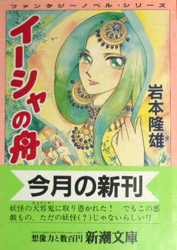

| [岩本隆雄] イーシャの舟 | |
| 岩本隆雄 | |
| (2015) | |
|
イーシャの舟
岩本隆雄
|

プロローグ
かつて通信衛星や気象衛星が浮かんでいた宇宙に、都市が完成していた。
回転する車輪が何百本も並んだような居住区には五万人が生活し、球体が連なった葡萄の房のような工場区の脇には、原材料である小惑星や水や酸素のもととなる彗星の核が係留されている。
すでに、地球からこの新しい都市へ、物資を運ぶ段階は過ぎつつあった。逆に、無重力工場でできた超高品質の工業製品が、地球へ輸出されるようになっている。
都市はもはや、小さいが独立した星と呼んでもいいだろう。
地球からは、数時間に一機の割合で、銀色のシャトルが到着する。
そして、この都市から、本格的な開発が始まった月面都市へと、大型の宇宙船が次々と旅立っていった。
今や、宇宙に滞在する人間の数は相乗的に増加の一途をたどり、毎日数千人の観光客が、気軽に宇宙都市を訪れるようにもなっている。
その宇宙都市から少し離れた場所に、直径五百メートル、長さ三キロの巨大な円筒状の物体が回転していた。
これが、本当の意味での宇宙移民地となる、スペースコロニーの試作第一号島だった。
宇宙都市は、手狭で広い空間などほとんどないと言ってもいいが、この円筒の内部には、地球上と変わらない重力と、広々とした空間が作り出されていた。
現在、人口は一万人だが、建物の高層化が進めば、さらに二万人が住めるようになる予定である。しかし、その順番待ちの人が、五万人以上いるほどの人気だった。
近い将来作られる、この数十倍もの大きさの宇宙島には、山や川、小さな湖まで再現される計画だが、この美験的な島では無理。そのかわりふんだんに緑地が設けられてあった。
広い居住空間と共に、それが人気の秘密だと言っていいだろう。
今やこの宇宙島が、宇宙観光の名所ともなっている。人間は地球に住むべきだと信じる人も、これなら宇宙で住んでも悪くないと思えるほどに、植物は生き生きと育っていた。
島の内部に、十カ所ほどある緑地。その中でも最大でありながら、森林保育地区として、周辺の遊歩道以外への立入りを禁止された場所があった。
地球のある国から持って来られた、小高い木々が繁茂するその場所に立った時、人は、ここが宇宙の真ん中だとは、とても信じられないはずだ。
だが、もしも遊歩道を外れ、森の奥へと分け入ったとしたら、その人は美しい緑地のちょうど真ん中あたりに、ゴミとしか思えないガラクタが、山のようにつめ込まれた広い空き地を発見し、驚くに違いない。
それは、宇宙都市の建設廃材といったものではない。わざわざ地球から運んできたとしか考えられないガソリン駆動式の自動車や電化製品のスクラップ、古新聞古雑誌の中だ。
この場所にたどりつき呆気にとられた人は、やがてそこに一軒の小屋を見つけるだろう。
そして、その倒壊寸前の小屋の前に立った時、再び唖然とするに違いない。
なぜなら、これ以上はないというほどにボロボロのドアには、この場所を永久的に保存すると国連宇宙局局長の名で銘打たれた、プラチナの金属板がきらめいているのだから。
さらにそのプレートの一部には、不思議なレリーフが刻まれていた。
そこに描かれた物体。それは、どう見ても角の生えた妖怪としか見えない生き物なのである。
やがて、この不思議な空き地の事は人々の噂となってゆき、色々な憶測が乱れ飛んだ。
ある人は、テレビでしか見た事がない超のつく有名人達とその空き地で出会ったと言い、近所に住む人の中には、年に数度、森の中から宴会でもしているかのような大騒ぎの声が聞こえるとも語る者もいたが、真相はまるで不明。
やがてマスコミもこの噂を聞きつけ、理由の公開を求めたが、宇宙局はノーコメント。
ただ、あの土地は、ある人物の私有地であり、勝手な立入りは禁止すると述べただけ。
もちろん、そんな事で引き下がるマスコミではない。第一、この試作のコロニーでは、土地の私有は認められていないのだ。不公平だと、世論も騒ぎ始める。
だが、宇宙局はびくともしなかった。
そして、全ての真相は、実用第一号コロニーが完成した時点で発表すると、局長自身がテレビカメラの前に立ち、告げたのだ。
彼女は（局長は女性。まだ、中年と呼ぶには早い年齢だ）、自信たっぷりに続けた。
『その理由を話せば、どうしてこの場所を私有地とし、永久に保存する事にしたのか、どんな方々にも、納得していただけるはずです』と......
不可能と思われていた宇宙への移民を、少々強引ではあるが、着実に成功させつつある現代の英雄（鬼と呼ぶ者もいるが）の言葉に、人々は口をつぐまざるを得なかった。
しかし、この発表によって、人々の好奇心はさらに刺激されてしまったようだ。
『謎の空き地』の噂は、やがて数冊の小説となり、映画化され、大ヒットを飛ばすことになる。だが、その物語たちは、真実とはかけ離れた物ばかりだった。
その空き地の謎解きの物語を、これから始めようと思う。
第一章
二十世紀末の日本。
雲一つない五月晴れの空の下、巨大な工場地帯があった。
アティスタム。国内最大の家電メーカーである。
Ｋ市の面積のおよそ三割を占めるその本社。工場、研究施設が果てしなく続く一角から、一台の中型トラックが出てきた。その運転席には、巨大な仁王像が、体を縮めるようにして座っている。
もちろん、本物の仁王像が車を運転するわけもない。それは人間だった。
薄いセピア色の作業服を着た、仁王像のような体をしたこの若者の名は、宮脇年輝。身長二メートル、体重九十五キロ。鎧のような筋肉を持つ、二十一歳の廃品処理業者である。
だが、今彼が運転するトラックは、工場に来る時に乗っていたオンボロ軽トラックではなく、アティスタムのマークの入った、新品同様の箱型トラックだ。着ているのも社員の作業服だった。
とはいえ、この恐ろしい外見の若者が、服と車を盗んだわけではない。
今朝、いつものように工場から出る廃材を引き取りに来た年輝に、この作業服を着せ、トラックに乗せたのは、アティスタム・ビデオ工場の配送部部長である。
きっかけは、本社のお偉方からの推薦だった。息子の友人を、ぜひ面接してやってくれと、部長に話が来たのだ。
その面接相手が、工場に出入りしている、巨体の廃品処理業者だった。
しかし、よく動くと感心するしかない軽トラックと、これ以下はないと思えるほど汚い若者の姿を見た部長は、唖然とした。確かに今は人手不足だが、こんなのにまで頼るほど、困ってないというのが本音である。だが、お偉方の顔を立てるため、しかたなく部長は、現れた厳めしい顔の巨漢に話しかけたのだ。
ところが、部長室の椅子に窮屈そうに腰かけた若者としばらく話しただけで、彼が年輝の風貌等から抱いていた悪印象は、百八十度反転していたのである。
この若者は、外見とは全く違う中身を持っていたのだ。確かに無口で暗く、無気力の影はあるが、その語り口は誠実だった。時事問題等、一般教養の方も、その辺の大学生並み。さらに驚かされたのは、彼の持つ資格の多さである。
二十一歳という若さにもかかわらず、彼の免許証には、大型と普通の二種を除く、全ての種類に１がついていた上、危険物取扱い、自動車整備士などの国家資格まで持っていたのだ。
リサイクルブームの現在である。何か理想を持って、この仕事についているのかとたずねたが、彼はとんでもないと言う。
では、なぜ廃品処理場などに勤めているのかと部長は問いただした。これだけの資格を持っているのなら、他に、いくらでもましな仕事があるはずである。
そして、話したがらない年輝から、なかば無理やりのように、身の上話を聞き出した部長は、心底驚かされた。
年輝は、こんな顔に生まれついた点を除いても、ひどく運の悪い男だったのだ。
生みの親には死に別れ、施設から引き取ってくれた養父母と祖母をも亡くし、天涯孤独となった九歳の彼には、養父母の借金と、祖母の入院代だけが残されたらしい。
天涯孤独となった少年は、飼っていた犬を施設に連れてゆけないのを知り、家出した。
その彼を拾ったのが、今の雇い主だという。年輝が施設にいきたくないのにつけ込み、会佐という老婆は少年を形式的に引き取り、自分の廃品処理場に放り込んで、重労働に従事させたのだ。しかも彼女は、相続を拒絶できる両親の借金を勝手に肩代わりし、それを脅しのタネにして、成人した年輝をも、奴隷のような条件で、今も扱き使っている。その借金がまだ残っているおかげで、年輝は逃げるに逃げられないのだった。
他にも、陸上で新記録を出したとたんに事故にあい、決まりかけていたスポーツ特待生で、の高校進学がパーになったりと、運の悪さはひどいものだった。
話を聞きおえた部長の腹は、すでに決まっていた。この前途有望な若者を、見逃す手はない。たとえ、法律に訴えてでも、彼を鬼婆の手から救い出してやろうと。
そして。
明日と言わずに今日、腕前を見せてくれと頼まれた若者は、呆気にとられたまま、ハンドルを握らされたのである。
街に出たトラックは、制限速度で山に向かっていた。
年輝の頭には、さっきの部長の話が反響し続けている。
こんな大会社に入社できるだけでも信じられない事だというのに、何と彼は、まだ残っている年輝の借金を、社で肩代わりしてやろうとまで言ってくれた。しかも、もしそれで雇い主が難癖をつけるようなら、裁判所に訴えてやろうとも！
昨夜、友人から、この話を聞いてなかったら（年輝は、まるで信じなかったのだが）、部長の前でぶったおれていたかも知れない。
長年の肉体労働で、木の根のように固まってしまった拳を、顔にぶつけた。
かなりの痛みが、これが現実だということを教えてくれる。
それでも、心にエザ婆さんの姿が浮かぶと、条件反射的なあきらめが彼を襲った。
子供の頃から刷り込まれた老婆に対する恐怖心は、強烈である（年輝は、中学を卒業するまで、老婆が本物の魔女だと信じていたくらいだ）。
年輝の借金は、あと一年で返済できるはずだった。しかし、これまでに老婆の『計算間違い』が二度あり、その度に二年ずつ返却期間が延びていることを考えると、そんな期限はあってないようなものだろう。
しかも老婆は、『お前のため』だと言い、取りたくもない資格を、次々と強制的に取得させた。むろん、その費用も借金の仲間入りをしている。
警察に訴えようにも、彼女は警察署長にまで顔がきく、地元の有力者ときている。
あの老婆から逃げる事など、不可能だと悟っていた年輝だった。
いや、不運だらけの人生の中、彼はあらゆる夢を見ることを、あきらめていたのだ。
しかし、今度は、今度こそは、違うはずだ。
いかに妖怪じみた婆さんでも、世界有数の巨大企業にはむかえる訳がない！
背筋が、興奮でゾクゾクした。思わずアクセルを踏みしめる。
スピードを上げたトラックが、前を走るベンツを追い越した。
市街を抜けたトラックは、軽快に山を目指していた。
荷台は空。山向こうの工場から、ビデオの部品を本社へ運ぶのが、彼の初仕事だ。
バイパス道路から脇道にそれる。古い町並みの細い道を抜け、あまり知られていない峠道に入った。
やたらに飛ばしたトラックや乗用車が向かって来るのを慌てて避けながら、年輝は山道を登っていった。
車は、切り出された崖下を通り過ぎる。そこには、大きな看板ができていた。
「ＮＥＥＤがゴルフ場を作るのか......」
年輝はブレーキを踏んでいた。ＮＥＥＤといえば、アティスタムのライバル会社と言っていい、業界二位の家電メーカーである。アティスタムと同様に、不動産やリゾート開発にも進出していた。
年輝は、かつて一度だけ、今に匹敵するほど運が向いた時があった事を思い出していた。
とはいえ、あの幸運も、あっという間に年輝の前から走り去ってしまったのだが......
やばいと、首を振り、その思い出を追い出す。
こういう暗い考えが、不運を呼ぶのだ。
さらに車を進め、峠に差しかかった。
以前、鬱蒼とした森だったそこには、運動場ほどもある広場ができていた。
小さな竜巻が、赤茶けた土の上から、枯草を舞上げている。ひんやりとした風が、開いた窓から入り、年輝の頬を撫でていった。
五月も終わりだと言うのに、やたらと涼しい日が続いている。
気象異変なのだそうだ。いろんなマスコミが、ヒステリー気味に、環境破壊と関連づけて説明しようとしているのは、彼も知っていた。
もっとも年輝は、そんなものに全く関心がない。
地球の未来どころか、明日の事さえ考えないようにするのが、今まで彼が自殺もせずに生きてこれた秘訣だったからだ。
だが、何年振りかで前途に光が見えたせいもあるのか、この光景に少し心が痛む。
施設から逃げ出し、太一という雑種の老犬を連れて都会へと向かった時、年輝は歩いてこの峠を越えた。
真冬だった。腹を空かした年輝と太一を救ってくれたのは、峠の木々に挟まれた祠に供えられていた、三つの大福だったのだ。
その祠まで、木々と共に消え失せていた。
徐行し、祠を探す目が、別の物を発見する。
広い建設現場への門前に、赤い車が止まっていた。その横で、ショートカットの女性が、必死に手を振っている。呼ぶ声も届いた。
見たとたん、年輝にも事情が飲み込める。彼女の車は門脇の側溝に、前輪を突っ込んだらしい。バンパーの隅が崖にめり込んでいた。もったいない事に、ポルシェだ。
人生をかけた仕事の途中だが、見過ごすわけにもいかず、車を止めた。
女性は、車から下りて走ってきた大男に、ギョッとした目を向け、後ろに下がる。
この手の顔をされる事には慣れている年輝だが、どうもいつもよりも怖がられているような気がした。
「どうしました？」
年輝の声は、姿に似合わず優しい。女性はホッと息を吐き、後ずさるのをやめた。
「み、見ての通りなの。手を貸してくれませんか」
年輝は首をかしげた。この女性、顔色が真っ青だ。それに、服が濡れている。そして、なぜか建設現場の方を、せわしなく振り向いていた。彼以外の何かに怯えているようだ。
恐れの対象は、削られた山の尾根の先にあるらしい。高い車を事故ったせいかも知れないが、それにしても様子が変である。
一瞬、好奇心をそそられたが、運命を変えるはずの仕事の途中である。さっさと用を済まそうと、彼は動いた。
前輪を脱輪させた赤いポルシェの前に回った年輝は、バンパーの下に手を突っ込み、一気に持ち上げて、あっけなく路面にもどす。
十歳になる前から、力仕事をして来た筋肉は、見掛け以上の代物である。
女性は唖然とした顔で、怪力の持ち主を見上げた。
「凄い力ですね」
まだ顔色は良くないが、驚く女性には、さっきまでの恐怖に近い表情はない。
少し落ち着きを取りもどした彼女を見たとたん、年輝の目が、少し大きくなった。
可愛い娘だった。まだ二十歳前に見えたが、顔に似合わず、気は相当強そうだ。はっきり言って、好みのタイプである。もっとも、こんな子が自分に惚れてくれる可能性を夢想するほど、彼は楽な人生を送っていなかったが......
「あの、この上迷惑だとは思うんですが、お願いがあるんです」
必死の表情で、彼女は言った。その切迫した雰囲気に飲まれ、ついうなずいてしまう。
「すぐに済む事なら」
彼女は、ガクガクするほどに首を縦に振った。そして、緩い坂になった道を指差す。
「ここから三百メートルほど入った場所に、池があるんです。その近くに、電子手帳が落ちているはず。それがないと、とても困るんです」
さすがに、年輝も眉をひそめた。そんな事くらいなら、自分でいけばいいばずだ、
その表情に気づいたのか、突然彼女は、「いたたた」と、足を押さえてうずくまった。
「脱輪した拍子に、足を打ったんです。どうか、頼みます」
明らかに嘘だと分かったが、しかたないと、年輝は駆け出した。それくらいから、数分で済むだろうから。
大男の後ろ姿を見て、彼女はほっと胸を撫で下ろしていた。
あの電子手帳には、重要機密がつめ込まれている。プロテクトはかかっているが、あれを捨てていくわけにはいかなかった。
「......ああいうタイプの人間は、幻覚なんか見ないはずよ......」
そう、自分に言い聞かせるようにして、鬱蒼と繁る木々に挟まれた道を望む。だが、その全身は、再び細かく震え始めていた。
そこは、異様な雰囲気に満ちていた。
球場ほどの広さの台地に、たくさんの建設機器が散在しているのだが、人影一つない。
かなり大きな池の水は、風もないのに大きく揺れており、足元の露出した土がびしょ濡れだった。大きな看板が池に倒れており、その回りには黄色いヘルメットや手拭いが散乱している。そして、そこから少し離れた場所には、大型のパワーシャベルが逆立ちしていた。
事故か？ しかし、どんな事故を起こせば、この巨大なパワーシャベルが完全にひっくり返るのだろう？しかもシャベルの上部は、半ば地面にめり込んでへしゃげている。
不気味だった。普通ではない。何がここであったのだ？
突然、この峠道に入る時すれ違った、無茶な運転をするトラックの集団を思い出していた。必死の形相でハンドルにしがみつく運転手の姿が、目に焼きついている。
荷台にまで、違法に人間を満載していたあのトラックたち。あれは、ひょっとして、この現場から逃げてきたのではないのか......
「キョッキョッキョッ！」
年輝は思わず落ちていた大きな石を拾っていた。 バサバサと、鳥が木の枝から飛び立つのが見える。
ふうっと息を吐いて、持ち上げた石を落とす。珍しく心臓が高鳴っていた。
何にせよ、早く頼まれた物を探して帰った方が良さそうだ。
きょろきょろと、池の回りを見ると、すぐに目指す物がみつかった。何かが乗っている平たい岩の近くだ。
駆けていって、かなり小さめの電子手帳を拾い上げる。
その視線が、岩の上に置かれた、不思議な陶器にあって止まった。
真っ白な陶器が、見事に二つに割れている。その元の形が、年輝が見慣れているある物体にそっくりだと気づいたのだ。
「卵？」
思わずつぶやいていた。
割れた卵状の物体の内部に、かなり粘性の高そうな液体が残っている。それも、まるで白身のように見えた。
だが、これが卵のはずがない。何せ、その大きさは、一メートル近くあるのだ。こんな、お化けのような卵から生まれるものなんか、この世に存在するはずがない。
しかし、そう思いながらも、年輝の全身が一瞬に冷たくなっていた。
首筋の毛が、逆立つ。
何かが後ろに、それも、息がかかるほど近くにいるという気がしたのだ。
ゆっくりと振り返った。
何もない。静まりかけている水面が広がるばかり。
気を取り直し、電子手帳を手にして歩き出した年輝だったが、すぐに立ち止まった。
......気のせいではなかった。
確かに、何かがすぐ後ろにいる。恐ろしく近くにだ。
年輝は、バッと振り返った。
やはり何もいない。
額に汗が湧いて出ている。
ボヨンと、何か柔らかな物が後頭部に当たった。反射的に前へ逃げ、そして、振り返った彼の口が、ポカンと開く。
そこには、銀色の球体が浮かんでいた。直径一メートルほどだろう。ぼうぜんとその銀色の表面を見つめる年輝の目の前で、球体はゆっくりと降下する。
球体の内部に、小さな人らしき影がわだかまっていた。
なぜか、体の他の部分はほとんど見えないのに、目だけははっきりそれとわかる。
普通の目ではなかった。小人のような身長の癖に、目は人間並みの大きさ。しかも、その瞳孔は、切り裂かれたように、真横へ開いていたのだ。
その瞳は、年輝をじっと見つめていた。ただ、じっと......
池を真ん中にした、ほぼ円形の台地を取り囲む木々が、突然ざわめき始める。
突然の突風が、高い木々の枝葉の合間をつらぬいたのだ。
その音が、年輝を正気づかせた。
爆発するように駆け出した。必死だった。
全速力で走り出した左足が痛む。昔、仕事中に事故った後遺症だったが、今はそんな事を言っている場合じゃない。少し足を引きずりながら、やっとの思いでポルシェの所までたどりついた時には、全身冷汗にまみれていた。
彼女は車の外で待っていたが、年輝の顔に恐怖を見つけ、思わず顔を引きつらせた。
「......何だ、あれ」
「何の話？」
彼女は、とぼけながらも、車に少しずつ近づき始める。
「何か妙なものがいた。君は、それから逃げ出したんだろ」
「さ、さあ、なんの事よ。まさか、この世に妖怪がいるとでも言いたいの？」
「妖怪？ 角があったように見えた......やっぱり鬼か?!」
驚いて眼をむく年輝に、娘がやけにバイブレーションの効いた声で笑う。
「よよ、妖怪なんか、存在しないわ。も、もうすぐ二十一世紀なのよ」
蒼白な顔で無理やり笑う彼女に、年輝は呆れた。震えるほど怯えている癖に......
言っても無駄だと悟った年輝は、背後の坂を振り返りながら、電子手帳を突き出した。せっかく、運が向いてきた所なのだ。妙な事件に巻き込まれるなど、まっぴらである。
「受け取れ。俺は逃げる」
電子手帳を見て、ほっとした彼女の顔が痙攣する。年輝に向いていた視線がじりじり上がり、彼のはるか頭上をみすえた目が、恐怖に見開かれた。色を失った唇だけが、ひきつった笑いを浮かべている。それは、背筋がぞっとするような表情だった。
「ぎゃーーーーーっ！」
とてつもない声量で、娘が悲鳴を上げた。一瞬、年輝の心臓が止まり、山の鳥たちが飛び立つ。
ポルシェに逃げ込んだ彼女は、猛烈な急発進で路面に白い煙を上げ、まっしぐらに峠を下っていく。
年輝は、電子手帳を差し出したままの姿で、硬直していた。
後ろに何かがいた。それは確信だった。後ろを向こうとするのだが、体が動かない。
地面に張りついたような足を無理やりはがし、年輝は振り返った。
その瞬間に、気配は消え失せる。背後には、何もない。
体中、汗まみれだった。呼吸は荒く、両手はぎゅっと握りしめられている。
「......出てこい、化け物」
風もないのに木々が揺れた。
年輝は、じりじりと、その場から逃げ始めた。
しかし、百メートルもいかない内に、トラックの事を思い出し、足が止まる。あれを置いて帰るわけにはいかない。心も体も、一刻も早くこの場から離れたがっていたが、彼の責任感の方が強かった。
その時だ。エンジンのスタート音が、年輝の耳を打った。
再び全速力で駆け出した年輝は、峠にたどりつく。その前方で、トラックがゆっくりとバックで走っていくのが見えた。
「待てっ！」
大声で怒鳴る。すぐ先はゆるいカープになっており、そこにはガードレールがない！
年輝は必死に走った。しかし、トラックとの距離は、絶望的に縮まらない。ついに、彼の見守る中、トラックは数十メートル下の谷底へと落ちていった。
ようやく落ちた場所までたどりついた年輝が、谷底を見た瞬間、動いていたエンジンに、ほぼ満タンだったガソリンが引火した。谷底で横倒しになっていたトラックの底から吹き上がった炎は、あっという間に車全体を包み、赤い炎と真っ黒な煙を上げ始める。
その中で、あの異様な物は、すでに気配すら感じられなかった。
警察での事情聴取を終え、会社にもどった年輝は、一人、自分が乗ってきた軽トラックで、工場を後にした。
弁償はしなくていいらしく、部長はかえって労ってくれたのだが、心は重く沈んでいる。もしもこれが荷物を満載しての帰りだったら、即、話がだめになったに違いない。
それだけでも運は残っていると思いたいが、突然、一週間の試用期間がつく事になってしまった。もしも、その期間中に再びミスをすれば、もとのもくあみというわけだ。
天国へ、指一本でぶら下がっている心境である。落ちれば、再びあの鬼婆の待つ地獄へ一直線......
年輝は、大きく吐息をついた。
それにしても、峠で見たのは、何だったのだろうか？あのポルシェの女性も、どうやら何かを見たようだが、本当に妖怪だったのか？
しかし、妖怪がトラックを谷底に落としたなどと言っても、誰も信用してはくれまい。馬鹿な言い訳だと、かえって立場を悪くするだけだったろう。
だから年輝は、警察にも部長にも、一言の弁明もできなかったのだ。
ふと、ある思いつきが彼の心をよぎる。
ひょっとして、エザ婆さんが、自分の手下の妖怪を使って、年輝の裏切りを妨害させたのかもしれない。
「ば、馬鹿馬鹿しい......」
年輝はつぶやいたが、その顔は蒼白だった。
あの人間離れした婆さんなら、やりかねないと思えてしまったのだ。
都会の真ん中に、大きな公園がある。
国際的な陸上競技が行われる立派な競技場や、博物館、大きな池を中心とした植物園もふくめた公園の敷地は、全周三キロはあった。
緑に覆われた美しい公園の端っこに、虫食い穴のような、薄汚い一角がある。この公園ができると決まった時、一人の地主が最後まで手放さなかった場所だ。もとは畑だったその土地で、地主は廃品処理場を始めるという、とんでもないへそ曲りぶりを発揮。今も町一番の変人と呼ばれ続けている。
だが、その廃品処理場も、決して上手くいっているとは言えない。
ただでさえ人手不足の折り、ろくな給料も出さず、社会保険もない雇い主の所で働く者などいるわけもなかった。今や処理場で働いているのは、一人だけである。
ここの唯一の作業員。そして、この汚い場所にいまだに住み続ける人物こそ、年輝であった。日暮れ前。彼を乗せたオンボロ軽トラックは門をくぐり、雑然とした処理場に入る。
綺麗な夕焼けが、ゴミたちをオレンジ色に染めている中で、年輝はトラックの荷台から荷物を下ろし始めた。
事故のおかげで、予定が全て狂ってしまっていた。明日は、週に一度、エザ婆さんが作業の見回りに来る日だ。作業をできるだけ進めておかないと、何を言われるかわからない。
あっと言う間に荷物を下ろし終えた年輝は、廃車の解体にかかった。
「ウオオオォォォォォオオッ!!」
巨大な金槌が、廃車のフロントガラスにめり込んだ。プラスチックを間に挟んだ強化ガラスが、一瞬で真っ白に変わり、爆発するように四散する。
続いて年輝の両手は、その事のドアに取りついた。
「うぬぬぬぬぬぬっ......」
歯を食い縛った年輝の顔が、一気に真っ赤になり、メリメリっという音がする。
「うがあっ！」
ドアが引きちぎられ、ついで座席がそれに続いた。
むろん、いつもこんな解体をしていては、いくら年輝でも体が持たない。これが、彼のストレス解消法だった。やはり事故の一件は、相当の憤懣を覚えさせていたようだ。
年輝は、まるで怪獣のように、数台の乗用車を破壊していった。
「こんの野郎っ！」
千五百ＣＣのエンジンを高々と持ち上げた年輝が、ガラス置き場に放り投げる。
ガラスの割れる凄まじい音が、快感となって年輝の背筋を走った。
気に入った彼が、もう一発と、クランク軸を持ち上げた脇を、何かが横切る。
驚いてその方向を見るのと、再び物凄いガラスの割れる音が同時だった。
事故で目茶苦茶になった大型バイクが、エンジンの横に逆立ちしている。
『キャハハハハハハッ！』
弾けるような笑い声。そして、年輝の前にあった原付バイクが、ふわりと浮かび上がる。その真上には、銀色の玉があった。
「お、お前！」
年輝は、手に持つクランク軸を、槍のように持ち替えた。
恐怖はあったが、今度は武器になる物を掴んでいる。それに、さっきの恨みを忘れてなどいなかった。
「くらえっ！」
放物線を描き、重い鉄棒が飛ぶ！
銀色の球は、軽々とそれを避けると、浮かべていた原付を年輝目がけて落とした。
「ふんっ！」と、年輝は頭上で受け止め、タイヤを掴むと体を回転し始める。
凄まじい遠心力で、原付の部品が辺りに撒き散らされた。
「でやぁっ！」
今度は、命中した。音もなく原付は銀色の球体にめり込み、そして跳ね返った。
スクラップの山の一つが、原付の当たった衝撃で崩れる。
『キャッキャッキャッ』
空中で、大きな銀の玉は体を震わせて喜んでいた。
年輝は、荒い息をついている。さすがに、限界だった。
「......こいつ、遊んでるつもりなのか......」
年輝は、空中に浮かぶ球体を見つめてつぶやいた。
それは、夕映えの中で少し透けているようだ。中にうっすらと小さな人影（？）が見える。胡坐を組んでいるらしい。しかし、その大きさは立ち上がってもせいぜい三～四十センチといった所だろう。角がある事から鬼とするなら、子鬼かもしれない。
「お前、エザ婆ァの回し者かっ?!」
年輝は、荒い息をつきながら、怒鳴る。
と、いきなりその銀の玉が、暗くなっていった。
いや、違う。消えてゆくのだ。まるで空気に溶け込むかのように、銀の玉は見えなくなった。
消えたまま、また、頭上に何かを落とす気か？
そう気づいた年輝は、慌てて武器になる物を探した。焼却炉を使う、火掻き棒が目に入り、飛びついて掴んだ。
汗は、冷汗に変わっている。
周囲には、何の気配もなかった。
と、その時、突然背後から小さな物音が！
「この野郎っ！」
恐怖で引きつった顔で反転した年輝は、振り下ろしかけた火掻き棒を、危ういタイミングで止める。
「よ、よお......」
太い鉄棒の下で、顔面を蒼白にしているのは、妖怪ではなかった。
それは、三島亨。年輝の唯一の友人である。
「ごめん、ほんとに悪かった......」
年輝は、何度も謝りながらガタピシいうドアを開き、手探りで電気のスイッチを入れる。
蛍光灯の明かりが、小屋の中を照らした。本当に小さい。床面積は八畳もないだろう。しかも、その半分は土間で、古新聞などが山積みになっている。奥には、三畳の畳が敷いてあるが、これなら板の間の方がましだと思えるほどのボロボロ。これは小屋と言うよりは、バラックだった。
この場所で、年輝は十二年暮らしたのだ。
だが、この小屋には、ボロいだけでなく、別の不思議な雰囲気もあった。
巨大な棚状に作られたベッドといい、ドアに付けられた不細工な舵輪といい、小屋は船の内部に似せてあったのだ。この小屋を作ったのは、年輝自身だった。
九歳になるまでの数年間、死亡した養父母にかわり年輝を育ててくれたのは、養父の母、つまり、義理の祖母に当たる女性だ。
祖母は、元小学校の先生で、塾を開いて年輝を育て、きびしく教育してくれた。彼女が今の年輝の性格を作ったといってもいい。その祖母の父親と夫が、船乗りだった。
幼い彼が毎晩聞かされた物語に、海に関するものが多くなったのは、自然だったろう。
いつしか年輝の中に、船乗りになりたいという夢が生まれたのも、不思議ではない。
しかしその夢も、今や壁に張ってあるヨットのポスターのように、色褪せ、黄ばんでいた。ドアの舵輪も、壊れたままだ。
中学生の終わり、自分が実は、エザ婆さんの奴隷だということに気づいてから、彼は全ての希望を持てなくなっていた。そして、夢を忘れると同時に、その顔からは、笑みも消えたのである。中学時代、結構多かった友人が、いつしか亨一人となった原因は、彼から人間らしい表情が消えたせいでもあった。
「ごめん」と、年輝は腰が抜けかけた亨に手を貸して、畳に座らせた。
「い、いや」と、何気ないポーズを崩さず首を振るが、享の顔色はまだ真っ青だ。
今の所顔色が悪いが、かなりの二枚目だと言っていい。某一流大学に在籍中で、親は金持ちという、年輝とは、正反対の境遇にいる彼だが、初対面から不思議と馬があった。この亨は、小屋に来て以来の彼の不幸の多くを、その目で見て来た人物でもある。
「本当に、悪かった。会社の事も。せっかく、推薦してもらったのに......」
そう言って、年輝はもう一度頭を下げた。
彼をアティスタムに紹介してくれたのは、亨の父だったのだ。父の機嫌のいい時を狙い、苦労してようやく頼みこんだのだが......
「一体、どうしたんだよ？ あんなミスする年輝じゃないだろ？」
溜め息をつきながら亨は、持ってきた大きな手提げ袋を示した。
「フライドチキンとコーラだぞ。喰いながら話を聞こうと思って」
落ち込んでいた年輝の顔が、チキンと聞いて少し持ち上がった。
大好物のフライドチキンを食べながら、年輝は今日あった事を全て語った。むろん、例の妖怪の件もだ。
「あれは、ひょっとして、鬼婆の手先じゃないかと、俺、思うんだ」
そう真面目な顔で告げた年輝に、亨は爆笑した。
「いい加減にしろって。お前があの婆さんを怖がるのはわかるよ。僕だって怖い。でもな、あの婆さんは人間に間違いないって」
だが、そう言われても、年輝は半信半疑という表情である。
「しかし、妖怪ね......」
ひとしきり笑い終えた亨の顔が、不意に真剣になった。
「年輝がいかされた池だけど、峠の近くに大きな池のある場所って言ったら、入らずの山しかないはずだな」
「入らずの山？」
「ああ。不気味な話がたくさんある所だ」
「じ、じゃあ、あの変なやつは、入らずの山の妖怪なのか？」
「多分、そいつは峠の鬼だな。ＮＥＥＤの馬鹿共が、池に封じ込められてた妖怪を解放したんだろう」
「峠の鬼......」
「うん、そうだ。筋書きは、こうだったな。昔、峠に一匹の天邪鬼が住みついた。悪戯好きな妖怪に、人々は困る。そこに現れた利口な馬飼いが、天邪鬼を騙して大釜に閉じこめ、入らずの山の深い池の底に沈めた」
年輝が、驚いて問い返す。
「天邪鬼？」
その妖怪なら、昔祖母から聞いた事がある。
瓜子姫の昔話に出てくるお化けだ。その鬼は、瓜子姫を家から誘い出し、木に縛りつけ、姫の代わりに自分が嫁にいこうとして見抜かれ、村人に退治されてしまう。
普通の村人にやられるのだから、決して強い鬼ではない。
「なるほど。するとあいつは、天邪鬼か」
少しほっとした年輝だった。
「安心するのは、まだ早いぞ」
亨は、そう言って続けた。
「もう一つ別の話もあるんだ。弘法大師。知ってるだろ？高野山を開いた真言宗の宗祖。ほとんど超能力者としか思えない人物だ。この話では、彼のような人物しか封じる事ができない怪物として、人喰い鬼が出てくる」
「人喰い鬼?!」
年輝の背筋に、ぞっと冷気が走った。
あの山の中で、逆立ちしていた巨大なパワーシャベルの姿が脳裏に浮かぶ。
「で、本当の所は、どっちだ？ 天邪鬼か、人喰い鬼か」
「柳田国男って知ってるか？」
逆に問い返され、年輝は首を振る。
「彼は、民俗学の産みの親で、妖怪についても学術的な考証をしてる。彼によると、妖怪ってのは、かつては神だったらしい。それが零落して河童や物の怪などになるそうだ」
「か、河童が神さん？」
「そう。水を司る神だとさ。現在の民俗学では、批判も多いらしいが、僕は大筋で認めてもいいと思ってる。キリスト教なんかでも、零落した神はいくらもいるからな。サタンってのも、その一つらしいし。つまり、妖怪ってのは、僕が思うに、自然界に対して人間が抱いていた恐れが強調されたものなんだ。雷や嵐や洪水。そんな人間の力ではどうしようもない力の象徴なんだよ。だから、怖い。そして、数ある妖怪の中には、単なる迷信じゃなく、本当に実体としての妖怪が存在しても不思議じゃないよ。自然の怒りの化身としてのね。それが、現代に蘇るのは、ある意味で必然じゃないか？」
「必然？ この科学時代にか？」
「この時代だからだ。見てみろよ、今の世の中を。自然が怒り出しても当然だぞ」
年輝の心に、草木をむしり取られた酷い峠の様子が蘇る。自然の怒りの化身であるらしい妖怪が現れても、確かに不思議ではなさそうだ。いや、現れて当然なのかもしれない。
「なるほどな。すると、鬼婆の手先じゃないんだな、あいつは......」
「あの婆ァは、自然を潰す方じゃないか。あいつもゴルフ場を持ってるんだぞ」
年輝は、安心すると共に、改めて彼の博識ぶりに驚いていた。
「もしかして、今、妖怪の研究してるのか？」
「訳ないだろ。妖怪物のゲームに今、凝ってんだ」
ちょっと照れながら、亨は頭を掻く。
ゲームとは、コンピュータゲームの事である。年輝と違い、裕福な家庭に育った彼は、幼い頃からコンピュータに慣れ親しんでいた。むろん、遊びの道具としてである。長じてコンピュータ関連の学部に入った今も、その根底は変わっていない。
「俺が出会ったのは天邪鬼か人喰い鬼人かどっちなんだ？」
話をもどし、改めて尋ねた年輝に、亨は答えた。
「柳田国男は、こう書いてる。妖怪は、その神の前身が時代を経るにしたがって忘れ去られていく中で、凶悪化していくと。つまり、もともと水を司る神だった河童が、いつの間にか人を溺れさせたり、尻から手を突っ込んで肝を取ったりするって事だ。峠の鬼の話が幾つもあるのは、時代が下るに連れて、より凶悪な妖怪に変わってきた可能性が高いな」
「あの妖怪は、天邪鬼ってわけか？」
「そう思っていいんじゃないか？ ただ、天邪鬼が釜でなく、卵から出てきたって所がちょっと気にかかるけどね」
亨は、軽くそう言い切った後で、ニッと不気味に笑った。
「でもな、天邪鬼にも色々あるんだぞ。各地方によって、天邪鬼の性格も違っていて、瓜子姫を喰っちまうのも少なくない。妖怪は、妖怪なんだからな」
年輝の巨体が、ブルッと震えた。
「そ、それじゃ、呑気に話し合ってる場合じゃない。今はおとなしいが、妖怪は近くにいる。そうだ、天邪鬼だとすれば、大釜に閉じ込めればいいんだな？あるぞ！裏に！」
珍しく早口で言った年輝が、あわてて釜を取りに立ち上がるのを、亨が止めた。
「大丈夫だよ」
「話しただろ？ 俺は、その鬼と一戦やった所だ」
「それだけは、年輝の気のせいだよ。峠で脅かされ、気が動転していたんだろう」
「どうして、言い切れる？」
焦る年輝が必死の形相で亨につめ寄る。
だが、その迫力あり過ぎの顔にもめげず、亨は自信を持って答えた。
「妖怪ってのは、人には憑かないからだ」
年輝は、一瞬言葉を失った。
「人に憑かない？」
「そう。人に憑くのは、幽霊。妖怪、つまりお化けは、場所に憑くものだからな。それに、天邪鬼は、あの峠が乱開発されたから出てきたんだ。山を守るためにな。何でこんな町の真ん中に出る必要があるんだ？大体、取り憑くにしても、何で年輝なんだ？年輝は部外者もいいところじゃないか」
なるほどと、脱力した年輝は、亨を見た。
妖怪は人には憑かないという説に、かなりの自信があるようだ。亨の説を覆すだけの自信も知識も、年輝にはない。しかし、本当に、さっき見たのは幻覚なのか??
ちょっと混乱した年輝は、手にしたままで飲むのも忘れていたコーラを、ぐいっと一息で空ける。喉がカラカラになっていた。
「そういうことだ。ま、今回は運が悪かったと思ってあきらめるしかないな。あいつは、峠の妖怪。峠にさえ近づかなければ、こんな目にはあわない」
言い切った亨も、コーラを口に運んだ。
「それよりも、明日からが大変だぞ。今日の失敗で、一週間のテスト期間が置かれたんだろ？年輝の事だから、もうミスすることはないと思うけど、今度やったら、全部パアだ。もちろん、この話、鬼婆にはばれてないだろうな？」
「多分......」
それが一番問題だった。もしも今の時点でばれれば、もとのもくあみどころじゃない。鬼婆の事だ、全力をあげて年輝の就職を妨害するだろうから。
年輝は、ぼそっとつぶやく。
「......天邪鬼なんか、あの鬼婆に比べれば、可愛いもんだ......」
亨も、その意見に全く同感だった。
それから数時間後。
遅くなった亨も泊まった真っ暗な小屋から、静かな寝息が聞こえている。
その音に混じり、異音がし始めていた。
深い眠りについていた年輝だったが、間近でするその物音に、ふと眠りを妨げられ、目を開けた。
カリカリカリカリカリ......
何かが固い物を囓っている音がする。
寝ぼけ眼のまま、年輝は畳に布団を敷いて寝ている亨を、暗闇の中、透かして見た。
隙間だらけの小屋である。外から入ってくる光には、不自由しない。どうやら、月が出ているようで、天井からも細い光が差し込んでいる。
亨は、死んだように熟睡していた。
カリカリという音は、依然として続いている。
鼠かと思った。公園の中にあるという土地柄のおかげで、鼠や虫の類は結構多いのだ。小屋に入ってきた事もある。だが、どうも鼠ではなさそうだ。何かを囓る音、それが鼠にしては力強すぎた。カリカリという音に混じり、時おりボリッという重い音がする。
では、猫か犬だろうか？
それはあるまい。いくら隙間だらけの小屋とはいえ、戸と窓を閉めれば犬猫は入れないはずだ。すると、一体なんだ？
天邪鬼という言葉が、一瞬心に浮かぶ。
一気に年輝の目が醒めた。動悸が早まり、口の中が渇く。
まさか......
妖怪は、場所に憑くはずだ。自然が、自分を破壊した連中に仕返しするために、形を成したのが、妖怪のはずだ。どうして、こんな所に来る訳がある？
だが、そう自分に．言い聞かせても、音は止まらなかった。
それは足元でしている。そう、二人が食べたフライドチキンの食べがらを置いた、土間からだ。顔を上げて、足元を見てみた。なぜかぼんやりと光っている。蛍光灯のような電気の光ではなかった。蛍のような、熱を感じさせない不思議な輝きである。
年輝は、狭い寝棚の中、できるだけ音を立てずに体の向きを変えていった。寝息のふりをしながら、ほとんど永遠とも思える時間をかけて、土間の方へと頭を入れ換える。
赤白ストライプ模様の入った大きな箱が、まず目に入った。蓋が開いている。その陰に隠れ、何かが動いていた。
蓋が揺れた。最初に見えたのは、銀色の玉である。ただし、その大きさは、せいぜいゴルフボール大に縮まってしまっていた。その玉が、ほのかな青い輝きを発しているようだ。
そして、年輝は見てしまった。
二人が食べ残したチキンの骨を、両手に持って箱を蹴飛ばした生き物の姿を！
その生き物は、年輝からは横向きで座り、すっ裸のようだった。
腰まである長いザンバラ髪が、その背中を覆っており、毛の中から手足が伸びているかのようだ。角は、三本見えた。額から少し上に一本。そして、そのすぐ後ろに一本（これが一番大きい）、最後の一本が一番小さく、ほとんど髪の毛に隠れていた。並び方は、額から後頭部に向けて一直線だから、まだ小さな角が髪に隠れてあるのかもしれない。目は、髪に隠れて見えなかった。
骨を食おうと開いたその歯は、まるで鮫。三角の凶悪な歯が、ずらりと並んでいる。その歯が、いとも簡単に鳥の骨を囓るのだ。
骨を握る手。指は三本しかない。鬼の指は三本だと、漫画か何かで読んだ事が思い出された。足の指もどうやら三本しかなさそうだ。
その身長は、角を入れても四十センチないだろう。
確かに、鬼である。その鬼が、一心不乱に、骨にむしゃぶりついているのだ。よほど美味しいのか、時々、全身をバタバタさせる。
『......こいつが、天邪鬼......』
年輝は、いつしか恐怖を忘れていた。この妖怪が、あまりにも無心に骨を食べる婆が、古い記憶を呼び起こしている。太一。そう名づけた雑種の犬と、暮らした記憶を......
あれは本当にどうしようもない犬だった。
大食で、根性が拗けていて、のべつまくなしに吠えまわり、しかも噛み癖があった。
それでも、一度飼った以上、太一を年輝は目一杯に面倒をみた。太一が噛みついた子供の家に謝りにゆき、吠え続ける晩は自分の寝床に押し込んだ。
一年の入院の末、祖母が亡くなり、年輝が施設に入ることになった時、そこへ太一を連れていけない事を知り、しかたなく家出まで決意したのである（施設の世話になりたくないという気持ちもあったが）。
太一を連れて、憧れの船に乗るつもりだった。港にさえいけば、何とかなると思った。峠をやっとの思いで越え、歩いて港についたのは、二日後の事である。
だが、小学生離れした体格の持ち主とはいえ、一目で未成年とわかる年輝と、みすぼらしい老犬の取り合わせを乗せてくれる船など、あるわけもない。
しょうがなく密航する事に決めた。
だが、そこで年輝は、決定的な太一の裏切りにあってしまう。
やっと夜になり、貨物船に忍びこもうと隠れていた所、腹を空かした太一の馬鹿が、いきなり鳴きわめき始めた。そのおかげで捕まった年輝は、ガードマンの詰所まで連れていかれ、そこで最悪の出会いをしてしまった。
ちょうど、積荷の点検に来ていたエザ婆さんが、年輝の身元引受人になってしまったのだ。
年輝は、何百回となく繰り返した言葉を、再び心の中でつぶやいた。
『あの馬鹿犬さえいなければ、あんな鬼婆に拾われずに済んだのに......』
しかも、この小屋に入ってからしばらくして、太一は老人ぼけにまでなった。
自分では餌も取れなくなり、目も見えなくなった太一は、さらに横暴になり、朝まで吠え続ける日々が、ほぼ一年の間続いたのである。
太一の墓は、小屋の脇。畑の後ろにあった。
あの犬が彼に悪運を運んできたのだ。憎んでも、憎み足りないほどの馬鹿犬だった......
だが、そう思いながらも、年輝の顔はなぜかかすかにほころんでいる。
まだ歯が丈夫だった頃、太一もフライドチキンの骨が大好物だった。この妖怪のように、転げ回るようにして喜んだものだ。あのとんでもない犬も、食べ物をもらう時だけは、可愛いぶりっこをしたのである。
一本の骨を食べてしまい、その掌までもぺろぺろ舐める妖怪の素振りに、年輝は思わず隠れていた事も忘れ、身を乗り出していた。
その気配を感じたのか、突然、天邪鬼は年輝を見た。
目がやたらと大きく、鋭い光が満ちている。かなり驚いているようだ。
年輝の目の前で、妖怪の上に浮かんでいた銀のゴルフボール（？）が、一瞬にして巨大化した。そして次の瞬間、妖怪はその中に飛び込んだのだ。
天邪鬼を飲み込んだ銀の玉は、すっと消滅した。
年輝は、唖然と、球体が浮いていた空間を見つめた。
だが、その心には、もう恐怖はない。
天邪鬼が、綺麗に食べつくしたフライドチキンの空箱を見ながら、彼は気づいていた。
お化けが恐いのは、正体がわからないからなのだ。
顔は怖いが、まるで子犬のような無邪気さを見た今、生き物が恐いとは思えなかった。
頭の中に、池の畔で見た、割れた卵状の物体が浮かぶ。では、あれが妖怪の卵だったのかもしれない。工事の連中が、その卵をあの逆立ちしていたパワーシャベルで割ったのではないのか？そして、妖怪に反撃された......そう考えると、辻褄は合いそうだ。
すると、あの妖怪は、生まれたばかりの赤ん坊かもしれない。
多分そうだ。でなければ、同じようにガラスを割って喜ぶはずもなかった。殺して喰うためなら、黙って年輝の上に車の一台も落とせば、それで済むわけだから。
それでは、トラックを燃やしたのも、いじくりまわしている内に、偶然エンジンがかかったと思った方が妥当だろう。
「......つまり、俺は、あいつに気に入られたわけだな......」
それが、年輝の結論だった。本気で危害を加えるつもりはなさそうだし、場所に憑くという妖怪が街に降りてきた理由は、それくらいしか考えつかなかった。
あの山の中で、年輝は妖怪に気に入られたのだ。鬼が生まれたばかりだとすれば、とんでもない体格のおかげで、妖怪仲間に間違われた可能性も否定できない。
やはり、釜だなと、年輝は思う。利口な馬飼いがしたことを、現代でもう一度やる羽目になりそうだ。ちょっと可哀そうな気もするが、もう一度、今日のような失敗をすれば、全では終わりなのだから......
全ては、明日だ。
深い深い溜め息をついて、年輝は目を閉じる。
再び二人の寝息が始まった小屋の隅に二つの目が開いたのは、その少し後の事だった。
第二章
「起きんか！ このでくの棒め！」
怒声と共に、寝ている年輝の頭へ、節くれだった竹の杖が振り下ろされた。
ゴスッという鈍い音がし、年輝の目から火花が飛ぶ。
驚いて起き上がった彼の前には、干し葡萄のような皺くちゃの顔があった。背丈は年輝の半分ほどだが、その眼光は恐ろしいまでに鋭い。
最上級の大島紬を着たこの老婆が、年輝の雇い主であった。
「お、お早うございます！」
あわてて挨拶する年輝の横で、声で目覚めた亨も反射的に復唱する。この近所で子供時代を過ごした者なら、目の前に立つ老婆がいかに恐怖の存在であるかを知っていた。
会佐末。終戦後、どこからともなくこの地に流れ着き貿易業で成功。土地を買い占め、今では地域の長者番付に毎年名を連ねるほどの資産家になっているのだが、これがとてつもない偏屈婆ァだった。人の言うことは絶対に聞かないどころか言われた事の逆ばかりする。
家族もなく、一人暮らしを八十近い今日まで続けているのも、その偏屈さが原因だろうと近所では噂されていた。彼女は子供が嫌いらしく、悪さをする子供を見かけたら、徹底的に折檻することでも有名。ただし、これには感謝している親も多い。『エザ婆さんに渡すよ！』と言えば、どんな悪ガキも悪さをしなくなるからだ。
「言うことは、それだけか」と、老婆は年輝を睨んだ。
「お前ここを出る気だね。隠しても無駄だよ！」
年輝は、その地獄耳に凍りつきながらも、あわてて正座し直し頭を振った。
「と、とんでもない！ た、確かに昨日、話はありましたけど、受けたわけじゃ......」
冷汗をかき、言い訳を続ける年輝の頭に、再び老婆の杖が落ちた。
「心にもない事を言うな！ お前の魂胆は見え透いとる！お前は、ここから逃げ出したいんだろうが！」
「そ、そんな事、ありません」
「嘘をつけ！ アティスタムにも、知り合いは多いんだよ！」
「ほ、ほんとです！」
老婆は、顔をしかめて年輝をにらんだ。
年輝の全身に、汗が吹き出す。いつもながら、全て見抜かれているような目だった。
「じゃあ、就職の話は断るのか？」
「は、はぁ......」
だが、馬鹿正直な年輝の顔は、嘘をつけるようにはできていないようだ。横で見ている亨は、歯痒さにじたばたする。
「いいんだよ」
と、不意に老婆は、不気味に微笑んだ。
「え？」
年輝と亨の驚きの声が、重なる。
「勤めたけりゃ、勤めな。年輝ももう二十一だ。わしが止める筋合いじゃないものね」
あまりにも意外な言葉に、年輝は金縛りにあってしまっていた。
「あ、あの。ほんとにいいんですか？」
硬直して、声もない年輝に代わり、亨がおずおずと尋ねた。
「いいとも。いつでも出ていきな」
仏頂面でそう言った老婆は、飄々とした足取りで小屋を後にした。
後に残るのは、声もない年輝と享。
数分後、互いの顔を見た二人の口から、同時にこの言葉が出た。
「馬鹿な......」
計画がばれた時点で、最悪のシナリオを想像していた二人だった。それが、ここまであっさりと年輝の就職を許すとは......
「信じられない！ 何か、裏があるんだ、きっと！」
亨が怒鳴った。
「ただ同然の拾料で、年輝くらい働く人間を、あのドケチ婆ァが手放すわけないぞ！」
「ああ......でも、入社できれば、大丈夫じゃないか？」
不安そうに、年輝は亨に同意を求める。
しかし、亨も無条件にそうだと答えられなかった。何せ、あの婆さんは、国を相手に意地を張り通し、公園になるはずの敷地に廃品処理場を作った人物である。名だたる国会議員やヤクザでも、結局、彼女を動かす事はできなかったのだ。
亨は唸ったまま、やがて黙ってしまう。
あまりにも簡単にいき過ぎた反動が、かえって二人に疑心暗鬼をもたらしていた。
「......この僕らの反応も計算に入れてたとしたら、あの婆ァ本物の妖怪だぞ......」
その亨の声で、年輝は、夜中に見たもう一匹の妖怪の事を思い出していた。
あれは、夢ではなかったはずだ。
老婆が、何か企んでいるとしても、結局の所、今の年輝にはアティスタムの社員となり、その力を頼るしか道はない。だが、あの妖怪が現実に存在するとなると、その道すら危うくなる。
その事に気づいた年輝は、突然、裸足のまま小屋を飛び出した。小屋の裏手に積み上げられたガラクタの中から、巨大な釜を探し始める。
「何だよ、いきなり！」
驚く亨に、年輝はガラクタを放り投げながら、昨夜見た物の事を語った。
「あれは夢じゃない。妖怪は、ついてきてたんだ！あんなのに取り憑かれてたら、またドジ踏む。そうなったら、全部おしまいだ！亨は、信じないかもしれないけどな！」
だが、年輝の話を聞いた亨は、あわてて首を振った。
「いや、信じるよ。確かに妖怪は場所に憑くって言ったけど、卵から孵ったばかりの妖怪だとすると、話は別だからな」
どうして？ という顔で、釜を掘り出すのを中断した年輝は、亨を振り返る。
「ローレンツっていう、ノーベル賞もらった動物行動学の先生が書いてる。卵から孵った雛は、最初に見た動くものを親と思うらしいんだ。そいつが、卵生だったとしたら、同じ事が起こっても不思議じゃない。つまり、年輝は妖怪の親と間違われたんだ」
「お、親～っ?!」
年輝は、がっくりと肩を落とした。やはり、自分は同類と見られたわけだ。
「となると、妖怪を閉じ込めない限り、会社にはいけないな......」
年輝はつぶやいて、掘り出した大きな釜を見つめた。
腕組みして考えていた亨が、年輝に言う。
「今日は、休ませてもらえよ、年輝。峠にいこう」
「峠に？」
「こうなったら、できるだけ早い内に妖怪を封じるしかない。その釜に閉じ込めるにしても、情報があまりにも少なすぎるだろ？卵から孵ったとすれば、ひょっとすると天邪鬼でもないかも知れないからな」
「天邪鬼じゃない？」
「ああ。確かあの入らずの山の辺りには、まだ別の妖怪の言い伝えもあったと思う」
年輝は、やれやれと頭を叩く。
「つまり、峠は妖怪の巣だったわけか。よくもそんな所に、ゴルフ場なんか作るな」
ポルシェの彼女に返しそびれた電子手帳の件もある。年輝には、異存なかった。
亨は、廃品処理場から、ちょうど公園を挟んで反対側に立つマンションに一人暮らしをしている。
ワンルームマンションとかいうやつで、内装も、入っている家具や電化製品も、年輝の小屋と比べると天国と地獄の様相を呈していた。
そこまで、公園を横切るようにして歩いていった二人は、マンションの駐車場に置いてある亨の車に乗り込む。
国産車だが、とても学生には手が出ないはずの高価なスポーツカーだ。
ただ、一つ誤解がないように言っておかねばならないのだが、亨は親の脛を囓って、こんな贅沢をしているわけではなかった。
自分が楽しい事をやり、嫌な学科は極力さぼる。その面だけでみれば、亨は他の大学生たちと何ら変わりない。彼が違うのは、自分が好きなものを、誰が何と言おうが、全身全霊を込めて、徹底的に遊ぶ点である。だから、妖怪が主人公のゲームをやる目的のためだけに、民俗学から悪魔学まで、勉強しまくったりもするわけだ。
そんな彼だから、大好きなコンピュータゲームが、どうやってできているのか興味を持たないはずもない。中学生の頃から、必死になって数学を勉強し、コンピュータ言語の入門書を愛読したのは、ゲームをより楽しむためであった。
コンピュータゲームなどに、何を必死になってると、回りは笑った。そんな事をやる暇があれば、勉強しろと。だが、亨は、理解のある（つまりは放任主義だったのだが）両親のおかげで、自分の気の済むまで、遊びに遊んだ。
ゲームをやるために、コンピュータを。中学校に入ってからは、女の子にもてるために、勉強もやった。高校時代から、スキューバダイビングも始めている。
目的は『遊び』である。だが、必死に遊んでいたその結果、彼はいつの間にか一流国立大学をも狙える成績になり、女の子にも結構もてるようになっていたのだ。
彼はよりゲームを楽しむためと、親のプライドを満足させるために、某国立大学に進んだ。
コンピュータのサークルにも入る。そして、市販のゲームのプロテクトを外し、それを改良して仲間にも遊ばせていたのだが、何かのきっかけで、外部に彼の改良したゲームが流出してしまったのだ。
亨によって改良されたゲームは、もとの倍は面白くなっていた。彼には、ゲームをアレンジする才能があったのである。
そんな才能を、人材不足のソフト業界が見逃すはずもない。亨は、学生ながら数社と契約する売れっ子プログラマーの一人として、今やこの世界では名前を知られていた。来年の卒業を目指し、十社に余る一流企業が、彼の獲得競争を始めているくらいである。
だから、この車もマンションも、自分の力で稼いたものだったわけだ。堂々と贅沢するだけの資格が、彼にはあった。
重いエンジン音を轟かせて、車は曲がりくねった峠道を登っていった。
昨日、年輝がポルシェを救出した場所に、大勢の作業員たちがたむろしているのが見える。
その真ん中で、怒鳴っている女性がいた。
「いいですか、昨日も言った通り、箝口令を敷きます！ここに妖怪が出たなどという噂がたたないように、厳重に注意して下さい！」
昨日の彼女だ。二人は自動車を降りた。
「あれが、ポルシェの女？」
ドアを閉めるのも忘れ、亨は作業員を説得する若い娘に、目を奪われていた。
「無茶苦茶可愛いじゃないか！ 好みだぞ、おい！」
感動する亨に、年輝は深い溜め息で答えた。
「......あの子の顔が、問題か？」
とたんに亨は「いや......問題は、あいつがやった事だよな」と答え、赤くなった。彼女を見る年輝の表情は固い。
あの、虫も殺さないような可愛い娘のおかげで、自分は妖怪に取り憑かれる羽目になったのである。手帳を拾いにいかされなければ、今頃年輝はアティスタム社員のはずだ。
作業員たちは、突然後ろから現れた巨体に、驚いて道を空けた。
「あなたは、昨日の？」
娘は愛想笑いを浮かべ、やって来た年輝を迎ると、現場監督に後を任せ、少し離れた場所に誘う。
「よかった、手帳を預けたままだったでしょ？どうやって探そうかと、困っていたの。持ってきてくれたのね？」
年輝は、無言で電子手帳を渡す。
手帳を手にした彼女は、プロテクトが無事なのを確認し、ほっと息をついた。
「どうもありがとう。私の名は、佐久間和美。ＮＥＥＤ第七開発部部長です」
そう言って、彼女は自分の名刺を渡した。
「佐久間？」と、言うなり、年輝の目は名刺に釘付けとなる。
アイドルのように可愛い、自分より年下と思える娘が部長と知り、亨は唖然となった。
「き、君みたいな可愛い子が、部長？」
可愛いと言われた瞬間、彼女の顔が不機嫌そうな表情に変わった。
「外見で人を評価しないで下さる？」
その冷やかな声と迫力に、亨は驚く。彼が今まで付き合ってきた娘たちとは、一味も二味も違う迫力が感じられた。
一方年輝は、娘の肩書きよりも、別の物に驚いたようだ。一言文句を言ってやると意気込んでいたのも完全に忘れ、名刺をじっと見つめるばかり。
「実は今、少し取り込んでいるの。後日連絡戴けますか？お礼は致します」
体よく追っ払おうとした和美の前で、ぼうぜんとつっ立った年輝を亨がつつく。
だが年輝は、視線を彼女に移し、ぼ～っと見るだけ。
しかたなく亨は、年輝の前に出た。
「ちょっと君。佐久間和美さんとか言ったね。一つ聞きたい事があるんだけど」
目の前に出てきた若者に、和美はちょっと眉を寄せた。
かなりのハンサムだ。身なりもいい。だが、なぜか、本能的な反発を感じた。
「何が聞きたいの」
「妖怪の件だよ。君が彼を巻き込んだんだろ？」
亨はそう言い、ナイロンロープが張られたトラック転落事故の跡を見る。
「彼は、この事故のせいで今酷い目にあってる。その責任は君にあるんじゃないか？」
和美は嘲るような視線で、亨を射た。
「馬鹿馬鹿しい。妖怪なんて、この世にいるはずがないわ。あれはガスです。このＮＥＥＤタウン建設に反対する学者が仕掛けた罠に、はまったの。今、専門家に調査させていますから、すぐにガスの正体も分かるはずです」
和美は一台の改造ワゴン車を指差した。複雑な観測機器のつまった車内が、開いたドアの間に見えている。
「ガス？......」
亨は、驚いて問い返した。
「幻覚ガスか？」
「そうです」
なるほどと、亨は思った。
環境問題がクローズアップされているこの時勢に、都会の近郊に僅かに残る自然を破壊し、ゴルフ場を作る事自体、無茶なのだ。反対運動の一つや二つあっても当然だろう。
ことに最近は、世界的な自然保護の声をバックに、反対派の方が、かつての地上げ不動産業者並みの過激な事をする傾向が出始めていた。この前は、どこかのゴルフ場建設現場に、ダイナマイトまで仕掛けられていたらしい（幸い、爆発寸前で見つかったが）。
それに較べれば、峠に昔からある伝説を利用し、幻覚剤を使って、妖怪の復活を演出するなんてのは、スマートな方かもしれない。
最近の幻覚剤の研究は進んでいる。ＬＳＤ以上の幻覚物質も、各種発見されていた。妖怪の幻覚を見せる薬物が開発されていたとしても、そう不思議はない。要するに、恐怖を増幅させてやればいいだけだ。恐怖が増大すれば、ススキの穂先も幽霊に化ける。
妖怪と幻覚剤。どちらが現実的に、存在する可能性が高いかと言えば、妖怪フリークの（今の所だが）亨としても、後者を取るしかなかった。
亨はがっかりしたが、一つ聞いておかねばならない事に気づき、少し立ち直った。
「すると、君は最初からガスだと知っていて、年輝を現場にいかせたわけか？」
「まさか！ それじゃあまるで私が、この人を利用したみたいじゃないの！」
大袈裟に驚いた振りをする彼女を見て、亨は、目の前の人物が、年輝を利用した事を確認した。外見は砂糖菓子だが、中身は本場のインドカレーがつまっているらしい。
「とんでもない奴だな、お前......」
呆れる亨に、和美は冷たい視線を浴びせる。
「何の話ですか？ それに、初対面の人に向かって、『お前』よばわりはやめて頂きたいですね」
「だったら君も、素直に自分が彼を利用した事を認めて欲しいな」
「どうして、やってもいない事を認めなければならないの？」
二人の間に、見えない火花が散った。
「もういい、亨」
その緊張の中、そう告げたのは、年輝だった。
「もういい？ おい、何言ってんだよ。こいつに責任とらさなきゃ、昨日の事故の汚名を晴らせないんだぞー」
「いいんだって」と言いながら、年輝は和美の前に出た。
その巨体の迫力に、和美は、思わず後ずさる。年輝を利用した事を知っているのは、誰よりも彼女だったから。
「でも、もう少し詳しく事情を聞きたい。一体、ここで何があったんだ？」
優しい声だった。その表情にも、不思議な柔らかさが感じられる。和美はとまどった。どうして、この化け物じみた大男は、ハンサムな若者のように自分を糾弾しない？
子供の頃から英才教育を受け、競争して勝つ事だけを考えて来た彼女にとって、年輝の反応は、あまりにも常識外れだった。
「教えてくれないかな？」
二度目の年輝の問いで、和美は我に返った。
「いいでしょう......」
和美は、語り始めた。
昨日の午前中の事である。
邪魔な岩山を砕くため、大量の火薬を爆発させた直後だった。
池の中に、大量の泡と共に、巨大な卵状の物体が浮かび上がったのだ。
この地と、回りの土地は、よくない噂が山ほどある場所である。案の定、迷信深い作業員たちの一部が騒ぎ始めた。和美が、ゴルフ場建設に反対する住民が仕掛けた脅しだと言っても、まるで信じないのだ。
しかたなく、彼女は卵状の物体を拾い上げさせ、パワーショベルで割り、全員の目の前で、作り物であることを証明しなければならなくなった。
だが、反対派は、彼女よりも上手だったらしい。
「連中は、ガスを使ったんです。強力な幻覚ガスをね。卵の中には、ガスが一杯つまっていた。それをいきなり吸わされた私達、そして、貴方も、妖怪の幻覚を見させられたのよ」
「やっぱりお前の責任じゃないか！」
年輝に肩を掴まれ、身動きを封じられた亨が怒鳴る。
「責任は、ガスを仕掛けたＮＥＥＤタウン建設反対派にあります」
「責任転嫁だ！」
「なんですってっ！」
どうもこの二人、相性が悪いようだと思いながら、年輝の左手が亨の顔面を覆った。
もがく亨を押さえつけながら、年輝は彼女に聞いた。
「でも、ほんとにガスか？ あの、逆立ちしてたパワーシャベルも幻覚だったのか？」
和美は首を振った。
「あれは現実です。でも、運転手が幻覚に襲われ、突発的な動きをさせれば、ああなる可能性は、十分あります」
そう言われれば、納得できないこともない。
「話はわかった。要するに、俺が見たのは、幻覚だったんだな？」
「麻薬のような物、というより、麻薬その物のはずです。多分、ＬＳＤのような、強力な麻薬ガスが卵の中に入っていたんじゃないかしら。反対派の中には、医学部の教授もいます。彼らなら、簡単に作る事が可能だと聞きました」
「......その影響は、どのくらい続くのかな？」
「それはまだ。使われた幻覚剤の種類が特定されてませんから。でも、どんな強力な幻覚物質でも、屋外で吸い込んだ程度なら、二日もたてば体から排出されるそうです」
年輝は、亨を押さえながら考えた。
それならば、もう問題は消えたも同然だろう。昨夜見た物が、最後の幻覚かも知れない。
道理で、彼に妖怪が取り憑いて来たはずだ。妖怪は、年輝の脳の中にだけ、存在していたのである。それで、妖怪の素振りが、太一に似ていた理由も納得できる。
「あの、ですから、貴方の名誉も、回復できます。幻覚剤が検出されれば、即、警察が動いてくれます。そうすれば、貴方が被害者だと証明されるでしょう。もちろん、証人になってもらわなければなりませんが」
亨の肘打ちが、年輝の横腹に跳ね返った。亨の事をすっかり忘れていた年輝は、あわてて顔をふさいでいた手を放す。
顔面に手形を押された亨は、危うく窒息しそうになった肺に新鮮な空気を循環させた。
「ば、ばかやろふ......い、今、死んだ祖父ちゃんが見えた。まだ来んのは早いって」
あえぐ亨に年輝は謝り、和美に視線をもどす。
「じゃ、これで話はすんだ。仕事中に、邪魔したね」
「いえ......」と、和美は答える。
友人らしい馬鹿男と比べて、この凄い顔をした大男は、好感が持てた。同時に、その共感に比例した、後ろめたさも感じているが......
「......あの、あと一つだけ、聞きたいんだけど。いいかな？」
巨体に似合わない、おずおずとした様子で、年輝が尋ねて来た。
「君、佐久間と言ったよね。ひょっとして、ＮＥＥＤ会長の娘さん？」
和美はうなずく。確かに彼女は、ＮＥＥＤ会長、佐久間正一の娘だった。それゆえ、この若さで、開発部の部長のポストを用意されたわけである。だが彼女元は、この仕事を上手くこなす意欲も能力もあると自負していた。
そしてそれは、彼女の自信過剰でもなかったのだ。ＮＥＥＤ前会長である、故・佐久間英雄と重役連は、二人の兄ではなく、彼女こそが次期当主だとみなしていた。
亨が驚いて和美を見る。何か言おうとしたその口を、再び年輝が押さえた。
「それが何か？」と、和美は聞く。
すると年輝は、軽く手を振ると、逃げるように足を早めて歩き出した。
不自然なその態度に、和美は首をかしげたが、大事なある事を思い出す。
「待って！ 貴方の名前は？」
それにも答えず、白いスポーツカーは、タイヤをきしらせて走り去る。
とまどう彼女の心に、何かが引っ掛かっていた。
それが何なのか、しばらく考えた和美は気づく。
彼の和美を見る目が、ある時点から明らかに変化したのだ。
敵意に満ちた、とは言えないが、少なくとも好意を持っている目ではなったのに、気づいた時には、奇妙なと表現するしかない柔らかな表情に変わってしまっていた。
そのある時。それは多分、彼女が名乗った後だろう。では、なぜ彼の表情がそんなに変わってしまったのか......
悩む和美の後ろから、彼女の名を呼ぶ声がした。
秘書である。その横には、検査を終えたらしい技術者の白衣姿もある。
「結果が出たの？」
あわてて頭を仕事に切り換えた和美は、彼らのもとに駆け寄った。
「で？ ガスの成分は？」
だが、そう尋ね和美に、二人の開発部付の技術者は、困惑した顔で互いを見た。
「実は、既存の幻覚ガスは検出されませんでした。全く。何の痕跡もなし、です」
和美の動きが、一瞬止まった。
「幻覚剤じゃない？ じゃあ、あの、私達が見たのは、何だったのよ！」
「いや、早合点しないで下さい。あの物体には、確かに液状の物が入っていました。それが奇妙な物でしてね。実は、それをぜひ、分析させて貰いたいんですよ。あの卵状の物体も、どうも妙です。科学者として興味をひかれるというか......」
「一体、どういう事なの？ やっぱり、警察に持ち込みますか？」
すると、二人の技術者は、あわてて首を振った。
「我々で調べましょうよ。ＮＥＥＤの中央研究室の設備を使えば、何とかなると思うんです。部長の力で、話を通して貰えませんか？」
「そうすれば、使われた幻覚剤を検出できるわけね？」
「ええ......多分。とにかく、見たことのない成分で、分析してみないことには、どんな効果を持つか、全くわかりませんので、保証できかねますが......」
どうも要領を得ない話である。だが、しばらく考えた末、彼女は決めた。
「いいわ。ただし、判明した内容は、私に直接報告して下さい」
二人の技術者は、ほっとした顔で、互いを見交わした。
「それから、幻覚ガスが発見されたと作業員には伝える事。ただし、このままでは証拠不足だから、反対派を訴えるのは延期します。いいですね？」
急いで物体を取りに向かった二人の技術者に続き、秘書が作業員の説得を続ける現場監督のもとへいこうとするのを、和美が止める。
「調べて貰いたいことがあるの」
「はい？」
「さっき来ていた二人組よ。彼らの素性を早急に調べて。興信所を使ってもいいわ」
「は？ あの二人をですか？ 一体、どういうわけで？」
「妙に気になるの。特に、あの大男がね。これが、さっきの車のナンバーよ」
和美は記憶した数字をメモしながら、再び車が消えた道の方を見つめた。
ふうっという何度目かの溜め息を、年輝はついた。
そろそろ夕暮れ。一人もどってきた年輝は、処理場の廃車の上に腰を下ろした。
公園の森にあるねぐらにもどってくる鳥たちの群れが、頭上を通り過ぎる。
今、彼に吐息をつかせているのは、数時間前に別れた、一人の娘の顔だった。
帰りの車の中で亨が真っ赤になって怒っていた通り、彼女が年輝の幸運に水を注いだ張本人だという事はわかっている。和美が、ゴルフ場建設を巡る政争（毒ガス兵器を使ったわけだから、そう呼んでも差し支えないだろう）に、彼を巻き込んだのだから。
だが年輝は、どうしても、彼女を恨む気にはなれないのだ。
年輝も男。彼女が可愛い娘だということも、多少はある。
しかし本当の理由は、もっと別の所にあった。
あれは意外な、しかし、いつかあるかも知れないと、心のどこかで期待していた出会いだったのだ......
年輝はポケットを探り、貰った名刺を取り出す。
「......和美って言うんだ」
その名刺をじっと見つめたまま、彼はしばらく動かなかった。
やがて夕闇が辺りを染める頃、年輝はようやく立ち上がり、小屋脇にあるよく手入れされた小さな畑の前に座り込んだ。
年輝の巨体の成長と維持を、側面で支えてくれたのが、この畑である。
その畑から、葱を一束ていねいにちぎった。
積み上げられた雑誌とヒビだらけの七輪と鍋を小屋から取って来る。それから、便所脇の水道で鍋を洗い、適当に水を張り、鋏で葱を切り入れた。
無造作に引きちぎった雑誌を七輪につめ込み、火をつける。
一番星が見える頃、小屋の前でグツグツ煮え立つ葱入りのお湯の中に、ラーメンの玉を二つ放り込んだ。
ラーメンが煮えた頃、公園と前の道路の街灯がつく。
年輝は、鍋を持ち、小屋に入って蛍光灯をつけた。
その瞬間、年輝の目に、昨夜のフライドチキンの派手な箱が映った。
箱は、開いたままだ。そして中には、小骨一本残されてはいない。
年輝は鍋を持ったまま、立ちつくしていた。
二人共、鳥の骨まで食べる趣味はない。小屋はずっと閉まっていた。では鼠か？
年輝は畳の上に、美味しそうな湯気をたてるラーメンを置き、箱を前にしてしゃがむ。
土間の上に小さな骨が一つ、残されていた。
手に取って見る。その骨には、明らかな歯形が残っていた。鋭いナイフの切っ先で、穿ったような歯形。それは、見慣れた鼠でも、犬や猫の物でもない。
頭上で、かすかな音がした。
さっと顔を上げる。その目の端に、一瞬だが銀色の物体が入ったような気がした。
『まさかな......』
気のせいだ。骨は歯の伸び過ぎたドブネズミが囓ったんだろう。そう、結局亨の言っていた事は間違いなのだ。妖怪など実在しない。全ては、幻覚ガスがもたらした夢だったのだから......
年輝は大きく頭を振り、畳に腰掛けると、割り箸で鍋のままラーメンを食べ始めた。
美味い！ 思わず鍋に顔を付けるようにして麺を口の中にかき込み、畷り上げた。
その麺が、途中で止まる。そして、鍋にずるずるともどって落ちた。
口が、ポカンと開いていた。
彼の真正面。土間すれすれに、銀色の球体が浮かんでいたのである。
頬に年輝の手がゆっくりと上がっていく。
思いっ切り殴った。
加減しなかったおかげで、無茶苦茶痛い。目に涙をにじませながら、年輝は宙に浮かぶ大きな球を見つめた。
銀の球は、今日は消えるつもりはないようだ。徐々に年輝の頭上に近づく。
吸い寄せられるように年輝は球体を見ていたが、その手は鍋を置き、次第に出口へと向かった。頭の中には『釜』という言葉しか浮かばない。その頼みの綱は、小屋の外に置いたままだった。
銀の球は、空中で止まっている。その銀色が次第に薄れていった。また、中にいる妖怪の姿が影絵になる。
天邪鬼は、球体の底に張りつくようにして、下のラーメンを見ているようだ。
今だ！
年輝は爆発するように動き、小屋を飛び出すと、がらくたの中から引き出した大釜を掴む。
ついでに目に入った小屋に立て掛けられた大金槌も取り、ドアの前にもどった。
自然に閉じたらしいドアの前に立った彼は、恐る恐る隙間から中を覗く。
ちょうど、すとんと球の底をすり抜けて、鬼が畳の上に降りる所だった。
カエルのような恰好で着地する。
その姿形は、やはり昨日の夜中、見た物と全く同じであった。
ただ、明るい所で見た妖怪は、昨夜より醜く見えた。なぜかと思ったが、すぐに気づく。
大きな瞳。その瞳孔が明かりの中では、山羊やカエルのように真横に細くなるのだ。．天邪鬼は、ゆっくりと置いたままのラーメンの入った鍋に近づいていった。
三本しかない指の一本を、湯気のたつスープの中に突っ込み、それを口に運ぶ。
とたん、子鬼の表情が、明るく輝いた。
『マウ！』
妖怪は、声を上げた。ちょっと子猫の鳴き声にも似た、高い声だ。
鍋の中に顔を突っ込んだ天邪鬼は、必死になって食べ始める。
小屋の外から、年輝はぼうぜんと、その姿に見入っていた。
これは、本当に現実なのだろうか??
あっという間に、鍋を空っぽにした妖怪は、満足気に大きな口を拭った。
そして、年輝の方を見て、ニッと笑う。
気づかれてた?!
慌てた年輝が、あとずさった瞬間、妖怪は球体の中に消え、ドアを開けて飛び出して来た。
そして、年輝の頭上で数度くるくる回ると、ふいっと夜空に溶け込んでしまう。
年輝の両手から、大釜と金槌が落ちた。
また、昔の事が思い出されている。
以前にも、ほとんど同じような経験があった。家の回りをうろつく野良犬が、年輝が落としたコロッケを拾って食べたのだ。以後、なし崩しに野良犬は年輝の家にいつき、いつの間にか太一という名がついていたのである。
ぞっとした......
「待ってくれ......俺は二度と、絶対に生き物は飼わないって決めてるんだ！」
怒鳴り声が空中に虚しく拡散する。
それは、太一が死んだ後、固く誓った事だった。もう、生き物を飼うのはこりごりなのだ。ましてや妖怪を飼うなど、話にもなりはしない。
「待て待て......」
つぶやいた年輝は、大きく深呼吸した。
これは、幻覚だ。こんな馬鹿な事が、現実であるはずがない。きっと、まだガスの影響が残っていただけだ。
「そうだ。うん。だから、小屋にもどってみれば全て解決だ。幻覚が、ラーメン食べるわけない......一杯入ってるラーメンさえ見れば、解決なんだ......」
そう自分を勇気づけながら、年輝は小屋にもどった。
だが、そこに待っていたのは、舐めるように綺麗になった鍋だったのである。
完璧に混乱した頭とハラペコのお腹を抱えた年輝には、毛布を被って早寝するしかなかった。眠ればガスも抜けてくれるだろうと、期待して。
彼が昨夜のように目覚めたのは、午前二時頃だった。
今度は、音ではない。彼の脇腹の辺りで、何かが蠢いたのだ。
それが数度続いた後、年輝は飛び起きていた。
寝棚から土間まで転げ落ちた年輝は、恐る恐る毛布を持ち上げる。
そこには、丸い物体があった。闇の中、ほの白く見える物体。それは、人形のような大きさの生き物だ。横になった体を丸め、小さな寝息を立てていた。
「あ、天邪鬼......」
間違いない。他に、こんな生き物がいるわけがなかった。
しかし、いつの間にか一緒に寝てるとは......
こいつは一体、何を考えてるんだ？ やはり、自分を親と間違っているのだろうか？
年輝は、恐怖よりも呆れ始めていた。こうやって毛布をはいだというのに、熟睡し起きる気配もない。
これは願ってもないチャンスだった。
今なら、釜に閉じ込められるだろう。後は、針金ででも蓋を固定し、公園の他にでも重しをつけて沈めればいいだけだ！
年輝は、ゆっくりと動き、土間に置いたままの釜を取ろうとした。
その時だ。『ニュム』と、甘えるような声が小屋の中に響いた。
妖怪の小さな手が、丸まった体から伸び、何もない前の空間をまさぐる。
どうやら年輝を起こしたのは、この仕種だったらしい。
何も見つけられない妖怪から、再び声がする。それは、子猫が親を呼ぶような、切なく可愛い声だった。
その小さな手が、やがて求める物を見つけ、しがみついた。
『ニュクル......』という、満足そうな声を聞き、年輝は吐息をつく。
天邪鬼が握っているのは、年輝の指だった。これが幻覚ではないことが、その掴まれた指からはっきりわかる。さすがは妖怪。眠っている癖に、とんでもない馬鹿力だった。
俺は何をやってるんだと、自分に問い掛ける。あの切ない声を聞いたとたん、腕が勝手に動いていたのだ。
だが、こいつは妖怪。人間にとって、ゴキブリのような存在である。古来より退治すべきものに決まっていた。ましてや年輝は、とんでもない迷惑を、この生き物にかけられている上、妖怪を閉じ込めなければ、やっと目の前にちらついて来た希望すらゼロになってしまう可能性まであった。
しかし......
無防備に熟睡する妖怪を見つめる年輝の目が、土間の大釜に移り、そして、もう一度子鬼に戻る。完全に困惑していた。
理屈は、嫌というほどわかっているのに、どうしても、体が動かないのだ。
大きな肩が、吐息と共に丸まっていく。
「......何で、できないんだ？......」
その嘆きにも気づかず、妖怪天邪鬼は無心に年輝の指を握りしめていた。
第三章
公園の森に住む騒がしい鳥の声が、小屋の薄い壁を通して聞こえている。
その声を聞きながら、年輝は深い眠りから目覚めていた。
何だか、とんでもない夢をみていたような気がする。いや、あれは現実だったのか？
ラーメンを食べていた時に現れ、夜中、自分の寝床に入り込んできた妖怪......
その後、なぜか僧侶の恰好になった年輝が、山の中の池に、再び鬼を封じようとしたはずだ。違う、可哀そうになって、途中でやめたのか？
「う～ん......」と、年輝は思わず唸った。寝起きの頭の中で、夢と現実が区別できなくなっている。
年輝は、ガバッと毛布をはいだ。
あるのは自分の体だけ。
船室に似せた小屋が、ドアや壁の隙間から漏れる朝の日差しにぼんやりと浮かんでいる。その、どこにも妖怪の姿はなかった。
やはり夢だったようだ......当然だろう。きっと、ガスが見せた幻覚の名残だ。
だが、そう思ったとたん、年輝の胃袋が文句をつけた。久々に経験するほどの空腹感だ。
それに気づいた時、年輝の中に小さな疑惑が生まれた。
『ほんとに、夢だったのか？ だったら、どうして俺はこんなに腹ペコなんだろう？』
一瞬、昨夜の妖怪の寝姿が脳裏をよぎる。それは、子猫のような可愛らしさを年輝に感じさせた......
バン！ と、大きな手が頬を叩く。
「夢だよ、夢！」
怒ったように言った年輝は、米箱を開け、一カップ米をすくって外へ出た。
とん、と肩に軽い衝撃があった。
驚いて横を向いた年輝の目の前に、三本指の小さな足の裏が見える。
全身が硬直していた。
天邪鬼だ！ 肩の上で、器用に足を組んだ妖怪は、大欠伸をしていた。朝日の中で、白い角が輝いている。瞳孔がふさがり、横一文字になっていた。
夢ではない。肩に感じる重みは、現実だった。
清々しい朝の風の中、妖怪の顔と手足の先以外の全てを覆う白っぽい体毛が波うっている。顔さえ見なければ、その毛のない大きな足といい、ヒヨコに少し似ていた。
だがこれは普通の動物ではない。噛み癖のある老犬よりも、ずっと剣呑な存在だ。こいつは妖怪。自然の化身。自然の破壊者である人間とは、対極の位置にいる生き物なのだから。
我に返った年輝は、大きな掌で顔を覆う。
どうして昨夜、あれだけの絶好のチャンスを見逃してしまったんだろう......
落ち込む大男の顔に、子鬼がすり寄った。
「なつくな！」
軽く払った年輝の手をかわし、妖怪は空中に浮かんだ。その頭上には、ピンポン球大に縮まった銀の球が鈍く光る。
『イィ』
「いい？」
そのとたん天邪鬼のお腹がキュウと鳴った。
「飯か？ 図々しい奴だ。お前のおかげで俺は昨夜から何も食べてないんだぞ！」
空腹の年輝は、空中の妖怪に怒鳴りつけた。
子鬼はムッとむくれ、たちまち巨大化した頭上の球の中へ飛び込んだ。
銀色から辺りの風景に溶け込みながら、球体は塀と木々を越えていく。
「な、何?!」
年輝は慌てた。あの妖怪は、何しにいったのだ？
放っておけばいいはずなのに、彼は一瞬の躊躇の後、駆け出していた。
処理場の壁を乗り越えて、公園内に入る。
妖怪の気配はない。方角から言って、公園の中央にある植物園に向かったようだ。
年輝は辺りを見回し、ジョギングする人が来ないのを見すまして、コンクリート製の柱を一本外し（彼専用の入口である）、植物園の内部に忍び込んだ。
雑草や雑木が生い茂る薮の中から、熊のように四つん這いになった年輝が現れた。
まだ六時過ぎの植物園には、職員の気配はない。
見つかったら事だが、勝手知ったる植物園である。栗やキウイなど、実のなる木や草が結構あり、惨めな年輝の食生活に彩りを添えてくれていた（むろん、勝手に取るのは悪い事ぐらいわかっていたが、背に腹はかえられない。年輝の給料は三万円なのだ）。
年輝は、とても都会の真ん中とは思えない澄んだ空気を、胸一杯に吸い込んだ。
囀り交わす鳥の声といい、まるで山の中に迷いこんだような気がする。
何だか、あの妖怪も、ここに来ているという予感があった。
年輝の心に、緑の着物をはぎ取られた池の回りの姿が蘇っている。
妖怪と自然とが切り離せないものならば、子鬼のいき場は、もう峠にはないわけだ。
それでは、妖怪がした事より、人間が天邪鬼にしたことの方がよほどひどい。深い水の底で生まれたか、眠っていたはずの妖怪を、無理やり起こしたのは人間だ。しかも、出てきてみれば、自分の山が丸裸にされていたのである。仕返しする方が、当然だろう。
そこまで考えた年輝は、ある事に思い到った。
住んでいる場所だ。彼の住む小屋は、この植物園を始めとした深い緑の中に立っているのである。ひょっとして子鬼は、同じ妖怪が住む所なら、緑があると思ってついて来たのではないのか？
つまり、あの妖怪は、植物園に取り憑こうとしているのでは？
この自分の思いつきに、年輝は手を合わせた。パンという大きな音が、園内をこだまする。
妖怪が場所に憑くとすれば、どうやら彼は、正解を見つけたらしい。
緑に囲まれた小道を抜け、植物園の中央にある大きな池に着いた時には、それは確信となった。そう、この公園には、峠のように大池まであるのだ！
突然目の前に銀色の球が出現。そこから子鬼が飛び出し、年輝の肩に乗った。
『イィ！』
年輝は、わかったよと答える。
天邪鬼が、この公園に取り憑いたのなら、少しくらい優しくしてやってもいいだろう。
会社についてきて一昨日のような悪さをされる心配がない以上、年輝には妖怪を嫌う理由がなくなっていた。いや、峠を追い出された妖怪に、同情まで感じ始めている。
急に態度が柔らかくなった年輝に、子鬼は笑う。それは、慣れたせいか、結構可愛く見えたのだった。
三十分後、朝食の支度ができた。
御飯に漬物。そして、ワカメだけはたっぷりと入った薄い味噌汁が、食卓に乗った。
けっして贅沢とは言えないその食事を前に、妖怪ははしゃぎ回る。
まるで、宝物を見つけた幼児のように、訳のわからない声（というよりは、音に近いが）で、語りかけるのだ。
大きな茶碗にむしゃぶりつく妖怪に、年輝の顔はやわらいでいた。ここまで喜んでもらえると、相手が何であれ、食事をふるまう甲斐があるというものだ。
「なんだ、そりゃ」
あっという間に碗を空にした子鬼の顔は、無茶苦茶だった。伸びた髪から、ポタボタと味噌汁の雫が落ち、額にまで米粒がついている。
年輝は、その顔に向けて手を伸ばした。
やだというように、子鬼はその手を払う。凄い力だった。その手が当たった年輝の腕が、ジンと痺れる。どうやら、こんな小さな体の癖に、力は年輝並みかそれ以上らしい。
驚きながらも、年輝は布巾を投げた。
「顔、を、拭け」と、言いながら、両手で顔をこすってみせる。
布巾を受け取った妖怪は、ぽかんとしていたが、まねをして顔を拭う。意外と気持ち良かったらしく、ニカッと笑った。
呆れた年輝は、棚に乗った小型テレビをつける。新聞などという贅沢品は取った事がないので、回収してきたまだ使えるテレビとラジオが、最新の情報源なのだ。
ちょうど、朝七時のニュースが始まる所だった。
何とかいう歌手の結婚が、トップニュース。
自分と違い、世界は平和だと想いながら、年輝は天邪鬼に告げた。
「いいか？ 食べたら、植物園にもどるんだぞ」
いない。あれっと思い、視線を翻すと、妖怪はテレビにへばりついていた。
「こら！ 壊すなよ！」
あわててそう言うと、子鬼はまた、頭に乗ってきた。やけに興奮している。
『ツァイ、ツァイ！』
どうも言葉が日本語っぽくない。どこか、中国語のようなアクセントである。
中国から渡来した妖怪かとも思った。過去の日本文化の大半が、大陸から渡ってきた事を考えれば、十分にあり得そうな話だ。
「何言ってるかわからんが、これはテレビだ」
『てれび？』
おうむ返しに、子鬼が答えた。
「そう。いろんな物が映るけど本物じゃない。その、そうだな。姿だけが映る機械だ」
『？』
やはり、日本語は通じないようだ。次の瞬間、大声でわめく。
『クワアッ！』
年輝は、飲もうとした味噌汁を吹き出しかけた。
また頭に飛び乗った妖怪は、耳を引っ張る。
「ててててて、何だ何だ！」
天邪鬼は壁とテレビ画面を交互に指差している。画面には、帆走するヨットの姿があった。何かのＣＦだ。壁には、昔年輝が貼ったクルーザー級のヨットの黄ばんだポスター。どうやら、同じだと言いたいらしい。だが、再び画面を子鬼が見た時には、コマーシャルは終わっていた。
『ムッ！』
非難するような声を上げ、テレビの前に飛び下りた妖怪は、バンバンと画面を叩く。
「やめろ、また映るから！」
言っても、当然わからない。画面を叩き続ける。
年輝は仕方なく、子鬼のへばりついたテレビごと棚から持ち上げ、畳の上に置いた。そして、妖怪の襟首をつかむと、べリッと一メートルほど引き離す。
抗議する天邪鬼に、「テレビは、へばりついて見るもんじゃない」と、諭した。
「そこの方が、よく見えるだろう？」と、テレビを指差す。
目をテレビにもどし子鬼は、今度は納得してくれたようだ。その場で座り込むと、再び熱心に画面に見入った。
ちょっと困った事になったようだ。
この様子では、小屋から出ていってくれそうもない。ま、ここも公園の一部と言ってもいいから、天邪鬼には植物園と同じことなのかもしれないが......
「いいか。まぁ」と、年輝はつぶやいた。顔は、さらにほころんでいる。その表情は、いつしか笑みに近いものになっていた。
再びさっきと同じヨットのＣＦが始まると、子鬼は歓声を上げ、年輝を見た。
「お前も船が好きか。気が合いそうだな」
身支度を整えた年輝は、一張羅のスーツを着ながら言った。
妖怪は、返事もせずに画面に見入っている。よほどテレビが気に入ったようだ。
念のため、作っておいた握り飯を子鬼の横に置き、年輝は鍵を閉めて小屋を出た。
出社した年輝は、改めて部長に謝りにいき、初めて工場の巨大な配送場に入った。
仕事の手順を教えられた年輝は、張り切って働き始める。
あっという間に四トン車を製品で一杯にする年輝。その人間離れした馬鹿力に、社員たちは驚きに目を丸くした。
だが、その働きぶりに一番驚いているのは、他ならぬ年輝だった。
体も頭も、やけに調子がいいのだ。多分、普段の倍以上の仕事量をこなしている。
しかも、無口のはずの自分が、社員たちの言葉に気さくに答えていた。
そのおかげか、年輝の外見に恐れをなしていた社員たちも、昼休みまでには、自然に接してくれるようになっていたのだ。
この会社に入り、エザ婆さんのもとから逃げ出せる期待からか？と、年輝は思った。だが、どうもそれだけの理屈では、心が納得しないようなのだ。
なぜだろう？
働きながら考える年輝の胸に、ぽかっとある光景が浮かぶ。
それは、自分の小屋の中で、無心にテレビを見つめる、奇妙な生き物の姿だった。
「馬鹿馬鹿しい......」
あれは、太一と同じ、ただの厄介者である。あんな生き物のおかげで、自分が機嫌よく仕事しているなど、できの悪い冗談だ。
だが、そう思いながらも、年輝の顔には、自然と笑みが浮かんでいた。
まだ年輝には、自分が微笑んでいるという自覚はない。
その微笑みが、仁王のような表情を優しく見せ、社員たちの警戒心を解いてくれた事にも、気づいていなかった。
午前中に十二台の大型トラックを一杯にし、入庫係が一人休んでいる事を知ると、昼食もそこそこに、フォークリフトに乗り込んだ。パレットに山を成した部品のケースを、倉庫へと運んでゆく。
まだ昼休み。人気のない倉庫の中を、規定の場所へ部品を運ぶ年輝。その右足が、不意にアクセルから離れていた。
ギアが入ったままのエンジンが、ブスンといってエンストする。その事にも気づかず、年輝の目は、通過中だった真横の倉庫の中に釘づけとなっていた。
そこは、完成した製品が山積みされた倉庫だった。その無数の段ボールのケースが、フワフワと空中に浮いているのである。
年輝は車を降り、よろよろと倉庫に入っていった。高い天井を頂点とした、ほぼ円錐状の空間に、ケースが風船のように浮き上がっている。
「まさか......天邪鬼。お前か?!」
そう怒鳴ったとたん、高い天井近くに、銀色の球体が出現した。
あの、甲高い笑い声が満ちる。
年輝の目と口が、ぽかっと開いてしまっていた。
では、こいつは年輝の後をつけてきたのか？なぜだ?!
「やめろっ！」と、年輝は反射的に怒鳴ったが、そのとたんに気づく。この状態で止められれば、どうなるのだ？
「い、いや！ やめるなっ！」
そうわめいた瞬間。数百の物体を空中に支えていた力が消えた。
『ズオン！』という、地鳴りのような音が、広大な倉庫内を揺るがせた。
その音に驚いたのか、銀の球は、一瞬にして消え失せる。
何事だと、肝を潰した社員たちが駆けつけてみると、ビデオデッキのケースが、倉庫のコンクリート製の床全面に四散していた。箱は全てひしゃげ、中からデッキが飛び出している物も多い。ビデオには可動部分が多い以上、商品にならないのは一目瞭然だ。
騒ぐ背後の社員たちの声も聞こえず、年輝は愕然とこの惨状を見つめ続けた。
この場にいたのは、年輝一人。そして、これがただの事故でないのは明白である。
恐れていた、二度目の失敗だった。
これで、すべては終わったわけだ。指一本で引っかかっていた天国から、鬼婆の待つ地獄へと落ちるしかない。
だが、その年輝の予想は、少し外れた。
ただ、採用がなくなっただけではなかったのだ。二度目の損害は、賠償してもらうと宣告された。
賠償額は、一千万円近いものになるという事だ......
年輝が住む公園から、数百メートル離れたビルが立ち並ぶ一角に、広々とした畑がある。
そこで黙々と鍬を振るうのは、エザ婆さん。とても八十前とは思えない勢いで、土を掘り起こしてゆく。
その横で、同じように年輝も鍬を地面にうち下ろしていた。
アティスタムを借金つきで追い出された年輝を、ニマニマ笑う彼女が、なぜか工場の外で待ち受けていたのである。
ぼうぜんとしたままの年輝は、老婆に連れられるまま、彼女の畑で働かされていた。
老婆は、ギロッとした目を年輝に向ける。その表情には、うすら笑いがあった。
「今度できた借金はいくらだい？ それと、返済の方法は？」
突然問われ、まだショック状態の年輝は、吐息と共に答えた。
「一千万です。返済の方法はまだ......」
「この、馬鹿者！」と、子供のころから聞きなれた恐ろしい叱咤が飛ぶ。
だが、その顔には、すぐに奇妙な笑みがもどった。
「しょうのない奴だ、よし！ わしが借金をたてかえてやろう。無利子で貸してやる」
年輝の顔は、完璧に無表情となった。
「何をぼけておる。ま、心配するな。たてかえてやるよ。なあに、毎月の給料から少しずつ返してくれればいい」
さらりと言った老婆の言葉に、年輝の口が、ぽかんと開く。
「ま、毎月って、俺の給料は三万ですよ」
「一万だ！ これからは家賃を二万引くよ。逃げ出そうとした罰さ」
年輝の呼吸が止まった。
「そ、そそ、そんな......」
「何だね、その情けない面は」と、老婆はけたけた笑った。
彼女の企みは、嫌というほどわかった。再び借金で、年輝を縛りつけるつもりなのだ。多分、事故の件をアティスタム内のスパイ（年輝はいると確信していた）から聞いた彼女は、いそいそとやって来たに違いない。
こみ上げて来た怒りが、ようやく年輝をショック状態から立ち直らせていた。
たとえ月一万返すとしても、年十二万。一千万を返済するには一生かかる。
「何なら、ノルマを増やしてやるよ。倍にすれば、月四万にはなる。どうだね？」
そう言って、老婆は再び、カカカと笑った。
しかし、すべて返済するにしても給料なしで、どう生きていけというのだ?!
年輝の全身が、怒りで震えてきた。これまでの十二年間に鬱積していた不満が、もう、喉元まで来ている。ついに、彼女への恐怖を、怒りが上回ったのだ！
「......言いたい事は、それだけですか......」
年輝は、火の出るような目で、小柄な老婆をにらみつけた。
「......そんな条件で、本当に働く者がいると思ってるんですか......」
握りしめた年輝の拳が、細かく震えていた。凄まじい眼光が彼女をつらぬく。
その迫力に、老婆は数歩後ずさった。だが、さすがに彼女も只者ではない。ぐっと踏み止まると、裏返った声で怒鳴る。、
「い、嫌ならいいぞ！ その代わり、今すぐ、小屋を出ていけ！この、恩知らずめっ！」
「ああ！......」
望む所だと、年輝が吠えようとした瞬間だった。
再び頭の中に、子鬼の姿が浮かんだ。
そのとたん、なぜか年輝の怒りは、あっという間に萎れていったのである。
年輝は、その自分自身に驚いていた。
何を考えているという声がする。あんな妖怪など、放っておけばいい！いくら妖怪が赤ん坊で悪気はないとはいえ、天邪鬼のために希望は消え、一千万の借金までできたのだ！
再び、出ていけと言った以上、老婆が年輝を解放してくれるつもりなのは、どうやら本気らしい。どうせ、後で数倍に水増しされた借金を負わせるつもりかもしれないが、年輝にはたくさんの資格がある。それを十分に生かせば数千万の借金でも、数年で返済可能のはずだった。大体、老婆のもとを逃げ出せるなら、一億の借金でも怖くない。
このままどこかへ旅立てば、鬼婆と天邪鬼、二人の妖怪から逃げ出すことができるのだ。後の事など、知った事じゃない!!
だが......
また、子鬼の姿が心に浮かぶ。今度のそれは、無心に年輝の指を掴んで眠る姿だった。
「......わかりました」
年輝は、数分後、そう答えている自分に気づいていた。
「その条件、飲みます......」
老婆は、まるで鬼の首でも取ったかのような顔で、にまにま笑った。
「そうか。心を入れ換えたか。それなら、わしも悪いようにはせんよ。そうだ、家の田畑でできる米と野菜を、少しわけてやろう。ただし週二度、野良仕事に来るんだ。いいね」
それは、家畜に餌をやるのと、同じ意味だった。
しかし、もう年輝には、首を縦に動かす気力しか残っていない。
満足げにうなずいた老婆は、思い出したように一言加える。
「もちろん、給料から小屋の光熱費も引くからね」
そう告げて、彼女は笑いながら畑を出ていった。
畑に一人残された年輝は、日の傾きかけたコバルト色の空を見上げる。
「......どうして、俺は......」
彼には、老婆のとんでもない要求を飲んだ自分自身が、わからなくなっていた。
夕暮れ時、亨のスポーツカーが、凄い勢いで処理場の敷地に飛び込んで来た。
車から飛び出し、小屋の前に立った亨は、ドアを叩く。
亨は、再び父から連絡を受けたのだ。
今度のニュースは最悪だった。年輝が、二度目の大失態を犯したのだ。しかも、一千万円もの借金を背負ったという。
自殺するような、やわな男ではないと信じているが、今回だけは嫌な胸騒ぎがした。
中からは何の応答もない。まだ帰ってないのか？
しかし、それにしては、中からテレビらしき音が聞こえた。
エザ婆さんと長年つき合ったおかげで、年輝も結構ケチが身に染みついたところがある。少なくとも、節水、節電、省エネについては、専門家はだしだ。その彼が、テレビをつけっぱなしで出るとは思えなかった。
「いるんだろ？」と、声を上げた時、一台の車が敷地に入ってくるのに気がついた。
外車だ。黒のＢＭＷ。乗っているのは、一人だった。
亨の顔つきが変わる。亨の車の横に止まるとドアが開き、ショートカットの女性が素早い身のこなしで出てきた。
「君は......」
目の前に立つ亨に気づいた和美は、ぶすっとにらむ。
「いたの。このバラックが宮脇年輝の家なのは、本当のようね」
そして、驚きの目で回りを見、「難民キャンプでも、もう少しマシだわ」と呆れた。
突然の登場に声をなくしていた亨は、その言葉にムカッと来た。こいつがガスを年輝に吸わせたりしなければ、こんな羽目にはならなかった事に気づいたのだ。
「宮脇さんは、中？」
「何をしに来たんだ」
「これを届けによ」
和美は、手に持っていた封筒を示した。
「電子手帳を拾ってもらったお礼」
「それじゃあ、お礼じゃなくて、お詫びだろ。しかし、状況は変わったぞ。詫びるには、一千万円以上が必要だ」
「一千万？」
「ああ！」と、亨は顔面を紅潮させて怒鳴る。
「お前が嗅がせたガスのために、年輝は今日も事故を起こしたんだ！そのおかげであいつは会社を首にされた。その責任は、君にある」
和美は、その意外な情報に、目を丸くした。だが、たとえその情報が確かでも、この男に頭を下げるいわれはない。
「......あなた、三島亨ね？ アティスタム本社常務の息子の」
「それがどうしたんだよ」
「ガスの成分は、あと数日でわかります。そうなれば、責任の所在は明らかになるわ。部外者が余計な口出ししないで。目障りよ」
「そりゃあ、結構毛だらけだね！ これからも、ずっと目障りでいてやるぞ！」
「この......っ！」
調査部の資料によると、二十一歳という若さにもかかわらず、ＮＥＥＤをふくむ一流企業が獲得競争をしているほどのプログラマーらしいが、全く頭に来る奴である。
しかし、今日の目的は、年輝に会うことだ。馬鹿に割いている時間はない。
「宮脇さん」
ドンドンドンと、和美はドアを叩く。小さな小屋が、倒壊しそうなほど揺れた。
「ば、馬鹿！ 手加減しろ。柱が腐ってるんだ」と、亨があせって和美を止める。
「......本当に、こんな所に人が住んでいるのかしら」
これでは、本物のウサギ小屋にも劣る。
「宮脇さん！」
テレビの音がしている。それ以外の物音もした。いるに違いない。
「み・や・わ・き・さん！」
もう一度怒鳴った瞬間、横殴りの風が、和美を襲った。
「キャッ！」と悲鳴を上げて、転んだその目の前に、鈍い銀色の物体が浮かんでいた。
一瞬のうちに、数日前の記憶が蘇る。精神科の医師にカウンセリングしてもらい、やっとの思いで幻覚だと自分を信じさせていたものが、ガラスのように粉々に砕け散った。
和美にゆっくりと近づいてきた巨大な銀の球は、次第に透きとおり、瞳孔が横に開いた不気味な目が、にらみつける。
それは、あの山の中の池で、腰を抜かした彼女が見たものと、全く同じものであった。
ペタッと、座り込む。再び腰が抜けていた。
その後ろで、亨は金縛りだ。
『ウアンウッッ！』
球体に三本指をおしつけた小鬼が、和美に覆い被さって怒鳴った。
ヒクッと体を震わせた和美は、そのまま白目を剥き、気絶した。
満足したらしい子鬼は、球体ごと消滅する。
小屋の中から、キャハハと笑う声が亨に届いた。
「ど、どういうことだよ......馬鹿な。僕は、ガスなんか吸ってないんだぞ......」
真っ青な顔で、よろよろと小屋から離れた亨は、手で顔をこすった。
すると、やはり年輝は、本物の妖怪に取り憑かれたのか？
しかし、どうしてその妖怪が、年輝の小屋にいるのだ??
うろたえる亨の心に、ある思いつきが浮かぶ。
「まさか、年輝の奴、中で喰い殺されてんじゃ......」
鳥肌が立ったその肩に、何か重い物が乗った。
「うぎゃ～っ！」
叫んだその声に、肩に乗った物が、びくっとなる。
「どうしたんだよ。亨」
それは、意気消沈して畑からもどってきた年輝の手だった。
天邪鬼を見られた事を知った年輝は、昨夜の事を話して聞かせた。
「なんで、封じなかったんだよ！」
閉じ込め損なった件を聞いた亨は、顔を真っ赤にしてわめき散らした。
うつむいた年輝は深い吐息をついた。
あれが愚行である事くらい、今や身に染みてわがっている。昨夜、妙な仏心さえ出さなければ、こんな目にあうことはなかったのだから。
今二人は亨の車の中にいる。後部座席には、額に濡れタオルを乗せた和美が、まだ気絶していた。
「今夜こそ、封じろよ！ 絶対に！」
そう怒鳴る亨に、年輝は目を閉じたまま、ゆっくりと首を振った。
なぜだと聞こうとした亨の後ろで、むっくりと和美が起き上がる。
「ここは......」
「大丈夫か？」と、気づいた年輝が、振り返って尋ねた。
うなずいた和美だが、どうして見知らぬ車の中にいるのか分からない。
「......あれは、あの変な物は......」と、言いかけて、和美は黙った。
妖怪が実在するなど、認めたくない。だが、どうして今頃幻覚が出たのだ？
「どうしたんだよ？ まるでお化けでも見たような顔じゃないか？」
亨にからかい口調で言われたとたん、彼女の顔に血色がもどった。
「馬鹿馬鹿しい！ お化けなんかこの世にいるはずないじゃない！」
まるで自分自身に言い聞かせるようにわめく和美に、亨は、つぶやいた。
「......馬鹿は死ななきゃ治らないと言うが、本当だな......」
「何か言った?!」
亨はそれ以上相手にせず、年輝に視線をもどした。
「ショックで忘れてたけど、いい話を持ってきた」
亨は、ポケットからメモを出した。
「就職口だ。○○運輸って運送会社なんだけど、結構しっかりした経営陣で、将来性もあるらしい。父がそこの人事部長に話してくれたんだ。面接を受けてからだが、いけば雇ってくれるって話だぞ。あの婆さんが、就職してもいいと言ったのは確かなんだし、この際、逃げ出せよ！僕も、全面的に協力するし、何なら、弁護士を雇ってもいい！」
だが、メモを渡そうとした亨の手が、年輝に押しもどされた。
「駄目なんだ......」
「えっ？」と、亨が驚く。
「......鬼婆が、今度の借金も肩代わりしてくれる事になった......」
「エザ婆ァ？ 一千万の借金を肩代わりだと？まさか年輝、受けたりしてないよな！」
首を振った年輝は、老婆の出した条件を並べてゆく。
亨どころか、和美の顔にまで、驚きの表情が浮かんでいた。
「相当な婆さんね......」
彼女の父、ＮＥＥＤ現会長も悪辣で有名だが、老婆はさらに上をいっているようだ。
「もちろん、断るんだろうな！」
亨の言葉に、年輝はもう一度首を振る。
「どういう事なの？」
呆れ返った和美が尋ねた。
「貴方、一体どういう人？ そんなわけの分からない条件を、どうして受けるの？受けられるのよ」
「馬鹿だからだな。多分......」
「本当よ！ 貴方、頭がおかしいんじゃないの?!」
和美は、思わず怒鳴っていた。
「お前が言うな！」
自分もそう怒鳴りたかった亨だが、和美に言われたとたん、友の代わりに反撃していた。
「お前に年輝がわかってんのか！ 自分の狭い視野でしか人を見れないガキが偉そうに。それとも、金に物言わせて全身整形したババァか？お前」
「失礼ねっ！ 私はまだ二十歳よっ！」
「え？ 八十一？」と、亨が耳に手を当てる。
思わず拳を握りしめた和美だが、前に伸ばした手をノブにかけ、ドアを蹴り開けた。
「覚えてらっしゃい！」
「はいはい。覚えてますよん」と、座席ごと前に押し倒された亨が笑った。
ブルブルと震えるほど怒った和美は、自分の車に乗り込むと、エンジンをかけた。
窓を開き、年輝に向かって怒鳴る。
「宮脇さん！ 今度は、その馬鹿男がいない時に伺いますっ！」
そして彼女は、荒い運転で処理場の門を飛び出していった。
年輝が、呆れて亨を見る。
「相当、相性が悪いな。お前ら」
「僕たちとあいつの間に、相性なんかいらないだろう」
そう言った亨に、年輝はちょっと困ったような顔をした。
「でも、どうして彼女、ここに来てたんだ？」
亨は、拾っておいた封筒を年輝に渡す。
「電子手帳の礼だとさ。あそこの調査部は優秀だそうだから、僕の車のナンバープレートからでも調べ上げたんだろうな」
封筒を受け取った年輝は、中身を見て驚いた。五万円も入っている。
「それより、どうして鬼婆の無茶な要求を受けたのか、その訳を聞かせてくれないか」
年輝は、ゆっくりと首を振った。
「......わからん」
「わからんて、自分の事だろ？」
そのはずだ。だが、本当に、自分の気持ちがわからないのである。
彼は、あの時、老婆を怒鳴りつけるつもりだった。殴っていたかも知れない。しかし、心に子鬼の姿が浮かんだとたん、その怒りも決意も、みるみる萎んでしまったのだ。
ひょっとすれば、妖怪が魔法のようなものを使ったのかも知れないが、それももう、どうでもいいと思えた。
もともと、アティスタムへの就職こそが、分不相応な幸運だったのだ。これまでの通り、何の希望も持たず、耐えていればよかった。そうすれば、来年には、平穏の内に老婆のもとから逃げ出せていたかもしれないのだから。これは、自分のような運のない男が、夢を持った罰だった......
「......俺の人生には、もともと不運しかないんだ......」
「年輝......」
悲痛な思いで、亨は年輝を見る。
だが、その亨の目が、不思議そうに瞬いた。
今、全ての希望が消え、不幸のどん底にいるはずの年輝の顔が、妙に明るく感じられたのである。
「お前、開き直ってるのか？」
「かもな......」
年輝は、笑った。しかしそれは、どう見ても、追いつめられた果ての開き直りとは見えなかった。仁王のような顔が、優しく見えるほどに、いい笑顔である。
そして亨は思い出していた。この笑みには、覚えがある。そう、まだ年輝が、老婆の実質的な奴隷だという事に気づいていなかった中学時代。これは、酷い運命に玩ばれているにしては楽天的で、どちらかと言えば能天気に近かった頃の年輝の微笑みである。
どうしてこんな時に、あの笑みがもどってきたんだと、亨がぼうぜんとした瞬間だった。
突然二人の間に、銀色の球体が出現した。
「わわわっ！」と、たまげた亨が、ドアを開けて地面に転がり落ちた。
忘れていた。妖怪は、ここにいたのだ！
キャハハハハッという笑い声が、車内に満ちる。
顔を上げた年輝の前に、透明化した球体の中で胡坐を組んだ、天邪鬼の顔があった。
やっぱり先に帰ってたなと、吐息と共に年輝が思う。空を飛べる者にとって、都会の中の広大な緑地は、一番見つけやすいものだろうから。
『アラエタ』
落ち込んでいた年輝の顔が、驚きに満ちた。
「何？」
『アラエ、タ！』
かなり明確な発音で、天邪鬼が喋る。
「まさか......腹へった、って言ったのか？」
『メイ、クワエ』
そう言った後、妖怪は、妙な鼻唄を歌い始める。
「飯、食わせ？」
驚きながら年輝は首をかしげた。どこかで聞いたことのあるような音楽だ。
「お、おい」
亨が、開いたドアの下から、顔だけ出して言う。
「こいつ、ラーメンのコマーシャルソングを歌ってるぞ......」
道理で、どこかで聞いたことがあると思った。妖怪は、何度もくり返されるコマーシャルを、覚えてしまったわけだ。
「お前、頭いいんだな......太一とは、大違いだ......」
朝はまだ、片言も喋れなかったはずなのに。
褒められたと分かった妖怪は、嬉しげに同じ歌をくり返し、食べ物をねだる。
亨が見つめる年輝の顔に、あきらめと共に、再び笑みが浮かんでいた。
「しょうがない。ラーメンライスを奮発してやるよ。亨も食っていくか？」
首を振る亨には、年輝の笑みの謎が、少し解けていた。
どうやら年輝は、結果的に、この妖怪を『拾って』しまったらしい。
呆れた彼の脳裏には、ある一匹の老犬の姿が思い出されていた。
太一だ。あの、悪魔のような犬のために、年輝は人生の半分を棒に振ったのだ。亨が飼い主なら、数日とは言わず数分で、あの馬鹿犬を殺し、なんの後悔も覚えないだろう。あいつは、それほどとんでもない犬だった。
だが、最後は寝たきりのまま、死ぬ直前まで迷惑をかけ続けた太一が息を引き取った時、亨は最初で最後の年輝の涙を見たのである。
年輝のその点が、亨にはどうしても理解できない。しかし、同時に強く魅かれる部分だったのだ......
亨は深い深い吐息をついた。
「でもなぁ。よりによって、こんな時に、妖怪を拾う事はないじゃないか......」
地面に座り込みながら、亨は年輝の肩に乗った子鬼を見つめる。
太一には、五度噛まれた。今度はどんな目にあわされるかと、思いながら......
年輝が妖怪に取り憑かれてから、数日が過ぎていた。
朝六時
起き出した年輝は、自分の寝床の中で、子鬼が熟睡しているのを覗き込む。
彼の努力にもかかわらず、妖怪は依然として、小屋で生活していた。植物園には、遊びにいくだけである。
子鬼は、球のように丸まって眠っていた。鼾までかいているその寝姿は、鳥の雛のようで、見慣れると、結構可愛いものだ。
それから、昨日の朝気づいたのだが、子鬼には尻尾もあった。いつもは股の間にでもしまわれているらしい。小指の先ほどの尻尾がちょこんと飛び出している。
覗き込む年輝の気配に気づいたのか、その尻尾がピクビクと動く。
天邪鬼を起こさないように、そっと年輝は立ち上がった。
きつい仕事が、今日も待っている。結局、今までのノルマの二倍をこなすことで、エザ婆さんと話がついていた。だが、そのためには、毎日十一時間以上働かねばならない。休日は、多分、月に一度くらいしか取れないだろう。
吐息をついて、昨夜の内に洗っておいた米を電気炊飯器（これも再生品）に入れる。
『メイ！』
かがんだ背中に、突然子鬼が乗った。やはり起こしてしまったらしい。
「御飯だ。教えただろ」
振り向いた年輝が、恐ろしい顔でにらむ。人間の子供なら、怖がって泣いている所だ。
しかし天邪鬼は全く動じない。一応言い方を変えて、年輝のシャツを引っ張る。
『ゴアン！』
「後、二十分待て」
『アテ？』
「待て」
『ワカタ』
天邪鬼は、急速に現代語を覚えている。頭は信じられないほどいいようだ。
ニッと笑った妖怪は、背中からジャンプし、裏の塀の上にとまった。何もない掌から、ポンと銀球が飛び出し（どういう仕組みかわからないが、球体は天邪鬼の掌の中に普段はしまわれていた）、頭上で巨大化した。
『ク！』
公園に帰るというのだろう。
ほとんどの時間、妖怪は、年輝と過ごしている。どちらかと言えば、処理場に取り憑いていると言った方が正解のようだ。
「わかってるな！ 人に姿を見せるなよ！ それから、人をおどかすな！守らんと、坊主を百人連れてくるからな！」
『ベエッ！』と、両の人指し指で、思い切り口の端を引っ張り、舌をレロレロさせた。
ドラマで覚えたらしい奇妙なあっかんべをして見せた天邪鬼に「御飯を抜くぞ」と、怖い顔をする。
とたんに真顔にもどった子鬼は、コクコクうなずき、『ワカタ』と答えて消える。
どうやら、僧侶より、こっちの方が効果的なようだ。
呆れかえるしかないが、結果的にひろってしまった以上、年輝は太一のときと同じく妖怪にも責任を感じはじめていた。この都会の真ん中で暮らす以上、人間と共存できる妖怪に育てるつもりだった。そうすれば、妖怪は、峠のようにゴルフ場にされる心配のないこの植物園で、半永久的に棲み続けることができるはずだから。
しかし、相手は天邪鬼。亨の話だと妖怪の中でも、人の困ることばかりする、とんでもないへそ曲りらしい。それを人間と共存できるまでに教育する自信は、はっきり言ってない。
「......やっぱり、亨にも一枚噛んでもらうしかないかな......」
そうつぶやいて、年輝は亨のマンションの方角を見た。
大騒ぎの朝食を終えた子鬼が、テレビに囓りついた後、年輝は仕事にかかった。
クレーンで、スクラップを吊り上げたその時だ。
『キャイイッ！』
天邪鬼が、小屋の中で叫んだとたん、屋根が吹っ飛んだ。
ほとんど爆発に近い。木の破片が、年輝のいる地上数メートルまで飛んでくる。
一瞬にして消え失せた小屋の上空から、銀色の球体が落下し、子鬼の頭上で止まる。
年輝のすぐ近くの地面に、ドスンという音と共に、テレビが落下した。
その場でつっ立つ子鬼が、きょとんとした顔で、辺りを見回す。
かろうじて、床だけは残っていたが、その回り十数メートルに飛び散ったかつての住まいは、跡形もなくなっていた。
ガス爆発か、竜巻のあとのようだ。
年輝の足元にやって来た子鬼が、粉々に割れたテレビのブラウン管を指差す。
ようやくの事で、突然のこの現実を飲み込んだ年輝は、がくりと首を垂れた
あの銀色の球体で、小屋とテレビを一瞬にして破壊したらしい。
理由はわからないでもない。多分、テレビに何か怖いものが映ったのだ。子供が、お化けの映画を見て、怖いと叫ぶのと同じだったろうが......
ばらばらになった小屋を見て、天邪鬼はケラケラ笑っていた。
『てれび！』
年輝は、深い溜め息をつく。何だって自分は、こんな目にばかりあうのだ？
「駄目だ！」
思わずきつい口調で怒鳴った。
それが、子鬼の癇に触ったらしい。
『てれびッ！』
いきなり、妖怪の頭上から球体が飛び、場内を暴れ狂った。
スクラップの山が崩れ、小型リフトが下敷きになる。軽トラックが浮き上がり、数メートルの上空から落ちた。
「やめろっ！」
年輝をにらみつけた妖怪が、再び怒鳴る。
『てれび！』
年輝は、折れた。
「わかったから、やめろ......」
ニカッと笑った天邪鬼は、再び影となり、『ク！』と叫んで消えた。
静まり返った処理場は、嵐の後のような悲惨な状況である。
大事な機械の一つが、瓦礫の山に埋まっているのに気づいた年輝は、右手で顔を覆う。
俺は、一体、何でこんなに我慢してるんだろう......
自分が、世界一の馬鹿だと思えた。ひょっとしたら、宇宙一かもしれない。
年輝は、気を取り直そうと、顔を上げた。だが、その目に映ったのは、西の空から押し寄せつつある、真っ黒な雲だったのだ。
数日前の言葉通り、再び現れた和美は、場内の惨状に息を飲んだ。
年輝は、黙々と小屋を建て直していたが、事から下りてきた和美を、ちょっと複雑な表情で迎えた。
「どうしたの、これ？」と、先に問いかけられ、眉をよせる。
「竜巻にやられた」
「まさか......」と言ったが、この様子はニュースで見た竜巻の被害そのままである。
「本当に、今年は異常気象が続くわね」
驚き顔で歩き回る彼女に、少しきつくなっていた年輝の表情がなごんでいた。
じっと自分を見る年輝の視線に気づいた和美は、彼の前で立ち止まった。
「何？」
少しあせった年輝は、ぺこりと頭を下げた。
「封筒のお金助かったよ。実は困ってたんだ」
そう言われ、和美は首を振った。
「とんでもない。貴方、本当に首になったそうね。しかも、借金まで背負って。実は今日、その事でお話があるの。その借金、私が何とかして上げましょうか？」
「君が？」
「幻覚が数日間続く事が、わかりましたからね」
「幻覚？」
「ええ。実は、この間この場所で、また妙な幻覚を見てしまったの。本当に、とんでもない学者もいたものだわ。こんな強力な幻覚剤を使うなんて！あの液体の分析ができれば薬事法違反でも訴えます。宮脇さんも、その時は一緒に訴えてください。そうすれば、連中から損害賠償金と慰謝料を取る事ができるはずです。あ、もちろん、弁護士や訴訟費用はわが社が負担しますから」
年輝は困ったような顔をして、首を振る。
「悪いけど、俺は訴えないよ」
「どうして？ 彼らが貴方をこんな目にあわせているのよ！」
「いいんだ」
そう答えて、年輝は柱を立てた。もう彼には、妖怪が実在のものだということがわかっている。そして、何より年輝は、彼女をこの自分の不運に巻き込みたくなかったのだ。
「本当に、わからない人......」
首をかしげた和美は、さらに数歩、年輝に近づいた。
振り返った年輝は、間近に迫る彼女に少しあせる。
遠目で見ると、仁王像のような顔つきをしているこの若者の瞳が、素晴らしく綺麗に澄んでいることに、和美は初めて気づいた。
思わずみとれていた。この瞳、どこかで見た覚えがある......
じっと見つめる美女に、年輝がどぎまぎしていると、不意に彼女の背が伸びた。
いや違う！ 和美の体が浮き、背後にすっ飛んだのだ。ＢＭＷのボンネットに乗り上げた彼女は、フロントガラスにしたたか腰をぶつけた。
衝撃で息が止まったその目の前に、銀色の球が現れた。
最初、一メートルの大きさで出現した球は、あっという間に縮み、五～六十センチほどになる。そして二本の手が、ずいっと伸びてきた。見る間に球が透明になる。球の中から出現した人形のように小さな手首だけを残し、全身が消え失せていた。
空中に浮かぶ三本指の手首が、ゆっくりと迫ってくる。それは、カタカタとなる和美の口の両脇をつねった。
「う～ん......」と唸って、和美は気を失う。
子鬼のケタケタ笑いが、場内に満ちた。
「やめろ！ 天邪鬼っ！」
気味悪く空中に浮かぶ手首に、年輝は怒鳴る。
白目をむいて、舌を出した和美の頬を、子鬼の手首が左右に引っ張っている。それは、朝妖怪がしてみせた、奇妙なあっかんべと全く同じだった。
一瞬込み上げた笑いをこらえ、さらに怒鳴る。
「やめないと、テレビも御飯もなしだぞ」
とたんに手首は消え、年輝の前に、透明化した球体の中で胡坐を組む子鬼の姿が現れる。
年輝は、和美の前に立ち、ちょっと体を揺すった。
「大丈夫か？」
すぐに気づいた和美は、目をパチパチさせていたが、年輝の頭上に浮かぶ銀色の球体に気つき、悲鳴を上げた。
「きゃあああっ！」
一声叫んだ和美は、車に乗り込むと、いきなりバックで逃げ出した。
「おい、危ない！」
年輝は、あわてて後を追った。処理場の前の道は、結構交通量も多い。案の定、クラクションが連続して鳴ったが、年輝が出た時には、和美のＢＭＷははるか前方を猛スピードで走り去る所だった。
「やりすぎだぞ！」
もどってきた年輝は、目の前に浮かぶ天邪鬼に怒鳴った。
確かに、妖怪にとって、彼女は峠を破壊した仇だろう。その気持ちはわかる。わかるが、和美をおどした時点で、年輝の理性は吹っ飛んでしまっていた。
「人をおどかすなと言ったはずだ！」
年輝の中に、以前とは全く違う真剣な怒りを感じた子鬼は、とまどった。
「いいか、二度と彼女をおどかすな！ わかったな！」
年輝は、人間全般でなく、和美を指して怒鳴った事に気づいていない。だが、その年輝の和美に対する特別な思いを、妖怪は敏感に察知していた。
『ヤ！』
妖怪は、体を震わせてわめく。
「どうしてもか！」
『ヤ!!』
天邪鬼が思いっ切り怒鳴った瞬間、球はいきなり爆発的に膨張した。
年輝は吹っ飛び、散乱するスクラップの一つに激突する。
クラクラする頭の上に、子鬼が出現した。年輝の重量が消える。
『キライ！』
「たとえ嫌いでも、彼女を驚かしちゃいかん！驚かすならここから出ていけ！」
『ヤ!!』
消えた重力がもどった。数メートル上空より背中から地上に落ちて、悶絶する。
空中に浮かぶ球の底から、子鬼がスクラップの上に飛び下りた。
一瞬にして、球体は縮まり、額のすぐ上に浮かぶ。
怒る天邪鬼の額の辺りで、光球は強く輝きながら、ブルブルと激しく振動していた。
その球の動きに気づいた年輝は、思い出していた。今朝、小屋を爆発させたのも、この球である。そして天邪鬼の様子から、球体が妖怪にとってとても大切な物である事にも気づいていた。ひょっとしてこの球体が、妖怪の超能力の源なのではないだろうか？
年輝は全身の痛みに耐えながら、考えた。
相手は、へそ曲りの代名詞にも使われているほどの妖怪だ。躾けるには、生まれたばかりの今しかない。だが、これでは躾ける事など不可能だった。妖怪の力には、年輝の馬鹿力をもってしても、対抗できないのだから......
このままでは、太一の時の二の舞である。しかたなく、年輝は球を奪おうと決めた。
子鬼は、乗っかった車の上から、怒った顔で、年輝をにらんでいる。しかし、年輝がいつまでたっても目を開けないのに気づき、地面に飛び下りてきた。
『トンキ！』
まだシが発音できない妖怪が、年輝の名を怒鳴るが、返事はない。
『トンキ？』
ゆっくりと、年輝の顔面に下りてくる妖怪。
その瞬間だった。絶妙のタイミングで、年輝の手が、子鬼の額を掠める。驚いた妖怪が飛びすさった時、ゴルフボール大の光球は、年輝の手の中にあった。
驚いた妖怪が、あせりの顔に変わる。
『いるッ！』と、子鬼は叫んだ。
『カァエッ！』
「駄目だ！」と言って、年輝は立ち上がった。掌で、球が暴れ始めている。
凄まじい力だ。飛びついてくる子鬼をかわし、両手で握って怒鳴る。
「球を握り潰すぞ！」
はっきり言って、飛び出すのを押さえるだけで必死だったのだが、天邪鬼は年輝の言葉を信じたようだ。球体は、ピタリと動かなくなった。
内心ほっとしながら、年輝は妖怪に告げた。
「これは、預かる。返して欲しければ、言うことを聞け」
言ったとたん、肩を落とした子鬼は、ポロポロと涙をこぼし始めた。
『......ズル』
完全に、戦意は消失しているらしい。あまりの効き目に、年輝は驚いていた。子鬼にとって、この球は彼が思っていた以上に大事なもののようだ。
その涙に、思わず負けそうになるのを、ぐっとこらえる。
「悪さをしないなら、返してやるから」と、年輝は少し優しく言った。
『ホ、ト？』
「俺は、嘘は嫌いだ。ただし、言うことを聞かなければ、球を壊すからな」
『ワカタ......』
「わかった、だろう」
『ワカ、タ』
「よし」
『カァエ、いる』
年輝は、ゆっくりと首を振る。
「一月預かる。その間に悪さをしなかったら、返してやる」
『イトツキ？』
「一日が、三十回だ」
がっかりと下を向いた子鬼は、しかたなくうなずいた。
『ワカ、タ......』
年輝は、ほっと肩の力を抜く。
どうやら、鬼のアキレス腱を手に入れたようだ。天邪鬼が、年輝の力を過大評価してくれたおかげである。はっきり言って自分の力では、この不思議な球を握り潰す事など不可能だった。後味は悪いが、この事実だけは妖怪に気取られずにおかなければなるまい。
しかし、『いる』と妖怪が呼ぶこの球体。一体、これは何なのだろう？掌の中にある球体は、まるで生き物のように柔らかく、それでいて硬いのだ......
「さてと。そうと決まれば、御飯にするか」と、年輝は話題を変えた。
『ゴアン?!』
落ち込んでいた子鬼の目が輝く。
「ああ、腹減っただろう。暴れたからな」
うんとうなずく。そして、年輝の頭にジャンプして乗った。
『トンキウキ！』
年輝好きと、言ってるらしい。
年輝は、その調子良さに苦笑した。
雲が厚く天を覆い始めた頃、何とか屋根だけはできた小屋へ、今度は亨が訪ねてきた。
おっかなびっくりやって来た亨は、姿をさらし、挨拶した子鬼に胆を潰す。
「ど、どうやった？」
年輝は壁を張るのを中断し、屋根の下に入って球を取った一件を亨に語る。
「すると、これが妖怪の力のもとなのか？」
「ああ。あいつは、これをいるとか呼んでるみたいだ。一体、何なんだろうな？」
「いる？ 入るって事かな......」
亨は興奮した面もちで、分厚いナイロン袋の中に浮かぶ銀色の球体を見つめた。
「待てよ......ひょっとしたら、これが如意宝珠じゃないのかな......」
「にょいほうじゅ？」
「ああ！ 竜の絵見た事あるだろ？手に必ず持ってる珠の事だ。それを持っていれば、毒にも当たらず、火に入っても、焼けないらしい。この珠の力は言い伝えの通りじゃないか？」
「あのな、あいつは天邪鬼だろ？ それなら、竜になるじゃないか」
驚く年輝に、亨は「ひょっとしたらな」と、答えた。
「調べてみたら、あの池には竜宮城に通じてるって伝説があったんだ。竜宮ってのは、竜の住む所って意味だぞ。そこに浮かんでた卵......竜ってのは、卵生なんだ」
「そう言えば、角も尻尾もあるが......」
年輝は、棚の上で別のテレビ（映るだけのテレビなら、たくさんある）を観る子鬼を見た。
「蛇には見えん。どっちかって言うとヒヨコだ。やっぱり天邪鬼じゃないのか？」
「じゃあ、こいつの中国語はどうなるんだよ。天邪鬼は純粋に日本の妖怪だぞ」
「まあ、それは、不思議だな」と、年輝は腕組みした。
「天邪鬼が竜だとしても、どうして生まれる前から言葉を覚えてたんだ？」
「多分、胎教だ。人間もやってるだろ？雛だって殻の中で鳴くんだからな」
やっぱり竜だと言い張る亨に、年輝は吐息で言った。
「けどな、やってる事みろよ。こいつはへそ曲りの天邪鬼その物じゃないか」
そう言われると、亨もくちごもる。確かに、この球は如意宝珠と思えたが、角の生え方、姿形など、あまりにも絵で見る竜とかけ離れているのも事実だ。大体、このはた迷惑な妖怪の特徴は、まぎれもなく天邪鬼その物だった。
「ま、それはそうなんだけどな......でも、どちらかと言えば、竜の子の方がカッコイイと僕は思うぞ」
きっぱりそう言っう亨に、年輝は呆れた。
「お前ね......」
ふてくされてテレビを見ていた子鬼が、二人の勝手な議論に割り込んだ。
『いる、ミエナッ！』
亨が巨体の影に隠れ、あわてて年輝も球をズボンのポケットにしまった。
「でも、亨はお前の先生になるんだから、少しくらい見せてもいいだろう」
『エンエェ？』と、子鬼が亨に迫る。
「先生っ?!」と、亨も裏返った声を上げた。
「な、何の話だよっ！」
年輝は、ぱんと両手を合わせて、亨を拝んだ。
「俺と、公園に来るみんなのために、引き受けてくれ。こいつを、人間と共存できる妖怪に育ててみたいんだ。今日の事で、わかった。やっぱり、俺一人じゃ、こいつの教育は手にあまる」
「に、人間と共存できる妖怪?!」
絶句して小屋から外に出た亨に、飛べない妖怪が、地上をじりじりと迫る。
いつしか亨は、公園との境目に立つ、高い壁まで追いつめられていた。やはり、間近で見た妖怪は、不気味である。特に、真横に瞳孔が開く目と、鋭い歯が怖い。
『エンエェ、ナニ？』と、亨に問う。
「知らない事を、何でも教えてくれる人の事だ」と、後ろで年輝が答えた。
『ナン、エモ？』
迫る妖怪に、怯えた亨は反射的にうなずいた。
その時、年輝は言い忘れていた事を思い出し、天邪鬼に命じた。
「そうだ、この一カ月の間だけは、うろうろするなよ。今のお前は消える事ができないんだから。もしも他人に見つかったら、大騒ぎになるぞ」
『オオアワイ？ ナニ？ エンエイ』
「せ、先生ね......」と、尋ねられた亨は息を飲む。
しかし、いくら不気味だとはいえ、こんなに小さいのだ。球も持っていない。怖がる必要はないのだと、自分に言い聞かせたその時。
「それから亨、球がなくても、そいつ俺より力強いぞ。それに、まだ力の加減を覚えてない。気をつけろよ」
亨の額に、どっと汗が吹き出した。
年輝よりも力が強い?! それだけで、妖怪としての能力は十分過ぎるじゃないかっ！
亨は脂汗が流しながら、『大騒ぎ』について子鬼に説明を始めていた。
彼は、今日、やはり妖怪を何とかすべきだと言いに来たはずだったのに......
決死の面持ちで子鬼を説得する亨の横で、年輝は手早く小屋を建てていった。トンチンカンな二人のやりとりを聞く顔は、笑っている。
今日のこの騒ぎのおかげで、小屋は倒壊し、小型リフトがスクラップの下敷きになっていた。そして、作業が遅れた分、明日からの仕事がよりきつくなるろう。なのに、心は奇妙なほどに静かだった。
第四章
「さぁ、今夜こそ風呂だからな」
夕方。早めに仕事を終えた年輝が、チラシの裏に絵を描いている小屋の中の子鬼へ、そう宣告した。
『ヤッ！』と、叫ぶなり天邪鬼は飛び上がる。
「嫌じゃない！ こんなに馬鹿みたいに暑い日が続いてるんだ。お前、自分がどんなに臭いかわかってんのか？」
小屋の隅に追いつめられた子鬼は、自分の腕をくんくん嗅いだ。
その顔が少し歪む。相当臭いらしい。だが、妖怪の口から出たのは違う言葉だった。
『イイ臭イゾッ！』
「本当に天邪鬼だな......お前の言うことは、全部反対じゃないか」
呆れながら、年輝の巨体が子鬼を追いつめる。
『風呂、キライッ！』
ピョンと、ジャンプする。子鬼は、まるで蚤のように年輝の頭上を越えようとしたのだが、その足をいちはやく大きな手が捕らえていた。
「今度は沈まないようにしてやるから。もう半月も入ってないんだぞ」
足を取られ、逆さ吊りにされながら、天邪鬼は怒鳴った。
『風呂ヤダ！』
「悪かったって。亨も俺も反省してるんだ。今度は浅いから」
それを聞いても、子鬼は納得せずにジタバタする。
前回の風呂の時（亨のマンションでの出来事。それが、最初の風呂だった）、よろこんで浴槽に飛び込んだ天邪鬼は、そのまま石のように底まで沈んでしまったのだ。どうやら人間と違い、比重が水よりも重いらしい。溺れかけた妖怪は、二度と風呂には入らないと宣言したのである。
そして、その事実を見た亨は、自分の天邪鬼＝竜説に疑問を抱いた。
仮にも竜とは水の神である。子供とは言え、溺れる竜などいるはずがないではないか。
しかたなく、池の底で卵のまま竜から教育を受け、如意宝珠を貰った天邪鬼の子供だという設定に、亨も同意した。
改めて天邪鬼と認定された妖怪だったが、別に彼の行動がそれで変わる訳でもない。
妖怪は、へそ曲りの本性を発揮、絶対に風呂へだけは入ろうとしなかった。
しかし、ここ数週間続く異常なほどの暑さのため、子鬼の臭いは酷いものになりつつあった。
年輝にぶら下げられたまま、ふてくされた天邪鬼は、小屋の外に置かれた物を見つける。
それは、子供用のビニールプールだった。夕闇の中、微かに湯気が立っている。それに近づいたとたん、鬼の体がピクンと反応した。
年輝の手を振り切り、地面に降りた天邪鬼は、その小さな（天邪鬼にとっては、巨大だが）絵本のキャラクターが描かれたプールを覗き込む。
『かんぱんまん！』
「これにだったら、入るか？」
『ウン！』
天邪鬼は、何度も跳ね上がった。
その様子に、年輝は満足気に腕組みした。どうやら、とぼしい貯金をはたいての作戦は、成功のようである。
子鬼から球を奪ってから、あっという間に一カ月が過ぎていた。
球を取り上げたとはいえ、天邪鬼の悪戯まで完全に封じる事はできなかった。
亨に言わせると、史上最高のお人好しの年輝には、生き物の躾は向いてないらしい。球を取られている以上、年輝の前では悪戯はしないのだが、陰に隠れてしたいほうだい。
驚くべき集中力とパワーとで、妖怪は突拍子もない悪さをし続けたのだ。
車がはまるほどの落とし穴を掘られたこともある。触っただけで小屋が倒れた事も（天邪鬼が、その歯で全ての柱を囓ったのだ）。トイレの底が抜けた時は、最悪だった......
だが年輝は、どんな酷い目にあっても、太一との生活を思い出し、それと比較することによって、耐え忍んだのである。
あの馬鹿犬と較べれば、まだこの妖怪の方が、やることに罪がなかったからだ。
そして、一カ月。
少し、我慢の甲斐が出てきていた。
今や天邪鬼は、年輝たちとほぼ正確に会話できるようになっている。
大した学習速度だった。
そして、しかたなく勉強をしていく内に、子鬼にもいろんな事がわかってきたらしい。
年輝が妖怪ではなく、人間だということも、納得したようだ。そして年輝の人間の種類が、『貧乏』だという事も。天邪鬼は、銀球さえ返してくれれば、お金を取って来てやると言ってくれたが、もちろん年輝は断った（この時だけは、彼も本気で怒ったが）。
亨にもなつき、一応先生としての尊敬を払い始めていた。
その尊敬は、主に亨の部屋に山を成している本を、彼が全部読んだという点にあるらしい。
早くも平仮名をマスターした天邪鬼の興味は、今、本にも向き始めていたからだ。
そして亨は、その天邪鬼の尊敬をより確固たる物にしようと、一冊の絵本を贈った。
『瓜子姫』である。
その物語には、天邪鬼が出てきた。悪者としてだ。亨は、こんな鬼になるなと言いたかったのだが、どうも失敗だったようだ。天邪鬼は、絵本の中の天邪鬼の行為を、かなり気に入ってしまったらしい。必死になって喜び、そして悔しがった。特に、最後に殺されたのが面白くないようだ。
怒って、自分ならばれずに嫁にいけるなどと言い、二人を笑わせた。
亨は、教師として、天邪鬼に『妖怪風』の喋り方を教えこんだのだが、その成果だけは失敗に近いだろう。おかげで天邪鬼の喋りは、妙なものになってしまっていたが、結構可愛く聞こえない事もない。意味も通じる以上、年輝には文句なかった。
大方の所は、自画自賛してもいいだろう？ と、亨は胸を張る。
最初、とんでもないと嫌がっていた妖怪の教師役が、亨はかなり気に入っているようだ。
今では、年輝以上に熱心に勉強を教えてくれていた。
だが、これからの課題もまた、多い。
その一つは、天邪鬼が自分を『公園に取り憑いた妖怪』とは思っていない点にあった。
『オレ年輝ニ憑イテルゾッ！』と、怒ったように言い張るのだ。
年輝ははっきり言って嫌な気はしないものの、亨は問題だと決めつけた。人間と共存するとしても、妖怪は妖怪。それでは妖怪の本道に外れるからだそうだが......
二つ目の問題は、和美だった。
彼女は、あれだけ脅かされたにもかかわらず、この一月の間に二度も顔を見せた。とまどいながらも、内心嬉しい年輝だったが、天邪鬼は気に入らないらしい。何とか年輝の隙を見て、悪戯をしようとするのだ。その上、彼女が来た後は、丸一日機嫌が悪くなる。
最後の問題は、突然現れるエザ婆さんである。一度は、危ない所で姿を見られかけた。
今の所ばれてはいないはずだが、何せ妖怪以上に恐ろしい相手だ。油断はできない。
その証拠に、鬼婆が処理場に来るサイクルが、以前よりも短くなっており、敷地の中を念入りに見回る事も多くなっていた。そして不機嫌そうな顔で、出ていくのである。
何か生き物でも、また飼い始めたとでも思っているのかも知れない。
このままでは、いずれ天邪鬼も見つけられそうだったが、その心配も球を返してしまえば終わる。いかに鬼婆とはいえ、球を持った天邪鬼を見つける事は、不可能だろう。
そして、天邪鬼との約束の期限は、もうすぐ切れようとしていた。
石鹸で、完璧に泡まみれにされた天邪鬼は、流してやろうとした年輝の手の中からスポンと抜け、大好きなカンパンマン（亨の部屋で、ビデオショップから借りてきたアニメを見て以来、熱狂的な大ファンと化した。最近では、妖怪やめて、カンパンマンになりたいとまで言う）のプールに飛び込んだ。
あっという間に、プールのお湯に泡が拡散してしまう。
「そうか......風呂の入り方も、まだ教えてなかったんだ......」
年輝はあわてて、湯の中で暴れる天邪鬼を捕まえた。
「湯が真っ黒になったぞ。カンパンマンも見えないじゃないか。湯を変えてやるから、出てろ」
外に置かれた子鬼は濡れて萎んでしまった全身を激しく振った。
夕映えの中に、細かな水しぶきが飛び、小さな虹を作る。
そうすると、一気に涼しくなって、とても気持ち良かった。
プールを引っ繰り返し、湯を捨てている年輝の背中に、蝉が止まっている。飛び上がって、それを取ろうとした子鬼の顔が、不意に固くなった。
汗で背中にへばりついたランニングシャツ。そこに、太い骨が浮き上がっている。
異常なほどに暑い初夏。とんでもない重労働。そして、不十分な食事が、年輝の体から肉をこそぎ落としつつあった。
『年輝。ドシテ、ソンナニ働ク？ 亨先生ハ、全然働イテナイニ......』
ドラムカンに沸かした湯を、新たにプールに張りながら、年輝は笑った。
「亨は働いてるぞ。あいつは頭がいいから、頭で働いてる。俺は、頭よりも体の方が自信あるから、体で働いてる。それだけの事だよ」
『デモ、年輝、亨ヨリ食べテナイゾ』
「子供は、そんな心配しなくていい！」
年輝は言い、きらきらする目を年輝に向けている天邪鬼を掴んだ。
「ほれ！」と、プールに放り込む。
今度は、さっきよりも深かった。慌てた天邪鬼が、大声で抗議する。
大笑いした年輝は、そして言った。
「明日は、約束の一月目だな。球を返す。それから我慢した褒美に、港に連れていってやろうか？」
天邪鬼は、港と聞いて目を丸くする。ビルのように大きいという船を一目見たいと、ずっと思っていたのだ。そして、港がある場所とはい『海』ではないのか?!
海！ 池よりも、はるかに広々とした水面があり、波が立つ海を、この目で見られるのだ！
水しぶきを上げて、天邪鬼がプールから飛び上がった。
『ホ、ホント？』
「ほんとだ。絶対に黙ってるって約束するなら、水族館にも連れていってやるぞ」
続いて上がった大声は、天邪鬼の歓声ではなかった。
年輝である。
彼の胸にしがみついた天邪鬼が、喜びのあまり、肉に爪を立てたのだ。
その夜も、熱帯夜だった。まだ、七夕前だというのに、これで十日間も連続である。やはり、テレビで言っている通り、地球は暑くなっているようだ。
小屋には、むろんの事、クーラーなどはない。
だが、その船に似せた小屋では、浮かれた子鬼が、ジーンズの生地などで継ぎ接ぎされた蚊帳の中で、大暴れしていた。この蚊帳は古びていたが、天邪鬼が来るまで小さな穴一つなかったのだが......
『ホントニホントニホント？』
蚊帳の中から、土間で作業を続ける年輝に天邪鬼が問いかける。これで十二度目だ。
「こら！ 蚊帳に爪を立てるなと言っただろ！早く寝ねないと、港いきは止めだぞ！」
いい加減、同じ質問にうんざりしかけていた年輝は、そう怖い顔して言った。
大慌てで、妖怪は段ボール箱で作った自分の寝床に飛び込み、寝たふりをする。
その横顔を見ながら、年輝は作業にもどった。
きつい仕事が続いていたが、まるで苦にならない。
今の年輝には、それがなぜなのかわかっている。どうやら、この生き物と暮らしている事が、自分を支えてくれているらしい。
亨に呆れられるまでもなく、ほんとに俺は、どうしようもないお人好しだと思う。
もう百回は釜に放り込んで、池に沈めていいだけの事をされた。なのに、いつの間にか笑みを絶やす事の方が、難しくなりつつあるのだから......
ようやく作業を終えた年輝が顔を上げ、蚊帳の中の妖怪を透かし見る。
微かな寝息が聞こえた。
どうやら、寝たふりが、本当になってしまったようである。
そして、翌朝。まだ日も昇っていない時間に、年輝は目を開いた。
今日は仕事を一月振りに休んで、天邪鬼を港に連れていく約束だが、そのためには、朝の内に残った仕事を片付けねばならない。
まだ休みたがっている体を無理やり起こし、年輝は立ち上がった。
体の節々が痛む。連日の重労働と猛暑で、疲れがだいぶ溜まっているようだ。
体格の割には、よく食べる天邪鬼のために、自分の食事の量が減るのはしかたないことだったが、やはりちょっと痩せ方が早いかも知れない。
その横の段ボールのベッドでは、港へいく事で興奮し、遅くまで眠れなかった天邪鬼が熟睡している。ほとんど真っ暗だから、その姿は見えないが、深い寝息が聞こえていた。
相変わらず、素っ裸だ。着物を作ってやろうと言っても、要らないと言うばかり。だが、この暑さ続きでは当然かもしれない。
大きく背伸びした年輝は、外へ出て驚いた。
目の前に、誰かが立っていたのだ。
「お早うございます」
その声で、誰だかわかった。
「佐久間さん？」
年輝の声が、緊張で少し固くなる。そこにいたのは、和美だった。
来てくれるのは、正直言って嬉しかった。しかし、こんな美女が、しかも大企業の部長としても多忙なはずの彼女が、なぜ自分などのもとに何度も来てくれるのか、その理由がわからない。
彼女の立場なら、自由に使える社員なり弁護士が、いくらでもいるだろうに。
「どうして、こんな時間に？」
和美は、ほっと息をつき、小声で言った。
「ここに昼来ると、ろくな事がないもの。この間だって......」
年輝は思い出していた。どういう訳か、大きなカエルが突然どこからか湧いて出て、話をしようとした彼女の靴に乗ったのだ。和美は悲鳴を上げて、逃げ帰った。
天邪鬼の仕業に違いない。彼女に峠を壊された恨みはわかるが、この和美にだけは、悪さをして貰いたくない年輝だった。
やはり、彼女にはもう来て貰わない方がいいだろう。
その顔を見、声を聞くのが楽しくて今まで言えずにいたが、そろそろ潮時のようだ。
天邪鬼のためばかりではない。年輝には、彼女、いや、具体的には彼女の一族に近づいてはいけない、もう一つ別の理由があったのだ......
「で、何の用件ですか？」
心を決め、先に用件を尋ねた年輝に、暗闇の中、躊躇いがちに和美は口を開いた。
「一度、ゆっくり話をしたいの。あの口だけは達者な馬鹿男がいない場所で」
どういう事かと、悩む年輝の前で、和美はじっと年輝を見上げていた。もし、もう少し辺りが明るければ、彼は信じ難いものを見ることになっただろう。なんと彼女は、真っ赤になり、女子中学生のようにはにかんでいたのだ。
和美が、こんな時間を選んだ本当の理由は、ここにあった。
「よければ、今日のお昼にでも御一緒に！迎えに来ますから」
「え？ おい！」
年輝が止める間もなく、和美の姿は処理場の門をくぐっていた。
やがて、夜明け前の静かな街に、車が走り去る音が聞こえる。
年輝は、頭を掻いた。
「弱ったな......」
二度と来てくれるなと、言いそびれてしまった。
それに、今日は先約がある。和美には悪いが、来て貰っても留守のはずだ。
話は今度にしようと決め、年輝は作業用のライトをつけた。
年輝が作業を始めた一時間後。廃品処理場から、公園を挟んだ対角線上にある高級マンションの一室で、目覚ましが鳴っていた。
ベッドから伸びた手が、それを止める。
眠そうな眼をこすりながら寝床を離れた亨は、数分後頃を洗うと、玄関で新聞を取り、ダイニングの椅子に腰掛けた。
ブラックコーヒーで、パックの栄養食を流し込んだ亨は、伸びを一つして書斎のパソコンの前に座った。電源を入れ、ある『物』を画面に呼び出す。
それは、珍しくゲームではなかった。この間から、彼の所属するクラブが、秋の大学祭の出展用に作り始めた、ある物体の設計図だ。
茶筒のような形が、画面上に現れる。
僅か二十センチ×十センチほどの線画だが、これが現実となるとしたら、その数十万倍の大きさになるはずだった。
しばらくの間、キーを叩き続けた亨だが、やがてせっかく打ったプログラムを消去した。
「駄目だ！ やっぱ、Ｃ言語じゃあ、手に負えないなぁ......」
そうつぶやいて、伸びをする。
「よし、決めた！ シータをマスターすっか......」
それは、最近話題になりはじめている、超巨大構造物設計用に開発された、コンピュータ言語である。従来の言語の延長上にないため、全く一から勉強し直さなければならないのだが、そうするしかこの『遊び』を極めるのは不可能のようだ。
亨の新しい『遊び』とは、ある『物体』を設計する事である。
その物体。それは、スペースコロニーと呼ばれるものだった。彼のクラブの一人が、ＳＦマニアで、実際に宇宙に浮かべる事ができる人口二十万以上の宇宙島を、シミュレーションで作り、学園祭で発表しようと言い出したのだ。
天邪鬼という、どんなゲームよりも興味深い存在と出会ってから、他の遊び（女の子をふくむ）に全く興味をなくしていた亨だったが、副部長という肩書があったため、渋々乗る羽目になってしまった。
だが、乗った以上は、とことんやるのが亨の主義である。
何もない宇宙の直中に、人間が恒久的に住める環境を作る。それは、底なし沼のように奥が深いものだった。設計などに全く興味のなかった亨は、驚きながらも、強くひかれる何かを感じた。
遊び半分の仲間の中で、初めやる気のなかった亨は、あっという間に言い出しっぺよりも夢中になっていた。どんなに面白くても、所詮は絵空事のゲームなどより、数百倍も面白い『遊び』を、彼はついに見つけたのである。
何もない暗黒の宇宙に、自分が設計した宇宙島が浮かぶ。その光景を想像しただけで、亨の全身に震えが走った。
自分の中に燃え始めた情熱は、今まで感じた事がないものだった。
不思議なのだが、まるで自分は、この『物体』と出会うために、『遊び』続けてきたとさえ、思えてしまうのだ。まだ、本格的にやり始めてたったの一週間だというのに......
「不思議と言えば、あの不運さは、一体なんなんだろうな......」
とりあえず、新しいプログラム言語を覚えるまでは、おあずけとなった『遊び』から、自然に心は、もう一方の関心事に流れていった。
年輝の事である。
世界一とは、さすがに言えないだろうが、少なくとも、町内では一番不幸なプロフィールを持っている彼は、今また、新たな不幸を抱え込んでしまっていた（本人は、そう思っていないようだが......）
むろん、天邪鬼の事だ。
この妖怪は、完璧に年輝に取り憑き、家族同様に暮らしていた。
確かに、天邪鬼には不思議な魅力がある。亨も、妖怪に会う事は不快じゃない。認めてしまうと、最近では、会えない日は寂しいくらいだ。子鬼は人間にもいないくらいに、優秀な生徒だったし、その突飛な言動を見ているだけで、愉快になってくる。
だが、それこそが最大の問題なのだ。
天邪鬼は、妖怪である。人間に対立する存在だった。その両者が、必要以上に仲良くなって、いいはずがない。だから自分は、天邪鬼を妖怪として育てたかったのだ。
漠然とした不安が、亨の胸にわだかまっている。
年輝は、太一のような馬鹿犬のために、人生の半分を棒に振った。
そして、天邪鬼のために、これからの数十年を棒に振ろうとしている。
しかし今度は、犬のような、ありふれた存在ではない。これで年輝の不運が終わったと考えて、果たしていいのか？
本当の悪いことは、まだ起きていないのかも知れないという気がした。
人間に対立する妖怪の中でも特に、天邪鬼は人に逆らうようにできている妖怪だ。
二人が気を許しつつあるこれから、本来の妖怪の本性が出てくるのではないだろうか？
もっとも、自分自身が教育し、可愛くさえ見える時がある妖怪の事を思うと、ちょっと考え過ぎかとも思うのだが......
「昼から、ちょっと小屋に寄ってみよう」
ここ数日、新しい遊びにのめり込んでいたので、あまり年輝たちと話していない事に気づいた亨は、そう決めた。
昼。年輝の（天邪鬼も）大好物であるフライドチキンを持ち、処理場の門をくぐった亨は、小屋が無人なのを知った。
「あれ？ 納品にでもいったのか？」
軽トラックがない所をみると、多分そうだろう。
しかたなくもどろうとした亨は、ようやく小屋の扉に張られたメモに気づく。
そこには亨と、なぜか和美に宛てて、港へいく旨が書かれてあった。
「へえ......」
こんな事は、初めてだ。自分を仲間外れにしたなという思いもしたが、これ以上、天邪鬼と年輝の絆が強まる事の方が、気になった。
と、後ろから歩いてくる人の気配がする。
振り返ると、顔面一杯に、不快感を露にした和美が立っていた。
亨の方も、同じような表情になる。半月ほど前にも、ここで出会ったばかりだ。あの時は、三十分近くも大声で口論し、二人とも風邪引きのように喉をからしてしまった。
「また来たな......」
この娘が、自分の天敵らしいなと、亨は思い始めている。そして、それだけは、和美も同感だった。なぜか、ここへ来る度に、出会ってしまうのだから。
亨を無視した和美は、小屋に向かって声を上げた。
「宮脇さん。少し遅れたかしら？」
返事はない。十回も和美が呼んだ後で、ようやく亨が言った。
「いくら呼んでも、年輝は出ないぞ」
「え？」と、無視しているのを思わず忘れて、問い返す。
「年輝は、先約があった奴と港へいったよん」と、持ったメモをヒラヒラさせた。
和美の顔が、怒りで真っ赤になる。'
「そ、それなら、さっさと言えばいいでしょう！」
「無視したのはそっちだろ？ わかったら、さっさと帰れ」
「私は、ちゃんと今朝、約束しました！」
ばーかと、声を出さずに亨は言う。
「お前なんかとの約束を、守る必要あるもんか」
和美は、じっと亨をにらみつけた。
「わかった......貴方のさしがねね」
「だったらどうする？」
「許さない！」
「人並みに怒る前に、僕たちに構うな。年輝の答えはこれだけだ。もう、お前に責任とってくれとは、あいつは言わないよ」
「なぜ？」
「なぜでもだ」
「......おかしいことが多すぎる。液体の分析は、さっぱり進まないし、宮脇さんどころか、貴方まで私の責任の事に触れなくなったわ。一体どういうことなの？」
「何が？」
「宮脇さんなら、私の責任をどうこう言わないのもわかる。でも、どう考えても、貴方が私を責めないのは、おかしすぎるわよ」
にやにや笑っていた亨の顔が、ムッとなった。
「お前、僕をなんだと思ってんだ？」
「立派な経営者になれると思ってるわ」と、和美は皮肉っぽく微笑む。
「だから答えて。貴方たち、私に何を隠しているの？」
亨は内心驚いていた。結構、この馬鹿女もカンは良かったわけだ。いや、それは逆か？カンがいいなら、ここで妖怪を見た瞬間に、謎は解けていたはずだから。
「さてね。ま、ヒントをやろう。自分の目を、もう少し信用するべきじゃないのか？」
笑いながら、亨はそう告げた。
「自分の目を？」
「そう、自分の目で見た物をな」
和美は、一瞬で真っ青になる。それは、否定しながらも、心のどこかが認め、恐れている核心部分だった。彼女は池で一度、この場所で二度も、あの幻覚を見ているのだから。
「あ、あれが幻覚剤のせいじゃなくて、妖怪が本当にいるとでも、言いたいわけ？」
思わず声が震えていた。
「さてね。でも、そうだと言ったらどうする？」
「ば、馬鹿馬鹿しい」
和美は、無理やりのようにして笑い始めた。
「そうよ！ 妖怪なんて、この世にいるもんですか！」
それは、亨に対してというより、自分に向けた叫びだった。
亨は、自分の頭の上で、指をくるくる回した。
「......やっぱり病気だな。病名は脳硬直。いい病院、世話しようか？」
そして、その自分のジョークに受けて吹き出した。つばきが、和美にまで飛ぶ。
バシッ！
強烈なビンタが亨の頬に炸裂していた。
「証明して見せるわ。あれが幻覚だって事をね！」
和美は踵を返した。
「期待してるよん」と、片手で叩かれた頬を撫でながら、亨は手を振る。
「馬鹿っ！」
甲高い一言を残して、和美は門を出て行った。
「うーん......」
亨は、思わずヒラヒラさせていた手を下ろし、軽い自己嫌悪に襲われた。さすがにわれながら、大人気ないと感じたのだ。
「二十一歳の男がやることじゃないな......何で、あいつと話してるとこうなんだ？」
落ち込んだ亨は、フライドチキンの大きな袋をドアの前に置き、帰る事にした。
ようやく修理を終えて来た真っ赤なポルシェを駆り、和美はＮＥＥＤ本社に向かっていた。
髪の毛が逆立つくらいに、腹が立っている。
年輝との出会いを邪魔し、その上自分を愚弄した男の顔が、脳裏から離れない。
これほどまでに、他人から馬鹿にされたのは生まれて初めてである。物心ついた時から英才教育を受け、アメリカでは、たった一年でハイスクールを卒業してみせた和美だ。その頃に親友となった、同い年の天才以外の人間に、馬鹿扱いされる覚えはない。きっと、あのクソ生意気な顔を、クシャクシャの泣き顔にしてやる！
心の中で、散々に復讐した和美は、少し気が晴れたのか、ようやく本来の訪問の目的を思い出していた。
すっぽかされてしまったが、年輝を恨む気にはどうしてもなれなかった。
彼が、和美との約束を破るには、それなりの訳があるはずだと、全面的に信頼できるからだ。いつの間にか彼は、和美にとって、それほどの存在になりつつあった。
「それにしても、宮脇さんて、不思議だな......」
いつしか、年輝の事を考える和美の頬に、笑みが浮かんでいる。
和美は非難されて当然の仕打ちを年輝にしていた。なのに彼は、和美を責めないどころか、いついっても暖かい笑顔で迎えてくれる。
だがそれは、年輝が和美に、それだけ惚れてくれているわけでもなさそうなのだ。
年輝は、確かに自分に好意を持ってくれている。だがそれは、恋愛感情だけではなかった。もっと別の何かが感じられるのだ。それが謎であり、今やかすかないらだちでもあった。
いらだちは、興信所の調査が、なぜか年輝については、通り一遍の事しか出てこない点にもあった。一月過ぎたというのに、調査が遅々として進まないのである。
猛烈なスピードで高速を飛ばし、ＮＥＥＤ本社の重役専用駐車場に飛び込んだ和美は、巨大なロビーに出る。そこでは、一人の老人の胸像が迎えてくれた。
佐久間英雄。和美の祖父であり、彼女に帝王教育を施してくれた恩人でもある。彼がＮＥＥＤを、世界有数の巨大企業グループに育て上げたのだ。
和美は、七年前に亡くなった彼が、誰よりも好きだった。
父など、この祖父に比べれば、ただの小悪党であると思える。兄たちなどは、チンピラにも等しい。和美の目標は、この祖父が自分に観てくれていた才能を、開花させる事だったのだ。
じっとその彫像を観ていた和美は、ふと、ある事に気づいてクスッと笑った。
「そうか......そうだったんだ......」
彫り深い、ちょっとこわい顔をしている祖父。その顔の印象が、どことなく年輝に通じることに、彼女は気がついた。そうだったのだ。だから自分は、彼に魅かれたのだ。
彫像の前でたたずむ和美の後ろから、突然声がかかった。
「和美か」
数名の男たちと、美人の秘書を連れて現れたのは、驚くほどの二枚目だった。
歳は、五十歳。だが、一本の白髪も混じらない髪といい、皺のほとんどない端正な顔立ちといい、十歳は若く見える。
それが和美の父、ＮＥＥＤ会長、佐久間正一だった。
「こんにちは」と、和美は固い声で返事をする。その目には、父に対するとはとても思えない軽蔑の光があった。
「新しい秘書ですね」
父はうなずき、「秘書と畳は新しい方がいいと言うだろう？」と、一人で笑った。
和美はいらだってきた。
それは正確には、女房と畳だろうが、この男には同義だと分かっている。
エレベーターが着き、父と娘は、無言で中に入った。
「和美、話がある。ちょっと会長室に寄りなさい」
自分に話？
父は、気性が祖父にそっくりの和美を、我が子ながら敬遠する傾向があった。会長室に呼ばれるなど、半年前に帰国して以来、初めての事である。
三十階建ての本社ビル。その最上階の全フロアが、会長室だった。
和美の父が会長になってから、全面改装させたものだ。豪華すぎて、胸が悪くなる。
父は、その奥に置かれた巨大なマホガニー製の机の前に立ち、おもむろに言った。
「お前は、社付の興信所を使って、ある人物を調べさせているらしいね」
「は？」
予想外の問いに、和美は唖然となった。
「そんなことより、お前には、やるべき仕事があるはずだぞ」
父親っぽく諭す男に、和美は少し赤くなっている自分を感じる。意外にも、父が自分の年輝に対する感情に、気づいていたのかと思った。だが、個人的な事と仕事とは、きっちり両立させているつもりである。父にとやかく言われる筋合いではない。
「ＮＥＥＤタウンなら順調です。トラブルも解決しました。私の事などより、兄さんが手がけた契約が、破棄されたとか聞きましたが？」
「お前には、関係ない！」
突然、父は怒鳴り始めた。
「大体、兄の事より、お前、どうしてまだあの土地を社名義にしない！そっちこそが、契約違反だぞ！」
「あの山は、祖父から私にと貰ったものです。売るつもりはありません。賃貸契約なら、いつでも」
「話が違うだろう？」
父は急に猫なで声になった。
「父さんが、勝手に私が手放すと考えただけです」
「......何を企んでいる？」
「別に何も」
だが、そう言っても父の目の猜疑の色は消えなかった。
和美は本当に、何も企んではいない。相場の金額で会社に売りつけるよりは、自分がただ同然の金額で貸した方が、万一失敗した時のデメリットが少ないと、考えていただけだ。
なのにこの人は、自分の娘も、信用できないらしい......
「仕事がありますので、これで失礼します」
馬鹿馬鹿しくなった和美は、ぺこりと頭を下げると、父に背を向ける。
「待て！」
怒鳴る父の声に、その足が止まり、振り返った。
「父さん、たまには家に帰らないと、お母さんがまた浮気するわよ」
「うるさい！」
父は、机を思い切り叩く。
家に帰らず、月毎に、若い秘書を替える父。好き放題、贅沢三昧で、鬱憤を晴らすことしか知らない母。その癖、何かのパーティなどには、二人して仲良いおしどり夫婦を演じる。二人の兄は、その両親の狭間で右往左往しているだけだった。大学で覚えたのは、遊びだけ。入社後、任された仕事は、どんな簡単なものでもこなせない。
祖父の遺産の上に胡坐をかき、好き勝手の限りをつくしている彼ら......
父と娘は、無言でにらみ合う。
最初にその沈黙が耐え切れなくなったのは、父の方だった。
「もう一度聞く。お前は一体何を企んでいるんだ......」
「何も」
「嘘をつけ！ ではなぜ、宮脇年輝の事を調べている！」
和美は沈黙した。それは、驚きのあまりのものだったのだが、父は違う意味に解釈した。
「証拠は上がってる。お前が、ちょくちょく彼に会ってる事もな！お前は、宮脇年輝と組んで、私の会社を乗っ取るつもりだろう！」
一瞬、和美はポカンとなった。それほど父の激昂は常軌を逸していたからだ。一体なぜ、自分と年輝がＮＥＥＤを乗っ取るのだ？
「いいか！ しかし、もう無駄だぞ！社付の興信所を使ったのは失敗だったな。所長がわざわざ私に注進してくれたんだ。あの時の遺言書も処分してある。弁護士にも、金を掴ませてある！いまさらお前が何を企んでも無駄だ！大体、私は、妾の子などを自分の弟とは思っていない。まして、その息子を、どうして一族に迎える必要がある！」
和美は沈黙していた。だが、その頭の中は鋭く回転し、父の話を分類・整理し始めている。
和美の脳裏に、かすかな記憶が蘇っていた。
祖父が死んでしばらくしてからだ。誰かが、祖父の『もう一人の息子』について、話していた。どうやら、祖父には父以外にも息子がいたらしい。だが、それは祖母の子ではないようなのだ。当時から祖父を崇拝していた和美は、その情報を単なる中傷だと、心の中で否定していたのだが......
依然として黙りを決め込む娘に、エアコンの効いた室内だというのに大汗をかいた父は再び墓穴を掘った。いきなり声のトーンを落とした彼は、娘を懐柔し始めたのだ。
「宮脇年輝から聞いているはずだ。あいつは、おこせばおこせたはずの裁判も、しようとはしていない。顔だけは父に少し似ているが、中身はただの愚か者だ。お前は彼を利用するつもりだろうが、そんな事はやめておけ。どうせ、私の次は、和美、お前が会長になるんじゃないか？どうせ息子たちでは、大株主も重役も、納得しないんだからな」
これで、和美の推理は裏打ちされてしまった。
「......ありがとう、父さん。やっと知りたかった事が、全てわかりました」
和美は、ゆっくりと、そう言った。
その表情から、父は一瞬に自分の早とちりを悟っていた。
「父さんは、宮脇さんにいくはずのお祖父さんの遺産を、横領したのね」
父は、絶句した。
「......お、お前、まさか、何も知らなかったのか......？」
和美の体が、震えている。
「貴方の娘だと思うだけで、死にたくなるわ」
「な、なんだと？ 私は佐久間一族のために、動いただけだ。父は、あの時もう、普通の精神状態じゃなかった」
「自分の孫に遺産を残す事の、一体どこが普通じゃないの？」
「馬鹿！ 孫とはいえ、妾の孫だぞ！ そんな者に、株の十パーセントを渡し、佐久間家に迎えろというのか！」
そう聞いたとたんり和美は、すわった目で父をにらんだ。
目の前の男にも、隠し子がいることを、和美は知っていた。それも、一人や二人ではないという事も。祖父もやはり、この男の父親だったわけだ。たとえ、死ぬ直前に後悔し、年輝を救おうとしたとしても......
最低だった......何もかもが！
和美は踵を返すと、父の制止を振り切ってドアを開けた。
部長室にもどってきた和美は、テーブルの上に積まれた書類の一つに手をやった。
それは、ある人物の報告書だった。
タイトルには、こうある。
『宮脇年輝に関する調査報告書』
そこには、彼の簡単な略歴と賞罰が記されていた。一月もかかって興信所がまとめたのは、たった三枚のレポートである。当然だろう。父が、それ以上の調査をブロックさせていたわけだ。
それでも、今の父の話と合わせて考えると、故意に隠された内容も推察できる。
年輝の実の父親（報告書には、その実名すら不明となっている）。彼こそが、祖父の息子であり、父の腹違いの弟だったに違いない。それから、どんな経緯があったか、それはわからないが、祖父は最後の最後に、彼とその家族の事を思い出したのである。
そして、息子を追跡調査させた彼は驚いたに違いない。とっくの昔に、彼の息子夫婦は死亡。彼の孫は悲惨な暮らしをしていたのだから。強い罪悪感にとらわれた祖父は、年輝に償いをしようとした。それが、ＮＥＥＤの株式、十パーセントである。和美が相続した倍だ。時価にすれば、数百億という金額になるだろう。
だが、祖父が遺言した年輝への遺産を、父は非合法に横取りしたのである。
信頼し、尊敬し続けてきた祖父への落胆。その祖父の最後の後悔まで食い物にした父の浅ましさに、思わず顔を覆った和美だった。そしてその時、気づいたのだ。
彼は、この事を知っていたのではないのか？
父は、そういうニュアンスで語っていた。年輝は、裁判しようとすればできたのに、それもしない愚か者だと。つまり彼は、自分に本当の祖父がいて、親戚がいることを知っていたのではないのか？
暖かく、静かで、優しい年輝の笑い顔が、和美の胸に蘇っていた。
あの不思議な親愛の表情。それは、自分の親戚を見る表情だったのではないのか？確かに天涯孤独の彼にとって、和美は従妹である。しかし......
優しすぎる。あまりにも。
和美の目に、涙がにじんでいた。
自分は、彼にとって、まるで仇のような人物の娘だ。しかも、彼をトラブルに巻き込み、一流会社への就職をあきらめさせる羽目に追いやった張本人なのに。
もう、合わす顔がないと思った。そう思う事が、身を切られるようにつらい。
最初に会った時には、その迫力のあり過ぎる顔形に、化け物の仲間かと思ったほどだったのに......
人は外見ではなかった。
父など、外見でいえば、Ａクラスだろう。しかし、中身は腐っている。
だが年輝の中身はダイヤモンドだった。
そう。
こう感じた時から、和美は、年輝が好きになっていたのだ。
卓上の電話が、その時いきなり鳴った。
深く落ち込んでいた和美は、十回目の呼出し音で、しかたなく受話器を取る。
「......はい」
研究所からだった。
卵状の物体の中に入っていた液体の分析が、ほぼできたという報告である。
普段の和美なら、意気込んで問いただす所だったが、今日だけは無理だった。淡々と、向こうが報告してくる内容を、鵜呑みにする。
だが、その彼女をも驚かせる情報が、その後に続いたのだ。
「幻覚物質じゃない？」
その問いに、電話の声は、少し興奮気味に答えた。
『そうなんです。非常な高分子物質ではありますが、揮発成分がふくまれていた痕跡はまるでなしなんですよ。全く未知の組成だと思われます。それで、今、こちらは大騒ぎですよ。合成したとしたら、相当大した科学者に違いないですね』
「未知の物質だろうが、そんな事はどうでもいいわ。要するに、幻覚物質はなかったというのね？じゃあ、私や作業員が見たものは、一体何だというの？」
『わかりません。ですが、あの報告書にありましたよね？卵形の物体は、大量の泡と共に浮上したんでしょう？我々は、その泡が怪しいとにらんでます』
「泡が？」
『それが、幻覚ガスだったんじゃないですか？そう考えると、色々辻褄は合います。卵が割れた直後に、パワーシャベルが転倒してますが、ガスが効くには少し早すぎますよね？しかし、泡の中にガスが入っていたとすれば、説明がつきます』
「なるほど......つまり、池の底に仕掛けがあったっていう事ね......」
『その可能性は大ですね。もし、反対派が回収に来ていなければ、まだ水の底にあるんじゃないですか？調べる価値はあると思いますが』
「ありがとう。検査を続けてください」
和美は電話を切った。
確かに、泡がガスだったとすれば、辻褄は合う。卵は、カモフラージュだったわけだ。
問題は、まだ池の底に、反対派が仕掛けた物が残っているかどうかだが、泡に関しては、物体が浮上した翌日にも確認されていた。
「そういうわけか......」
和美はつぶやく。たとえ幻覚剤の効き目が数日でも、池にいく度に吸わされていたのでは、たまったものではない。だから、何度も彼女は、幻覚を見る羽目になったのだ（作業員たちは、幻覚だと聞いても、怖がって池には近づかなかった。和美だけが、時々池の周りを見回っていたから）。
やはり、あの馬鹿男（亨）の言うような妖怪など、実在する訳がないのだ。
事件の翌日からは、警備会社に依頼し、昼夜、厳重な警戒態勢を取っている。それ以後もガスが出ている事実から言って、まだその仕掛けが池の底にあるのは確実だった。
「......勝ったわね」
和美は、微笑んだ。
勝てた。これで反対派の犯罪は立証できる。それは、年輝の冤罪を晴らす事をも意味した。証拠さえ出れば、彼女の力で、年輝をアティスタムにもどすよう働きかける事も可能である。
和美は、合わす顔のない人物に、会える口実を見つけられた事を、感謝した。
そして......
「そうか、あの馬鹿男にも、これで一泡吹かせられるわけね......」
笑いながら、窓のブラインドを開ける。隠すのがもったいないほどに、綺麗な夕日だった。
その夕日を、港で眺めている二人がいた。
二人と言っても、正確には、一人は人ではない。
巨大な貨物船の横。黄色のペンキを塗った、高さ三十センチの車止めから足を海に突き出した年輝の膝に、天邪鬼が座っている。
『キレイ......』
何十回目かの溜め息であった。
海に沈んでいく夕日。その赤い光が、波や防波堤を朱に染めていた。そして、年輝と、天邪鬼の姿も。
年輝の大きなショルダーバッグに隠れ、水族館や巨大な船を見、しかもその目で大海を初めて見た天邪鬼は、完全に満足している。
一方、年輝にとって、今日は大変な一日だった。
ショルダーに入った天邪鬼は、初めて見た泳ぐ魚達に我を忘れ、何度注意しても叫び声を上げ続けたのだ。
平日で、入館者が少ないとはいえ、冷汗をかいた回数は手足の指でも足らない。
アアフと、騒ぎ疲れたのか、大きな欠伸をした鬼を持ったまま、年輝は立ち上がった。
天邪鬼が、あわててショルダーバッグに潜り込む。
『カエロ！ オ腹スイタ！』
年輝は笑い、軽トラックのドアを開く。
そして、先に車に入った子鬼の前に掌を突き出した。銀の球体が、乗っている。
『いるッ！』
年輝の手の上に現れた自分の球を見て、天邪鬼は声を上げた。
そして、そのたまに手をやらずに、年輝を見上げる。
『ホント、返シテクレル？』
少し驚いている様子だ。
年輝はうなずく。
天邪鬼は、さっと年輝の掌から球を取った。そして、いとおしそうに、頬ずりをする。
「よっぽど大事なんだな」と年輝が言うと、嬉しそうに笑った。
『いるハ、トテモ好キナ人ニモラタ......』
年輝は、ちょっと驚いた。そんな話は、初めて聞く。
「好きな人？ 一体、誰に？ やっぱり、竜か？」
そう問われ、天邪鬼は首をかしげた。
『誰？ ウン......誰カナ......忘レタ！』
明るく言う妖怪に、年輝は悩む。どうも、その辺が、天邪鬼の最大の謎だった。
この間も、チラシの裏にお絵描きをしていた天邪鬼は、自分によく似た二人の妖怪らしきもの（下手糞過ぎて、角と一方だけにある長い尻尾くらいでしか、そうと判別できなかったのだが）を描き、それが自分の両親だと、自信を持って言ったのだ。どうやら、亨の説とは違い、年輝の事は親だと思ったことがないらしい。その証拠に、年輝の姿は、まるで怪獣のように、その両親だという二人の絵の背後にそびえていた。
もっとも、それは単なる天邪鬼の想像だという気もする。なぜなら、天邪鬼の尻尾は父親だという絵のものよりもはるかに短かったし、具体的な親の記憶も全くないようだから。
イルを受け取り、喜んで飛び跳ねていた天邪鬼は、いつの間にか年輝が消えていた事に気がついた。
どうしたのかと、天邪鬼が思っていると、トラックの荷台から、汚い布に包んだ大きな物を抱えて来る。
「よく、約束守ったな」
そう言って、年輝は座席の上に、その包みを置いた。えらく縦に長い。車の天井につかえそうだ。
天邪鬼は、布を広げてみた。その目がまんまるになる。
『船ッ！』
それは、立派なマストと三角帆の付いた、ヨットだった（天邪鬼が乗れるように、大きな座席が着いているので、ちょっと不細工だったが）。
年輝が、作業の暇を見て、十日がかりで完成させたものだ。
「何にしようか迷ったんだがな。これなら、池に浮かべられるし、お前もヨットが好きそうだったから。どうだ、気に入ったか？」
『アリガト、年輝ッ！』
そして天邪鬼は、年輝に胸に爪を立て、再び悲鳴を上げさせたのだ。
第五章
夜明けすぐの光の中。ゆるやかな風に乗って、小さなヨットが大池の水面を滑る。
その船の真上には、銀色の球体が、ふわふわと浮かんでいた。
天邪鬼だ。
年輝にヨットを貰ってから、早朝の池で遊ぶのが、新しい日課となっている。
イルを見張りに、子鬼はのんびりとヨットに寝そべって指先を水中に落としていた。
こうやって舟にゆられながら、とりとめもない思いを巡らすのも、結構楽しい。
今朝は、昨日亨に聞いた、熊野という所の事について考えていた。
妖怪は自分の他にいないのかという天邪鬼の問いへ、亨は熊野ならいるかもしれないと答えたのだ。
他にも、隠岐や恐山、出羽三山とか、恐そうな場所をたくさん上げたが、天邪鬼は熊野が一番何かがいそうな気がした。亨も同じ意見のようだ。
そこは、古事記に出てくる伊邪那美命を葬った、死霊のこもる聖地であると同時に、修験道の霊場になっていた。修験道では、鬼を使う術もあるというから、ますます興味を引かれるものがある。あの辺りには、鬼の子孫が住む村まであるらしい。
だが、熊野にもやはり、めったに妖怪は出てこないらしいが......
『妖怪、イナイ？』と、意気消沈して尋ねた天邪鬼に、亨は頭を掻きながら答えた。
「そうとも言えない。お前の力を見ていて考えを改めたけど、妖怪の力は大したもんだ。山の奥に自分たちだけの国を作っていたとしても不思議じゃないと思う。人間なんかに、絶対見つからないようにするぐらいは、朝飯前だろうからな」
自分たちだけの国。それはつまり、妖怪の国という事だろうか？
天邪鬼も、同感である。イルのような、姿を消す術を使えば、簡単な事だった。子供の天邪鬼にでも、小屋一つを消す事くらいはできるのだから、大人の妖怪、それも何十人何百人も集まったならば、一つの山を隠す事でも可能のはずだ。
では妖怪の国があるかも知れない。この同じ空の下、どこか深い山の奥に、自分と同じ姿の、同じ角を持った妖怪たちが暮らす国が。
心のどこかで、きっとあると囁く声がする。
だが、それと同時に、なぜか決して弱くない恐怖も感じた。その理由は、よくわからないけれど、どうやら自分は妖怪の国に帰りたくないらしい。
しかし......
天邪鬼は、マストにもたれて、小さく吐息をつく。
それでも妖怪の国へ、いこうと思う。
妖怪に国へいけば宝物が一杯あるに違いない（桃太郎を読んだ子鬼はそう確信している）。天邪鬼は、その宝物を少し分けて貰いにいこうと決めたのだ。きっと分けてくれるという、奇妙な自信もあった。自分にも宝物に、取り囲まれて暮らしていたような、漠然とした記憶がある。その宝物さえ持って帰れば、あんなに年輝が働かなくても済むはずだ。
天邪鬼は、年輝の働き過ぎが心配だった。しかし実の所、目的はもう一つある。
年輝が暇になれば、また、楽しい所へ連れていってくれるに違いない。水族館で味をしめた子鬼は、その期待に胸を躍らせていたのだ。
一時間後。天邪鬼は姿を消し、ヨットと共に空を飛んで、処理場に向かっていた。
『？』
何かを発見した子鬼は高度を落とし、遊歩道から少し林の中に入った所にある、小さ草地の近くに下りていく。
その草地には、一人の少女がいた。
十歳くらいだろう。肩にかかるほどの髪を三つ編みにし、小学校名と名前の書かれた体操着を着ている。
天邪鬼が注意をひかれたのは、少女の動きだった。
まるでテレビのスローモーションのように、全身が動いている。少し浮いた右足が、草地に円を描き、左手が真っ直ぐに地面に下ろされた。それと同時に、右手が滑らかな動きで天に向かう。
綺麗だった。テレビで見たダンスや踊りのどれにも似ていないが、とても静かで、それでいて何か力強いものを感じさせる。そう、中国という所で、毎朝やっている太極拳に、一番似ていただろう。しかし、それよりもずっと動きが柔らかだ。まるで、空をいく雲が、段々と姿を変えていくような、不思議な動き......
思わず空中でみとれていた天邪鬼は、不意に少女の動きが止まった事に気づいた。
もうちょっと見たいと思う目が、少女の視線とばっちり出会う。
大きく、円らな黒い瞳が、真っ直ぐ天邪鬼のいる空中に向いていた。
鬼は、ドキッとした。つい、少女の舞（そう、この言葉が一番いい）にみとれ、姿を現してしまったと思った。
改めて姿を消すことに集中した天邪鬼は、草地の反対側へと飛んだ。
今度は、見つかりっこないはずだった。ところが少女の目は、一瞬後、的確に天邪鬼の見えない姿に追いついていたのだ。
「だれ？」
不審そうな目をした少女は、少しおっとりとした口調で言う。
天邪鬼は、自分の顔色が青くなるのを感じた。こんな事は、初めてである。イルの隠形の術（亨命名）を、見破った者など、これまで一人もいない。人間よりも妖怪に近いというエザ婆さんさえ、目の前に浮かんでいても気づかないのだから。
天邪鬼は、また飛ぶ、だが、少女の視線は、全く天邪鬼から離れないのだ。
あせった鬼は、処理場に逃げようと思い、精神を集中した。その瞬間、つい、自分が乗っていた物の事を忘れてしまう。
少女の目の前の空中に、いきなり大きなヨットが出現していた。
反射的にヨットを受けとめた瞬間、イルから半身を出した天邪鬼と少女は、僅か十センチの距離で顔を鉢合わせしたのだ。
声も出せずに少女がのけ反り、尻餅をついた。たまげた天邪鬼が、スッポリと球体から抜け、ヨットと共に地面に落ちる。
『アッ！』
落ちた拍子に、マストが折れてしまっていた。綺麗な帆が、情けなく垂れてしまう。
大切な船が壊れたと知り、思わず泣きそうになった。
『オマエ、悪イ！』
逆上した天邪鬼はそう怒鳴って、前で座り込む少女を指差した。
ぽかんと口と目を開いた少女は、そのまま硬直。
頭に大きな角をつけた、人形のような大きさの生き物が、自分を怒鳴りつけている。これは、なんなのだろう？鮫のように尖った歯、瞳孔が横に開いた不気味な目、そして、指は三本しかない。これは......鬼？
けれど、たとえ相手が鬼だとしても、自分が悪いと責められる理由はないと気づいた。ヨットが壊れたらしいけれど、驚かされなければ、ちゃんと受け止めていたはずだ。
少女は、ごくりと息を飲み込み、勇気を振り絞って、言った。
「私、悪くないと思う。あなたがいきなり出てきて、驚かしたから落としたんだもの」
頭に血がのぼっている天邪鬼は、隠れるのも忘れて怒鳴り返す。
『オ前、見エナイ、オレ見ツケタ！ 人ノクセニ、鬼ヲ驚カスノ、ダメ！』
少し変な理屈だが、少女は納得していた。確かにこれが鬼なら、人を驚かすのが仕事（？）であろう。その彼を人間の方が驚かせたのなら、ルール違反には違いない。
「ごめんなさい」
納得した少女は、素直にペコリと頭を下げた。
謝られて天邪鬼の機嫌は直っていたが、やっぱり船が壊れたのは、悲しかった。年輝は直してくれるだろうが、もと通りになるだろうか。
少女は、ヨットの前で溜め息をつく人形のような大きさの鬼を、見つめていた。
「あなたは、ほんとに鬼？」と、一応聞いてみる。
そのとたん、天邪鬼は鋭い牙を剥き、怒鳴った。
『オレ鬼ゾ！ 取テ、食テヤロウヤ！』
やっと天邪鬼は、いつのまにか見知らぬ相手に姿を現していた事に気づいていた。
もし、この事が年輝に知れれば、きっと怒られる。何とか脅かして、誰にも喋らさないようにしなければと思ったのだが......
少女は驚いていた。だが、すぐその顔が、にっこり笑ったのだ。
「私、やせてるから美味しくないと思うな」
少女は驚いただけ。全く怯えていなかった。
あわてた天邪鬼は、ヨットを抱えて、イルの中に逃げた。すぐに姿を消す。
だが、スッと宙に舞い上がった天邪鬼の姿を、的確に少女の目は追いかけてくるのだ。
『ドウシテ見ユル?!』
姿を消すのが無駄だと知った鬼が、再び少女の前に降りてきた。
「見えないわ」
あっけらかんと、少女は言う。
首をかしげた天邪鬼に、少女は笑って続けた。
「何かいるなって、わかるだけ。あなた、私を見てたでしょ？」
そう聞かれた瞬間、天邪鬼は、この少女が普通の人間でないことを確信した。
『オ前。坊主ヤ？』
今度は、鋭い目でにらまれた少女が、首をかしげる番だった。
「なあに？ それ。私は、川崎純ていうの。この公園の近くに引っ越してきたばかりよ。趣味は読書と合気道。小学校の四年生。お坊さんじゃないわ」
鬼は、幾分ほっとする。
「あなたは？」
考えていた子鬼に、純と名乗った少女が、いきなり尋ねて来る。
『オレ？』
純はうなずく。
「鬼には、名前ないの？ 私は自己紹介したんだから、鬼さんにもして欲しいな」
『ウ、ウン......』
変な子だ。それとも、人間の子供っていうのは、みんなこんななのか？しかたなく天邪鬼は、答えた。
『オレノ名ハ、天邪鬼ゾ』
そのとたん、純は、驚いた顔をした。
「天邪鬼？ ほんとに？」
純は、地面に両手をついてつめ寄り、子鬼は思わず飛び下がった。
『オレハ、天邪鬼ゾ。文句アルヤ！』
「文句ない！ 驚いてるの。私、この間、瓜子姫を読んだばかりだから」
『瓜子姫？』
天邪鬼は、さっと純の前にもどる。
『瓜子姫、読ンダ！ 本モ持テル！』
「私も持ってる！」
子鬼は、ニカッと笑った。純もにこりと微笑む。
「素敵っ。お話に出てくるお化けに会えるなんて、夢みたい！」
純の頬が、ぽっと赤らんできた。
『デモ、アノ天邪鬼ハ、オレデナイゾ』
「うん。あの天邪鬼は、殺されちゃったもの。あなたは別の天邪鬼ね？」
『ウン！』
すぐにわかってくれた嬉しさで、子鬼は声を出して笑った。
『ソレカラオレハ、アノ天邪鬼ミタニ、悪サセヌゾ。今ハ』
「じゃあ、昔はやってたんだ」
『ウン！』
またまたわかってくれた。もう天邪鬼は有頂天だ。
『てれび好キヤ？』
「テレビ嫌いな子なんていないわ」
『まんが好キヤ？』
「テレビのアニメも、マンガも大好き」
『かんぱんまんモ？』
「ビデオ持ってるよ。今度、見せたげようか？」
『マコトヤッ！』
「うん、ほんとよ」
天邪鬼は、文字通り飛び上がった。
ポンポンと、まるで巨大なバッタのように草地を飛び跳ねる天邪鬼を見ていて、純も楽しくなってきた。
と、不意に目の前へ鬼が現れて言った。
『忘レテタ。オレノコト、人ニハ内緒ゾ。誰ニモ言ウナ』
純は真顔でうなずく。
「絶対の絶対言わない。でも、あなたにあいたい時は、どうすればいいの？」
『オレハ、毎朝ココ来ル』
天邪鬼がそう答えると、純はほっとしたように笑った。
「よかった。じゃ、毎日あえるんだ。私も八部法の練習しに、毎日来るつもりだから」
『ハチブホウ？ サキヤテタ舞ヤ？』
「うん。そうよ。本当は、八部神転精石体練法っていうの。綺麗でしょう」
『キレイ』と、天邪鬼は素直に認めた。
純は、ちょっと照れ臭そうに、頬を掻く。
「本当は私、まだまだだめなの。褒められたことないもの。でも、八部法が好きよ。気持ちがすーっとするし、普段は聞こえない音や、空気も感じられるから。天邪鬼さんに気づけたのは、そのおかげだと思うわ」
天邪鬼は感心していた。自分の隠形の術を見抜く方法があるとは、本当に驚きだ。
しかしその時、突然に気がつく。すると、八部法をやってる連中には、いくら姿を消しても無駄だということではないのか？
『ハチブホウ、ミナヤテルヤ』
不安にかられてそう尋ねたが、純は首を振った。
「よく聞いてないけれど、とても珍しいものよ。一つの家系の、子供たちだけに伝えられているらしいんだけれど、私は特別に教えてもらったの」
天邪鬼は、ほっとする。では、見抜ける人間はそう多くないだろう。だが、こんな人間がいるとなると、今の人間の中にも、昔の坊主のように、妖怪をやっつける力を持つ者もいるかもしれない。油断せずにいないと......
ふと気がつけば、考え込んでしまった鬼を、純がじっと見つめていた。
『何カ顔ニツイテルヤ？』
そう聞くと、純は首を振った。
「さっきから気になってたの。どうして、男の子みたいな言葉使いするの？」
言ってる意味が理解できず、天邪鬼は首をかしげた。
「だって。天邪鬼は、女の子でしょう。いくらお化けでも、そんな喋り方は良くないと思うの。女の子が、オレなんて言っちゃだめよ」
思わず天邪鬼は、むっとした。女の子だと？このオレが？
『オレハ、男ゾッ！』と、わめく。
「でも、天邪鬼なら、女の子のはずよ！」と、純は一歩も引かない。
『鬼ハ男ゾッ、先生、言タゾッ！』
「じゃあ、先生が間違ってるわ。私、瓜子姫の話なら、何冊も読んだんだもの！」
二人は、じっとにらみ合う。
その時、ぐうと天邪鬼のお腹が鳴り、朝食の時間を大幅にオーバーしていた事に、やっと気がついた。年輝が心配しているに違いない。
『ヨシ！ 明日、本ヲ持テクル。勝負ゾ！』
「わかった。私も、もっと詳しく調べる。勝負ね」
そして二人はうなずき合い、天邪鬼はヨットに飛び乗って空中へ、純は遊歩道へと、別れたのである。
あわてて小屋に帰ってみると、亨が来ていた。
天邪鬼が心配そうに壊れたヨットを見せると、年輝はすぐに直ると保証してくれた。
ほっとした鬼に、亨が何で遅くなったかと、恐い顔で尋ねてくる。
しかたなく天邪鬼は、『変ナ人間ノ子ニ会タ』と、食べながら答えた。
二人は、生きたカエルを呑み込んだような顔をした。
「お、おい、まさか、姿を見せたのか？」
と問う亨に、うなずく。二人の顔は、さらに歪んだ。
「詳しく話せ」と、年輝が言う。天邪鬼は、最初から語り始めた。
始めは難しい顔つきで聞き入っていた二人だったが、話が進むにつれ、表情が緩んできた。カンパンマンのあたりまでいくと、とうとう二人とも吹き出す。
そして、八部法の事を語り終えた頃には、二人の顔に驚きの表情が加わっていた。
「いい子みたいだな。ちょっと変わってるが」
年輝が言い、亨が首を振る。
「ちょっとどころじゃないぞ。相当に変わってる。この天邪鬼の隠形を見抜くなんて、まるで超能力者だ。ま、古来から妖怪やら神霊と対話するのは、女の役目だから、不思議でもないが......それにしても、どうやら、信用はおけそうだな。とうとうお前にも同い年ぐらいの友達ができたわけだ」
『トモダチ？』
天邪鬼は、その言葉を心の中で繰り返した。年輝と亨が友達なのは知っているが、あの純がその友達だとは、気づかなかった。
『デモ、アイツ、ヤナコト言タゾ！ 明日、勝負スル。ソレデモ友達ヤ？』
「もう、喧嘩までしたのか」
年輝が楽しげに笑った。
「僕たちも何回も喧嘩してる。で、何なんだ？その喧嘩の原因は？」
興味津々の亨の質問に、天邪鬼は怒りながら答えた。
『アイツ、オレヲ女テ、言タ』
「女？」
二人は、同時に聞き返す。
『天邪鬼ナラ、女ノハズ、テ』
ぽかんとなっていた二人の中で、亨がつぶやいた。
「あ～あ。とうとうばれたか......」
しかたないなというふうに、天邪鬼を見る。
「......柳田国男の、『桃太郎の誕生』って本だ。そこに天邪鬼が、詳しく出てる。どうやら、もともとは天探女というらしいな、天邪鬼は。『さぐめ』というくらいだから、女だ」
へえっと年輝は驚き、天邪鬼はショックを受けた。
「天探女っていうのは、高天原の神々に不都合な告げ口をした女だったんだ。そこから、人間に逆らう天邪鬼の性質ができてきたんだろう。つまり、天邪鬼は女に間違いない。地方によって、婆さんや少女や、若い娘なんてのもいる......」
『ナラバ、オレハ女ヤッ！ ドシテ、ダマテタ！』
怒った天邪鬼は、亨につめ寄る。
「ち、違うだろ？ お前が天邪鬼だってのは、仮説だ仮説！前も言ったように、僕は竜の子かも知れないって思ってるんだからな。竜の子なら、男に決まってる」
『ドシテ？』
「竜の子といえば、太郎！ これ、常識だぞ」
『ウン！ 読ンダ読ンダ』
はなはだ頼りにならない説得にもかかわらず、天邪鬼は納得したようだ。だが......
『ナラバ、天邪鬼ガ瓜子姫ノ代ワリニ嫁ニイテモ、オカシクナイヤッ！』
と、十日以上も前の話を思い出して、亨をなじる。
「ごめん悪かった！ それ言った後で、本を読んだんで、言えなかったんだ。僕にも教師としてのメンツが......」
『ユルサン！』
亨は小屋の外に逃げ出し、天邪鬼はイルに乗って風のようにその後を追い回した。
「外に出るなら、姿消せよ！」
年輝が怒鳴った瞬間、銀の球は透明に変わった。
一人で悲鳴を上げながら、場内を駆け回る亨の姿を、呆れ果ててみすえる眼がある。背中に土だらけの根のついた葱を突っ込まれた亨も、その人物に気づいて足を止めた。
「馬っっ......鹿じゃないの！」
それは、彼の天敵だった。
見下げ果てたようなその言い様に、醜態をさらす亨は逆襲の言葉さえ封じられてしまう。
だが、次の瞬間！ いきなり突風が吹き荒れ、和美のワンピースが、一瞬へソの辺りまで捲れ上がった。
和美は悲鳴を上げ、あわてて裾を引き下ろしたが、亨はすでに下着にプリントされたある物の姿を、目に焼きつけていた。
よくやってくれた！ と、天邪鬼に心で感謝しながら、澄ました声で、和美に言う。
「アニメキャラのワンポイントねぇ......」
和美の精神的優位は、これで崩れた。
真っ赤になった和美は、そのニヤニヤ笑いすも下品な男を無視し、踵を返した。
「何だ、年輝に会いに来たんだろ？ 今日ならいるぞ」
「貴方のいる時には、話になりませんからね！」
父の件もあり、顔を合わせづらい上に、こんな奴に出会い、張っていた緊張の糸が切れてしまっていた。朗報を持ってきたのだが......
出直そうと決めた和美は、不意に立ち止まり、振り返った。
「一つ提案があるの。賭よ。受ける勇気がある？」
年輝の事で頑が一杯だったおかげで忘れていたが、こいつにも用があったのだ。
「賭？ 言ってみろよ」
和美は、にこっと笑った。
「あの幻覚を、貴方は妖怪と言ったわね。違うと思うなら、証明してみせろって」
「ああ。で、何を賭けるってんだ？」
「そうね。もし私が妖怪ではないと証明できたなら、何でも一つだけ、私の言う通りにするっていうのはどう？」
「証明できなかったら？」
「私が貴方の言うこと、何でも聞いてあげる」
亨はニカッと笑った。
「そういう賭けなら、受けてやる。とうとう、墓穴を掘ったな」
そう言って、亨は差し出された和美の手を握った。
「さあ、掘ったのはどちらの墓穴かしらね？」
全く憎たらしい！ 亨は思わず握る手に力を込めた。
だが、その顔が逆に歪む。
和美は、アメリカにいた時、海兵隊の教官から、マーシャルアーツを護身術として身につけていた。その握力でも、彼女は外面を大きく裏切っていたのである。
鍛え上げた腕力で亨の手を握り潰しながら、和美は婉然と笑いかけた。
「......で、どうやってあれがガスだと証明する気だ？」
痛みをこらえ、必死の思いで平気な顔をした亨が聞く。
「そうね。準備でき次第、連絡するわ。池の底の調査をします。きっと、ガスボンベか何かが出てくるはずよ」
和美は握った手を放し、悠然と立ち去る。
その後ろ姿が消えるのを確かめた後、亨は痛みのあまり、しゃがみこんだ。
「じゃ、勝負しましょ！」
『ウンッ！』
翌朝早く草地の中に駆けてきた少女は、二冊の本を妖怪に差し出した。
「この二冊のどちらにも、天邪鬼は、女だって書いてあるわよ」
そう言って、広げようとするのを、天邪鬼は止める。
『見ナイデ、イィ。天邪鬼ハ、女テ聞イタ』
純は、ニコッと笑った。
「そうでしょ。やっぱり」
だが、子鬼の笑みも消えない。
『デモ、オレハ女デナイ』
「？ どうして？」
『天邪鬼テ言ッタハ年輝。女ノ子ノ名テ知ラズニ。ダケド、オレ男ゾ！』
そう言って自分の体を見た天邪鬼に、純は少し赤くなった。
「そうか......自分で言うんだもの、確かよね。ごめんなさい。私、瓜子姫読んだ時から天邪鬼の方が気に入ってたから、無理やりあなたを女の子にしたかったみたい」
『天邪鬼ノ方ガ好キ？ ドシテ？』
天邪鬼は首をかしげた。人間なら、瓜子姫の方が好きに決まっていると思っていたからだ。
「だって、瓜子姫だって、お化けみたいなものでしょ？」
『瓜子姫ガオ化ケ??』
たまげる鬼に、うんと、純は答える。
「だって、瓜から生まれるのよ、そんな人間いるはずないもの。人間じゃないとしたら、天邪鬼と同じだと思う。なのに瓜子姫だけおじいさんとおばあさんに大切に育てられるでしょ？山で一人で暮らす天邪鬼が、瓜子姫の事を羨ましく思っても、当たり前だわ。瓜子姫を誘い出して、木に縛りつけたりしたのは、良くないけれど、すり替わってお殿様の所へお嫁にいきたい気持ちも、私わかる......天邪鬼と瓜子姫は、生まれた場所が、違ってただけだってね......」
そう言った少女の顔は、なぜか少し悲しげだった。
天邪鬼は、純の寂しげな表情に少しとまどいながらも、その意見に大賛成だった。
『オレモ読ンダ時、ソウ思タ！ 瓜子姫バカシガ、イイ者ナノハ腹立ツテ。オレナラ、モト上手クヤテ、キト殿様ノ嫁ニナタゾ！』
しかし、その力強い言葉に、純は心底悩んだような顔つきになった。
『ドシタ？』
「あのね。どうして、お嫁にいくの？ あなたは男の子なんでしょ？」
『ソウ、男！』
天邪鬼はそう言って胸を張り、自分のお尻を指差した。ピョコンと短い尻尾が出る。
『オレノ角ハ、ココニアルケドナッ！』
純の手から、ドサドサッと二冊の本が落ちた。
「つ、角？」
『股ノ間ニ角アルノガ男ゾ！』
純の口が、ぽかんと開いていた。
「そ、それ、違う......」
『何、違ウ？』
みるみる真っ赤になった純は、小枝を拾うと、地面がむき出しになった所まで歩いていき、簡単だが、的確な描写で、へそから下の二種類の絵を書いた。
「......これ、何かわかるよね？」
天邪鬼は、単純に喜んでいる。特に、片一方の（出っ張りのある方である）を指差して笑い転げていた。
『てれびノ赤子ニツイテル角ゾ！ オレハ、オ尻ツイテル！』
ほれほれと、喜んで天邪鬼は尻尾を動かす。
しばらく声も出せなかった純が、突然吹き出した。
いきなり笑い転げた純に、天邪鬼はとまどったものの、同じように笑い始める。
二人の笑い声が、静かな公園に響いていった。
やがて、涙を拭きながら、純が天邪鬼に告げる。
「全然、間違ってる。お尻に何が生えてたって、男の子と女の子は決まらないわ」
天邪鬼の笑いが硬直していた。
『......ドイウコトヤ？』
純は、トマトのような顔で、もう一方の絵を指した。
「お尻じゃなくて、前に角がないのが女の子の証拠なの。どっち？」
鬼の指が、震えながらゆっくりと上がる。
それは真っ直ぐに、出っ張りのない方の絵を指したのだ。
ほうっと、純は息を吐き笑い止んだ。両膝に頬杖を突いて天邪鬼を見る。
「じゃあ、やっぱりあなたは、女の子なの」
『マコトニ、コンナ所デ、決マルヤ？』
「うん。絶対間違いない。男と女は、ここの違いで分かれるの。おかあさんに、昔、教えてもらったもの」
天邪鬼は、がっくりと膝をついた。
「気を落とさないでね。女の子だって、いいじゃない。私は生まれてからずっと女の子だけれど、嫌だなって思ったことないわ。男の子って、綺麗な服も着れないし、つまらないもん」
子鬼は少し顔を上げた。泣きそうな顔である。
やはり、自分は天邪鬼に間違いなさそうだ。亨の嘘つきと、心の中でわめいた。
純は、にっこりと笑いかける。
「それから、図書館のお兄さんがこんな事言ってた。お化けと神様っていうのは、日本では同じものなんですって」
『オ化ケト、神様？』
「うん。どんなお化けでも、それをお祀りすると、それは神様になるって。素敵でしょ？だから、天邪鬼だって、その気になれば、瓜子姫になれるって私、思ったの。瓜子姫だって、人間じゃないのに、お殿様に嫁入りしたのよ」
唖然としている妖怪に、「ね？」と、少し顔を火照らせた純が、一つの提案をした。
「私ね。どうせなら、天邪鬼をやめて、瓜子姫になればいいと思うの」
へえっと、天邪鬼は純を見返す。その言葉は、何だかおもしろそうに胸に響いた。もしも、突然自分が瓜子姫のような綺麗な姫になれたなら、年輝も亨も、腰が抜けるくらい驚くだろう。それは、知らない人間を驚かすよりもずっと楽しい事のように感じられた。
しかし、そこまで考えて、はたと気づく。瓜子姫になると妖怪の国にいけるだろうか？
『瓜子姫ニナテモ、マタ鬼ニモドレルヤ？』
聞かれた純は一瞬考えたが、
「わからないけれど、駄目じゃないかな。瓜子姫になるには、角を切らなきゃいけないだろうし......」と、自信なさそうに言った。
そうかと、天邪鬼は腕組みをした。
瓜子姫になるには、角を取らなければならないわけだ。でも、角は切ればいいだろうが、指や目や歯はどうなる？瓜子姫になると決めれば、人間と同じように変わるのだろうか？しかし、それはごめんだった。天邪鬼は、自分の姿が気に入っていたからだ。
鬼の力を失うのも嫌だし（瓜子姫は、腹が立つほど弱い天邪鬼よりもさらに弱いのだから）妖怪の国に宝物を貰いにいく秘密の大計画まで、おじゃんになるとしたら、考えるまでもなかった。
『瓜子姫ニナラヌ！ オレハ、鬼デヨイ！』
言い切ったその言葉に、純は残念そうに顔を曇らせた。
「......でも、女の子は、女の子でしょ？」
そう問われ、しかたなく認めると、純の顔に楽しげな色がもどる。
「じゃあ、まずその恰好から何とかしましょ。家に来て！今朝は誰もいないの」
『ドシテ？』
「家にお人形が沢山あるの。あなたにぴったりな大きさの服が、あると思うんだ」
天邪鬼は、目を丸くした。
『服？ クレルヤ？』
純はうなずいた。
「気に入ったの、何でも上げる。女の子が裸でいるなんて、駄目よ」
子鬼の胸は、何だかわくわくしていた。裸でも全然気にならないのだが、テレビで小さな子らが着ている洋服にも、やはり少しは興味があったのだ。
一時間後の処理場。
天邪鬼はまだ帰ってこない。初めてできた友達と遊んでいるのだろう。年輝は、少しの心配を胸にしまい込んで、仕事にかかっていた。
『年輝』
その背中から、子鬼の声がする。
コンクリートブロックをかついでいた年輝は、そのままでお帰りと言った。
「勝負はどうなった？」
『負ケタ』
「そうか。ま、勝負は時の運だもんな......」
そう言った年輝だが、次の瞬間には、ブロックをかついだま振り返っていた。天邪鬼と、その初めての友達がしていた勝負の内容を、思い出したのである。
目の前に、子鬼の入った球が浮いていた。うっすらと中が透きとおっている。だが、何かが変なのだ。
「ん？」
年輝は、まじまじと影を見つめて、はっと気づいた。いつもとは、シルエットが違う。
「どうしたんだ？ まさか、何か着てるのか？」
『純ニモラタ』と、天邪鬼は言う。
『オレ、勝負ニ負ケタ。オレ、女ダタ......』
年輝の眼が丸くなっていた。
「女？ お前が？ お、おい、ちょっと待て、どういうわけで、そういう事になるんだ」
『オレ、テレビノ赤チャノ股ニツイテルノガ、ナイ......』
年輝は絶句する。天邪鬼の下半身も毛だらけだが、わざわざ確認するまでもなく、妖怪＝鬼＝男だと思い込んでいたからだ。しかし、昨日享から、天邪鬼は元来女だと聞いて以来、漠然とした不安を抱いてはいた。
それにしても、この悪戯者が、女の子だと？
「確かなのか?!」
『風呂、純卜入タ。純卜同ジノ、アタ......』
では、確かだと認めるしかない。
認めるしかないが......
まだ衝撃の告白から立ち直れていない年輝だった。
『オレ、ソレ故、男鬼ヤメ、女鬼ヤルコトニシタゾ！』
ぽろんと、鬼はイルから降りた。
初めて見る、着物姿の天邪鬼が、年輝の目の前のスクラップの上に現れていた。
ズシンと重い音を立てて、年輝の肩からブロックが落ちた。
確かに綺麗な着物を、天邪鬼は着ていた。
人形の物だろうが、かなり高級っぽい。
だが、その着物はどう見ても丈が短く、手足が出過ぎている上、まともに着付けができていなかった。帯も下にずれ、まるで時代劇に時々出てくる、狂女のようだ。
その上にくっついている、綺麗に汚れを落とされた顔は、テカテカ光り過ぎ、大きな口とあいまって、まるでカエルである。
しかも、風呂に入ったのはいいのだが、洗った髪を、不器用に止めてあった頭上の髪止めがいきなり飛んだ。ボサボサ髪が爆発するように広がり、扇子を広げたようになる。
年輝は、思わず吹き出しかけた。
笑っては駄目だと思うものの、震える体が、どうしても止められない。
尻をつねって、必死に笑いをこらえる年輝に、天邪鬼は怒った。
『コンナノ、イラヌッ！』
だが、癇癪を起こし、着物を脱ぎ捨てたその下から、なんと異常に大きなパンツ姿が現れたのだ（純が下着を持たない鬼に、一番小さなものをくれた。前にはカンパンマン）。
ばはっと、こらえきれずに年輝は爆笑する。
『オレハ、男デヨイッ！』
処理場内には、時ならぬ嵐が吹き荒れ、甲高い天邪鬼の怒りの声が響いた。
「やっぱりかぁ......」
心配になり、ついてきた純は、門の所で溜め息をついた。
純はサイズが合わないと、ちゃんと言ったのである。洋服なら、ちょうどいいのがあったのだが、天邪鬼は着物に固執した。あれをいきなり見れば、どんな人でも吹き出すだろう。
「それでも、説得しきれなかった、私の責任だわ」と、まるで大人のような口調でつぶやき、十歳の少女は、喧嘩の仲裁をするために、処理場内に足を踏み入れた。
姿を消した天邪鬼に謝っている年輝という怖い顔つきをした人物が、とても優しい大きな人だと純には見えている。第一印象でその事を見抜いたのは、天邪鬼を除けば彼女が初めてだった。
その夜は、綺麗な満月が出ていた。
十時過ぎ。遅い食事を終えた年輝は、まだ不機嫌な天邪鬼を公園の散歩に誘った。
あれからだんまりに入った鬼は、その肩に乗り胡坐をかく。年輝は植物園に忍び込み、誰もいない遊歩道を、ゆっくりと歩いていった。
「そろそろ機嫌を直せよ」
だが、天邪鬼は答えない。その姿は、再びすっ裸である。
純と名乗った少女は、あの後、ちょうど天邪鬼のサイズに合う大きさの、ジャンパースカートとＴシャツを持って来てくれたのだが、天邪鬼はそれに触ろうともしなかった。
やれやれと溜め息をついた年輝は、肩に揺れる鬼の脚を見た。
正直言って、彼も朝のショックから、十分立ち直れてはいない。
ずっと男だと思っていたのものが、いきなり女だと言われても困るというのが、率直な感想だ。ただでも知恵がつき始め、教育し難くなっている。男ならまだしも、女の子などを教える自信など、はっきり言ってない。朝からすねている天邪鬼に、どう話しかけていいかもわからなくなってしまっていた。
しかし、女の子を、男として教育してしまうとは......
少しの確認を怠ったために、年輝と亨は、取り返しのつかない失敗をしてしまったのかもしれない。妖怪＝男と、どうして思い込んでしまったのだろう？考えてみれば、女の妖怪もたくさんいる。鬼は、確かに虎皮の褌つけた男のイメージが強いが、女鬼がいないわけでもない。天邪鬼もだが、般若なども、間違いなく女である。
こんな時に限って、亨はマンションに帰ってないし......
月明かりが、木々の間からも二人を照らし続けていた。
前方に池が見えて来た頃。天邪鬼が、初めて口を開いた。
『オレ、女ダカラ、イラナイヤ......』
年輝は、驚いて小さな天邪鬼の顔を見つめた。月の光の中で、その顔は青ざめて浮かび上がっている。
『女ダカラ、笑タヤ？』
「誰がそんなことを言ったよ」
年輝は呆れて続けた。
「確かに、お前が女の子だとは、意外だった。驚いた。けどな、俺にとっては、お前が何であろうが、同じだぞ」
『嘘......オレガ女ダカラ笑タ......オレノ顔、ぶすダカラ......』
年輝は、その言葉に唖然としていた。鬼の姿に誇りを持っている天邪鬼が、自分の事を、ブスだと？
「ば、馬鹿。俺が他人の顔を笑えるはずないだろうが。顔で言えば、お前の方が一万倍は可愛いぞ」
年輝は、そう説得したが、天邪鬼はにらみ続けている。
『ナラバ、女デイイヤ？』
「当たり前だ」と、年輝は答えるしかない。
すると天邪鬼は、疑り深そうに、年輝の顔を覗いた。
『マコトヤ？』
薄暗闇の中では、鬼の瞳は丸くなる。こうして見ると、天邪鬼が女の子だということが、納得できる年輝だった。大きな目と小さな鼻。ロは少し大きめだが、閉めている限りは、そうは目立たない。見慣れたという点を除いても、可愛いと言っていいだろう。
その事に改めて気づいた年輝は、大きくうなずいた。
「ほんとだ。お前は、可愛い！ 俺が保証する」
力強くそう言われ、やっと信じたらしい。天邪鬼はニコッと笑った。
そして、ポーンと、年輝の肩から池へとダイブする。
頭上に浮かんだイルが、その小さな体を、水面ギリギリで支えた。
かすかに触れた爪先が作った波紋が、月の光を乱反射する。その思いがけない美しさに喜んだ天邪鬼は、ツンツンと、水面を飛び跳ねていった。
月光の下。鏡のような池の水面に、光球と遊ぶ小さな鬼の姿が映っている。青白い月の光と薄紫の光球に照らされた天邪鬼は、妖怪ではなく、まるで西洋の妖精のようだった。
年輝は、その幻想的な美しさに思わずみとれていた。
『オレガ女ノ服ヲ着テモ、モウ笑ワヌヤ？』
池を一周して、年輝の前の水面にもどってきた子鬼は、そう聞いた。
「笑わない。もう、これくらいで勘弁してくれよ......」
天邪鬼は、ニコニコッと微笑んだ。
『ユルス！』
ぴょんと飛び上がった天邪鬼は、年輝の肩の上に乗っかった。
すっかり気疲れした年輝は、肩に子鬼を乗せたまま、池の回りにあるベンチに座った。
天邪鬼の機嫌は、直ったようだ。池に刺さる杭の上とベンチとの間を、ジャンプして遊び始めていたが、ふいに何かを思いついたらしい。
『ココデ、少シ待ツ！ 年輝』
何だと年輝が問い返す間もなく、天邪鬼の姿が空中に消えた。
「やれやれ......」
年輝は、ぐったりとベンチにもたれ、綺麗な満月を見つめた。その数分後。
『モドタゾ』
「どこへいってたん......」
顔を向けた年輝の言葉が、途中で止まってかた。
そこには、黄色いＴシャツを着、少しだけ大きめのジャンパースカートをはいた天邪鬼が、ちょっと照れ臭そうに浮かんでいたのだ。
年輝は驚いていた。
女の子の姿をした天邪鬼の、恥ずかしそうに上目使いで年輝を見るその仕種は、まさしく少女のものだったから......
『笑ワヌヤ？』そう聞いた天邪鬼に、年輝は一言。
「......似合う」と、答えた。これは、本心である。着物より百倍はいい。
『ソウヤ？』
素直に喜んだ天邪鬼の回りで、光球が楽しげに揺れた。
『ナラバ、コレカラ、コレ着ルゾ！』
「気に入ったのか？」
『チョト暑イガ、可愛イ！』
照れた天邪鬼を見ながら、年輝は純にお礼をしなくてはいけないと思い始めていた。
この服をくれた事だけではない。年輝に代わり、天邪鬼が本当は女の子だということを教えてくれたことに、少しだけ、感謝したい気分になり始めていたのだ。
『帰ロ、年輝』
光球を掌にもどした天邪鬼が、眠くなったのか、年輝の髪の毛を引っ張った。
そして。頭に女の子になったばかりの子鬼を乗せた大男は、月光に照らされる、静まり返った池の畔から、家路についたのである。
第六章
『雨、ヤミソウ』
開いた窓の外の闇を見ながら、棚の上の天邪鬼が言った。
だが、その体は本の山で隠され、土間で仕事を続ける年輝からは見えない。続いて、小さな欠伸が聞こえた。
「とっくに寝る時間だぞ」
もう十一時を回っている。天邪鬼は、うんと答えると、体を囲んでいた大量の本を笛に浮かせた。スタンドの代わりにしていた光球が、さらに輝きを強める。
「亨の本と、純ちゃんの本を、一緒にするなよ」
『ワカテル』
本を片づけ終えた天邪鬼は、ポンと年輝の肩に飛び乗った。
「今日は、何を読んだんだ？」
『魔女ノ宅急便ト、小学校二年生ノ教科書。魔女ノ宅急便ハ、今度純ニ、びでお見セテモラウゾ！年輝モイクヤ？』
年輝は笑って首を振る。
「俺はいけないな。仕事が少し押してる。それに、エザ婆さんが、また一つ仕事を増やしてくれたから」
『クソババガ？』
「こら、そんな言葉、誰から教わった」
『先生ゾ！ クソババガ、年輝ヲヒドイ目ニアワセテルテ！』
その言葉には、全く同感だった。
今日いきなり訪ねてきた老婆は、どこから仕入れて来たのか、大量の空き缶を大型トラック三台分置いていった。それを、アルミ缶とスチール缶に分別しろと言うのだ。これから三日に一度、トラック一台分が届く手筈らしい。
多分、これで毎日二時間はよぶんに働く羽目になりそうだった。
亨と同じように、悪口雑言の限りをつくしたいのは山々だが、年輝は諌めるように天邪鬼に告げた。
「その言い方はやめろ。一応、仕事が増えた分、食料を割増ししてくれるそうだしな。今度は、鳥肉も食べられるぞ」
どうも、妖怪が女の子とわかって以来、さらに年輝の父親化が進んでいるようである。
天邪鬼は、喜んで飛び上がったが、再び頭にもどると、股の間からじっと年輝を見た。
「どうした？」
『......毎輝、マタ痩セタ。天邪鬼イィカラ、モト食ベロ』
「大丈夫だって。十分食べてるよ。最近、ちょっと暑すぎるだけだ」
笑った年輝は天邪鬼のジャンパースカートの紐を掴むと、ひょいと持ち上げて段ボールのベッドに放った。
空中でピタッと止まった鬼は、急いで服を脱ぐと、パンツ（これは人形の物）一つでベッドに飛び込む。
『オヤウミ、年輝』
「おやすみ」
荷作りを終えた商品を肩にかついだ年輝が、作業所へ出る。
天邪鬼が言った通り、雨はもう上がっていた。
「知恵がついたもんだな......」と、つぶやく。
読書力は、そろそろ小学校四年生にまで達しているらしい。どうやら、新しい友達のおかげで、競争心を刺激されたようだ。無理しながら、必死になって本を読んでいる。
今程度の本なら、わからない漢字なども教えられるが、それもいつまで続くかと思えた。
歳の割りには大人びた所のある純の影響か、急速に少女っぽくなって来た子鬼は、ここ数日、悪戯もしない。
それが嬉しくもあり、寂しくもあり、だった。
と、いきなりかすかな電話の音が聞こえた。
事務室代わりのマイクロバスに走った年輝は、あわてて受話器を取る。
てっきり亨だと思ったが、違っていた。
「こんばんは」
公園の中にある、小さな遊戯場で待っていたのは、和美だ。
「実は、池を調べる事になったの。あの馬鹿から聞いてるとは思いますけど」
聞いていた。それで、年輝も困っていたのだ。亨は放っておけと笑っていた。いくら探した所で、反対派の仕掛けなど出るはずがないのだから......
その年輝の表情にも気づかず、和美は意気込んで語り続ける。
「やっと、わかりました。反対派は、卵の中にじゃなく、その卵と同時に出た気泡の中に、幻覚剤を封入していたんです。本当に、巧妙なやり方だわ」
「......つまり、その幻覚ガスを入れた物が、池に沈んでるって思ってる？」
「絶対に間違いありません。証拠さえ引き上げれば、貴方の汚名を晴らし、アティスタムに就職できるようにして見せます。準備に少し手間取りましたが、数日中にやります」
自信満々の和美の声に、年輝は星もない暗い天を仰いだ。
「やめた方がいいよ。それは......」
しばらくして、年輝は言った。
「え？」と、和美が問い返す。
「やめた方がいい、って、今言いました？」
年輝はうなずく。
「いくら調べたって、仕掛けなんか出てこない」
和美の顔が曇る。
「どうして、そんなことが言い切れます？」
これ以上、彼女を騙したくなかった。だが、もしも妖怪が実在する事を教えた時、和美が天邪鬼の事を黙っていてくれる保証はない。
年輝は、短い髪をバリバリと掻きむしった。
「......とにかく、やめた方がいい。無駄な金を使うことになるだけだと思う......」
結局、年輝には本当の事が言えなかった。馬鹿げた話だが、どうやら彼女より、妖怪との今の生活の方を、自分は大事に思っているようだ。
「無駄？ とんでもない！ この調査は、貴方のためにするんですよ！」
「俺の？」
驚いて問い返す年輝に、和美は真顔でうなずいた。実際、いつの間にかこの調査の目的は、彼女の中では、年輝の濡れ衣を晴らすという事に、重点が変わってしまっていたのだ。どんな小さな物もは見逃さないため、地質調査の専門家や、スキューバ隊まで用意した。エスカレートする準備のおかげで、予定の調査日が一週間近く遅れてしまったくらいだ。
「よく意味がわからないが、俺のためになら、なおさら止めてくれ......」
年輝は、そう言って首を振った。真剣な目を和美に向ける。
「それから......もう、ここには来ないでほしい。二度と」
和美の顔に、驚きととまどいの表情が満ちた。
「それ......本気で、言ってるんですか？」
年輝は、つらそうな表情でうなずく。
「どうして?!」
「君みたいな立派な家の人が、俺みたいな奴の所に来るもんじゃないよ」
ショックのあまり、和美の体は硬直していた。
しかし、やがてその頭が左右に揺れ始める。その揺れは、次第に大きくなった。
「わかってます......宮脇さんは、やっぱり私のことを、恨んでるのね......」
「は？」
年輝は困惑した。どうしてそういう話になるのか、よくわからない。だが、その疑問は、次の彼女の言葉で氷解していた。
「私、知ってるんです！ 貴方は、私の従兄なんでしょう？私の父が、貴方にした酷いことも、全て！」
年輝の呼吸が止まった。
その表情が、とまどいから暗いものに変貌する。
「......ばれたのか」と、年輝はつぶやいた。
ばれる前に、来るなと言うつもりだったのだが......
ガックリとうつむく年輝を見つめる和美の視界が、かすんでいった。
「でも待ってくれ。別に、君や伯父さんを恨んでもわけじゃないんだ」
あわててそう続けた年輝だが、和美はもう聴いていなかった。
やはり、彼は全て知っていたのだ......知っていながら、一言も責めようともせず、ただ、来るなと言うだけの人......
この人が、愚かだと？ 何が愚かなものか。愚かなのは父である！
和美は、たまらずに年輝に抱きついていた。
「ごめんなさい、ごめんなさい！ 私......」
和美は、泣き出していた。
こんな経験、生まれて初めての年輝は、ただうろたえている。抱きつかれたまま、どうしていいやらもわからない。
その年輝の背後から、呆れ返った声が聞こえてきた。
「......年輝とお前が、イトコ同士だって？......どうしてそんな話になるんだよ！」
亨だった。
大学の帰り、処理場の近くの路上に和美のポルシェを発見した彼が、二人を見つけた時、その会話が耳に届いたのだ。
「亨?!」
美女に抱きすくめられた姿を見られていると気づいた年輝は、一層あせった。
激情に流されかけていた和美の心にも、天敵の声が原発の制御棒のように突き刺さる。
邪魔者の登場に、彼女が反応しようとした瞬間だった。
とんでもないショックが、彼女の頭上から来た。
一瞬にして、和美の意識が遠くなる。
それは享には、和美が興奮のあまり、不意に失神したと見えた。
だが、突然力をなくした和美を抱き止めながらも、年輝は騙されていなかった。
「天邪鬼っ！」
年輝が、暗闇の中に向けて怒鳴る。
「天邪鬼？」と、亨が首をかしげた。
年輝は、鬼のように怒っていた。街灯の下、顔面が真っ赤である。
「出てこい！ 今すぐにだっ！」
さらに年輝が怒鳴る。そして、亨のすぐ目の前に、天邪鬼を乗せた銀の球が出現した。
その中で子鬼は胡坐をかき、下を向き、そして上目使いに年輝を見ている。
ふてくされたような子鬼の姿に、ようやく亨も、和美を失神させたのが天邪鬼の仕業であることに気づいていた。
「......なぜこんなひどいことをした......」
年輝は、和美を抱きながら、そう聞いた。
天邪鬼は答えない。
「言うんだ！ どうしてこんな事をするっ！」
『ソイツ、嫌イダ！』
「何度言ったらわかるんだ！ 彼女は確かに峠を壊したが、お前を卵から孵してくれた恩人でもあるんだぞ！」
『チガウモン!!』
妖怪は、全身を震わせるようにして、叫んだ。
『......チガウモン......』
天邪鬼はつぶやき、じっと年輝と、その手の中に抱かれている綺麗な娘を見つめた。
『年輝ノ......バカッッ!!』
天邪鬼は一声叫び、フッと消えた。
とたん、公園の木々がざわめき、凄まじい物音が続く。
数本の大木が、根っ子ごと引き上げられていた。
突然の大気の移動に、小さな雷すら鳴った。まるで、台風がその巨大なエネルギーのまま、小型化されたようだ。
「あわわわ......」
唖然とする亨の目の前に、俊喜の巨体が迫る。
「亨、この人、頼む！」
亨の両手に、気を失った和美の体が置かれた。抜けかけていた腰が、その重みで完全に抜ける。
「と、年輝！」
まるで竜巻のような天邪鬼の後を追って、年輝の巨体が闇の中へと消えた。
「やめろ！ 馬鹿！ 危ないぞっ！」
初めて天邪鬼の『本気』の力を目の当たりにした享は、震えている。
亨の心にやはり、天邪鬼は竜ではないのかという思いが、恐怖と共に込み上げた。
天邪鬼は、公園の駐車場に出現していた。
まるでトランプのように、次々と車をひっくり返していく。
なぎ倒された木々をまたぎ、破壊された鉄筋の壁をくぐって、年輝は怒鳴った。
「やめろといってるのが、わからないか！」
二十キロはある砕けたコンクリートの破片を持った年輝が、暴れ狂う銀の球めがけ、投げつけた。
破片は見事に球に命中したが、簡単に跳ね返され、車のボンネットに突き刺さる。しかし、それで天邪鬼も年輝の存在に気づいたようだ。
スッと年輝の前に動いてきた銀の球が、透きとおった。
中には、年輝に負けず劣らず興奮した子鬼の姿がある。だが、気の済むまで暴れ回った分、天邪鬼の怒りは、少し収まっていた。
年輝は、黙ってその鬼をにらんでいる。
その沈黙と、怒りの表情が、しだいに天邪鬼を冷静にさせていった。
年輝の凝視にこらえ切れず、視線を外した子鬼の目に、裏返しになった自動車が見える。
首を回して、駐車場全体を見た。十台ほど停まっていた自動車。その全てが目茶苦茶に壊れているのがわかる。
自分のしでかした事に、ようやく気づいた天邪鬼だった。
『オレ......』
天邪鬼は、無言で立ちつくす年輝を見る。
年輝は、まるで本物の仁王像にでもなったかのように、みじろぎもしない。
だが、その顔からは、憤怒の相が消えていた。変わって現れたのは、悲しみの表情である。
天邪鬼の怒りは、その顔を見たとたん、完全に消え失せていた。
「......どうしてだ」
年輝は言った。それは、天邪鬼が初めて聞く、怖いが、悲しい声だった。
「僕たちが、間違ってたんだ」
不意に、背後から亨の声がした。
「間違ってた？」と、問い返す年輝に、亨は自分の背中で気絶している和美を見る。
「僕たちは天邪鬼がこの女を目の仇にする訳を、峠を壊されたからだと思ってたろ？でも、そうじゃなかったんだ。天邪鬼が彼女を嫌っていたのは、年輝に近づく奴だったからさ。そして、お前もこの女にだけは、妙に優しかっただろ？つまり、天邪鬼は嫉妬してたんだ......」
「嫉妬？」年輝は、ぼうぜんとして、亨と和美を見、そして視線を空中の子鬼に向けた。
「天邪鬼は、年輝の愛情を、独り占めしたかったんだ。年輝が、他の誰かに優しくする事が、嫌だったんだよ」
亨の言葉に、天邪鬼は驚いていた。
その通りだった。年輝が、天邪鬼だけに見せる優しい笑みを、和美にも見せる。その事が、ずっと嫌だった。その理由が、やっとわかったのだ......
天邪鬼は、首を垂れる。
亨の言葉の正しさを、その仕種で悟った年輝だった。
「出てこい」と、年輝がつぶやくように言う。天邪鬼は、その言葉通りに、すとんと地面に降りた。
「馬鹿だ。お前は......」
年輝は、深い吐息と共に言った。
『ゴメンサイ......』
「もう、赤ん坊みたいな焼き餅はやめろ。俺には、お前の方が、ずっと大切なんだ。あの人よりもずっとな」
その言葉に驚いた妖怪が、年輝を見上げた。
「こんなこと、二度とするんじゃないぞ」
『ウン！』
天邪鬼は嬉しそうに返事する。
しかし、と、年輝は悲惨な現状を見ながら、子鬼に告げた。
「今回だけは、体で覚えさせるからな」
天邪鬼は、しかたがないなと、目を伏せた。
「殴るぞ！ 歯を噛みしめとけ！」
言われた通り、口と目をしっかり閉じる。
年輝は、大きく手を振り上げた。手が空を切り、天邪鬼がその気配に身を縮めた瞬間、イルが動いた！
天邪鬼の意思ではなく、爆発的に発光した球体が、いきなり年輝の方向へ飛んだのだ。
和美が見ていれば、悪夢の再現だと思っただろう。それは、天邪鬼の卵を、パワーシャベルが割った直後と、全く同じ光景だった。
近づく球体に、年輝の巨体が弾き飛ばされる。
凄まじい勢いで激突したコンクリート壁には、数本の亀裂が新たに生じていた。
いかに人間離れした年輝でも、これにはたまらない。
ぐふっと言ったまま、一瞬気が遠くなる。
「年輝っ！」
驚いたのは、亨と天邪鬼だ。あわてて側へ飛んでゆく。
『年輝、年輝！』
子鬼に揺り動かされ、年輝はぽかっと目を開けた。
「......どうなったんだ？ 一体......」
体が動かない。かつて大きな事故にあった経験のある彼には、少なくとも手足の骨の数本が折れているのがわかる。
『オレデナイ、いるガ、いるガ勝手ニ......』
泣きじゃくりながら言う天邪鬼に、年輝は痛みをこらえて笑った。以前、イルがテレビを破壊した記憶が蘇っている。多分、この球は、子鬼の恐怖に反応し、反射的に守るよう、躾けられているのだろう。その事に気づきながら忘れていた、自分が間抜けだったわけだ。
「イルを手の中に握っとけ」
何とか普通の声で、そう命じる事ができた。
『持テル......』
「よし、じゃあさっきの続きだ」
年輝は、痺れたような右手を上げる、胸に刺されたような痛みが走った。
左手は全く動かない。右足、そして肋骨も数本折れているようだ。
覚悟した天邪鬼の顔面に、年輝の二本の指が当たる。
ほんのちょっと、痛かっただけだ。
驚いて目を開けた天邪鬼に、年輝は告げた。
「自分が悪いことをしたって、わかってるもんへのお仕置きは、これで十分だよ......」
天邪鬼が泣きだして、年輝の腕にしがみついた瞬間。全員の姿を、光が捕らえた。
「車が来る！ 隠れろ！」という亨の声。
反射的に、天邪鬼はイルの中に消える。
そこへ現れたのは、二台のパトカーだった。
暴走族が、駐車場で暴れているという通報を受け、やって来た彼らは、瓦礫の山の奥に、年輝たちを発見する事になる。
急いで病院に運ばれた年輝は、三カ所を骨折していた。全治二カ月だ。
普通の人間なら即死だと言われたから、運がよかったのかもしれないが......
今日は快晴だと、テレビのお天気おねーさんが太鼓判を押してくれていた。画面に二日前、公園の駐車場で起きた竜巻の被害の様子が、一瞬流れる。
だが、そのニュースを見る少女は、車を壊し、木々を根こそぎにしたのが、竜巻ではないことを知っていた。
日曜日の朝七時。純はいつものように一人っきりで、朝食を取っている。
おじさんは朝が早いし、おばさんはおじさんが家を出るとまた寝てしまうからだ。
それでも純にしてみれば、変に気を使われるよりも、この方がずっとよかった。
『居候』という、死語になりつつある言葉を、知っている少女である。純の世話をしてくれているおじさんとおばさんは、彼女とは何の血の繋がりもないのだから......
二人は、上司に取り入るのが目的で、彼女を預かってくれたにすぎなかった（その事がわかる子供っていうのも、不幸かも知れない）。
しかし、数カ月前に母を亡くし、ここに連れてこられた時には、さすがに落ち込んだ純だったが、今はもう、そんな事はない。
彼女には、生まれて初めての『親友』ができていた。
かなり風変わりな親友だ。性格も言葉使いも男の子みたいだし、普通でない力と外見を持っている。でも、とても素敵な友達だった。
それに、昔と違って今では、自分などよりもはるかに酷い人生を送ってきていながら、明るく笑える人も知っている。純には、綺麗な部屋や、十分な食べ物や、ありあまるほどの玩具があった。それで文句を言うのは、罰が当たるだろう。
今日は、その素敵な人のお見舞いにいくのだ。
一昨日、彼女の親友が知らずにやってしまった事で、彼は重傷を負い、病院にかつぎこまれたが、今日、小屋にもどって来る予定である。
純の目が、不意にテーブルの上の一点に向く。
『純、迎エニキタ！』
次の瞬間、その場所に天邪鬼が現れる。
頭の上に子鬼を乗せた純は、荷物を持ち、立ち上がった。
純の住むマンションから公園を半周すると、処理場である。
そこでは、左手と右足をギプスで固められ、胸を包帯でぐるぐる巻きにされた年輝が寝ていた。板の間に腰を下ろしている亨が、しかめっ面で彼をにらみつけている。
「そんな体で退院して、どうしようっていうんだよ、全く......」
いかに人間離れした年輝でも、退院など無茶である。ほとんど、医者と看護婦を振り切るようにして、病院を抜け出してきたのだ。
「大丈夫だって。右手と左足は何ともないんだから。重いものは持てないが、軽い仕事ならやれる」
はあっと、亨は吐息をついた。
「いくらお前でも、無理だって......」
だが、年輝は首を振った。
「しかたない。昨日、見舞いに来た鬼婆と約束したからな」
「何？」と、亨のハンサムな顔が歪む。
「や、約束？ お前、まさか、また何か馬鹿なことを......」
「ああ。一昨日壊された車な。あれ、全部弁償してやってくれって、頼んどいた。あの鬼婆、訳も聞かずに承知したよ。大喜びで」
亨は、自分の顎が、床に落ちたのではないかと思った。
あまりの事に惑乱する頭から、言葉が紡ぎ出されるまで、一分近くもかかってしまう。
「なな、何でお前が、車の弁償すんだよっっ!!お前、一生あの婆ァの奴隷になるつもりかっ!!」
小屋が震えるほどの大声に、年輝は笑って答える。
「天邪鬼がやった事だろ？ 俺が責任取るしか、しょうがないじゃないか。借金が後何千万増えたところで、鬼婆から逃げられないのは、同じことだ。騒ぐほどのことじゃない。ついでに、治療費も借金したよ」
「......わ、悪い事は言わない。あの馬鹿女を頼れ！あいつなら、そのくらいの金、自由になる。お前のためにだったら、絶対出すんだから！」
「駄目だ。佐久間家には、これ以上近づかないつもりだから。彼女とも、会わん」
「どうして！ お前、本当は佐久間家と親戚なんだろ？あの女の従兄じゃないか。何で遠慮する必要があるんだよ！」
その問いに、年輝は首を振りながら答えた。
「お祖父さんが、会いに来てくれたんだ......」
話の飛躍についていけず、亨はぽかんとなる。
「祖父さん？」
「佐久間英雄だよ。全身衰弱しきってた。それなのに、ここへ来てくれたんだ」
その名前は、あまり経済界に関心のない亨でさえ知っていた。経団連の会長として、その名の通り、勇名をはせた人物である。
その人物が、年輝の祖父？ あまりにも突飛に過ぎる話に、亨の頭脳の回転が一瞬停止した。
「こ、こんな所へ？」
年輝は笑った。この小屋を見た時は、さすがの経営の鬼も、今の亨と同じような顔をしたものだ。
「あの人は佐久間家に来ないかって言ってくれた。株の十パーセントもやるって。嬉しかったな。自分に、本当の祖父さんがまだいてくれたんだ......しかも伯父さんや、いとこたちもいるって聞いた時は、有頂天になった。あんまり嬉しすぎたんで、浮かれて事故を起こした。ほら、左足を骨折した時だ」
亨は思い出していた。その頃、年輝は短距離の中学記録を出したのだ。そのおかげで、あちこちの私立高校からスカウトがやって来たりして、学校は大騒ぎになった。年輝も、やたら浮かれていたのを記憶している。では、あの時楽しげだったのは、高校へいけるからだけではなかったわけだ......
「ついてたんだよ、あの時も。でも、骨折し、のんびり入院していた間に、祖父は死んだ......そして、左足ももとにはもどらないと聞かされた。最後に、伯父がよこした弁護士が、遺言の無効を告げに来たんだ。その弁護士は、その気なら、訴える事もできるって言った。同情して、勧めてくれたけど、断った」
「何だって？......」
「だから、入院していたくないんだ。前の入院中に、最悪の事が起きたからな」
亨は、自分が知らなかったその出来事に、ほとほと呆れ果てていた。
ＮＥＥＤの株、十パーセント。それだけでも、気が遠くなるほど凄い価値があるに違いない。
「あきらめた？......その株があれば、お前、今頃奴隷どころか、あの糞婆ァ以上の大金持ちのはずじゃないか......自分のやったことが、わかってんのか......？」
年輝も、吐息で答える。
「わかってるよ。特に、その時に来てくれた弁護士に、俺が鬼婆の奴隷にされてる事を聞かされた後は、真剣に考えた。でも、伯父さんが俺のことを嫌がってるのをわかってて、金だけ裁判で取る事が、どうしてもできなかった。今の佐久間家にとって、俺はもともといないはずの人間なんだ。だから、もう、佐久間家の事は忘れようって決めた......」
話を聞き続ける亨の体が、ブルブルと震え始めていた。
お人好しにも、ほどがある......たった数千万の遺産相続で、殺し合うことすら珍しくないこの現代に、何だってこんな人間がいるのだ......
気がつくと亨は、年輝を怒鳴りつけていた。
「この大馬鹿者！ お前みたいな馬鹿野郎と、もうつき合えるかっ!!」
年輝は、真っ赤になって怒る亨を、唖然として見返す。彼には、なぜ亨がここまで怒っているのか、理解できなかった。
その時、『タダイマ！』と、元気な声が飛び込んで来る。天邪鬼が、年輝の横に出現した。
「年輝さん、大丈夫ですか？」
痛々しい包帯姿に、続いて入ってきた純の目が丸くなっていた。
「ちょうどいいところへ来てくれた」と、亨が純に言った。
「ちょっと年輝を監視していてくれ！働いたりしないように」
そう言って、亨は立ち上がる。
「......亨？」
訳がわからず呼びかけた年輝を、亨は振り返る。
「お前の従妹の馬鹿女の所へいく！あいつ、今日中に反対派の犯罪を立証してやるって病院で意気込んでたから、今頃は峠だ」
年輝は、あわてて言った。
「いかなくていい！ 俺は、佐久間家には近づかないって決めたんだ！」
「お前みたいな馬鹿の話、もう聞くか！」と、亨は甲高い声を上げた。
「考えてみたら、お前の悪運の元凶は、鬼婆じゃない！佐久間家だ！僕は連中から、お前が受けた損害分ぐらい分捕らないと気が収まらないんだよっ！」
亨は、小屋を飛び出した。純と天邪鬼が、呆気に取られて見送る。
「年輝さんが、佐久間和美さんの従兄......？」
不思議なほどに驚いた顔をしている純にうなずき、年輝は吐息をついた。
『ナニ？ イトコ』と、天邪鬼が聞く。
年輝は天邪鬼に説明しながら、亨に全て話したことを後悔していた。
久し振りに峠にやってきた亨は、そのあまりの変貌ぶりに唖然としていた。
山の頂上の一つが、完全に消え失せ、峠から池までの緑の道が、広大な平地と化していたのだ。
入らずの山の雰囲気など、かけらもない。天邪鬼が逃げ出しても当然だろう。
「酷いもんだ......」
思わず声を出していた。和美の頭から、反対派の妨害工作という懸念が消えない訳がわかるような気がする。この凄まじい自然破壊に、あいつ自身、かなり後ろめたい気持ちを持っているのではないのか？
ガードマンが厳重に守る門を、学生証まで提示させられてくぐった亨は、和美のいる池へと向かう。
そこには数台の車が止まり、コードが髪の毛のように地上を這っていた。そのコードの先に繋がる奇妙な形の機器が、池の全周に散らばっている。池にはボートが浮かび、そのボートにも、複雑な機械が乗っていた。
それらの機器を調整する技術者らしき人々が五～六人。その脇では、あわててウェットスーツを着る男たちが三人。その前で、和美が何やら話していた。
彼らの動きは、やたらと慌ただしい。特に、ウェットスーツを着る男たちは、和美に急かされている様子だ。まるで、何かが見つかったかのようである。
「まさか、そんなはずないよな」と、つぶやいた亨は、和美に近づいた。
「おい、こんな無駄なことは早めに切り上げろ。大事な話がある」
その怒ったような声に、和美は振り向きもしないで答えた。
「おちゃらけを言いに来たのなら、帰ってもらうわよ」
「そうはいかないね。賭は僕の勝ちに決まってるんだ。約束通り、言うことを聞いてもらおうか」
軽い吐息をつきながら、やっと和美が振り返った。
「寝ぼけてるの？ いつ、この賭が、貴方の勝ちに決まったのよ」
「決まってるんだ。もし、何かが沈んでいるとしたら、お前が沈めた物さ」
亨は、当然反撃が来ると心で身構えていたのだが、返ってきたのは呆れ顔だった。
「証拠を捏造？......その方がまだましだわ......」
その表情は、困惑しているかのようだった。
「？ どうしたんだ？」
「どうしたもこうしたもない」と、和美は額に手をやる。
「ついさっき、水底探査器のテストをやったら、いきなり出たのよ......」
「出た？．何が？」
答えようとした和美の横で、眼鏡の技術者が怒鳴った。
「来て下さい、地底探査始めます！」
彼も、なぜか興奮状態である。
「そこにいると、危ないわよ！」
和美は、亨に怒鳴る。
「何が始まるんだ？」
うろたえ気味の亨の声に、技師が答えてくれた。
「これから、この池を取り囲むようにして、小さな爆薬を三つ、順次爆発させます。そうやって人工の地震を作り、九個のセンサーで情報を集め、コンピュータに解析させると、この池の下に何があるかが、ほぼ正確にわかります」
「それは、つまり、何かが見つかったって事か？そんな馬鹿な......」
だが、そう言った亨の頭に、この池に浮かんでいた卵がイメージされた。
もしかして、池の底に天邪鬼の親がまだ隠れ棲んでいる可能性がありはしないか？
「......まさか、生き物が見つかったんじゃないだろうな？怪獣のような......」
亨の言葉を聞いたとたん、和美と技師たちが、ぽかんとなった。
「......怪獣？」
プッと和美が吹き出す。回りにいる技師やダイバーたちまで笑っていた。
「あのね、君......」
何か言おうとした技師を、和美が止めた。
「こんな馬鹿、説明するだけ無駄よ。その目で、見せてあげた方がいいわ」
うなずいた技師は、全員が爆薬の側から離れているのを確認して、スイッチを入れた。
広い敷地の中で、三つの爆薬が、一分置きに次々と爆発してゆく。
「以前なら、ここからデータ解析に二時間はかかったんですけどね」
技師は言いながら、最新型のノートパソコンのキーを数個叩いた。その顔は、青ざめるほどに緊張している。
「......出ます」
カラー液晶画面。その上部から一ドット、一ラインずつ、画像が構成されてゆく。数秒後には、それが池の断面だと、誰にもわかるようになった。
変な池だった。
畔から一メートルもいかない所から、急激に深度が増している。すり鉢状には違いないが、その角度が急過ぎ、滑らか過ぎた。
「まるで、人工の池だ」と、亨も驚いている。
「......しかし、深いな。この一目盛りが一メートルなら、もう二十メートルはいってる......」
「水深は、三十メートルよ」
和美が言い、画面の中央を指差した。
「さあ、そのできの悪い目を見開いてなさい、そろそろ出てくるわよ......」
亨は、ゴクリと息を飲む。一体、何が現れるのだ？
そう思ったとたんに、『物体』が現れていた。
見ていながら、自分の目が信じられなかった。
亨がぼうぜんとなる間にも、ラインはどんどんと下に下がり、池の底が映し出されていた。
そのすり鉢状の池の底。そのど真ん中から、三角形の塔が伸びていたのである。
高さは、目盛りによると十メートルはある。
「池の底にビラミッドだと......」
亨は呆れると同時にほっとした。どうやら、天邪鬼の親はここにはいないらしい。これは和美が沈めさせた物に間違いなかった。しかし、それにしても......
一気に緊張の解けた亨が、いきなり吹き出す。
「ば、馬鹿馬鹿しい、よりにもよって、ピラミッドを沈めるなんて......どうせ騙すのなら、もうちょっと頭を使えよ！」
げらげら笑う亨に、和美は首を振る。そして、哀れむような顔で言った。
「さっき、私もそうやって笑ったわ。巨大な卵にピラミッド。でき過ぎだってね......」
その和美の様子に、亨の笑いは中途半端に途切れた。
技師も真顔だ。その指を、画面の一番下に向ける。
「確かに、この三角形の物が池の底に乗っているのなら、君の言う通りかもしれない。でもね、ここを見てごらん」
亨は、その指差された先を見て、息を飲んだ。
三角形は、画面の一番下で途切れてはいなかったのだ！さらに扇状に、画面の先まで続いていた。つまり、物体は池の底に乗っているのではなく、池の底から突き出ていたのである！
「馬鹿な......」
つぶやく亨に、和美はからかうのも忘れて答える。
「水底探査では、池の底、十五メートルまでは、これが続いている事がわかったの。いくら反対派が無茶をするといっても、池の底にこんなに巨大な物を埋める事なんかできない」
和美の言葉に、うなずくしかなかった。
「地底探査をしたのは、この先が見たかったからなの。これは、岩のエコーじゃないらしいから......」
「さらに、地下の映像を出します」
技師は言い、キーを叩いた。
止まっていた画像が、下へ下へとスクロールしてゆく。
そのピラミッドは、まったく途切れずに、山の骨格とも言える花崗岩の岩塊の中に続いていた。
「岩が、砕けてるぞ......な、何だこの地層は！」
今や五十メートルを超えたピラミッドは、さらに膨れ上がっていく。その両脇で、岩塊が崩れているのだ。しかも、その周囲の地層は、まるで、物体に引き込まれたかのように、不思議な曲線を描いて地下へ向かっている。
「この物体が、上からゆっくりとめり込んだような形に見えるわ......」
和美も、この初めて見る映像に、息を飲んでいた。
「まるで、地層が波立っているようにも見える......」
さらに映像は地下へと向かう。果てしないと思われていたピラミッドの拡大が止まったのは、七十メートルを超えた所だった。そこから物体は、先細り始めたのだ。
もう、全員が無言だった。
それから、二分後。物体の全容が画面の上に現れていた。
それは、微妙な凹凸を持つ、全長百五十メートルの物体だった。
そして、コンピュータによって立体感がつけ加えられた時、全員の口から、思わず驚きとも溜め息ともつかない声が漏れていた。
「これは......」
亨が、呻くように言った。
これと似たような形を、テレビや雑誌で何度も見たことはある。だが、目の前の静かな池に、本当にこんなものが沈んでいるのか？
全員の全身に、鳥肌が立っていた。
「......こ、これは何？ 私が思っているのと、同じ物なの？」
放心状態だった亨が、和美の声で我に返っていた。
「そうだ。そうだと思う。断定はできないけれど、このフォルムは、完璧な空力形だぞ。これは、これは、人工物だ。それも、人間以外が作った」
「人間以外が作った、人工物......」
和美は、その、少し意味的に変な言葉を反芻していた。
では、これが宇宙船に見えているのは、自分だけではなかったわけだ。
だが宇宙船？
それが、宇宙人の乗り物であることくらい、子供でも知っている。では、その宇宙人の乗り物が、ここに沈んでいるというのか？
「まさか......マンガじゃあるまいし......」
和美は、そうつぶやいていた。
だが、その彼女の声に答える者はない。全員、パソコンの液晶画面に魅入られたかのように、みじろぎ一つできずにいる。
そして亨は、混乱する頭の中で、ある決断を迫られていた。
人間にとって天邪鬼は、確かに妖怪としか見えない生き物である。
だが、異星から来た異星人も、人間には妖怪に見えはしないだろうか？
彼と年輝が育てた妖怪は、間違いなく、この物体の沈む池の底から浮かび上って来たのだ。そして、その底には、竜宮城ではなく、宇宙船が埋まっていたとなると......
やがて亨は、和美との賭に負けたことを、認めざるを得なくなっている自分に気づいていた。
年輝と暮らす生き物は、天邪鬼でも、もちろん、竜の子でもなかったのである......
第七章
それから一週間が過ぎた。
ＮＥＥＤ本社。和美は再び、会長室にいる。
「何を企んでいる」
開口一番、父の口から出た言葉は、再びそれだった。
よほど自分は、信頼されてないなと自嘲的に笑う。その笑いが父の癇に触った。
「どういうつもりだと聞いている！ 山を切り崩すそうだな！崖下にゴルフ場を作るというのか！」
巨大なマホガニーの机を叩き、怒鳴る会長に、和美は冷やかな視線を浴びせる。
「ＮＥＥＤタウン計画は、一時中断します。緊急に発掘調査の必要ができましたので」
「認めん！ 勝手ばかりしおって、お前は部長解任だっ！」
「そんな事をして、損をするのは父上だと思いますが」
「な・ん・だ・と......」
父の端正な顔が、鬼のような醜いものに変わっていった。これが、本当の彼の姿なのだ。
「出ていけ！ 今日限り、首だ！ 二度と、家の敷居もまたぐな！」
「望む所です」
和美は、平然と笑う。そして、軽く会釈すると、踵を返した。
その呆気なさに、父はとまどう。てっきり、驚いて謝るものと思っていたのだ。男親の彼が、娘を心底憎めるものでもなかった。
「和美！ どうして、お前は、そう反抗する？さ、ここにもどって一言謝れ！そうすれば許してやる」
「謝る気は、ありません。私は辞職します」
「一体、何を考えてる。お前、資金もなしに、発掘とやらを続けるつむりなのか？」
「融資を受けます。私の持ち株と、あの土地を担保にして」
「融資だと！」
またまた父の頭に血が昇った。
「できるならやってみろ！ 私の力で、全ての銀行に話をつけてやる！」
だが、にやりと笑った父に、娘も笑い返したのだ。
「どうぞ。でも父上に、剣菱銀行の融資を止められるのかしら？」
「剣菱銀行だと......」
父は愕然とした。剣菱銀行と言えば、ＮＥＥＤのライバル会社、アティスタムのメインバンクである。彼の力も、剣菱にはおよばない。
「どうしてお前はっ！」と、我に返った父が叫んだ時には、娘の姿は、ドアの向こうに消えていた。
部長室にもどった和美は、倒れ込むように、椅子に腰を下ろした。
これで、この部長室もお別れだ。そして、父の屋敷からも出なてはならないだろう。
だが、すでに未練はなかった。
運命の日。潜水調査の結果、あの物体が太古に（地層の具合から見て、少なくとも四千年以上前らしい）落下してきた、異星の宇宙船だという事は、ほぼ確実となった。
宇宙船を掘り出せば、全世界は引っ繰り返るような大騒ぎになるだろう。そして、異星の宇宙船の持つ科学的価値は、経済的価値ともなる。それも、やりようによっては、とてつもない富を得ることが可能だ。父を超える事が、これでできるに違いない！
この事に気づいた和美は、技術者をはじめとした、発見現場にいた全員に箝口令を敷き、自分の手で宇宙船を発掘する事を決意したのである。
その意図に感づいた亨が、何度も何度も電話をよこし、宇宙船の事を発表するのは止めてくれと頼んで来た。むろん、知ったことではない。あの土地の所有者も、発見者も、和美自身なのだから。
そして和美は、忌ま忌ましげにつぶやいた。
「......自分を妖怪と思い込んでいるような、間抜け宇宙人に、返せますか」
あの大発見の後、亨に呼び止められた彼女は、天邪鬼の全てを聞かされていた。
和美は馬鹿ではない。反対派の妨害工作ではなかった事が明白になった以上、妖怪の幻覚＝現実の宇宙人という図式にやがてたどりつくと、亨は悟ったのだ。
佐久間一族に、必要以上の悪意を抱いてしまっていた亨は、突然小屋が急襲され天邪鬼がさらわれるよりはと、全てを語った。その上で、年輝と天邪鬼の平穏な生活を守るために協力してくれと、いやいや頭を下げたのだ。
だが、その話を聞いた和美の表情は、冷たい氷のようなものに変わっていた。
亨は、ミスを犯したのだ。和美の年輝への気持ちを、過小評価してしまったのである。
年輝と一緒に暮らす娘の存在など、たとえそれが宇宙人であろうが、妖怪であろうが、和美に許せるはずがなかった。
しかし表立って行動すれば、年輝の恨みを買いそうである（無茶苦茶酷い目にあっているというのに、なぜか年輝は宇宙人を、大切に思っているらしいから）。
作戦は、巧妙に立てねばならないだろう。すでに手は、いくつか考えてあった。
自分を何度も驚かせてくれた借りも、忘れてなどいない。全部まとめて、百倍にし、叩き返してやる！
和美は、手荷物をまとめながら、暗い期待に、にんまりと笑う。
その笑みが、自分が世界で一番嫌悪している父のものと、瓜二つだという事に、まだ彼女は気づいていなかった。
その頃、突然宇宙人になってしまった天邪鬼は、くしゃみをしていた。
風邪をひいたらしいが、本当に風邪かどうかは不明である。
目は虚ろ、顔は普段かかない汗にまみれていた。
熱の方もあるようなのだが、平常時の体温を計ったことがなかったので、正確にはわからない。段ボール箱のベッドの前で、年輝は小さく切ったタオルの一つを、水に浸して絞っていた。
「頭、痛いか」
額の濡れタオルをかえてやると、天邪鬼は目を閉じて、ゆっくり首を振った。
『ノド、カワイタ』
年輝は怪我をしていない右手でコップを傾け、左手のギプスで体を支えてやる。
水を一息に飲んだ天邪鬼は、またコトンと眠りについた。
それを見た年輝は、再びうちわでゆっくりとあおいでやる。
彼には、それくらいしかできないのだ。
天邪鬼が体調を崩したのは、年輝に重傷を負わせた翌々日からである。正確に言えば、亨が峠からもどってきた後からだ。
青い顔をして、亨が語った事実......
年輝は、溜め息をついて、目の前の小さな生物を見つめた。
亨はすでに天邪鬼が宇宙人だと断言している。二人が卵だと信じていた物は、宇宙船の冬眠カプセルだったのだと。
だから天邪鬼には、生まれる前の記憶があったのだ。奇妙な言葉、両親の絵、そして、イル......
そう、イルの常識外れの力は、重力や空間をコントロールする。それは、人類以上に発達した科学でこそ可能な事だと、年輝も思った。
今では年輝も、天邪鬼が妖怪ではなく、宇宙人だということを、認めざるを得なくなっていたのだ。
しかし天邪鬼は、亨がどんなに説明しても、かたくなに自分が宇宙人だと認めようとはしなかった。それは、年輝も初めて見るほどの頑固ぶりである。
そして、二日前から発熱した天邪鬼は、今朝はもう、起きられなかったのだ。
今、自分には、こうして額のタオルを交換してやるぐらいしかできない。薬さえ、飲ませてやれない。天邪鬼が人ではない以上、人間用の薬が、致命的な毒になる可能性があるからだ。同じ理由で、医者に見せても無駄だった。
亨と純がやって来たのは、昼前だ。
「天邪鬼の具合、どうですか？」と、心配そうに純が聞く。
「ちょっと、体温は下がってる。平熱がわかっていればな......」
悔やむ年輝に、亨は首を振った。
「しかたないだろう。僕たちは全員天邪鬼が妖怪だと信じてたんだ。お化けが病気になるわけないもんな......」
二人が畳に上がり、眠る天邪鬼を覗いた時だ。
「こんにちは」
薄い小屋のドアを通し、誰かの声がする。
亨と純は、あわてて段ボール箱を体で隠し、年輝が細くドアを開いた。
そこに立っているのは、和美である。
「あいつか！」
亨が怒鳴って立ち上がるのを、年輝が止めた。
亨から彼女に、宇宙船をそのまま触れずにいて欲しいと頼んで貰ったのだが、まるで彼女は相手にしてくれなかったらしい。二度と来て欲しくはなかったのだが、しかたないだろう。
自分の口から、もう一度頼む事にした。
「今度は俺から話す。お前は、感情的になり過ぎてるからな」
亨は、グッと言葉につまった。それは、確かにそうだが......
「天邪鬼を頼む」
「......わかった。しかし、変な要求を飲むな！」
うなずいた年輝は、松葉杖で外へ出、和美を事務所代わりのマイクロバスに案内した。
「話があるんだ」
「話ですか？」
「あの宇宙船、掘り出すつもりなのか？」
和美の予想通りの言葉だった。
「ええ。そう決めました。宮脇さんが何とおっしゃっても、私の計画は変わりません」
きっぱりとそう言い切った彼女に、年輝は肩を落とす。
「どうしても？」
「はい。私は、祖父のような実業家になるつもりです。こんな歴史に残るような大事業を目の前にして手を出さないようなら、祖父に申し訳が立ちません」
年輝は、思わず下を向いた。
あの土地の所有者も、池を調べたのも彼女だった。法律的に、あの宇宙船が彼女の物なのは確かである。異星の宇宙船が、莫大な富を意味する事もわかる。
では、やはり宇宙船の事はあきらめるしかないだろう。重要なのは、宇宙船ではなく、天邪鬼を守ることなのだから......
「天邪鬼、あいつの事を、君は誰かに話した？」
和美は首を振る。
年輝は胸を撫で下ろした。では、彼女だけを説得できればいいわけだ。
「じゃ、君に頼むよ。天邪鬼の事だけは、絶対に公表しないでもらいたい」
「でも、あの宇宙船は、本来、その宇宙人の物でしょう？あの馬鹿男が言ってるように、その可能性はありますが」
「しかし、宇宙船が掘り出されただけでも、相当の騒ぎになるはずだ」
「多分、世界中が引っ繰り返るような大騒ぎになるはずです」
「その上、その乗員が生きていた事がわかれば、天邪鬼は一生、追い回されることになると思わないか？」
年輝の問いに、和美は固い表情になり、首を振った。
「そんな事には、ならないでしょう。きっと、大切に保護されると思うわ。何せ、歴史上初めての、他星からのお客様ですからね」
だが、その言葉を年輝は否定した。
「自由はどうなる？ 今のような自由はなくなるはずだ。政府なり科学者なりの監視が、死ぬまでつくことになるんじゃないか？」
和美は、グッとつまる。年輝の言う通りだろうと、彼女にもわかっていた。一瞬、厄介払いができるかと思ったのだが......
「じゃ、貴方が一生、宇宙人の面倒をみるつもりなの？」
怒ったような和美の問いに、年輝は、無言でうなずく。
「あの生き物のために未来をなくし、そんな大怪我まで負わされたというのに?!」
「ああ」
「ずっと一生、奴隷のように暮らすつもりなの！」
「鬼婆は、多分、俺より早く死ぬよ」
「貴方の方が先だわ！ どれだけ自分が痩せたか、気づいてないって言わせない！後一年たたない内に、貴方、ミイラになってます！」
そして和美は、意を決して告げた。
「宇宙人を、捨てて下さい。どこかの山に放してもいいわ。絶対に追いかけないと約束します。そうするなら、私が会佐さんと話をつけますから」
だが、年輝は即座に首を振った。
「ごめん......それだけは、できない」
和美は、血が出るほど、唇を噛む。
今日来た目的は、年輝と宇宙人との関係を調べる事だった。
いくら年輝でも、これほど酷い目にあわされている相手だ。不気味な力を持つ妖怪のような宇宙人に、化かされてでもいるのではないかと思っていた。だが、それは間違っていたようだ。年輝は、本心で、宇宙人を大事に思っている......
この瞬間、和美の心の中で、宇宙人は完全に憎むべき敵に回った。
「......いいわ。わかりました。宇宙人は、妖怪だという事にしておきましょう」
その言葉にほっとした年輝を、和美はいきなりにらみつけた。
「だから！ 宇宙船発掘後、宇宙船を返せと行ってきても、それは聞けませんからね！今、貴方は、宇宙人が持っている権利を、勝手に放棄すると言ってるのも同じですよ！」
「しかたない」と、年輝は答える。
「天邪鬼が、自分は妖怪だと言い張る以上......」
和美は、思わず立ち上がっていた。
「では、これでこちらの話も終わったわ。失礼します！」
「ありがとう」
深々と頭を下げられた和美は、クスッと笑って、年輝を見つめた。
「本当に人がいいですね。私は、自分の取り分が増えた事を喜んでいるだけです。発掘は、近日中に始まりますから、どうか妖怪と、宇宙船発見のニュースを楽しみにしていて下さい。さよなら！」
捨て台詞を残した和美は、処理場を後にした。
天邪鬼は、夢を見ていた。
恐い夢だ。
真っ暗な中に、果てしなく落ちてゆく感覚が、いつまでも続いた。
その果てに見えた、小さな明かり。
瞬く間に拡大したその光は、やがて巨大なビル街の姿に変わり、天邪鬼はその中を飛んでいる自分に気づく。
ここはどこだろう？ と思った。これが、いきたかった妖怪の国だろうか？
テレビでよく見る新宿副都心に似ている。だが、ビルの形は、四角よりも丸型が多く、その高さもはるかに高い。そして、そのビルたちは、見渡す限りの都会の中から、杉の木のように、林立している。そんな情景が、地平線の彼方にかすむまで、続いているのだ。
ビルの合間には、大量の飛行機（スリッパに似ている）が、鳥や虫の群れのように、飛び回っていた。空は、どんよりと暗く、錆色に曇っている。
とても綺麗とは言えない光景だった。
だが、この風景を見ていると、何だか不思議な懐かしさが胸に込み上げて来る。
そう、ここが妖怪の国なのだ。その思いは、やがて確信に変わっていた。
よく見るとビルの中にはいろんな鬼がいた。自分と同じような三本角の鬼。巨大な一本角の鬼もいる。角がなく、耳がヤリのようにとんがったのも。
そのビルの中でも、一番立派で一番複雑な形をした建物へ、いつの間にか天邪鬼の体は移動している。
そこは、ガラスのドームで覆われた、最上階だった。天邪鬼は一人ぼっちで、巨大な部屋の中にいる。
それは、夢のように綺麗な部屋だ。不思議な物、楽しい物が、無数に置いてあった。玩具も山のよう。部屋中、宝物だらけである。
天邪鬼は歓声を上げた。これが、捜していた宝物だ。このいくつかを持って帰れさえすれば、年輝はもう働かなくても済むはずである。
両手に不思議な物を一杯抱えた天邪鬼は、掌にしまっておいた球を出そうとした。
だが、掌からイルが出ない！ いや、出ないのではなく、掌に入っていないのだ！
うろたえた天邪鬼は、宝物を捨てて、広い部屋の中を駆け回った。
しかし、どれだけ探しても、壁に出口が見つからない。天井を除けば窓すらないのだ。
パニックに襲われていた。
年輝に会いたい！ 年輝は、どうして、この部屋にいないのだ？亨は？純は？
いくら宝物が一杯でも、年輝の代わりには、ならない！
泣き出すと、美しい音楽が流れて来た。だがここは、綺麗なだけの牢獄である事を、彼女は悟っていた。そう、ずっと昔から、ここで自分は、泣き続けていたのだ。
『イーシャ......』
不意に、声が聞こえた。胸の底から、揺さぶられるような、素敵な声が......
その声を聞いたとたん、自分が何かとても暖かなものに抱かれている事に気づいていた。
後ろから、優しく全身を抱きしめてくれている人がいる。年輝ではなかった。年輝よりもずっと小さな、あまり自分と変わらない大きさの誰かだ。
後ろに首を向けてみた。そこには、鏡で見た自分と良く似た、しかし、どこか違う顔があった。なぜか、涙にまみれている顔が......
『イーシャ。お別れだね......』
その、優しい人の掌には、探していた小さな銀色の球があった。
天邪鬼はその球を取る。そして、イルを見た瞬間、思い出していた。この球をくれた人の事を！
『母チャン！』
叫ぶ。しかしその時には、懐かしい母の姿は、どこにも見えなくなっていた。
そして再び、美しいが、とても寂しい部屋にもどり、彼女は泣いていた。
イルは、母がくれた物だったのだ......だから、何よりも、大事な物だったのだ......
なぜ、忘れていたのだろう。いや、どうして忘れられたのだろう？そこまで思った時、天邪鬼は気づいていた。
この部屋だ！
そう、この部屋が、次第に天邪鬼の記憶を食べたのだ。自分から、大切な母や父を奪ったのだ。ここは、天邪鬼を別の誰かにするための部屋だったのだ！
この綺麗だけれど、恐ろしい部屋から、一生出られないのかと思いながら、天井に輝く星空を見上げ、大声で助けを呼んだ。
どうして、年輝は来てくれないのだろう？ やはり、自分が人ではないからか？自分が醜いからなのか？和美の方が、いいからか？
孤独に震える天邪鬼の頭上に、重い暗い物が覆い被さっていた。
驚いて見上げる目には、恐ろしく大きな生き物の姿が映っていた。その化け物は、口を大きく開き、天井のガラスを溶かし始めている。
叫んで年輝に助けを求めようとしたが、どうしても声が出ない。ついにガラスには大きな穴が開き、巨大な怪物の口から、何か白いものが飛び出した。
それは真っ直ぐに天邪鬼の体に命中し、目の前が真っ暗になった。
『キャアアッ！』
やっと声が出せた。
荒い息をつく天邪鬼は、目の前に年輝の顔を見つけ、思わず飛びついていた。
「ぶっ！」
突然の悲鳴に驚いて、うたた寝から覚めた年輝の顔に天邪鬼が張りつく。
「ど、どうした。大丈夫だ」
何とか、こもった声を出し、手で軽く背中を叩いてやる。
震え、泣いていた天邪鬼は、その声で心からほっとしていた。
『年輝、年輝、怪獣ガ、いーしゃ食べル......』
「恐い夢を見たか？ もう大丈夫だ。どんな怪獣でも、俺がやっつけてやる」
顔にへばりつく天邪鬼の体温は、年輝とあまり変わらなかった。小動物ほど体温は高いらしいから、多分、熱は下がったのだろう。
だが、ほっとした年輝の動きが止まった。
「イーシャ......？ それ、お前の名前か？」
天邪鬼は、かすかにうなずく。
「思い出したのか？ 昔の事......」
『チガウ......夢ミタダケ！』
怒鳴る天邪鬼の背中を優しく叩き、年輝は言った。
「とにかく、もう少し寝てろ。まだ朝じゃないからな」
顔から引き剥がした年輝は、段ボール箱のベッドに寝かす。
その中から、天邪鬼は年輝を見つめた。
『いーしゃ、鬼ゾ......』
わかったと、年輝は笑う。
「けどな、どうしてそう鬼にこだわるんだよ？宇宙人でも同じようなもんだろ」
『違ウ』と、鬼は横を向いた。
「どこが？」
『......宇宙人、人ニ取リ憑カヌ！』
なるほど。確かに、宇宙人に取り憑かれたなどという話は聞いたこともない。しかし、たとえ妖怪であったにせよ、場所でなく人に憑くというのは少し問題だろう。
「お前は、人に取り憑きたいのか？」
思わず固い口調で尋ねた年輝に、天邪鬼は視線を合わせた。その目は、病み上がりのせいなのか妙に大人びて見え、思わずドキッとする。
『いーしゃ、憑クハ、年輝ダケゾ。他人ニ憑カヌ。宇宙人、憑ケヌ！』
その怒りをふくんだ泣きそうな声に、年輝は、ショックを受けていた。
憑く。その言葉の意味が、年輝たちの思っていたものとは違っていたのだと、ようやく気づいていた。
天邪鬼にとって憑くとは、その憑く対象にずっとくっついている程度の意味に過ぎなかったのだ。それも、自分が気に入った相手に......
年輝は笑った。それは天邪鬼も見たことがないほどの、柔らかな笑いだった。
「俺にしか、取り憑かないのか？」
うんと、天邪鬼は怒った顔でうなずく。
「それなら、俺もお前に取り憑いてやる」
鬼の顔が、驚きに満ちた。それはすぐに、喜びの表情に変わる。
『年輝、いーしゃニ憑クヤ？』
「おお」
『ナレド、年輝、人ゾ！』
「言葉を変えればいいよ。憑くを、暮らすにな。同じ意味だ」
『暮ラス？』
「ああ。俺はお前とず～っと一緒に暮らしてやる。お前さえいいならな」
半身を起き上がらせていた天邪鬼は、また飛び上がって年輝の顔にかじりついた。
『ヨイゾ！』
その顔は、明るい笑みに溢れている。
年輝は、自分の顔から天邪鬼をべリッと剥がし、聞いた。
「これで、自分が宇宙人だと、認めるか？」
『ソレデモヨイ！』
年輝と一緒に暮らせるなら、自分の正体が何でも良かった。
『ウン......宇宙人ノ方ガ、カッコイイ』
その変わりように、年輝は声を出して笑ったが、すぐに真顔にもどる。
「すると......俺は、お前にとんでもなく悪いことをしたかも知れないな」
『何？』
キョトンとして、天邪鬼は年輝の目を見た。
「あの宇宙船だ。お前を世間に発表させないために、妖怪だという事に無理やりしてしまった。あの宇宙船の権利を、勝手に俺が放棄してしまったんだ......」
天邪鬼は、ケロリと言った。
『イラヌ』
「いらない？ いや、そういう問題じゃないんだ」
『アンナ船、乗ッタ覚エナイ。イラヌ。いーしゃ、よっとデヨイ！』
「......でもな、あの宇宙船がお金になるかも知れない。それに、可能性は低いけど、ひょっとしたら、自分の星に帰れるかも......」
だが、自分の星と聞いたとたん、天邪鬼は叫んだ。
『帰ラヌ！』
「しかし、やっぱりお前は仲間の所へ......」
『ヤダ！』と、年輝の耳に向かって怒鳴った。
『アンナ寂シイ所ニ、帰ラヌ！ 母チャンモ、年輝モ、先生モ、純モ、ダレモイヌアンナ寂シイ怖イ所、絶対ニイカヌッ！いーしゃハ、ココデ暮ラス！』
そして、再び年輝の顔にしがみついた。
その体は、細かく震えている。
やはり、自分の星での生活を思い出したようだ。それは、思い出すのも嫌なほど、つらいものだったらしい。
年輝は、天邪鬼を顔から引き離すと、目の前に持ってきた。
「本当に、こんな貧乏生活でいいのか？」
『ヨイ！』と、怒ったように怒鳴る。
『いーしゃ、年輝ガイレバ、ヨイゾ！』
そう言って、年輝の膝の間に座った。
年輝の胸が、不覚にも、じんと熱くなっていた。
「そうか......そうか。じゃあ、ずっと一緒に暮らすか、天邪鬼......いや、イーシャって言ったな？本当の名前は」
『ウン。デモ、天邪鬼デモヨイゾ』
だが、年輝は首を振る。
結局この娘は、本当に天から来たのだが、邪鬼という言葉がやはり気に入らなかった。
「お前はイーシャだ。もう、決定だぞ」
天邪鬼、いやイーシャは、しかたないかと、うなずいた。
妖怪天邪鬼が、宇宙人のイーシャに変わってから、さらに二週間が過ぎた。
一応真夏だが、今年は六月から続く猛暑のため、別に実感は湧かない。
この異常な季節の中で、年輝とイーシャの生活だけは、平和に続いていた。
エザ婆さんとも一応話はつき、二カ月間は簡単な内職程度で食料を渡してくれる事になったし、借りたお金のおかげで、病院にも通えている。
そしてイーシャは、あの発熱以後、色々な面で、劇的な変化があった。
まず、外見である。
首から下を覆っていた和毛が、すっかり抜け落ちたのだ。
そして、背が伸びた。一気に、十センチは伸びたろう。いままでどちらかといえば寸胴だったものが、すらりとスマートになった。
顔つきも、より人間ぽくなったのだが、尻尾がいきなり伸びたのには驚いた。
「つまり、成長期みたいなもんだったんだな」
以前、イーシャが描いた親の絵と同じくらいに長くなった尻尾を見てそう言った後、亨は感慨深げに続けた。
「でも最近のイーシャは、時々綺麗に見えるな。不思議なくらい」
それは、年輝も純も気づいていた事だ。
成長したイーシャは、どこか豹のような精悍さと、神秘的としか表現しようのない美しさを、時おり見せるようになっていたのだ。
成長したのは、外面ばかりではない。
悪戯も（和美が来なくなったこともあったのかもしれないが）減り、読書量はさらに増えていた。
勉強の方は、すでに小学校のレベルを超えかけているようだ。この進歩ぶりでは、親友（もうこう呼んでもいい関係になっていた）の純よりも、勉強が進んでいるだろうと年輝は思ったが、亨は首を振った。
もう一人増えた生徒も、ちゃんとその進歩についてきているらしい。
「おっとりしてる割りには、負けん気が強いよ」
宇宙人と友達になれるような少女は、やはり只者ではなかったようである。
また、自分からは何も言わないが、純が複雑な家庭の子であることもわかって来ていた。
母を亡くし、父はいるのだが、一緒には暮らしていないようだ。彼女は経済的、物質的には何の不自由もしていないものの、今いる家の人とは全く血の繋がりがないらしい。
その事もあってか、次第に純は小屋に入りびたるようになっていた。彼女も、年輝の事が好きらしい。手足が不自由な年輝に代わり、家事一般をよくやってくれる。
「純が、もう少し大きかったらよかったのにな」と、亨は年輝を冷やかした。
彼を気に入ってくれた女の子たちは、宇宙人とか小学生とか馬鹿女とか、好かれた方が困る者ばかりだと。
こうして汚い処理場は、変身したイーシャと年輝の怪我のおかげで、以前よりもずっと楽しくなった。
ほとんど仕事をしないで済む年輝は、初めてイーシャと純と一緒になって遊んでやる時間を得たし、亨は、必死になってやってる事があるようなのに、毎日、なにがしかの差し入れを持って現れる。純は、夏休みという事もあり、ほとんど小屋で生活しているようなものだ。
日暮れ前には、処理場の中で凄まじいかくれんぼ（何せ、スクラップや塵の中にもぐりこんだ相手を捜し出すのだ）等をし、夕暮れ時には、純が料理の腕をふるう。そして夜は、亨が山のように持ち込むいろんなゲームを、馬鹿な事を喋りながら楽しむのだ。
いつしか、このゴミ捨て場のような処理場の、今にも倒れそうな小屋に来ることが、亨にとっても、純にとっても、かけがえのない楽しみともなっていた。
最近イーシャは、純について図書館や、合気道の道場にも通い始めている。事件も一つ二つ引き起こしたようだが、姿を見られるようなヘマはしていないらしい。
夕食時、明るさを取りもどしたイーシャの冒険談を聞くのが、小屋で待つ年輝の最大の楽しみである。
その夜も、純についていった合気道の大会の事で、年輝たちは大笑いさせられていた。
『コーンナでぶノおっさんガ、純ニ当タッタトタン、審判ノ中ニ突ッ込ンデ、二人押シツブシタゾ！デ、鼻血出シテンノ！』
イーシャは頬を膨らませながら、指を鼻に突っ込んで、鼻血まで形態模写した。
半ズボンと白いＴシャツを着たイーシャの体は、もう幼児体型ではなく、少女の物だ。
黙って座っていれば、芸術品のような美しさまで発揮し始めていたのだが、最近誰の影響か、モノマネが趣味になっており、せっかくの綺麗さが台なしだった。
「ば、馬鹿。人の不幸見て、笑うもんじゃない！」と、亨が一応、先生らしく諭す。
『先生ダッテ、笑ッテル』
「わ、笑ってない」
胡坐を組んで、横を向く亨の前に、イーシャの真面目な顔が迫る。だが、その鼻の穴には、今度は細長い尻尾が突っ込んである。
その鼻を、指差したイーシャが言う。
『鼻血』
ブハアッと、たまらず亨が吹き出した。ついで、年輝と純も続く。
『ホラ笑ッタ！』
「は、はは話で笑ったんじゃない！」
全員、涙が出るほど笑い転げた。
「しかし、その齢で優勝か。将来は、合気道の先生になるのか？純は」
笑い過ぎて、息を切らしながら、亨が尋ねる。
純は、涙を拭きながら首を振った。少し硬い表情に変わる。
「なりたいものはあるけど......ちょっと無理だと思うし」
「無理かどうか、やってみなくちゃわからない。やらずにあきらめるのは、いかんな」
亨が、説教臭く言う。
「でも、私がなりたかったの、瓜子姫ですよ」
「瓜子姫？......童話のか？」
「うん。別にお殿様にお嫁入りできなくてもいいけど、瓜子姫になりたいの」
「そいつは、確かに難しいな」と、亨は意外な純の志望に驚いた。
「そればっかりは、努力と根性では、どうしようもないかも知れん。いまさら瓜から生まれるわけにいかないもんな」
全員が、また吹き出した。
「イーシャはどうなんだ？」と、年輝がイーシャにも尋ねた。
『エ？』
そのとたん、笑っていたイーシャが、なぜか赤らむ。
「イーシャのは、私のよりも普通よね？だって......」
くすくす笑いながらばらそうとした純の顔に、イーシャが抱きついた。その勢いで、純が倒れる。
『いーしゃニハ、ナリタイモノナンカナイヨ！』
笑っている純の口を押さえながら、あせってそう怒鳴るが、とてもそうは見えない。
首をかしげる年輝と亨の視線に、うろたえたイーシャは、テレビをつけた。
八時の報道番組をやっている。
「あ、いけない！ もうこんな時間？」と、あわてて純が立ち上がった。
帰る時間だった。世話になっている手前、その家の遅い夕食までには、必ず帰るようにしていたのだ（だから、純だけ小屋での夕食は軽い物になる）。
『いるデ送ル！』と、一緒に立ち上がったイーシャに、純は大きく首を振った。
「もうこりごり！ あんなの、人間が乗れるものじゃないもん」
この間、純はイルに乗せて貰ったのだ。だが、たちまち気が遠くなり、気絶寸前になったらしい。
「じゃ、いつも通り、僕が送るよ」
あわてて、残りの御飯をかき込んだ亨が、立ち上がった。
『純！ 言ッタラ、絶交ゾッ！』
「は～い」と、純は笑いながら手を振る。
小屋のドアが閉まり、すぐ後に、亨の車の音が続いた。
「何、あせってんだ、お前は」
呆れた年輝の前で、不自然に笑ったイーシャは、わざとらしくテレビを指差した。
『ホラ！ アレ！』
「何だ？」
とたん、見事なタイミングで、入らずの山の池が映し出されていた。
年輝よりも、指差したイーシャの方が驚く。
画面では、池の回りに据え置かれた巨大な機械から、太いチューブが何十本も水中に向かっていた。
そして、レポーターからインタビューを受けているのは、間違いなく和美。
『すると、ここには、想像を絶する物が沈んでいるわけですね？』
そのレポーターの小馬鹿にしたような大袈裟な驚きの声に、和美はうなずいた。
『ええ、ぜひ、明日もう一度、ここに来てみて下さい。何が現れるかその目で見れば、きっと納得して戴けると思います』
『ここは千年来、入らずの山だそうですね。ひょっとすると、埋蔵金でしょうか？』
『御想像にお任せします。でも、ぜひ、明日も中継される事をお勧めしますわ』
年輝とイーシャは、唖然としてその放送を見つめていた。
和美へのインタビューの録画が終わり、苦笑するニュースキャスターの顔がもどる。
暑さが続くと、こういう椿事が起きるものですがというコメントだった。眉毛に唾を塗るふりまでする。
「......この人も、馬鹿なことをしたな」と、年輝はそのキャスターに同情した。
後日、笑い物になるのは、間違いなくこの有名なキャスターの方だろう。
しかし、和美のパフォーマンスは、見ていて楽しかった。自分のやることに自信を持ち、伸び伸びとやりたい放題。
思わず微笑んでいた年輝の頬が、いきなりつねられていた。
「てててっ！ 何する」
つねったのは、イーシャだ。額の前でイルが揺れ、プリプリ怒っていた。
「何だ？」
『年輝、アノ馬鹿女好キヤ？』
「その馬鹿女はやめろ。そんな悪口まで、先生の真似する事ないんだ」
『答エテ！』
「何度も話したろ？ 彼女は俺の親戚なんだ。従妹。兄妹と同じだ。これでいいか」
イーシャはしばらく考えていたが、しょうがないかというふうにうなずいた。そして、遅くなった夕食を、片づけ始める。
やれやれと、年輝は頭を掻いた。どうも最近、イーシャの焼き餅（？）がひどくなっているようだ。親友の純が年輝の世話をするのでさえ、気に入らないらしい。
それに、和毛が抜け落ちてからは、大好きだったカンパンマンの風呂にも入らなくなった。わざわざ純のマンションまでいって、一緒に入るのだ。自分の部屋が欲しいとも言い出し、怪我が治れば、小屋の前に増築させられる羽目になりそうだった。
これも成長したってことなのだろうか？
寂しいなぁと思いながら、年輝は、別のニュースを流し始めたテレビに目をもどす。
「しかし、とうとう始まったわけだな......」
世界が引っ繰り返るような大騒ぎの幕が、ついに切って落とされたのである。
そして、視線をイーシャに移した。
一瞬、形にならない不安が、胸をよぎった。
年輝は、その悪い予感のようなものを、頭からはじき出す。
多分、和美は約束を守ってくれるだろう。どんな騒ぎになろうとも、自分たちは場外で、その騒ぎを見て、楽しんでいればいいのだ。
何も起きるはずがない。
しかし、その思いは、年輝の願いに過ぎないのかもしれなかった。
三十分ほど遅れて、同じニュースを、亨も見ていた。
「始めたな......」と、つぶやく。
しかし、和美にあの宇宙船を取られるのは、やたらと悔しかった。
年輝とイーシャさえその気なら、法廷で争ってでも、あの宇宙船の所有権を主張するつもりだったのだが、肝心の二人がまるでその気なしでは、手の打ちようがない。
これでまた、年輝がもらうはずだった遺産を横取りした佐久間一族に金（それも、まだ予想もできないほどの）が入ることになる。
彼の得た情報によると、和美はＮＥＥＤを首になったらしいが、佐久間一族である以上、同じことだった。賭にさえ負けていなければ、怒鳴り込んでやるのだが......
「くそっ！」
レポーター相手に、自信満々の表情で笑う和美をにらみながら、缶ビールを一気に半分空けた。
大学祭が近づき、亨たちのスペースコロニーの設計は、学部内でも意外なほど話題になりつつあるし、年輝の不運も、イーシャが一気に大人びた事で終わりを告げたと思われる（これには、希望が半分入っているが）。
老婆の件も、年輝が言う通り、年月が解決してくれるだろうと思えた。
いかに魔女のような存在でも、後二十年生きるのがやっとのはずだ。幸い、あの化け物には身内がいない。労せずして、年輝は解放されるはずである。
だが......
全てがいい方に向かっているというのに、この馬鹿女のおかげで全てがパーになってしまいそうな予感がする。ある意味で、イーシャとの平和な生活が続くか否かは、和美の胸三寸とも言えるのだ。
今やこの生活は、亨にとっても大切なもの、なくしたくないものになっている。
「......もし、イーシャの事ばらしたら、僕がただじゃおかないからな！」
あっという間に酔った亨は、余裕たっぷりに微笑むテレビ画面の和美に蹴りかかり、そのままぶったおれた。
翌日。イーシャは、朝から小屋で純と本を読んだ後、亨の部屋を襲撃した。
頭を抱えた亨が、ヌボーッと顔を出す。
「こんにちは！ テレビ見に来ました」
純がていねいに挨拶し、『キマシタ！』と、消えたままのイーシャが復唱する。
その声が、二日酔いの亨の頭を直撃していた。
「いいから、さっさと入れ......騒がないでいてくれれば、おやつ出すから......」
「やった！」『バンザイ！』と、二人は大声で怒鳴り、亨は頭を抱えてうずくまった。
凍らせたタオルを額に当てて、亨は二人の少女の後ろに立つ。
「やっぱり、これは大画面テレビで見なきゃね」
『ソウソウ！』
まるでディスポーザーのような二つの口に、ポテトチップスと煎餅が消えてゆくその前のテレビ画面では、お菓子と同じようにどんどんと減っていく池の水を、レポーターが実況中継をしていた。
「でも、かっこいいよね......この人」
純が、強い日差しの中、サングラスで指揮をしている和美を見て、溜め息のように言った。
『ドコガ?!』と、イーシャは手厳しい。
「どこがって、やっぱり素敵。若くて美人で恰好よくて。まるで、お姫様みたい」
「どこが！」と、今度は背後の亨が言った。
「まさか、純の理想の瓜子姫ってのは、こいつじゃないんだろうな？」
意外にも図星だったらしく、純はビクッとした。
「純！ 君は、大変な誤解をしてるぞ！ 確かにこいつは見栄えはいいがな......」
あわてて亨が、大事な生徒を守るために説得しようとしたその時。
「あ、出ましたよ」と、あせった純が指差す。
画面では、水中から、とんがった物が出現していた。
まさか何も出るまいと高をくくっていたレポーターは、声もない。
その数十分後。完全に掻き出された池の底に現れた異様な物体に、画面がズームアップする。
和美の指示で、放水車が強烈な水流を物体にぶつけた。物体の全体を覆っていた水藻が、見る間に剥がれ落ちていく。
池の底からそびえ立つピラミッド状の物体は、やがて数千年前そのままの姿を、テレビカメラの前に現していた。
全体は、グレーに近かった。その上に、数本の黒光りするラインが走っている。カメラは、揺れながら池の回りを移動し始めていた。
亨も、タオルで頭を冷やすのも忘れてテレビを凝視する。発見現場に立ち会った物が、目の当たりになるのを見て、さすがに興奮していた。
やがてカメラは、巨大な紫色の物体を映し出した。楕円形らしいが、下半分は泥の中に埋まっている。輪郭は紫なのだが、中は次第に黒く変わっていた。どうやら、中空ではなく、中身までぎっしりガラス（？）がつまっている様子だ。
と、いきなり！
その映像を見つめていたイーシャが、突然悲鳴を上げ、純の胸にしがみついた。
『怪物！ 怪物ダ......夢ノ中ニ出テキタ、怪物ダヨ！』
イーシャの小さな体が震えていた。その指差す先には、宇宙船と思われる物体。
「夢の中に出てきた怪物だって？」と、亨が問い返す。
夢とは、多分、あの発熱した時に見たものだろう。異星人としてのイーシャの記憶が、ほんの少し蘇ったと思われる夢だ。
だが、あの宇宙船らしき物体が、イーシャを襲ったというその怪物だと言うのか？
イーシャは、震えて首を振るばかり。
亨と純は、思わず顔を見合わせていた。
第八章
古くから利用され続けた峠には、多くの不思議が語り継がれていた。
だが、地元の郷土史家がいくら調べても、なぜ峠近くの山が入らずの山になったのかは、皆目わからなかった。とにかく最古の記録でも、古来より入らずの山だったと言うばかり。
ただ、その山中にある池について、『竜宮に通じるほど深く、底がない。あるいは、竜が現実に住む』という伝承が残ってはいた。
その他から出てきた変な物に、初日は、どのニュースも笑い話扱いだった。新聞も、地方版の三面記事を飾ったのみ。翌日には、この場所に建設されるレジャーランドの前宣伝の一つに違いないと決めつけられた。
ただ、金持ち娘（しかも美人）の道楽という事で、昼のワイドショーや写真週刊誌の取材は、連日来ていた。むろん、彼らも、この茶番をいつまで本気で続ける気なのかと思いながらの取材だ。だが、池の水を全て掻き出し、さらに工事を進める彼女の自信に満ちた態度に、段々と人々は顔を見合わせるようになっていった。
和美は、大池のある山から都会側の麓に向けて、木々を根こそぎにし始める。
次々と巨大な掘削機器が運びこまれるにしたがって、取材陣の胸の中にあった馬鹿馬鹿しさは、やがて疑惑に変わりつつあった。茶番にしては、あまりにも大掛かりに過ぎる工事だ。
もしも、これがゴルフ場の宣伝でなく、彼女の頭も正常だったとしたら......
あるテレビ局が、日本における地質学と材料工学の権威を無理やり引っ張って来たのは、物体が池の中から現れてから、八日目の事だった。
暑い中を、山に連れられてきた学者たちは、馬鹿な事を引き受けてしまったと思いながら、巨大な掘削機が林立する合間から、物体と、その地層をその目で見た。
笑いを浮かべていた彼らの顔は、あっという間に、真っ青に変わっていった。
「こ、この物体は、現代に埋められた物ではあり得ない！」と、地質学者。
物体の回りには、完全な形で四千年以上前の地層が堆積していた。埋め込みなどの形跡がまるでないことは、彼には明白だったのだ。
「これは、この素材は、セラミックか？ いや、絶対に違う！今まで、見たこともないものだ......」
池の底まで下りた材料工学の権威は、まるで陶酔するかのように、物体に顔を寄せた。
十分に権威を持つこの二人の言葉が、呼び水となった。
翌日から、毎日数多くの学者たちが、興奮した二人の報告により、日本中から集結。一挙に状況は、ワイドショーの守備範囲を超えた。再び、各局の報道部、大新聞の記者が峠に殺到、そこに野次馬も混じり、ゲート前の数百坪の空き地は車で一杯になった。
そして和美は、この時を待っていたかのように、全ての観測データを発表したのだ。
いや、実際、待っていたのだろう。池から現れた時点では、そのデータも笑いの種に過ぎなかったかも知れない。しかし、この物体が彼女み埋めた物でないことがはっきりと第三者によって証明された今なら、それは誰もが息を飲む証拠となる。
見事な演出であった。
地下探査で得られたデータを、さらにスーパー・コンピュータで処理したものが、モニターに出現したとき、人々の全身に鳥肌が立つ。
全長百五十メートル。地上からほぼ垂直に地中に突き刺さっている紡錘形をしたその全体は、どう見ても、宇宙船としか、思えなかったからだ。
マスコミは、一気に過熱した。
騒ぎの第一報は、リアルタイムで海外に打電される。
日本で地中に埋まったほとんど無傷らしい宇宙船が発見されたというニュースは、瞬く間に全世界をかけめぐった。
日本地質学会を皮切りにして、次々と権威ある学会が調査団を組織。発掘者である和美に、慎重な発掘を共同して申し入れる段階に来る頃には、海外の調査団が次々と来日。物体をその目にして、驚嘆の声を上げ続けた。
ようやく政府が、物体を和美のでっち上げではないと認めたのは、その段階である。
大騒ぎになってからも、一週間が過ぎていた。またしても日本政府は、非常事態に対する対処の遅さ、頭の固さが、各マスコミの笑いのタネになる。
各テレビ局のキャスターたちは、数週間前に嘲笑った自分たちの事を棚に上げ、政府、そして役人の頭の硬直性を馬鹿にした。
それに腹を立てたためかは知らないが、政府はいきなり、大きな花火を打ち上げたのだ。
『この物体は、文化的価値を持ち、埋蔵文化財であります。それゆえ、土地所有者であり、発見者である佐久間和美さんに対し、法に基づいた、物体の買取請求を、近日中に行うつもりでおります』
語調は柔らかいが、要するに強制的に国で買い上げるということだ。文化財なら、それができるのである。
その発表に、マスコミをふくめた全国民は驚き、高圧的なやり方に反発を感じたが、それ以上に過敏に反応したのは、世界各国だった。
まずアメリカ大統領が、緊急記者会見を行う。
『その物体は、世界の安全保障に、重大な影響を与える可能性がある。それを、一国で所有するのは、いかがであろうか？日本政府の意図する事が、理解できない』
そして、ソビエト大統領。
『内政干渉をするつもりはない。だが、もし日本が、物体を占有するならば、その情報の全てを、世界に公開すべきだろう。さもなくば、日本は、国際社会から、しめ出される事になろう』
この両大国の脅しに、日本政府は引っ繰り返るほど驚き、あわてて特使を各国に送る羽目になった。そして、そのあわてぶりで、政府はさらに株を落としたのである。
その大騒ぎの中、和美が初めて公式の記者会見を開いた。
数百人という、内外の記者の前に現れた彼女は、堂々とし、威厳さえ感じさせた。
『政府の方、いらっしゃいますか？ もっと法律を勉強なさい』と、彼女は笑った。
『あの物体は、人間の作ったものではありません。それは、科学者の方々が証明して下さるでしょう。そして、文化財とは、人間が作った物、あるいは、地球その物の自然に、人間が価値を認めたものです。物体は、それらの基準に、全く触れません。つまり、文化財ではなく、ただの埋蔵物です。政府が強制的に買い取るなど、できませんよ』
『では、どうなさるつもりですか？』
代表して尋ねた記者の言葉に、和美は笑って答えた。
『今検討中です。近日中に、結論が出せるでしょう。その時にまた、会見を開きます』
そして、軽く会釈した彼女は、記者会見場を後にした。
会見の様子は、全世界のあらゆる国々に中継されている。
今や彼女は、日本国首相など足元にも及ばぬ、世界的な超有名人であった。
ようやく、異常に暑かった夏が終わろうとしているが、今度は一挙に三つの台風が日本を目指して北上中だという。
その、めったにない天気図の日は、亨の誕生日でもあった。
年輝より、三カ月早く二十二になる亨は、なにもめでたくないと抵抗したのだが、イーシャと純が許すはずもない。誕生パーティは、夕方からである。
イーシャは、純と何やら企んでいるようで、昼からいない。年輝は、仕事を早めに切り上げるために、いつもよりもペースを上げてスクラップを分解し、材料を分別している。
彼の骨折は、たった一カ月で完治していた。
折れ方が良かったのだろうと医者は言ったが、その顔は信じられないという表情だった。ギプスが取れたその翌日から、年輝は溜まりに溜まっていた仕事を、猛烈なペースで片づけ始めている。
予想したよりも早く仕事が終わり、吹き出した汗を拭っている足元に、長い人影が伸びて来た。
イーシャだろう。
宇宙船が人々の前に姿を現した頃から、またイーシャは変わってきた。年輝と、微妙に距離を置くようになったのだ。体が治ってからすぐに作ってやった部屋（三角形。外からだと、ちょうど船の舳のように見える）を覗くと怒るし、遠くから年輝の仕事ぶりをじっと眺めている姿に気づかれると、慌てて消えてしまう。
何を考えているのかよくわからないが、取りあえず近頃は、知らん振りしてやるようにしていた。普段のイーシャは、いつも通りなのだから。
だが、今日のイーシャは、いきなり話しかけてきた。それも、全く違った声で。
「こんにちは」
年輝は驚き、顔を向けた。
そこにいたのは、イーシャではない。なんと......
「佐久間さん！」
夕日になる直前の光を背にしているのは、和美だった。ここ一月半、まるで現れなかった彼女が、ちょっと強張った表情で立っていたのだ。
時ならぬ有名人（それも、今や全世界的な）の登場に、年輝の顔も強張る。
今や全くの別世界に住むような彼女だ。連日のニュースで見る限り、彼女の忙しさは想像を絶する。確か、発掘のための会社も作ったはずだ。こんな所に来ている暇はあるまい。
年輝の表情に、警戒の色が現れていた。目的は、イーシャではないのか？
和美は、あの世界に向けた記者会見の席でも見せなかった緊張の面もちで、年輝に歩み寄ってきた。
「この近くに事務所を借りたんです。山にも近いしね。で、空港へ向かう途中、公園が見えたの。そしたら、自然にここへ車を向けてた......」
「は？」と、思いもかけないその言葉に、年輝は首をひねる。
和美は、ちょっと目を伏せた。胸がドキドキ鳴っている。十六、七の少女でもあるまいしと心でつぶやくが、動悸は静まらない。
訳がわからず硬直する年輝と、同じように動かない和美は、しばらく対峙していた。
「一体、何の用なんだ？」
業をにやした年輝が、思い切って尋ねてみた。
だが、聞かれた和美は、困ってしまう。
ここにいるはずの邪魔者（自分を妖怪と信じ込んでいる馬鹿な宇宙人）の事も、頭に浮かばないほど、年輝に会いたくてしかたなくなっていたのだ。
意を決し、思い切って告白してしまおうと、和美は顔を上げる。そこには、真っ黒に日焼けした、男らしい顔があった。確かに、美男子とはタイプが違う。だが、その内面に隠された顔は、今まで出会ったどんな男性よりも、魅力的だった。
「宮脇さん。私......あなたが好きです」
言えた！ 彼女は、真っ赤になって、顔を下向ける。その姿からは、先日の記者会見での、女王様のような雰囲気など、微塵もなかった。
年輝は、その前でポカッと口を開いている。
頭は、今聞いた言葉の意味を求め、グルグルと回転していたが、答えはまるで出てこない。無理もなかった。彼の人生では、いまだかつて、聞いた事のない台詞である。しかも彼女は、今や全世界的な超有名人であり、二度と会うまいと誓った、自分の親戚だった。
「なんて言った？」
「だから......私は、あなたが好きだって」
あまりにも鈍い年輝の反応に、和美はいらいらしてきた。自分としては、プライドも何もかもを捨て、必死の思いでした告白なのだ。
「無駄だよ」
突然、和美の後ろから声がする。
年輝の顔が、ほっとしたように緩んだのを見て、和美は振り返りもせずに言った。
「......やっぱり来たわね！」
そして半回転すると、まるで待っていたかのふうに、後ろに立つ男をにらみつける。
「絶対に、現れると思ってたわ！」
「それは、光栄だね」と、亨は大仰に頭を下げた。
「しかし、お前は、無駄なことばかりするな。年輝にとって、一番大切なのは、イーシャだぞ。血が繋がってるおかげで、優しくされてた事に早く気づけば？」
「うるさいツ！」
和美は、久し振りに出会った宿敵に、思い切り怒鳴る。
「これは、個人の問題よ！ 貴方にとやかく言われる筋合いなんかない！」
「言われる筋合いはある！ お前は、佐久間一族の一員だぞ、よくも年輝におめおめと会えるもんだよな！お前の親父がやったことが、恥ずかしくないのか?!」
「私は、家を出ました」
ふんっと、亨は鼻で笑う。
「本来イーシャの物である宇宙船を、年輝を言いくるめて自分の物にした奴が偉そうに。やってることは、まさしく父親と同じじゃないか！」
「何ですってっ！」
「何だっ！」
二人はにらみ合い、そして、和美がふふんと鼻で笑い返した。
「何、その態度は......賭に負けた事、忘れたの？」
とたんに、彼の顔が引きつった。
「確か、何でも言うこと聞く約束よね？ さあ、何をして貰おうかしら......」
硬直する亨に背を向け、和美は少女のような眼差しを年輝にもどした。
「今日はこれで失礼します。宮脇さん。私の気持ち、考えて下さいね」
そう告げ、踵を返した彼女の姿を追うようにして、小さな影が一瞬地を這う。
だが、残された二人には、その影に気づく余裕などなかった。
「どういうことなんだ？」
まだ、この状況を理解できず、年輝が亨に助けを求める。
亨は、なぜかぶすっと、
「聞いた通りだろ？」と答えた。
「......その、聞いた通りがわからない。彼女、俺の事を好きだって言ったんだぞ」
亨は、大きく息をついた。
「その通りだよ」
「おい、俺は、真面目に聞いてるんだ」
「僕も、真面目に答えてるよ。ま、年輝がそう思うのも無理ないか。今まで、女の子に悲鳴以外の言葉を言われた事、ないんだろ？その意味じゃ、あいつ、けっこう目がある......」
年輝は、まだ首をかしげている。
あまりの朴念仁ぶりに呆れた亨だが、その表情はなぜか暗いものだった。
その少し前。
処理場を出た和美は、近くの駐車場に止めたポルシェにもどり、乱暴に急発進させた。タイヤを鳴らして、車はグンと加速する。あっと言う間に、数台の事を追い越していた。
「......あの野郎」
今度会ったら、ただでは済まさない。賭に負けた事を一生後悔させてやると、心に決めたその瞬間！
ズシッ！ と、頭に何かが乗っかった。首が、グキリと鳴る。思わず叫び、ブレーキを踏んでいた。
急制動された車はスピンし、歩道に半分乗り上げて止まる。幸い、歩行者にも、電柱にもぶっからずにすんだ。
「いたたた......」
シートベルトをしていたおかげで、被害は首だけだ。顔を上げた和美は、怒鳴る。
「出てきなさい、宇宙人！ いるのはわかってるのよ！妖怪じゃない以上、驚かそうとしても、無駄ですからねっ！」
だが、そう言いながらも、いきなりイーシャの姿が目の前に出現した時には、思わずシートに後頭部をぶつけていた。
『二度ト家ニ来ルナ。今度来タラ、車ゴト海ノ真ン中マデ運ンデイッテ、放リ込ム』
和美は、その言葉を聞きながらも、目を皿のようにしていた。
この宇宙人には、最初から縁がある。まともに姿を見たのは、三度目のはずだ。
だが、本当に、以前に見たのと同じ生き物なのか？
それほど、目の前の生物は変貌していた。
あの頃は裸だったが、今は丈の短いジーンズに、青いＴシャツ姿。
だが、ブラシが入っている黒髪のてっぺんには大きな角が生えており、トカゲのように横に開いた瞳孔も、ピラニアのような歯が並ぶ口も変わってはいない。いや、以前にはなかった（気づかなかっただけか？）はずの尻尾まで生えている。
なのに......
綺麗だった。
部分部分は完全な化け物なのに、なぜか、衝撃的なほど、美しい生き物に見えるのだ。
ショックが醒めるのと比例して、和美の中に怒りとも悔しさともつかない熱い何かが込み上げてくる。それは、宇宙人への恐れも何もかも、吹き飛ばすほどに強烈な感情だった。
「いい事......宇宙人。私がどこへいき、何をしようが、貴方の知った事じゃないわ」
『来ルナッ！ 馬鹿女！』
イーシャに怒鳴られても、ピクリともしない。
逆に微笑む。ろくに話せなかったものを、ここまで教育したのは、あの馬鹿男に違いない（馬鹿女で丸わかりだ）。なかなかの教師役だったようだが、その優秀さが裏目に出たのだ。
「来るなとは、随分と偉そうじゃない」
まるで、年輝が本気で怒った時のような和美の迫力に、イーシャはちょっとたじろいだ。
『ナ、何ダ！ 言ウコト聞カナイツモリヤ！』
「ええ」と、和美は言い切る。
頭に来て、力をふるおうとしたイーシャに、彼女は続けた。
「あなたのために、宮脇さんが、どれだけ酷い目にあったかわかってるの？」
イーシャの体が、ピタッと震えた。その顔が訝しげに曇る。
「やっぱり、知らないのね。まあ、知っていたら、一緒に暮らせるはずもないか。そう、宮脇さんが話す訳もないし、数カ月前の貴方は猿同然だったから、しかたないのかも」
一人納得する和美に、イーシャはつめ寄った。
『何ガ言イタイ？』
「あなたは全部忘れたの？ 自分が、何をしたのか。車を谷底に落とし、ビデオデッキを何百台もぶち壊したでしょう？」
イーシャはうなずく。かすかに、覚えがある。あれは楽しい遊びだった。
『ソレガ、ドウシタ！』
強気に怒鳴るイーシャに、和美はわざと呆れた顔をしてみせた。
「何だ、ちょっとは頭が良くなったのかと思ったら、全然ね。でも、あの馬鹿男から、少しは社会の仕組みの事も教わってるんでしょう？貴方が宮脇さんにした事が、全部彼の責任になる事くらい、理解できない？」
『馬鹿！ とらっくモ、箱モ、壊シタハいーしゃゾ！ドウシテ、年輝ガ責任ヲ取ル?!』
「普通の人が、妖怪を信じるはずがないでしょう。だったら、その場にいた彼以外の誰がトラックとビデオを壊せる？宮脇さんが、貴方の身代わりになるしかなかったのよ」
驚きで言葉をなくしたイーシャに、和美はさらに続けた。
「そのために、宮脇さんは一流会社に勤めそこなった。貴方のおかげで彼は仕事をなくし、一千万円の借金まで背負ったわ。いい？彼が夜明けから夜更けまで働かなければならないのは、誰のせいだと思っているの？貴方が彼に背負わせた借金を返すためなのよ！」
イーシャの体が、すとんとダッシュボードの上に落ちていた。
「それだけじゃないわ」と、和美は、鼻を近づけ、怒鳴る。
「その上、貴方は、宮脇さんに重傷を負わせた！普通の人なら、死んでいるようなひどい怪我を！知らないの？その時、貴方が壊した車も、全て宮脇さんが、会佐とかいう老人にお金を借りて、弁償したのよ。もう、彼は、一生彼女の奴隷だわ。死ぬまでこき使われるだけ。でもね、それは彼女のせいじゃない、貴方がやった事なのよ！」
イーシャは、化石のように動かない。いや、動けなかった......
「貴方は、年輝さんがいう通り、宇宙人なんかじゃない。妖怪よ。それも、最低最悪の疫病神そのものだわっ！」
責めている内に、和美はイーシャのした事の酷さに改めて思い至り、激怒して来た。
同時に、宇宙人の受けているショックの様子から、この娘が本当に年輝の事が好きだという事も、悟っていた。それが、和美の心に新たな怒りを満たし、さらに決定的な台詞を吐かせたのだ。
「でも、私は違う。貴方と違って正真正銘の『人間』の私には、宮脇さんを今の悲惨な境遇から救い、結婚し、彼の子供を産んであげることもできるのよ。一人ぼっちの彼に、幸せな一生を約束することがね！化け物、貴方にそれができて?!」
イーシャは、勝ち誇ったような和美の顔を見上げた。
いつもなら、吹き上がっているはずの負けん気が、まるで湧いてこない。頭の中では、借金やら、結婚やら、人間という言葉が、渦を巻いて回っていた。
「さ、わかったら、車から出ていきなさい。そうね、処理場も出ていくべきじゃない？」
『出テイク......？』
「ええ」と言いながら、和美はイーシャの襟首を摘み、窓を開けて歩道に落とした。
「宮脇さんは、貴方のために不幸になったのよ。それを考えれば、普通の神経なら、彼の所にいれるはずがないんじゃないの？せめて、引き際くらいは綺麗にしたら？」
そして和美は、笑いながら窓を閉め、エンジンをかけた。
歩道の上で、両足を投げ出したまま座り込んだイーシャは、身動きもせずに、その赤いポルシェが走り去るのを見つめる。
「人形が落ちてるわ」
後ろから来た、女子高校生たちの一団が、イーシャを見つけたようだ。だが、その声を聞いているのに、イーシャの姿は動かない。消えようともしない。
「何これ。変だけど、綺麗！」と、彼女らは驚く。
その内の一人が、「私が、もーらおっ！」とか言いながら、イーシャを抱き上げようとした、その時だ。いきなり少女たちが弾け飛んだ。
悲鳴を上げてよろめく彼女らの間から、風のようにイーシャの前に立ち、その体を持ち上げたのは、純だった。
「すいません、この人形私のです」
頭を下げた純は、ブーブー言う女子高生をその場に残し、公園に逃げ込んだ。
辺りに人がいないのを見計らい、手の中のイーシャに聞く。
「どうしたの？ 何があったの。イーシャ」
その優しい純の言葉に、無表情だったイーシャの顔が、歪んだ。目からポタポタと大粒の涙が落ちる。
『ウワーーン......』
純のＴシャツに顔を埋めたイーシャは、大声で泣き始めた。
「ど、どうしたのよ」
何も言わずに泣き続けるイーシャを胸に抱えたまま、純はオロオロと公園を歩き回る。
「まあ、よくできた人形ね」と、散歩するお婆さんや子供連れのお母さんたちに、感心されながら......
毎朝八部法の練習をする林の中の空き地で、ようやく純は、イーシャの話を聞き出す事ができた。
もう、一時間以上過ぎている。亨も年輝も待っているだろうが、すでに、誕生日どころの話ではなくなってしまいそうだ。
「そう」と、全てを聞き終えた純は答えたが、次の言葉がなかなか出てこない。
いくら知らなかったとはいえ、イーシャが年輝にしたことは、あまりに酷い。そんな酷い目にあわされながら、その張本人と楽しく笑って暮らせる彼に、純は感動に近い驚きを感じていた。
実際年輝は、そんな事をまるで気にしていないのだ。それは、年輝とイーシャの関係を良く知る彼女には、明白な事である。彼は、自分を不幸にした存在と暮らす事を、真剣に幸福だと信じている。改めて、なんて凄い人なんだろうと純は思った。
だが、『モウ、帰レナイ』と泣く親友の気持ちも、理解できる。自分がこの世で一番大事な人を、知らない事とはいえ、不幸のどん底に突き落としたとしたら......
その上、今テレビで時の人になっている和美の事もある。イーシャは、和美が年輝と結婚する可能性にも、相当のショックを受けているようだ。
「佐久間和美さん......」
純は、つぶやいた。
「ひどい事するのね......」
それは、なぜかひどく悲しげな顔だった。
しばらく考え込んでいた純は、うんとうなずいて顔をイーシャに向けた。
「そうだ。ね？ イーシャ。まだ落ち込むのは早いと思うわ」
『......早イ？』
「そうよ。考えてみれば、その話は、和美さんが一方的にしたものだもの。嘘かもしれない。落ち込む前に、一度確認すべきじゃない？」
『嘘......？』
イーシャは驚いて純を見た。
「うん。亨さんに聞けばいいと思うの。あの人だったら、きっと和美さんよりも詳しく何でも知ってるはずだもの」
『先生ニ？』
「そう。だから、今は元気出してよ。亨さんも年輝さんも、部屋で待ってるわ。心配かけたくないでしょ？」
イーシャはうなずく。嘘かも知れないと聞いて、少し顔色がもどっていた。
「それに、たとえどんな事が前にあったとしても、年輝さんは、絶対の絶対、イーシャの事恨んでなんかいないと、私思う。年輝さんも、亨さんも私も、イーシャの事、とても好きよ。だから、もう、泣かないで」
『......ウン』
返事したイーシャは、純の肩に乗っかった。
『ぱーてぃ、イコ』
微笑んだ純は、イーシャに頬ずりするようにして、処理場に向かった。
亨の誕生パーティは、八時前に終わった。
自分のマンションにもどってきた亨は、テレビをつけながら、長椅子に座る。
どうも、イーシャと純の様子が変だった。
特にイーシャだ。何か、無理してはしゃいでいる雰囲気があった。そして、時々、年輝や亨を、妙な目つきで見つめる。一体、何があったんだ？
しかし、当然年輝もその様子に気づいていた。今頃、小屋では、二人の会話が始まっているはずである。
「ま、上手く育ったもんだ」と、亨はコーラの缶を開けた。
本当に、最初はどうなる事かと思ったものだが、イーシャはいい子に育っている。女の子にしては口が少し悪いが、ま、男から女になって間がないのだから、それはしかたないだろう。あの女の子らしい純が親友である以上、そう心配することもないと思える。勉強も進み、もう中学生のレベル。見るテレビも、アニメから、普通の大人向きのドラマが好きになってきていた。今の愛読書は、『赤毛のアン』である。
「そうか......そろそろ、思春期なわけだ」
亨は、その自身の思いつきに、驚いていた。もう、そんなに成長したのか？
だが、それなら、最近のイーシャの言動が、少し変化した訳もわかるような気がした。
「そうか......思春期ねえ......」
思わずニコニコしてくる。自分の教え子の成長が、嬉しくないわけがなかった。
笑いながら、チャンネルを変えた。今日は、馬鹿女の記者会見がある。見ておかないと、何を言われるかわからない。和美の出る番組は、全てエアチェックしている亨だった。
ただ、問題は、別に保存しておかなければならない理由もないのに、なぜか録画したビデオテープの爪を折ってしまうことにあった。
悔しいが、以前純も言った通り、画面の和美は、ゾクゾクするほどカッコイイのである。
悪の魅力とでもいうのだろうか、その存在感は物凄い。
いろんな意味で許せない相手だが、和美と出会って以来、他の女の子たちが、まるで平面的に感じられてしまうのも事実だった。そして気がつくと、つき合ってた彼女らが、回りから消えていた。亨が全員を振ったという噂が流れているらしい。
「やばいよなぁ......」と、ビデオをセットしながらぼやいた。その時だ。
『先生......』
突然耳の側で声がし、亨はビデオのリモコンを落としそうになった。
「イ、イーシャ！ 来る時は、窓叩けって言ってるだろが......」
あせった亨だったが、すぐ横に浮かぶイーシャの様子がただならず暗いのに気づき、くちごもった。
「どうした？」
問われたイーシャは、しばらくうつむいていたが、おずおずと尋ねる。
『......いーしゃ、年輝ヲ不幸ニシタッテ、ホント？......』
亨は、ドキッとする。
「誰からそんな事を聞いた」
『和美......』
あんの野郎と、亨の拳が握りしめられた。
『和美ハ、いーしゃノシタ事デ、年輝ガ会社ヲ首ニナッタッテ、言ッタ。借金ヲ背負ッタッテ言ッタ。本当ヤ？』
亨は、言葉をなくしていた。それは、確かに本当の事だ。彼も最初の内は、和美と同じような事を言って、年輝に馬鹿な事（この場合は妖怪と一緒に暮らす事）を止めさせようとしたのだから。
しかし、今は、当時のイーシャが、人間で言えば幼児の段階にいたと知っている。わけのわからない幼児の頃にやったことを、いまさら責めてもしかたないだろう。
『ヤッパリ、本当......』
亨の沈黙から、イーシャはそれが真実だということを悟っていた。
「ああ」と、亨も、嘘をつく事を止めた。このままイーシャの勉強が進めば、いずれかつての自分がした事が、わかる時が来る。和美には、心底腹が立つが......
「確かに、イーシャがやったことで、年輝は会社を追われ、借金を背負った。でもな、あの頃のイーシャは、自分が何をしているかもわからない赤ん坊に近い。日本の法律じゃ、そんな頃に犯した罪は、成立しないんだ」
イーシャは、黙ってうつむいていた。亨は、さらに続ける。
「それにだな。年輝は確かに借金を背負ったが、イーシャを全く恨んでいないんだ。いや、年輝にとっては、お前はなくてはならない存在だよ。あいつが、今まで一度でも、イーシャに出ていけと言ったか？」
小さな頭が、少し左右に振れた。
「じゃ、わかるだろう。そんなことは、気にしないでいい。借金の事なら、僕が今に何とかしてやるつもりだし、クソ馬鹿女からも、いくらかはふんだくる手も考えてある。あの鬼婆ァも、今年中に死ぬかもしれないだろ？そうなれば、年輝は自由になれる。イーシャは、今まで通り、年輝の所にいればいいんだ」
だがイーシャは、突然顔を上げ、まっすぐに亨を見つめた。
「な、何だ？」
『年輝、和美好キ？』
「年輝が和美を好きかって？ そんなことはないだろう。でも、待てよ......」
『デモ？』
「あのクソ馬鹿が年輝に惚れてるのは確かだ。あの根性で突き押しを続ければ、純情な年輝は落ちるかもしれないな。年輝なら、たとえ無理やりされたキスででも、責任取って結婚しかねないし......」
亨は、その自分の思いつきに、かなりの衝撃を受けていた。
『きすサレルト、年輝、和美卜結婚スルヤ?!』
イーシャも、大ショックである。
ふと気づくと、窓ガラスに自分の顔が映っていた。
カエルのような、横に広がる瞳孔を持つ目。長々と伸びた角。三本の指しかない手。
それは、和美の言った通り、人とは似ても似つかない、化け物の姿であった。
以前、純は言った。天邪鬼と瓜子姫は、同じものだと。天邪鬼は、その気になれば、美しい瓜子姫になり、お殿様と結婚できるのだと。
だが、イーシャはもう、天邪鬼ではなかった。
人間の純と同じように、宇宙人のイーシャにも、瓜子姫にはなれないのだ......
ぼうぜんとしていた亨が、ようやくイーシャの事を思い出した時には、小さな宇宙人の姿はどこにもいなくなっていた。
イーシャは、溢れる涙を拭きながら、ゆっくりと小屋の屋根に降りた。
もう、どうしていいかわからない......
屋根の上で、丸まったイーシャの耳に、台風の接近による強い風音に混じり、聞き覚えある怒鳴り声が飛び込んできた。
姿を消し中に入ると、やはり予想通り、鬼婆が年輝を怒鳴りつけている所だった。
「最近、売上げが落ちとる。お前は、何をやっとるんだね？」
「すいません。けど、スクラップのキロ単価がまた下がってます。ある程度の減益は」
「口答えをするな！ 何なら、出ていってもいいんだぞ。こういう次第ですと、労働基準監督署にでも駆け込むか？」
「......いえ」と、年輝は首を振る。
「明日から、後一時間、仕事をやります」
「ま、それなら、よかろ。しかし、明日からじゃなく、今夜から始めて貰おうか」
「わかりました」
エザ婆さんは満足げにうなずき、小屋を後にした。
イーシャは、その小柄な老人の頭の上に、大型トラックを落としてやりたい衝動にかられる。だが、もとはと言えば、年輝がこんな目にあっている全ての原因は、自分にあるのだった。頭の中がクラクラするほど、つらい。
その、やっとの思いでイーシャが姿を現した前で、年輝はいつものように笑って迎えてくれた。
「遅かったな」と、年輝は明るく言う。
「どうだ？ 先生は、質問に答えてくれたか？」
イーシャは、うなずく。
『ウン。答エテクレタ。全部、ワカッタヨ』
本当に、全部が......だが年輝には、その言葉の本当の意味を悟る事ができなかった。
「そうか。じゃ、テレビでも見てろ。俺は、ちょっと仕事が残ってるからな」
普段通りにそう言った年輝に、イーシャは声をかける。
『年輝......』
空中に止まったイーシャは、じっと年輝を見つめた。
「何だ」
年輝は、優しく微笑む。
口を開きかけたイーシャは、首を振った。駄目だ。何と謝っていいのかもわからない。彼女は、無理やり笑みを作ると、明るく言った。
『何デモナイ！ サ、てれび見ヨット！』
テレビをつけたとたん、和美の姿が現れた。
和美は、テレビにも出れる。イーシャはここでも彼女に及ばない自分を発見してしまった。
「へえ、また出てるのか？」と、年輝も画面を覗く。
和美を見るその表情は、やはりどことなく優しい。それに気づいたことが、さらに深い絶望感をイーシャの心に与えた。
記者会見場は、騒然としている。
和美は、あの宇宙船らしき物体を、特定の一国に売るつもりはない．と明言し、国連に買ってもらいたいと提案したのだ。
記者たちの一部から、拍手が湧き上がる。
『この物体を世界の財産にして下さい。人類の英知を傾けて分析し、傷ついた地球を救う手立てにして下さい。ですから、当然、価格はタダ同然にしたいと思います』
さらに大きな拍手と、どよめきが会場を埋める。
和美は、その賞賛の中で、続けた。
『貴方でもこの物体のために、一万円くらいは出しても惜しくないでしょう？』と、悪戯っぽく目の前の記者の一人に尋ねる。
あの宇宙船を、たったの一万円で手放すのかという驚きの声があがる。
もちろんですよと、記者は興奮して答え、それに微笑んだ和美は、告げる。
『では、この宇宙船を五十兆円で買って戴きたいと思います』
一瞬、記者会見場は、静寂に包まれた。
テレビの前で見守る年輝とイーシャの口も、ぽかんと開く。
「い、今、幾らって言った？」
『五十兆円......テ、言ッタト思ウ......』
年輝たちと全く同じ台詞を、記者たちがつぶやいていた。
和美は、さらに大きな声を上げる。
『聞こえなかったようですから、もう一度言います。五十兆円！それ以下には、一円たりともまかりませんから』
一気に会見場が喧騒に包まれた。無茶苦茶だとか、法外だとかいった怒鳴り声が乱れ飛ぶ。
その場の全員が立ち上がっていた。
『今、貴方も答えたでしょう？』と、さっき質問した記者に聞く。
『貴方は、一万円なら、惜しくないと笑ったわ。これは、国連、つまり、人類全体に売るんです。一人一万円×地球の人口五十億。簡単な計算でしょ？』
そう言って、和美は、笑った。そして、全員が呆気に取られた隙に、クルリと背を向け、会見場を後にしたのだ。
興奮した記者たちの罵声と共に、その録画は終わり、ニュースキャスターの呆れ顔に変わった。
「五十兆円ね......」
年輝は、そのあまりにも現実離れした金額を、振り出すように頭を叩く。
イーシャは無言だった。
この人には、自分はとてもかなわない。その思いが、寂しく胸に突きとおる。
イーシャに残された道は、もう、一つしかなかった......
第九章
翌朝。一つ目の台風が接近しつつある小屋の中から、イーシャの姿が消えていた。
自室の小さなベッドの上に、紙切れ一枚だけが、隙間風に揺れている。
「珍しいな......久し振りの悪戯か？」
欠伸をしながら、それを拾い上げた年輝の顔が、みるみる青ざめてゆく。
小屋のドアを蹴り開けた年輝は、駆け出そうとして、その足を止めた。
雲で真っ黒な空を背景に、傘をさした和美が立っている。
目を血走らせた年輝が、無言でその体の横を通り抜けようとするのを、和美の手が引き止めた。
「......邪魔するな」
押し殺したような年輝の声に、和美は息を飲んだ。彼女が初めて見る、年輝の鬼のような形相である。
「ど、どうしたんですか......？」
「あいつが、家出した......」
聞いたとたん、ラッキィと、和美はおもわず心の中で手を叩いた。昨日の作戦が、見事的中したわけだ。さすがに、ちょっと後ろめたい気もするが、ついに、最大の邪魔者が消えた！
「そうですか......」
わざと沈んだ表情を作って、じっと年輝を見る。
「あの......私が、昨日話した事、今、返事が貰えますか？」
「話？」
「......ええ、私とつき合ってもらいたいという......」
少しだけ表情を緩ませた年輝だが、ゆっくりと首を振った。
「無理だ......」
そして、再び駆け出そうとする。その丸太のような手に、和美がしがみついた。
「無理かどうか、一度つき合ってみて下さい！私、きっと、宮脇さんを好きにさせてみせます！もし、父の事で怒っているのなら......」
「......関係ない。その手を、放してくれ」
「どうして、家出した宇宙人を、探すの？ あれは、貴方を不幸にした張本人なのに！就職を駄目にされ、会佐さんの奴隷にされた事を忘れたの？やっと、貴方は解放されたんじゃない！」
だが年輝は、そう言われたとたん、再び怒りの表情となり、和美を引きずるようにして、歩き出した。
その胸に、和美は傘を捨ててしがみつく。
年輝は、その和美の体を軽々とひき剥がした。
「ごめん」
頭を深々と下げた年輝は、駆け去った。
「......どうして......」と、つぶやく和美を残して。
十分後、亨のマンションのドアが破壊された。
外開きのドアが、内側に吹き飛んだのだ。
その猛烈な破壊音に、驚いて飛び起きた亨の前に立っていたのは、年輝だ。
一瞬に目を覚ました亨だったが、驚きと恐怖のあまり、声が出ない。
それは、見慣れた年輝の姿ではない。そこに立つのは、文字通りの『鬼』であった。
「イーシャが、家出した......」
憤怒の表情で、荒い息を抑えながら言った言葉が、混乱した亨の頭を、一瞬に澄み渡らせていた。
「な、何だって？」
起き上がった亨は、年輝が差し出した小さな紙切れを読む。
そこには小さな字で、数行の文字が書かれてあった。
「......全部亨先生から聞きました。私は、やはり、悪い妖怪です。とても、許してくれなんて言えません。だから、家を出ます。私は、妖怪の国を探します。宇宙人がいたんだから、妖怪だっているはず。宇宙人も妖怪も、似たようなものだし、きっと仲間に入れてくれると思うから。年輝は、和美と幸せになって下さい......」
字を読む亨の手が震えた。
「なんて馬鹿な事を......妖怪の国なんか、あるわけないじゃないか......」
「亨！」
年輝が亨につめ寄った。そのあまりの迫力に、思わず顔が青ざめる。
「イーシャに、何を話した！」
ベッドの隅に追いつめられた亨は、昨夜の事を全て語った。
「す、すまん。しかし、イーシャはもう子供じゃない。口先で誤魔化す方が、傷は深くなると思ったんだ」
目を伏せ、歯を食い縛った年輝は、どっかりとベッドに腰を降ろした。その反動で、亨が飛び上がる。
「......しかし、こんな状況になったのは、僕の責任だ。本当の事を話した後、もっときちんとフォローするべきだった。年輝がイーシャと出会って、絶対に不幸じゃなかったって事を......」
謝る亨の横で、年輝は歯を食い縛っている。
ランニングシャツから伸びる太い腕に、筋肉が盛り上がっていた。握りしめた拳が白く震える。
「そうか......」
突然、年輝は言い、同時にその体から力が抜けた。
殴られるのを覚悟していた亨は、きょとんとして、その横顔を見る。
「年輝？」
亨の声に、全く反応しない。その日は、虚ろに床のカーペットの模様をみすえていた。
驚いた亨が、年輝の体を揺すったが、やはり反応はゼロだ。
「大丈夫ですか？」と、表から声がかかる。
ドアの破壊音に驚いたマンションの隣人が、部屋の中を心配そうに覗き込んでいた。
亨はあわてて立ち上がり、ドアが壊れた訳を、突風と欠陥工事のせいにして、何とか彼らを追い払った。
もどってきた亨の前で、年輝はまだ動かない。
「年輝......」
何度目かの心配そうな亨の声に、やっと反応があった。
年輝は、ぼうぜんとした視線を床に置いたまま、言った。
「やっと、やっとわかった......俺......」
ほとんど聞き取れないほど小さな声に、亨は問い返す。
「何がだ？」
年輝は、両手で顔を覆ってつぶやいた。
「俺の夢が......」
亨は驚く。長いつき合いだが、年輝の口から夢などという言葉を聞いたのは、多分初めてだ。
「......鬼婆の奴隷にされているってわかった中学生の時から、夢なんか持たない方が幸せだと思った。夢なんか持っても、どうせ叶わないんなら、何も考えずに生きていった方が、楽だもんな。だから、船乗りの夢も捨てた。アティスタムの入社話があるまでは、鬼婆のもとから逃げ出す夢さえ、捨ててたんだ。全部の夢を、捨てたと思い込んでいた。でも、違ってたんだ......」
泣きそうな声に、亨は聞いた。
「どんな夢なんだ？ お前の夢って......」
ぽつりと、年輝は答える。
「......家族」
「家族？」
「家族だよ......この夢だけは、捨てられなかったんだ。どんなものでもいい、自分と暮らしてくれる、自分と繋がりを感じることができる相手が、俺は、欲しかった......」
その言葉を聞いたとたん、亨の目が丸く見開かれていた。
「金よりも、何よりも、か？」
年輝は小さくうなずく。
「それが、人間じゃなくても......？」
「ああ......」
亨の胸に、どっと何か熱いものが込み上げていた。
わかった......この友人の事が、やっと理解できた！
ずっと亨は、年輝の事を、想像を絶するほどのお人好しだと思っていた。自分よりも、はるかに強靱な、それこそその体のように、不屈の精神力を持つ超人のようにも思っていた。
ことに、イーシャが年輝の前に現れて以後は、その年輝の超人ぶりは、さらに増幅された。
次々と悲惨な目にあわされた生き物。それを、恨むどころか、深い愛情までそそぎ込んで育てる年輝が、狂っているのではないかとまで、思えた時もある。
しかし、間違いだった。
年輝は、超人でも、むろん、狂人でもなかったのだ。
彼を支えていたのは、『家族』を得たいという、強い想いだった......
その生い立ちからして、無理のない夢だろうと、亨にはわかる。
彼は肉親の愛情に、縁がなく育った。生みの親とは、赤ん坊の頃に死に別れ、育ての親は、年輝を引き取ったすぐ後に、親類の巨額の借金を背負い、子育てどころではなくなったらしい。そして、その養父母も亡くなった後、育ててくれた義理の祖母とも、たった二年ほどしか、一緒に暮らせなかった......
だから年輝は、伯父に嫌われていると知り、あっさりと佐久間家から身を引いたのだ。彼が嬉しかったのは、遺産ではなく、祖父が訪ねて来てくれたことだった。そして、佐久間家に入りたいと思ったのも、金目当てでなく、血の繋がった家族が欲しかったからなのだ。
太一のような馬鹿犬に、あれほどまで献身的につくした理由も、これで明白だった。太一は、年輝にとって、最後の家族だったのである。
そして、イーシャ......
一千万もの借金を抱え、せっかく見えた希望が全て消えたというのに、年輝に昔の笑みがもどったのは、何ら不思議ではなく、当然の事だった。
凄まじい重労働の日々が続いていたにもかかわらず、年輝は、本当に幸福だったのだ。
イーシャが年輝と住み始めた瞬間から、彼の唯一の夢が、叶っていたのだから......
ある意味では、赤ん坊の頃から育てたイーシャこそ、年輝の初めて持った家族だったのかもしれない。
いつしか、亨の目に、涙が浮かんでいた。
だが、あんまりである。その事を悟ることができたのが、イーシャがいなくなった今だなんて。
「年輝......」
その涙に気づいた年輝は、口元だけで笑って見せる。
「脅かして、悪かった」
表情には、鬼の相が消えていた。
「つい、感情が先に立った。ごめんついでに、ドア、俺が直すべきだろうが、業者に頼んでくれ。もちろん、払いは俺が持つから」
「こんな事になったのは、俺の責任だ。ドアの事なんか、忘れてくれ」
すると年輝は、見るからにほっとして、亨に頭を下げた。
「これで、心残りが一つ減ったよ」
そう言って、立ち上がる。
「心残り？」
友の様子に、亨は不吉なものを感じ、思わず怒鳴っていた。
「お、おい！ どこへいくつもりだ？」
「旅だ」と、年輝は告げた。
「旅？」
年輝は、笑う。その表情は、もう、いつもの彼のものだった。
「イーシャを探すよ」
亨は、思わず息を飲んだ。
「探すったって、どうやって！ 向こうが出てくる気にならなければ、絶対に見つからないぞ！」
「けど、あいつには、俺が見えるだろ？」
そう言って、年輝は歩き出した。下着のままで、亨が後を追う。
「しかし、無茶だぞ、そんな......」
年輝は、自分で破壊したドアをまたぐと、吹き込む風雨の中で、亨を振り返った。
「無茶は承知だ。でも、今の俺には他の道は選べない。ごめん、亨。ずっと面倒ばっかりかけ続けたな」
「おい......まるで、別れの言葉じゃないかよ......」
「そうなるかもしれない。俺は、イーシャを見つけるまで、帰らんつもりだ。ひょっとしたら、見つけても、帰らないかもしれない。まだ、山の中の方が、俺やイーシャには、住みやすいかもしれないしな。これで、心残りは借金の事だけだが......」
サバサバしたその顔には、再びあの優しい笑いが蘇っていた。
「そうか。借金を踏み倒した俺も鬼婆と同じ地獄に落ちるだろう。どうせこの世では返しきれない借金だったんだ、しかたないからあの世でも使われてやることにしてそれで許してもらうか！」
「年輝......」
「亨、元気でな！ 純ちゃんによろしく。面倒かけたなって謝って欲しい。糞婆ァには、地獄で待っててくれとでも伝えてくれれば嬉しいけど、ま、期待しないよ。俺だって、まだあの鬼婆は怖いからな！」
そう言って、年輝は笑いながら歩き始めた。
亨はぼうぜんとして、壊れたドアの前に立ちつくしていたが、その後ろ姿に怒鳴る。
「イーシャは、多分、熊野だ！ あいつは、熊野に妖怪の国があるって信じてた！」
その声は年輝の背に届いた。彼は小さく手を上げ、エレベーターの中に消えてゆく。
体に当たる雨にも気づかず、亨は顔を右手で覆う。
年輝が何と言おうと、自分の軽はずみな言葉で、イーシャを追い込んだのは、確かだった。
そう、どうしてあの後、徹底的にイーシャに説明しなかったのか？
和美と年輝の仲が進展する可能性に気づき、なぜ、自分は動揺したのだ？
悔やんでも、悔やみ切れなかった。
「何があったんですか......」
倒れそうになった亨の前に、純が立っていた。
「約束してたのに、イーシャが来ないんです。何か、あったんですね？」
鋭いカンの持ち主だった。もう、その目には、涙がうっすらと浮かんでいる。
「イーシャが、家出した。それを追って、年輝も旅に出た。もう、二人は帰ってこないかも知れない......僕の責任だ」
つらそうに目を伏せる亨の前で、少女は、ほうっと吐息をついた。
そして、つぶやくように言ったのだ。
「......よかった」と。
「よかった......？」
亨は、思わず顔を上げ、純に問い返した。
「どうして、よかったなんて......」
純は微笑んでいた。頬に当たる雨が、涙と混じっている。
「イーシャの夢は、年輝さんの花嫁になることだったの......だけど、無理だから、そばにいるだけでいいって。年輝さんを見てるだけで幸せなんだって......笑ってた。年輝さんなら、きっとイーシャを見つけられるもの......そして、二人は、人のいない所の方が、ずっと楽しく、自由に生きていけるもの......」
そうなのか？ と、亨は自問した。
そうなのだと、答える声がする。それは、はじめから二人の生活を見続けた亨には、自明の事だった。
年輝なら、どんな深い森の中ででも、立派に生き抜けるだろう。そして、あの二人は、お互いがいてくれさえすれば、幸せになれるのだ。
苦しかった胸が、少し楽になっていた。
これは、あるいは、避けられない事だったという気がする。
イーシャはもう、公園に取り憑いた妖怪ではない。
イーシャが成長を続ける限り、この人間だらけの都会の中で暮らす限り、こんな日はやがて来たはずだ。
あの和美にしても、いつまでもイーシャを秘密にしていてくれるとは限らないのだから......
不意に亨は、目の前の少女が、とっくの昔に、その事に気づいていたのだと知った。
年輝を別格として、イーシャの一番の親友は彼女である。なのに純は、こうやって泣きながらも、イーシャの幸せを祝福しているのた。きっと純は、もっと悪い状況も心の中で想定していたに違いない。単に、頭がいいだけではなかった。少女自身、とても十歳の子供とは思えないほど、つらい思いを経験してきたからできることだ。
そこまで洞察できる純が、亨は可哀そうだった。
年輝も、イーシャも可哀そう過ぎた。
恵まれ過ぎた自分が、心底嫌になる。どうして、人生はこうも不公平なんだ？
風雨はさらに強まり、立ちつくす亨と純を打ち続ける。
「......でも、でもな。何でだよ？」と、亨は鼻をすすり上げてつぶやく。
「家族......それに、花嫁だと？ どうして、そんなつまらない、何でもない夢を叶えるために、こんな犠牲を払わなきゃならないんだ！」
怒鳴った亨の握り拳が、思い切りマンションの壁を叩いた瞬間だ。
その声は、雷鳴と共に、二人の横から来た。
「宮脇さんは？」
反射的に亨は振り返る。そこには、びしょ濡れの和美がいた。
「お前......」
絶対に許せない奴の登場に、亨の右手が閃いていた。
だが、その手が和美の腕に巻き込まれたと思った瞬間に、亨は床に叩きつけられている。攻撃を受け、反射的に和美の体が動いたのだ。
「い、いきなり何するのよっ！」
「お、お前、柔道までやってんのか......」
「マーシャルアーツよ。それより質問に答えて。宮脇さんは......」
そう尋問した和美の腕が、横から小さな手に掴まれた。一瞬にして関節を決められた和美が、痛みに悲鳴を上げた瞬間、今度は彼女の体が宙を舞う。
どうやって投げられたのかもわからなかった。
あの宇宙人かと、怯えて床から顔を上げた和美が見たのは、小さな女の子である。だが、こんな子供が、自分を投げたのか？護身術でも、彼女の腕前は有段者クラスだというのに......
驚く彼女の前で、純は泣いていた。
「......お姉さんの、馬鹿！」
和美、そして亨の体が、その言葉を聞いたとたん、硬直していた。
「お、お姉さん？」
半身を起きあがらせた亨が、純と和美を見る。
和美も、その言葉を心で反芻していた。
目の前に、体を震わせて立っている少女には全く見覚えなどない。だが、その父に似た整った顔を見た瞬間に、何人かいるらしい妹の一人だと直感していた。
しかし、その腹違いの妹が、どうしてこんな場面に登場してくるのだ？
「貴方......」
「お姉さん。どうして、イーシャに、あんな事を話したの？どうしてそんな酷い事ができるのよ！なぜよ！もう、二人は帰って来ないわ！」
「帰って......来ない？」
この意外な事実に、亨の怒りはいき場をなくしていた。
ぼうぜんと座り込む和美の前に、立ち上がる。
「そうだ。本当に馬鹿女だよ......邪魔者のイーシャを追い出そうとしたんだろ？結局、お前には、年輝って奴がわかってなかったんだ。あいつは、犬のために人生を棒に振った男だぞ。お前は、イーシャと一緒に年輝まで追い出したんだ。人間社会からな......」
淡々とそう語った亨と純の前で、和美は放心状態だった。
彼女は、イーシャに負けた事を悟ったのだ......
和美の前で、純はつぶやくように言った。
「私も、イーシャと同じ、一人ぼっちの天邪鬼だった。父さんを恨んでたけど、やっぱり父さんと一緒に暮らしたかった。だから、お姉さんの立場に、素敵な瓜子姫に、なりたかった......なれないってわかってても......だけど、もう私、天邪鬼のままでいい。お姉さんみたいになんか、なりたくない！」
ようやく、純の夢の本当の意味を悟った亨は、慰めるように、その肩を抱いてやる。
そしてその後に続く言葉が、さらに巨大な衝撃となって、和美に追い打ちをかけた。
純は、泣きじゃくりながら、こう言ったのだ。
「嫌だ......もうやだ......お姉さんまで、父さんと同じだったなんて......」
年輝は旅に出た。
小屋中から掻き集めた、二万円を持ち小屋を出る。後の事は、何も考えられなかった。
鬼婆あてに、家出する旨を走り書きし、ドアに張りつけるのが精一杯だ。
二番目の台風が接近する中、かろうじて動いている電車に飛び乗る。
実際、熊野という地名しか知らない年輝だった。駅員の言葉だけを頼りにたどりついたのは、下市口という駅である。そこから、通行人に言われるまま、バスに乗った。
深い山の中を縫うように走る国道を一時間半もいくと、洞川という場所に着いた。三つ目の台風がこの地を直撃しようとしている。
風雨吹きすさぶ中、年輝は一人で立ちつくしていた。
「ここから、山に入ってもいいもんかな？」
どこから熊野かもわからず、強くなる一方の風雨の中で、傘もなく思案にくれた。
その時、年輝の立つ道の向かい側を、お経のようなものを唱えながら通り過ぎる、天狗じみた恰好をした一団が見えた。テレビで時々見る、山伏とか呼ばれる人々だろう。
突然過去の世界にまぎれ込んだような、不思議な光景だった。
「そうか......ああいう人の中にも、純ちゃんみたいにイーシャを見れる人もいるかもしれないな......」
あの人たちに、協力して貰えないだろうか？と、突然年輝は思いついた。
確かに亨の言う通り、イーシャがその気になれば、年輝には見つけることは不可能に近い。
だが、純には透明なイーシャを感じる事ができた。見えない物を察知する特別な方法を、彼らなら知っているのではないか？
気持ちはあせっているが、話を聞くだけなら、損はないだろう。
そう決めた年輝は、山伏たちを追って竜泉寺という名の寺の境内までついていった。そして、思い切って山伏たちの先頭に回り込み、いきなり頭を下げる。
「ちょっと、聞きたいことがあるんですが」と。
嵐の直中、突然現れた大男に、山伏たちは目を白黒させていたが、先頭の中年男だけは、豪雨のなか瞬きもせずに年輝をにらんだ。その表情には奇妙な驚きの色が見える。
「聞きたいこと？ 何を聞きたいか知らんが、今は修行中や。ついて来れたら、聞いてやってもええ」
ぶっきらぼうに男はそう言い、寺から山へ続く階段を登ってゆく。
どうしようかと、一瞬悩んだ年輝だったが、しかたなくその後を追う。何となく、このまま離れがたい雰囲気を、その山伏は持っていた。
彼らは、まるで平地を歩くように、山道をスイスイ登ってゆく。ついて来いと男は言ったが、とても常人がついていける速度ではなかった。
しかし全力疾走ができなくなったとはいえ、年輝の脚力も普通ではない。山登りにも、かなり自信はあった。が、その自信も一時間しない内に、ガラスのように砕け散る。
登山路として、きちんと整備された道から、突然、とんでもない岩場を登り始めたのだ。ピッタリついていくどころか、山伏たちを見失わないようにするのがやっとだった。
それに加えて、殺人的な暴風雨である。きっちり三度、年輝は死にかけた。
まるでゴミのように精も根もつき果てた年輝が、死ぬ思いで山中の小さなお堂に着いたのは、登り始めてから、数時間後の事だった。山伏たちとは、十メートル以上の差がついてしまっている。
くたびれ切って、杉木立の間から現れた年輝を、彼らは驚きの顔で迎えた。
「よう、ついて来たもんや」と、リーダーらしい先頭の男まで、びっくりしている。
年輝は首を振り、「とても、貴方たちには、かないません」と、その場に倒れ込んだ。
小柄な中年男は、大笑いした。
「さぁ、そしたら話とやらを聞こうか？」
岩の上に倒れたままの年輝の目の前で、すでに空は晴れ上がりつつあった。
濡れた土と、強烈な杉の香りがする。
何だか、とても気持ちが良かった。頭の中で渦巻くあせりも、台風と共に通り過ぎてしまったかのように、空っぽである。
しばらくして起き上がった年輝は、山伏に語り始めた。だが、最初に思っていたように、見えない物を見るにはどうすればよいかといった抽象的な質問ではなくなっていた。なぜか年輝は、イーシャとの出会いから、全てを話し始めていたのである。
彼が修験道の霊場、大峰山一の先達、つまり行者だという事を知ったのは、その後だった。
年輝が熊野の北の入口とも言える大峰山で行者に話し始めた頃、イーシャは姿を消したまま、晴れ上がった空に浮かんでいた。
だが、その眼下に広がるのは、熊野の原生林ではない。人間の住む、都会の一角。しかも、年輝の小屋から一キロと離れていない場所である。
そろそろ日が沈もうとする空を、ゆっくりとイーシャは飛ぶ。その目は、地上の一点に釘付けになっていた。
『ヤット見ツケタ！』
イーシャが見つけたものとは、固く結い上がられた白髪頭だった。近所の子供たちから、鬼婆ァと恐れられる、エザ婆さんである。
年輝のもとから離れ、本当はないと思っている妖怪の国を捜しにいくつもりだったが、その前に一つだけやる事が残っていた。
エザ婆さんに会って、年輝の借金を何とかしてもらうのだ。
老婆がやれと言うなら、銀行強盗でもやるつもりだった。悪徳政治家や、金持ちの金庫を狙ってもいい。年輝と別れた今、人間社会からも離れる決意をしたイーシャなら、できるはずだった。
眼下の老婆は、やがて巨大なビルに入る。あわててその後に続いたイーシャは、何とかエレベーターが閉まるのに間に合った。
ビル最上階。そこが、老婆の家だった。ビルのワンフロアをぶち抜いた、百坪以上はありそうな部屋の中には、雑多な品々が所狭しと並んでいる。
人一人入りそうな壷や、陶器類。鎧兜に、刀剣。数十体の人形が収められたガラスケース。壁には、ペルシャ絨毯や絵画（日本画、洋画。主に風景画）が飾られ、和綴じの書物が、巨大な部屋の片隅に山を成していた。
これらの品々が、非常に高額のものである事くらい、イーシャにもわかる。
あきれて見ている内に、だんだんと腹が立ってきた。
こんな金持ちの癖に、どうして年輝をあんなに扱き使う必要がある？
イーシャの怒りの視線を受けながら、老婆は窓を開け、ベランダに出た。イーシャはすぐに後を追う。そこは、亨の部屋以上の広さで、数知れぬ草花の鉢植えが、西日に照らされていた。
隠れたイーシャの目の前にも、真っ白な蘭の花が咲き乱れていた。それがさしてきた夕日に照らされて突然ピンクに輝く。あまりの美しさに、イーシャは一瞬怒りを忘れた。
『ワア......』
思わず上げた声に、老婆は敏感に反応していた。
「誰だ」
そのいかつい視線は、まっすぐイーシャを向いている。
逃げるのが癖になっていたイーシャは、思わず空へ飛ぼうとしたが、すぐに思い止まる。
今日は、この鬼婆と、決着をつけに来たのだ。
イーシャは、姿を現した。
エザ婆さんの顔が、梅干しの様に縮まる。
「何と......」
案外動じない老婆に、イーシャはちょっと拍子抜けを感じた。
『コンニチハ』と、一応、頼み事をしに来たのだから、頭を下げる。
老婆は、う～んと唸ったきり、クシャクシャの顔のまま硬直していた。案外驚いているのかもしれない。
『用ガアッテ、来マシタ』
イーシャは少し前に出て、言った。
「......用？」
問い返す老婆に、イーシャは自分が年輝と暮らしていた元妖怪だと答えた。
「......元妖怪なら、今は何だ？」
『今ハ、多分、宇宙人。デモ、マタ鬼ニモドルツモリ......』
「う～む......」
老婆は、今度は腕組みまでして、頭を垂れた。
「わからん！ 話が全然わからんぞ。最初から話せ！」
イーシャはうなずく。そのために来たのだ。
老婆は、意外にも、聞き上手だった。イーシャの、割と取り止めない語りに適切な質問を入れ、一時間後には、峠の鬼だった天邪鬼が、いかにして宇宙人に変貌したか、そのわけを理解していた。
「突拍子もない話だ。あの宇宙船らしきもんの、お前は、乗員だったわけかね？」
老婆が階下のレストランから取り寄せた、豪華なイタリア料理を豪快に食べる様子を目の前にしながら、はらぺこのイーシャは首を振った。
『アノ船ハ、いーしゃノ敵ダト思ウ。アノ船ガ、怖イ......』
「ほう」と、老婆は、巨大な皿から、大きな海老をフォークに刺し、首をかしげた。
「全く、わからん話だ......」
そして、食いつく。その食べっぷりを目の前で見るイーシャのお腹が、クウと鳴った。
「何だ？ 宇宙人も腹が減るのか」
老婆は笑い、イーシャは意地をはり首を振る。
「では改めて聞くが、一体わしに何の用だ？」
汚れた口をナプキンで拭きながら、婆さんは、ギロッとテーブルの上に浮かぶイーシャを見た。
『年輝ノ借金ハ、いーしゃノ責任。ダカラ、年輝ノ借金ハ、ナシニシテ』
「借金をなしにだと？ 待て待て、では、お前が壊した車の分をふくめた、二千万もの借金を、誰が払ってくれるんだね？」
『......いーしゃガ......』
「ほう、お前が？」老婆は、聞くなり大笑いを始めた。
「どうやって？」
『ヤレト言ウナラ、金持チノ家カラデモ、銀行カラデモ、取ッテクル』
悲壮な顔つきで、イーシャは答えた。
笑いを止めた老婆は、じっとその小さな宇宙人を見つめていたが、やがて低い口調で、尋ねた。
「年輝の奴から、そんなことをしろと、教えられたか？」
イーシャの心臓を、その言葉が槍のようにつらぬいていた。
「年輝が、そんな教育をするような外道とは知らなんだな......」
『違う！』
イーシャは叫んでいた。
『年輝ハ、人ノ物ヲ、絶対ニ取ルナテ言ッタ。ソンナ考エヲ持ッテルナラ、出テイケッテ！年輝ハ、年輝ハ、外道ナンカジャナイ!!』
「ならば、どうして、そんな事を言う」
イーシャは、ストンとテーブルの上にしゃがみこんだ。
『......年輝ハ、いーしゃノタメニ、アンナ目ニアッタ。デモいーしゃニハ、働イテ、オ金ヲ稼グ事、デキナイ。ダカヲ......』
「だから、盗むか？ すると、それが盗んだ金であれ、借金が返せたなら、あの男が喜ぶと、お前さんは思うわけだ」
イーシャは、愕然とした顔で、老婆を見た。
『ソンナ......』
自分のあまりの馬鹿さ加減で、体が痺れたようになっている。彼女の言う通りだ。盗んだ金で、借金が返せても、年輝が喜ぶはずがなかった。
『ナラバ......ドウスレバイイ。ドウスレバ......』
イーシャの目から、ほろほろと涙が落ちる。
それを見ながら、老婆は平気で、デザートのティラミスをバクついていた。
「そうだな......おい、宇宙人。イーシャとかゆうたな。使ってやるよ」
『エ？』と、泣いていたイーシャは、顔を上げた。
「お前、どんな重い物でも、浮かばせることができるとゆうたな。晩、日の暮れてからなら、目立たんだろう。今度始めた海運業の船荷の積込み、やってもらおうか」
『雇ッテ、クレルヤ？』
「年輝の借金を、肩代わりする気だろうが？ それと、昼の間は、家政婦をやれ」
『カセイフ？』
「庭木の世話、部屋の掃除、炊事洗濯料理。少しは、年輝の奴から仕込まれておるんだろう？」
恥ずかしそうに、イーシャは首を振った。
あの小屋では、掃除など簡単だったし、年輝もイーシャも、決して綺麗好きとは言えなかった。それに料理は、最初から年輝の役目だと思い込んでいたので、手伝おうとした事もない。純からも、それは言われていた事だった。
「まったく、あの馬鹿が......」と、老人はブツブツと文句を言う。
「しょうがない、わしが仕込んでやる！ 今から始めるぞ」
立ちとがった老婆に、イーシャはあわてて従った。
『アノ、イツマデ働ケバヨイ？』
「それは、お前の働き次第だ。ま、宇宙人としての能力が年輝以上なら十五年かからんだろう」
『十五年......』
一瞬気が遠くなったイーシャは、空中で止まった。
すぐにも熊野へ飛ぼうという計画は、どうなる？
「何をしとる！」
老婆の叱咤が飛んでくる。
あわててキッチンに入ったイーシャは、そこに山積みされた食器の山に、ぼうぜんとした。
「この間、家政婦の奴が辞めおった。家政婦じゃありません、ハウスキーパーですとか抜かす、とんでもないおばはんだったがな。今日からは、こいつがお前の仕事の一つだ。ただし、食器を割れば、その分、お前の労働期間は延びることになるぞ」
イーシャは、思わず床に落ちそうになった。シンクに山盛りになった食器の食べ残しが腐り、強烈な臭気を発散させている。イーシャの鼻は、人の数倍は利くのだ......
「あ、そうだ忘れる所だった」と、婆さんは鼻を押さえるイーシャを見た。
「先生や、純とか言う、お前の友達とは、会うな」
イーシャは、びっくりして顔を老人に向けた。
『ドウシテ?!』
「あの和美とかいう女が、お前を捕まえにくる可能性がある。それは、お前も困るだろうが？」
『和美ガ？』
「あの娘っ子は、若いのに、大した奴だ。世界相手に五十兆円だからね。さすがのわしも、舌を巻いとる。その大した奴が、お前のように金になる生き物を、いつまでもほっておくと思う方が、おかしい。しかし、お前が行方不明なら、あの娘も無駄なことに金は使うまいからな」
『デモ、純ヤ先生ト、会エナイナンテ......』
「どうせ、あてもなく熊野へいく気だったんだろうが！」
そう言われると、うつむくしかない。だが、図らずも老人が今言ったように、本当に自分か金になるのなら、彼女が純たちと会わせない目的も、和美と同じものではないのだろうか？
「さあ、始めるよ！」
老婆は言い、水道の蛇口を開いた。湯の出る方のコックは、針金で止められている。
漠然とした不安を抱きながら、イーシャは食器洗いの手順を、覚えさせられていった。
それから、一カ月が過ぎ去り、いつの間にか秋の風が吹き始めている。
気持ちのよい風が舞う早朝。純は、いつものように、八部法を舞っていた。
しかし、最近、どうも上手く舞えない。
気の入らないトレーニングを止めた純は、公園を抜け、処理場に向かった。
いつも開け放たれていた処理場の門は、この一月、固く閉ざされたままだ。
イーシャ、年輝、亨。三人とこの処理場で遊んだ、いろいろな思い出が心をよぎる。
門に手を置いたまま、純は涙が出そうになった。
彼女にとっても、あれほど楽しい日々は、生まれた初めてだったのだ......
その少女の後ろで、一台の車が止まる。
「おはよ！」
振り返った純の目に、軽く手を振る亨の姿が映る。
「おはようございます！」
泣き顔から一気に笑顔になった純に、亨は欠伸で答えた。
「昨夜は、大学で徹夜だよ......朝飯まだなら、一緒にどう？」
純は、元気良くうなずいた。
「亨さん、あの、あれ、もう一度見れませんか？」
亨の部屋に入った純は、おずおずとそう聞いた。
「あれ？」と、亨がニッと嬉しそうに笑う。
「見れる見れる。あれのマザーは、家のコンピュータに入ってるんだ。それに、学祭のプロジェクターよりは小さいけど、テレビに出力できるようにしてある！」
亨は、そう言うと、いそいそと機械をセッティングし始めた。
テレビに映し出されたのは、宇宙空間に浮かぶスペースコロニーのコンピュータ・グラフィックである。一人前にアニメになっていた。
イーシャが消え、年輝がそれを探す旅に出てから、早くも一月。その寂しさをまぎらわせるかのように、亨は宇宙島の設計に没頭していたのだ。
だが、その全ても、昨日の大学祭の打ち上げで終わった。
亨がほとんど独力で作り上げた美しい宇宙都市の姿は、大画面のビデオプロジェクターの中で、まるで実在の物のように映し出されたのだ。
面識のない教授たちやよその部のＯＢからまで、亨の宇宙島のシミュレーションは絶賛を浴びていた。しかし、亨が受けた最高最大の賞賛は、ロリコンとみんなに馬鹿にされながらも招待した純が見せてくれた驚愕の表情だったのである。
純も、どうやら亨と同じように、宇宙島の魅力に取り憑かれてしまったらしい。
「ね、亨さん。もしかして、あの宇宙船がきちんと研究されれば、これがほんとになる時代が、早く来るかもしれないんですよね？」
夢見るような表情で、そう亨に尋ねる。
「ああ......そう言われれば、そうだなぁ......」
「これができれば、今の環境問題も、解決ですよね？」
「ん？ ああ、そうかも知れないな」
亨にとっては、宇宙島を設計し、３Ｄ画面にする事だけが目的だったのだが、純の方が彼よりも一つ先を考えていたようだ。
確かに、この宇宙島が現実の物となれば、地球の人口を減らすことが可能だろう。
環境破壊とは、突きつめてゆけば、人口問題になる。地球に人間が増え過ぎた事が、現在の酷い状況を産んでいるのだ。
「ぜひとも、作りたいねぇ......もし世界があいつの要求を受ければ、可能性はある」
あいつとは、もちろん和美の事だ。純は、複雑な表情で、うなずいた。
「あんまり要求、出さなければいいのに......」
「何だ、心配なのか？」
亨がからかうようにそう聞くと、純はあわてて首を振った。
まだ世界は、和美の五十兆円の要求をめぐり、物凄い激論が戦わされている段階だ。
しかし結果的に和美の要求は、渋々ながらも受け入れられそうな気配だった。
だが、それに味をしめたのか、次々と和美は細かな要求を突きつけ始めたのだ。
そのおかげで、ただでも悪かった和美の評判は、今や最悪に近い。
一月の間に和美が出した追加要求をまとめると、以下の三点になると言っていいだろう。
一、国連は、特別な権限を持つ国連調査団を創設。物体は、その組織に売却される。
一、その売却金には、日本の税法を適用しない事（これは、他の国連加盟国も賛成した。清水の舞台から飛び下りるつもりで出す五十兆円の大半を、税金として日本一国に渡すわけにはいかない）。また、一括しての譲渡に関しても、右に同じ（この一項で、譲渡の可能性を仄めかせ、世論の反発を、少しでもやわらげる狙いだろうと評されている）。
一、調査団の団長はＭＩＴ（マサチューセッツ工科大学）のブロック教授にお願いし、彼の人選を、全面的に支持すること。
以上である。
亨の大学の教授の推理では、彼女には相当優秀なブレーンがついているらしい。ブロック教授を指名する所など、大したものだという。
彼は東西を問わず、顔の効く人物で、彼の招聴ならどんな科学技術者でも集められるそうだ。
しかし、同時に教授は、こうも言った。
彼女が、ブロック教授を指名した本当の理由はなんだろう？と。
和美は実業家だ。だとすれば、高く売れさえすれば、後は構わないはずである。わざわざ教授を指名するメリットなど、何もないはずなのだが......
「......あいつ、何を企んでるんだろうな」
亨は、焼いたトーストを純に差し出しながら、つぶやいた。
「......今、アメリカですね。あの人」
和美は、あの日、年輝とイーシャが旅立ったそのあくる日に渡米したままだった。
「あの人か......もう、姉さんとは呼ばないのか？」
「呼べません。とても......」
「しかし、世論はあいつのこと、世紀の極悪人に仕立て上げてる。テロの可能性まであるんだ。本当に、馬鹿だよ。少し寄付するとでも言えば、ここまで叩かれないのにな」
怒ったように言う亨を、純はクスッと笑って、悪戯っぽく見た。
「何だよ、その目」
「亨さんの方が、あの人の事心配みたいですね......天敵じゃなかったんですか？」
「ば、馬鹿！ そうだよ、あいつは天敵だ！ 何が心配なもんか！」
あせった亨は、ＣＧから画面を切替え、テレビにした。
イーシャの宇宙船がちょうど映し出されている。
この一月の間にも物体の掘り出しは進み、今や百五十メートルの全長の内、八十メートルまでが露わになっていた。
高さ三百メートルの山頂部。そこから、山腹を切り崩して出現した物体は、数キロ先の街中からも、異様な姿を望めるようになっている。
そこには、銀色に輝く防護服に身を固めた数名の人影が、せわしなく動いていた。
「やつら、まだ勝手なことをやってるな......」
その姿を見ながら、亨は眉をひそめた。
宇宙船が五十兆円に値するかを判定するために、急遽作られた調査隊が、何かと理由をつけまだ調査を続けていた。主に、日米の御用科学者たちで結成された連中は、国連調査団がまだ発足していないのをいい事に、やりたい放題だ。マスコミも、それを非難し始めている。
しかし、やつらが勝手できるのも、時間の問題だった。
宇宙船の売買契約は、数日内に行われる見通しだし、契約した瞬間から、調査権は国連に移るのだから。亨の心配は、それまでに連中が無茶をしないかという事だった。
音波探査で、外殻の一部に薄い部分が発見されたらしいが、レーザーを使っても、まだ内部に突入できないらしい。
「年輝さん、元気かな......」
心配そうに、純が言った。彼女にとっても、年輝は従兄だったわけだ。
亨は、今度は笑ってうなずく。
「年輝は、山の方が似合ってる。今頃、イーシャと出会ってるかもしれないな」
「そうですね」
そう答えて、純は今日初めて笑った。
二人共、年輝たちと別れたのが、何年も昔のような気がし始めていた。
みんなで大騒ぎしながら暮らしていたあの頃が、どんなに楽しいものだったのかが、今になってわかっていた。
亨は、小さく吐息をついた。
「そうか、一つ忘れてたな......」
エザ婆さんの事だ。あの糞婆ァに伝言をするのが、年輝の最後の頼みだった。年輝は、できればと言ったが、あいつに代わり、これまでの恨み言の一つも怒鳴ってきてやるべきだろう。
それに考えてみれば、あの婆さんが行方不明になった奴隷を、そう簡単にあきらめるわけもない。今の所、なぜか鬼婆は沈黙しているが、それがいつまでも続くとは思えなかった。
「大学祭も終わったし......今日にでもいってくるか......」
亨は、もう一度大きな吐息をついた。
この上、年輝が全国指名手配になる事態だけは避けたい。
最悪の場合、自分が年輝の借金を肩代わりしてやるつもりだった。
山の形が、変わっていた。
緑に覆われていた山肌は、赤い岩肌を露出し、新たに作られた長いスロープが、山腹の中ほどにまで伸びている。
その山腹から、山は鋭角に切り崩されていた。高さ百メートルの垂直の壁が、奥行き三百メートルの先まで続く。その壁に両脇を守られるようにして、物体はあった。
すでに、物体は宇宙船だと、断定されていた。その船体には、地上にはない放射性物質が、大量に付着していたのだ。
全体の半分以上を露出した異星の宇宙船は、見る者全てに感動と、そして少しの恐怖を与えながら、流線型の姿を、秋の光の中に曝していた。
工事は、一応、中断している。これ以上下に掘り進めば、宇宙船が倒れる危険性が指摘されたからだし、国連による本格的な調査を待つためである。
すっからかんになった事務室の中、たった一つ残った長椅子の上に寝転がりながら、和美は据え付け型のテレビをボケッと見ていた。
亨たちの想像に反して、和美は日本に帰っていたのだ。
宇宙船を掘り出すためにだけ作ったこの会社も、昨日で円満解散となっている。その残務処理が主な目的だった。
うるさいマスコミも、まさか無人になったこの事務所に、和美がいるとは思うまい。
彼女は、フフッと笑う。かなり自嘲的だ。
五十兆円という、個人が持つにはあまりにも巨額な金額を槍玉に上げ、世界は、まるで何万もの人間を虐殺した極悪人のように、和美を責め立てている。もうすぐある正式な契約の後に、どんなふうに言われるか、今から楽しみだった。
だが、実を言うと今の和美は、五十兆円など、どうでもよくなっていたのである。
こんな気分になったのは、あの日、年輝が旅に出た時からだった。
和美は、あのチビ宇宙人に負けたのだ。
年輝は、今、大峰山にいる。そこで、行者の修行を続けているらしい。姿を消す宇宙人を、捜し出す能力を得るための修行なのだろう......
そして、もう一つ、彼女を虚無という谷底へ追い落とす顔が脳裏に焼きついていた。
純だ。
自分の腹違いの妹。彼女の和美はなじられた。一番嫌悪する父と、自分が同じだと......
「くそっ！」
和美は、目の前のテレビ画面をみらんだ。上半分を露出させた宇宙船の下で、軍隊に守られ、ごそごそ調査している日米の調査隊にも、ゴキブリに対するような嫌悪を感じた。
「......あんな物、ぶっこわしてやろうか！」
今なら、まだ自分の物である。何をやろうが、自由だ。山ほどのダイナマイトを仕掛けて、あの宇宙船を破壊すれば、どんなにすっとするだろう......
「そんな事、やめろよ」ドアを開けて入ってきたのは、なんと亨である。
「一月ぶりだね」
和美は、まるで幽霊でも見たかのような顔で、彼を出迎えた。
「ど、どうしてここに？」
「その台詞が言いたいなら、車変えろよな。僕は、糞婆ァに用があって来ただけだ。でも、ちょうどよかったよ。君にも用がある」
和美は溜め息をついた。どうやら、こいつとはとことん腐れ縁があるようだ。しかし、亨の顔を見ているだけで、なぜか、むくむくと元気が出て来た。
「聞かない」
起き上がった和美は、亨に背を向けた。
「聞いてもらう」
「また、喧嘩を売るつもり？」
だが、亨は首を振った。
「ガキじみた真似は、お互いもうやめよう。僕は、大人の君と話し合いたい」
その態度に、和美は驚いて振り返った。
会う時は、いつも目を血走らせていた亨が、真剣な表情で、そこに立っている。
「な、何よ」
その慣れない雰囲気に、和美はちょっと動揺する。
「年輝の借金についてだ」
「......その話」
「年輝は、君の従兄だろ？ このままだと、あいつは借金したままで逃げ出した、犯罪者にされてしまう。あの婆さんなら、警察を抱き込むことくらい、簡単なんだ。あいつを助けてやってくれないか？」
我ながら弱い理屈だとは思った。多分、返ってくるのは罵倒だろう。だが、賭に負けている彼にとって、あとは年輝や純との血の繋がりを強調するといった、泣き落とししかなかったのだ。たとえ、借金の半額でもいい。残りは自分が車を売り、ローンを組んで返済しようという目論見だったのだが......
呆気なく和美はうなずく。
「そうね。考えてもいい」
その意外な素直さに、亨の緊張が解けた。
「え？」
和美は、足元に置いた鞄から、一枚の書類を引きずり出した。
「......調査によると、宮脇さんの会佐さんに対する債務は、千九百九十七万二千二百九十七円ね。いいわ、出して上げる」
亨は絶句していた。
「どうしたの。文句があるわけ？」
無造作に小切手帳を開き、二千万という金額を記入する和美に、亨は首をブンブン振った。
「い、いや、いやいや、とんでもない！ 文句なんかあるわけない！」
和美は、二千万の小切手を切り、亨の呆れ顔の前に突き出す。だがしかし、喜びの笑みを浮かべた亨がその小切手を受け取ろうとしたとたん、和美はサッとその手をかわした。
「誰が貴方に渡すと言った？」
「え？」
驚いて見返すと、和美の顔は意地悪そうな笑みに溢れている。
「これは、宮脇さんが来た時、私が直接渡します」
「しかし、あいつは先月言ったように、帰ってこないかも知れないんだ」
「そんなの、私の知ったこと？」
亨は、思わずムカッと来る。その気持ちを、何とか抑えた。
「......どうせくれる気があるのなら、僕に預けてくれても、同じ事だろうが」
「貴方を信用できますか？ 泥棒に追い銭って、こういう時に使うべきことわざかしら」
「い、いつ僕が、お前の物を盗ったよ！」
ごめんなさいと、和美は大仰に頭を下げる。
「これから小切手を盗むんだったっけ？」
亨の頭の線が、ぷっつりと切れた。
「この糞馬鹿女っ！」
「あら、これいらないの？」と、和美は亨の目の前で、小切手をひらひら。
亨は、グッと言葉につまる。顔が、みるみる真っ赤になった。
「お、覚えてろっ！」
あまりにも月並みな台詞を怒鳴った亨は、いきなり背を向けると、ドアを蹴り開け、外へと出ていった。
笑い疲れた彼女は、再び長椅子に腰を降ろした。
死にたくなるほど落ち込んでいた気分が、なぜかすっかり晴れている。
「そうか......」
小切手を見ていた和美は、思いつく。これを、本人に渡すという手もあるわけだ。
そう、それを口実に、逢いにいってみようか？
考えてみれば、振られたとはいえ、宇宙人が人間と結婚できるわけもない。それに、彼がイーシャを必死になって探すのは、恋人を探すというよりも、いなくなった娘を探すのに近いはず。それならば、この状況は、ある意味チャンスではないのか？
たとえ年輝のイーシャに対する感情が、娘よりも恋人に近いとしても、逃げられて一カ月後の今なら、その気持ちを自分に向けられるかもしれない。
亨のおかげで、和美の心に再び希望が湧き始めていた。
「えっくしょいっ！」
滝に打たれていた年輝が、山々にこだまするようなくしゃみをした。
「微角さん、もう上がっていいですかぁ！」
滝壷の轟音に負けない大声で、年輝が怒鳴る。
「阿呆、まだ三時間やないか！」
彼の隣で、同じように滝に打たれている行者が、持っている杖で年輝を突く。
大岩の上から、年輝の巨体が滝壷に落ちた。
「先達、あんまりだ！」
水中から浮かんだその顔は、鼻から下を髭に覆われ、とても人間とは思えない面相である。
「あほんだら！ そんな甘い事では、将来イーシャの尻にひかれるぞっ！」
「......また、それを言う......」
年輝は仏頂面でつぶやき、再び滝壷に泳いでもどった。
「しかし、何でこんな事になったんだ？」
雪崩れ落ちる水の下で、そうぼやいた瞬間、再び六角棒が年輝の頭上に炸裂した。
その一月前。全てを語り終えた年輝に、行者微角は、山を降りることを許してくれなかったのだ。体は小さいのだがやたらと迫力のある男に、年輝はなぜか逆らえず、行者と二人だけで、道もないような山の中を駆け巡る、奥駆け修行とか言うものに出てしまっていた。
それから、数日後のある星の綺麗な夜。微角は、休み所から疲れ切った年輝を岩場に連れ出し、こう語り始めた。
「何で自分が、こんな妙なおっさんの言うこと聞いて、こんな所におるんやと思てるやろ？」
図星を指された年輝は、ギクッとして疲れ切った顔を上げた。
「逃げるチャンスはなんぼでもあったはずや。けど、自分は逃げんかった。それは一体、何でやろなあ」
言われて、年輝は驚いていた。確かにその通りだ。馬鹿正直に後をついていく事は何もなかったのである。
「ほんとだ。なぜだろう......不思議だな」
そうつぶやく年輝に、彼は声もなく笑った。
「知っとるか？ こういうのを、縁というんやぞ」
「縁、ですか？」
「理屈やなく、わしとお前とは、こうして出会う運命にあったということや。どや、不思議なもんやろ？」
星明かりの下、年輝はうなずいていた。
「その、イーシャとか言う子とお前とも、縁があったんやな」
「イーシャとも......ですか？」
「しかも、並み大抵の縁やない。お前と、その子とは、深い深い縁で結ばれとるんや。何千年も眠ってたその子と出会うたんを、偶然だけで片づける気か？」
えにし。縁。えん。その言葉を考えている年輝の頭に、ぽかっとある言葉が浮かんで来た。
「......でも、縁は縁でも腐れ縁、てやつじゃないですか？」
「まあな」と、微角は笑う。
「腐れ縁でも縁は縁、とも言う」
爆笑の微角に、年輝は、深い吐息をついた。どうも、何が本気かわからない人だ......
「でも、縁にしても、腐れ縁にしても、あるとしたら、困ったもんですね」
「何でや？」
「何でって。そうでしょう？ 勝手に運命が決められてるって事だから......」
だが、その言葉を聞くなり、行者は大笑いを始める。
「何ですか」
ちょっと頭に来た年輝に、
「ひとっつも迷惑や思とらんくせに」と、彼は言う。
「お前、その娘に、惚れとるやないか」
「ほ、惚れてるって、俺が、イーシャにですか？」
「お前は、人間の世界すら捨てる覚悟で、探しに来たんやろ？よほど惚れた相手のためやなかったら、できることやあるかい！」
「ち、違います。話したでしょ！ 俺には、家族を持ちたいって夢があったって！あいつは、太一みたいなもんですよ！」
真っ赤になる年輝に、行者は、わざと驚いたような顔をした。
「ほう？ 名犬太一みたいなもんか？ としたら、やっぱり大事な存在やな」
年輝は、ぽかんとなる。
「太一が......名犬？ 微角さん、俺の話、どう聞いたんですか？あいつのおかげで、俺の人生、無茶苦茶にされたんですよ！」
「どこが無茶苦茶なんや？」
心底不思議そうな顔をする行者に、年輝は怒鳴る。
「どこがって、あいつのおかげで、俺はエザ婆ァに拾われてしまったんだ！」
「それのどこが、無茶苦茶なんや？」
「全然聞いてくれてなかったんですね、俺の話......あの鬼婆が！」
「イーシャと逢わせてくれたんや」
微角が、にこにこしながら言った。
怒鳴っていた年輝の口が、開いたまま止まる。
「これが、縁というもんや。ええか？ 何が良縁で、何が悪縁かは、その時にはわからん。たとえ、会佐とかいう婆さんが、本当に鬼婆でも、その婆さんとの縁のおかげで、お前はイーシャと出会えたんやないか？」
確かに、結果的には、その通りである......
「大体、お前の話を聞いとると、どうしてもその婆さんが、鬼とは思えん。お前は、いっぱい資格をもっとるそうやが、それを取らせてくれたんは、婆さんやろが？お前は、借金を増やして、奴隷にする期間を増やすためやとゆうたが、それは変やぞ。処理場で、奴隷のように使うためやったら、そんなに資格はいらんし、ちゃんとした証文もないとしたら、わざわざ労働時間けずってまで、資格を取らす必要もないはずやないか？まだ借金が残ってるて、お前にゆうたらええだけや」
驚く年輝に、行者はさらに続けた。
「それに、太一や。もし太一が港で腹減らして吠えんかったら、会佐老人との出会いもなかった。イーシャと出会わせてくれたんは、もとをただせば、太一やぞ。それに、もし太一がそこまでお前に厄介かけんかったら、お前、イーシャを育てられたか？」
年輝は、ぼうぜん自失状態である。
その通りだ......太一と暮らした経験がなければ、最初の内、悪戯ばかりするイーシャを、年輝は受け入れ続けることができただろうか？
「どや、太一が名犬なわけが、わかったやろ？」
カカカと笑う行者の前で、ようやく年輝は、忘れていた呼吸を再開した。
長年積もり積もった鬼婆への恨みや、太一との嫌な思い出が、簡単に消えるわけもない。しかし、客観的に考えて、彼の言う事も、わからないではなかった。
「でも......俺が、イーシャに惚れてるというのは、違いますよ。あいつは、俺の家族なんだ。だから、大切なだけで......」
精一杯の反論をする年輝だが、行者は容赦してくれなかった。
「青いのぉ......男にとって、一番大切な家族は、嫁さんやないか」
「あ、あのね！ イーシャは、う、宇宙人なんですよ！」
真っ赤になった年輝が怒鳴る。その鬼のような表情にも、行者は、それがどうしたと、びくともしない。
「宇宙？ どあほ！ 宇宙はここじゃ、ここも宇宙じゃ！山！川！空！宇宙人なんちゅうのが住むんは、たかが、お空の上やないか！」
まるで異星を、隣町にあるように言って、彼は続けた。
「縁は、宇宙の法やと、わしは思とる。どんなに離れとっても、どんなに、その相手が気に食わんでも、いつかは一つにするもの。それが縁やとな。ましてや、そのイーシャとかいう娘も、お前に惚れとるやないか。宇宙から来た娘と、お前の縁は、なまなかなもんやないぞ。空恐ろしいほどや......わしには、ちょっとした通力があるが、その力が教えてくれとる。お前を見た瞬間、わしの全身が痺れたぞ。年輝、お前とそのこの縁は、何か、とてつもないものを秘めとるように思えてならんのや......ええか？その子を、放したらあかんぞ！絶対にや！」
「......イーシャが、俺に惚れてる？ まさか、あいつは、まだガキで......」
無理して笑おうとする年輝に、行者は首を振る。
「自分のした事を悟り、相手の幸せを願って家出するもんがガキなら、この世に大人はおらんのやないか？」
年輝は、再び絶句していた。
「......ですが、あいつは、こんなに小さいんですよ」
年輝は、地上五十センチの所に手をやった。
「それがどうした？ わしは、それより頭二つ高いだけの四十男を知っとる。その男には、普通の体格の奥さんがおるが、子供もでき、幸せに暮らしとるぞ」
「し、しかし、イーシャは、俺が育てた娘みたいなもんで......」
「それが、運がええんや!! 知らんのか？ 男の夢の一つは、自分の花嫁を育てることやぞ。かの光源氏の君も、自分で育てた紫の上を、北の方にしたやないか」
「あ、そ、そんな無茶苦茶な話......」
しどろもどろになった年輝を、微角は、楽しげに見つめる。
「ま、あがいたらええ。そのあがきの手伝いをしてやろう。お前とイーシャとかいう娘には、どえらい縁があるから、ほんまは無理やり通力を得ることもないんやが、将来のためにも、神気を受ける事くらいは覚えといた方がええやろ」
「......将来？」
すると、行者は、じろっと年輝をにらんだ。
「決まっとるやろが。夫婦喧嘩の時、旦那が嫁の姿も見えいでは、名折れやからな。大体、仁王様は、天邪鬼を押さえつけとるもんや！」
赤不動のようになった年輝の前で、微角は、転げ回って笑い続けたのだ。
それから、一月。
年輝は、この不思議な人物から、数多くの事を学んでいた。
あせりがないと言えば、嘘である。だが、無理やりでも修行を続け、妙に楽天的な微角の言葉を聞いている内に、きっとイーシャと出逢えると思えるようになっていた。
そして、人間社会から離れることによって、今までわからなかった事が見え始めている。
太一や、エザ婆さんや、亨、和美、純......彼らの事が、離れて初めてわかってきたような気がするのだ。
それに、いつの間にか、当初の目的も達成しつつある。
この一カ月、修行に集中できたおかげで、今まで聞こえなかった山の中の音や、気づかなかった気配にも、反応できるようになってきていた。
行者に突き落とされ岸へ逃げた年輝は、呼吸を整えて手で印を結ぶ。
山の精気が、じわりと体に入ってくるのが感じられた。
「そろそろ、探しにいけるかな......」
年輝は、南の空を見つめる。
その先に、イーシャのいるはずの、熊野の山々が連なっていた。
年輝の修行は、まだまだのようだ。
その同じ頃、イーシャは全く別方向にいた。
そして彼女にも、年輝に負けず劣らずの、壮絶な修行の日々が続いていたのである。
『ヒィ......』
巨大な風呂を洗い終えたイーシャは、水で赤くふやけた、傷だらけの両手を見つめた。そろそろ水が冷たくなっているのに、老婆は湯を絶対に使わせてくれないのだ。
「まだ風呂を洗っとんのかい！」
エザ婆さんの罵声が、広い風呂場に反響する。
『ハッ、ハイッ！』
宙に浮いたイーシャは、あわてて居間にいく。
そこは、一カ月前とは、比べ物にならないほど綺麗に整頓されていた。
埃を被っていた品々は、ピカビカに磨きこまれ、板の間はもちろん、天井板までが光っている。すべて、毎日イーシャが磨くのだ。
『何カ？』
肩で息をするイーシャに、老婆は、見ていたテレビ画面を指差す。
そこには、溢れかえるような人込みと、そびえ立つ巨大な物体が映し出されていた。
『キャッ！』と、イーシャは老婆の後ろに隠れる。
「何が怖い？ お前が乗ってきたもんだろうが？」
イーシャは、湧き上がる怒りを、何とか抑える。年輝のためだと思えばこそだ。少ない食事も、毎日五時間の睡眠時間も、なにもかもが、年輝への詫びだった。
この一月で、イーシャもまた変わっていた。
昼間は家事。そして、日が落ち、無人となった港の倉庫に山積みされた荷物を、巨大な輸送船の船倉一杯に積み込む作業。そのハードな労働は、イーシャの体力を、徐々に奪っていた。
働く事のつらさ、年輝が毎日していた家事の大変さ、それは、自分で体験しなければ、わからないことだらけだった。
イーシャには、人間の数倍の力と、イルがある。それでも、その苦労は、大変なものだった。自分の体しか使えなかった年輝へのすまなさは、減るどころではなかったのだ。そして、同時に、年輝に逢いたい気持ちも、日毎に強まっていた......
「何、ぼんやりしとるか！ ゴミ捨てを忘れとるぞ！」
老婆の叱咤にビクッと体を震わせたイーシャは、あわてて玄関口に走った。
玄関に置かれたゴミ袋を頭上に持ち上げ、イルも使わずに廊下に出た。
この最上階は、すべて老婆の持ち物で、上がってくる者は全然いないと言ってもいい。
『デモ、後十五年カ......』
それまで、生きていられるだろうかと、彼女はゴミの下で吐息をつく。
エレベーターの横にあるダストシュートに向かって歩くイーシャの耳に、チーンという音が聞こえた。
隠れる暇もなかったイーシャの口が、ぽかんと開く。
「イーシャ......」
驚きの声が、エレベーターの中から聞こえた。
よろよろと出て来たのは、なんと、亨である。
和美の会社は、エザ婆さんの持ちビルの中にあったのだ。そして、和美にからかわれ、頭に血が昇った亨が、次に訪ねた場所こそ、最上階のエザ婆さんの部屋だった。
この突然の出会いに、亨とイーシャは、言葉もなく互いを見つめ続けた。
第十章
日曜日の朝。亨のスポーツカーは、曲がりくねる細い山道を登っていく。
乗用車二台がすれ違うのがやっとという道脇は、凄まじい断崖絶壁。朝で、天気もよく、絶好のドライブ日和だというのに、景色を楽しむひまもない。
「大丈夫か？」と、長いトンネルに入った所で一息ついた亨は後部座席に話しかけた。
「は～い」と、楽しそうな声が返ってくる。
純だ。少女の横には、大きなリュックサックが置かれ、その間に挟まるように、イーシャの姿があった。二人は、このスリリングな景観を、十分楽しんでいるようだ。
亨がイーシャと偶然出会ってから、三日目の事である。
あの後、逃げるイーシャの尻尾をかろうじて掴んだ亨は、どうしてこんな所にいるのかと問いつめ、年輝が旅に出た事を告げた。
イーシャは驚いた。エザ婆さんは、そんな話、一言もしなかったからだ。てっきり、今頃年輝は、借金からも解放され、和美と仲良くやっているに違いないと思っていた。
『ヒドイ！』
完全に頭に来たイーシャは、亨を後ろに引き連れて、老婆のもとに怒鳴り込んだ。
「わしの知ったことか？」
老婆は、そう言って笑った。
「嘘は一言もゆうとらん。年輝が旅に出たのは、あいつの書き置きで知ったが、お前が代わりに働くなら、わしはかまわんからな」
一応は、正論である。だが、イーシャも亨も、その言葉には納得できない。
「要するに、借金さえもどれば、他はどうでもいいってわけですか......」
亨の言葉に、老婆はむろんと答える。
「では、一月待って下さい。耳を揃えて、お返しします。ですから、イーシャは、自分が引き取らせて貰います」
借金は、自分で返すと言いかけるイーシャの口を、亨がふさぐ。
「一カ月で、二千万を作れるのかね」
「作ります」
「ならば、いいよ。しかし、一日でも遅れた時には、覚悟しておくんだね」
亨は、頭を下げ、イーシャの口をふさいだまま、部屋を出た。
『二千万円ハ私ノ責任ダヨ！』
出たとたん、イーシャが怒鳴る。
「僕にまかせろ」と、亨が言った。
「あの糞馬鹿女に、払わせる」
『和美ニ？ ドウヤッテ？』
「あいつは、年輝になら、二千万を出すって言ってるんだ。当然だろう？あいつは、イーシャの宇宙船を売って、五十兆円も儲けるんだからな」
いいのかな？ と、考え込むイーシャを、亨は改めて見つめた。
「心配してたんだぞ、本当に。まさか、エザ婆ァに扱き使われていたとはな。ひどい目にあっただろう？」
イーシャは、うんと答える。
『ケド......トテモ、勉強ニナッタ。私ノ言葉、少シマトモニナッタデショ？働ク事モ覚エタシ、家事モデキルヨウニナッタ。えざ婆サン、本当ハ、ソンナニ酷イ人ジャナイノカモ知レナイヨ』
亨の肩に座り、淡々と話すイーシャの表情は、一月前と全然違ってみえる。
「大人になったな、イーシャ」
亨は、驚いて言い、その体を軽く叩いた。
『私、年輝ヲ探シニイク』
イーシャは、ちょっと照れながら、そう亨に告げた。
「まあ、少し待て。探しに行く時は、僕もいく。熊野は広いぞ、闇雲に探したら、いつまでかかるかわかったもんじゃない。計画を立てるべきだ」
『デモ......』
「連れていってくれ、イーシャ。どうしても、年輝にもう一度、会いたいんだ」
『私ガ、連レテ帰ッテ来ルヨ』
だが、亨は首を振る。年輝は、イーシャを見つけた時点で、二度と人里にもどらないという気がしたからだ。
その真剣な雰囲気に、イーシャも折れた。いく時は、一緒だと。
準備期間の三日は、イーシャにとっていらだたしい日々だったが、もう二度と逢えないと覚悟していた純との再会が、あせる心を癒してくれた。
そして、今日の早朝。三人は熊野目指して、出発したのである。
長いトンネルを抜けてしばらくすると、前方に大型トラックが路肩に停車しているのが見える。車の陰で、運転手が用を足していた。
迷惑もいいところだ。比較的道幅の広い所とはいえ、ガードレールすれすれである。
徐行し、トラックの横をすり抜けようとする前から、いきなり一台の車が現れた。
亨は急ブレーキをかけ、純とイーシャが、つんのめる。
「ばっ、馬鹿野郎！」と、思わず窓から顔を出して怒鳴った亨に、相手の車からも罵声が上がる。
「そっちこそ、何、トロトロやってんのっ！」
でかいサングラスをかけた女だ。だが、その声を聞いたとたん、亨の目が丸くなった。
向こうも同じだ。すっと、グラスを外す。
その顔を見て、後部座席の純が、さっと頭を引っ込める。イーシャもそれに続いた。
「佐久間和美......どうして、こんな所にいるんだ......」
まるで夢でもみているかのような、亨の表情だった。
無理もない。彼女は一昨日アメリカで宇宙船売買契約を交わしたばかりである。今日も、五十兆円をどこの国の、どの銀行に、どれだけ振り分けて預金するかの、交渉が残っていた（今も、各国、各銀行間の熾烈な預金獲得競争が続いているはずだ）。
「私がどこにいようが、勝手でしょ！」と、和美はいらだたしくわめく。
あんな馬鹿騒ぎに付き合う義理はない。自分は、五十兆円さえ受け取れればいいのだ。それをどう割り振りしようが、知ったことではなかった。
にらみ合う二人の間に、火花が散る。
「どこへいくつもり？」と、和美が聞く。
「言う必要はない」と、亨は横を向いた。
「そう。でも、もし宮脇さんを訪ねていくのなら、いっても無駄よ」
「無駄？」
「彼は山上岳を出たわ。二日前にね」
「山上岳？」
山上岳といえば、大峰山と呼ばれる一連の山々の中の、代表的な峰である。
亨は、思わず手を叩いた。
「......そうか！ 年輝の奴、まずイーシャを見つけるための修行から入ったわけだ」
「あら、知らなかったの？ 彼、そこで、微角とかいう、山一番の行者に弟子入りしたらしいわよ」
「お前、どっちに向かったか、知ってるか？」
「南。でも、普通の人間には、追いつけないそうよ。いくだけ無駄だわ」
亨は、振り返って純とイーシャを見た。
「聞いたか？ これで、範囲がかなり限定できる！」
純が、急いで和歌山県の地図を広げる。熊野と言っても広い。ほとんど、ひとつの県ほどの面積が、熊野と呼ばれているのだ。年輝がどこからどこへ向かったかもわからない以上、運を天にまかせて、適当な所から山に入るしかなかった。だが、山上岳から、南に向かったなら、地域をかなり限定できる。
「初めてお前に感謝するぞ！」
亨はにこにこ顔で言い、アクセルを踏んだ。
突進してくる車に、和美は、あわててギアをバックに入れる。
亨の車は、急加速で和美の赤いポルシュの脇をかすめ、走り去った。
振り返った和美は、その時、リアウインドウに二つの人影を見た。
「純......それに、宇宙人?!」
思わず身を乗り出す。
「どうして、あの男の車に......家出したんじゃなかったの？」
目をぱちくりさせていた和美だが、次の瞬間には、路肩のぎりぎりまで使い、事を方向転換させた。
年輝に会えなかった以上、一度帰るしかない思っていたのだが、こうなれば話は別だ。
宇宙人の力なら、年輝を見つけ出せるのかもしれない。
連中だけを年輝に会わせて、もどる気にはとてもなれなかった。
大きなダムまでやってきた亨たちは、そこに車を停め、山に入ることに決めた。人間離れした年輝ならイーシャを探しながらでも、この辺りまでは来ただろうと思えたからだ。
車の中で昼食を済ませた一行は、大きなリュックを背負い、細い登山道を登ってゆく。そして、その後ろには、和美が続いていた。履物は、パンプスである。しかも、何だか知らないが、大きなアタッシェケースまで持っている。
「おい、本気で、そんな恰好でついてくるつもりか？」
「話しかけないで。私は、勝手に山登りをしているだけよ」
やれやれと頭を掻いた亨は、先に立つイーシャ達を追う。
登山道は、すでに深い森に囲まれていた。純は、大量の荷物をイルの中に入れて運んでいるイーシャを見る。
「不思議な場所ね。ここ......」
鬱蒼と繁った木々は、完全に日の光を遮っていた。静寂と、山の霊気とが、純の体内に入り込み、何だが、体が凄く軽い。
「ここで、八部法、やってみたいな......」
『駄目、年輝ヲ探スンダカラ』
わかってますと、純は笑った。
二時間もしないうちに、亨はバテバテになり、元気な子供たちへ後ろから宣言した。
「一休みするぞっ！」
大木の根に腰を下ろす。
ちらっと、後ろを振り返ると、和美も彼から少し離れた場所で、座り込んでいた。彼女は、ここ数カ月、猛烈なハードスケジュールだったはずだ。
「......強情なやつだなぁ」
しかし、その精神力には、素直に敬服する。あれほど世間の非難を浴びながらも、前言を撤回せず五十兆円せしめた根性は、たいしたものだ。そして、年輝に振られたとわかっている癖に、普段着のまま厳しい山道をくっついて来る執念深さといい......
「何をニヤニヤにやけてんのよっ！」
亨の視線に気づいた和美が、怒鳴る。
「え？」
亨は驚いた。いつの間にか自分が微笑んでいた事に、気づかなかったのだ。
それからまた数時間。一行は、小高い山の頂上近くに、キャンプをする事に決めた。
純もイーシャもまだ元気一杯だったが、亨が既に限界を超えている。日暮れも間近だ。
「水をくん言でくれ」と、純とイーシャに頼んだ亨が、テントを立て始めた頃、和美がやっと姿を見せた。
靴を脱いで、裸足だ。ハンカチを巻いた右足には血がにじんでいる。豆が潰れたらしい。
「まだ、彼、見つからないの？」
初めて彼女から亨に尋ねてきた。
亨は、呆れてその顔を見返す。
「まだって......お前、今日中に見つかると思ってたのか？」
和美は、愕然とした表情になった。
「だって、宇宙人が一緒でしょ？ あの生き物になら、すぐに見つかるんじゃないの？」
ププッと亨は吹き出した。
「......イーシャに、そんな都合いい力があるんなら、こんな苦労するもんか。これから張り紙やビラ撒きして、探し始めるんだ。食料は、一カ月分持ってきてある」
へなへなと、和美はその場にへたりこんでいた。
すぐにも逢えると思っていたからこそ、必死の思いでついてきたのに......
「純は学校があるから、明後日には山を下りるけどな。お前は、どうする？」
溜め息をついて立ち上がった和美は、「帰るわ」と、つぶやくように言う。
一瞬呆気にとられた亨だったが、あわてて怒鳴る。
「馬鹿！ もう日が暮れるぞ！ 無茶すんな！」
「貴方の世話にだけは、死んでもなりません」
後ろも振り返らずに、和美は言う。その可愛げのない態度に、亨はカチンと来た。
「勝手にしろ！」
イルから降ろした、蒲鉾型のテントを組み立てる。二組のテントができ上がった頃、純とイーシャがもどってきた。
「あれ？ あの人は？」と、純が聞く。
「麓にもどったよ」
イーシャまでが、えっ？ という顔をした。
『モウ、夜ニナルヨ』
「危ないわ、来る道、崖も多かったし......」
心配する二人を、亨はにらむ。
「あいつが、どれだけ僕たちに迷惑をかけたか、わかってないのか？イーシャが家出した原因は、あいつにあるんだぞ。それに、純だって、あいつのことは姉とは思わないって言っただろうが！」
「それはそれでしょ。あんな山道で日が暮れれば、ただじゃ済みません」
純は、キッとした目でそう告げた。
『ソウダヨ』と、イーシャも言う。
『私、和美ニハ、感謝シテル。本当ノ事、教エテクレタモノ』
「嘘も言ってる。年輝が、和美と結婚するなんて、大嘘だぞ！」
『......ソレデイイモノ。年輝ハ、人卜結婚シテ、幸セニナッテ欲シイカラ。和美ナラ、オ金モアルシ』
亨と純は、驚いてイーシャを見つめた。
「年輝さんは、イーシャと一緒に暮らしたいから、旅に出たのよ？」
『いーしゃトイルト、年輝ハ、幸セニナレナイ』
「なぜ、そんなふうに思う」
『......えざ婆サンニ聞イタノ。年輝ノ夢ハ、普通ノ家庭ヲ作ル事ダッテ......』
それを聞いたとたん、亨は唖然とした。家族と家庭、少し違うが、それは年輝自身でさえ、イーシャが家出するまでは気づかなかった夢のはずだ。その夢を、よりにもよって、鬼婆が知っていた？
『いーしゃニハ子供産メナイ。年輝ノ家族、作ッテヤレナイ。私ガイルコトデ、イツカマタ年輝ニ迷惑カケル事ガアルカモ知レナイ。年輝ヲ見ツケタラ、私ハ、深イ山奥ニ一人デイキ、二度ト里ニハ降リナイツモリ。タトエ、妖怪ノ国ガ見ツカラナクテモ......』
イーシャの口調は、不思議なほど淡々としていた。すでに、以前から覚悟を決めていたのだろう。
「でも、そんな......イーシャの夢はどうなるの？」
イーシャは、黙って首を振った。
『絶対ニ叶ワナイ夢モアルノ......』
説得しようとした純だが、何も言えずに終わった。
その肩を、同じく何も言えなかった亨が叩く。
「イーシャ、ほんとに成長したのね......私なんかより、ずっと大人......」
そして、亨を見上げる。
「亨さんよりもね」
「ん？」
純は、登ってきた山道に視線を向けながら、続けた。
「あの人と喧嘩ばかりするの、大人気ないですよ」
亨は、グッとつまる。
「じゃあ純も、あんな奴を姉だと認められるのか？」
「私は、まだ十歳の子供だもん」
子供ぶりっ子する純に、「......卑怯者」とつぶやいて、亨は歩き出す。
「イーシャ、食事の用意、頼む。ちょっとあの馬鹿、迎えにいってくるから」
しかたなくそう言った亨に、二人はほっとした顔になり、うなずいた。
「何かあった時は、無線で連絡するから、使い方、わかるな？」
石を組んで、かまどを作り終えた亨は、携帯無線機を持ち、ライトをリュックから取り出しながら言う。
いってらっしゃいと、二人に見送られ、亨は坂道を急いだ。
三十分もいくと、崖側に生えた大木に寄り掛かるようにして、和美が休んでいるのを発見する。
「大丈夫か？」
その心配そうな亨の声に、和美はそっぽを向いた。
「何しに来たの」
「放ってもおけないからな。来いよ、もう日が暮れる」
「死んでも、貴方の世話にならないって、言ったはずよ！」
「......そう言うと、思ったよ」
溜め息をついた亨は、そのまま和美に近寄った。
「な、何よ」
「無理やりにでも、連れていく」
「なんですって？ 貴方、一体何を考えてるのよっ！」
木に寄り掛かり、片足で立った和美の体が、亨を避けようとしてバランスを崩した。
「キャッ！」
「危ない！」
和美の背後は、熊笹の繁る崖である。何とか手を伸ばし、和美の腕を掴めた亨と共に、二人の体はもんどりうって転がり落ちていった。
「こりゃ、無理だな......」
亨は、目の前にそびえる崖を見上げ、吐息をついた。
「全部、貴方の責任ですからね」
その横に座る和美は、そう吐き捨てるように言った。
奇蹟的に、二人ともすり傷で済んだのだが、深い窪地になっているその場所には、登れそうな場所は、一カ所しかない。しかしその場所は、別の尾根に続いているため、夕暮れを過ぎた今からでは、登っても、キャンプにはたどりつけずに、迷うだけだろう。
頼りは、イーシャだ。彼女の力なら、簡単に救い上げてもらえる。だが、肝心の無線機は、崖の上に落としてきたらしい。
何度も何度も大声で助けを呼んだ後、あきらめた亨は、その場に座り込んだ。
「......今日は、ここで野宿かな」
とたん、和美が、あわてて立ち上がる。
「どこへいく？」
「貴方のいない所に決まってるでしょ！」
「野犬がいるらしいぞ」
ビクッと、和美の足が止まった。
「そうそう。一人よりも、二人の方か、まだ安全だ。ほら、足出せよ。そんな手当てじゃ化膿するぞ」
「ほっといてって言ってるでしょ！」
リュックの中から簡易薬箱を取り出しながら、亨は吐息をついた。
「お前が年輝やイーシャにしたことを考えれば、僕だってほっておきたいんだ......」
「え？」
怪訝な顔になった和美に、いきなり亨が怒鳴った。
「いいから出せ！ 足を！」
その勢いに、思わず和美は従っている。
「何で僕は、お前みたいなひどい奴をほっておけないんだろうな......」
手当てをしながら、亨はブツブツ言い続けた。
和美は、怒りながら手当てする変な男を、じっと見つめる。
そういえば、彼女にも一つ、不思議な事があった。なぜかこの馬鹿男といると、やたら元気になれるのだ。年輝に振られ、純に軽蔑されたショックから、何もかもどうでもよくなった時、ぽっかりと心に浮かんだのは、こいつ。この馬鹿男の顔だった。今ここで無様な姿をさらせば、亨に嘲り笑われる。その恐怖が、ある意味でこの一カ月間、自分を支えていた事に、和美は気づいたのだ。
それからすぐ、辺りは真っ暗に変わった。
仕方なく隣に座った和美に、亨は板チョコを差し出す。
「食べろよ」
和美は、無言で受け取った。
急速に暗くなる山の中で、二人はしばらく、黙ってチョコを囓る。
「......お前、太一って知ってるか？」
しばらくして、亨が尋ねた。
意外な質問だったが、和美は知っていた。年輝の調査レポートにあった犬の名だろう。
「宮脇さんが飼ってた犬ね。その犬のために、施設から逃げ出したっていう......きっと、素敵な犬だったんでしょうね」
聞いたとたん、亨は吹き出した。
「大はずれ」
「？ いい犬じゃなかったの？」
「いい犬どころか酷い犬だったよ。年輝が拾った時には、もう老犬に近かったせいもあるけけど、躾ができてなくてさ。根性がひねくれてて、僕も五回は噛まれたな。年輝なんか、百回は噛まれてる。今でもあいつの足に、噛み跡があるくらいだ......」
正直、和美は驚いていた。
「そんな、酷い犬だったの？ そんな犬のために、彼は人生捨てたの？」
暗闇の中から、吐息が返ってきた。
「そう。捨てたんだ、あいつは。あの小屋に押し込められてから、後何年か太一は生きてたけど、最後の一年くらいは、完全に老人ボケでさ。大小垂れ流しで、餌も自分では食べられなくなった。なのに年輝は、死ぬまで面倒見続けたよ......あんな馬鹿犬でも、年輝には何よりも大切な家族だったから」
和美は無言だった。亨が何を言いたいのか、もう察している。
「イーシャは、その太一とは、比較にならないくらい素敵な奴なんだよ。しかも、年輝が育てた初めての家族だ。お前の気持ちは、わかるけど、二人の間に割り込むのは、もうあきらめてくれ。お前は今のままでも、あいつにとっては大切な存在だ。イーシャの次に大事な従妹。それで、我慢してくれよ」
だが和美は、断固として首を振る。
「私、あきらめない。イーシャは、人間じゃないわ」
「頼むからやめてくれよ。もう、二人や、純や、僕を苦しめないでくれ......」
「貴方を？」
驚く和美に、亨はあわてて言った。
「も、もちろん、お前が年輝と純の親戚だからだよ！深い意味はない」
だが、結構モテる和美には、亨から来る波動は、慣れた類のものだった。さすがに、一瞬信じられなかったが、どうも間違いないらしい。
「貴方......まさか、私の事好きなの？」
それは、和美にとって、青天の霹靂のようなショックだった。
いきなり立ち上がった亨が、裏返った声で和美を怒鳴る。
「そんな馬鹿な事あるわけないだろがっ！ お前みたいに自分勝手の根性悪に、誰が惚れるもんか！」
ムカッときた和美も立ち上がる。
「誰が根性悪よ！」
「根性悪がお気に召さないなら、馬鹿で業突張りの、やな女だ！」
「何ですって！」
怒鳴り合う二人の背後から、いきなりガサリと音がした。
「キャッ！」
山犬だと思った和美が、反射的に亨の体にしがみつく。顔を真っ青にしながらも、亨は和美をかばい、すでに真っ暗な背後の森を見つめた。
ズオッと、何か巨大な物が、細い木々をへし折って、急速に近づいてくる。
「うわあっ！」
思わず亨の口から叫び声が上がった。ライトの光の中に浮かび上がった巨体。それは、剛毛に覆われた恐ろしい顔をした怪物だった。
亨の手から、ライトが落ちる。和美は、さらにギュッと亨にしがみついた。
怪物は近づき、やがて二人の目の前で止まる。
「何だ、やっぱり亨か？ 何でこんな所にいるんだよ」
「え？」
二人は、目の前の巨体を見上げる。
それは、修験道の白装束に身を固めた、年輝だった。
「そっちは、佐久間さんか？ う～ん。やっぱり、縁ってあるのかもしれんなぁ......」
そう言って、年輝は腕組みした。
そして、とても登れないと思えた崖を、年輝は一人ずつ背負って、簡単に登ってしまったのだ。
『年輝ッ！』
イーシャが、キャンプの焚き火に浮かぶ年輝の髭だらけの顔に、張りついた。
『ゴメン、ゴメン、許シテ、年輝......』
泣きながら言うイーシャに、年輝はちょっと照れているようだ。
「......話は、亨から聞いたよ。苦労したみたいだな」
年輝から離れ、空中を後ずさったイーシャは、しばらく黙り込んだ。
『いーしゃ、ヤッパリ、年輝トハ、モウ暮ラセナイ......』
「どうして？」
『私ガイタラ、年輝ノ夢ハ、叶ワナイカラ』
夢かと、年輝はつぶやいたが、次の瞬間、にこっと笑った。
「以前の夢には、もうこだわってない」
イーシャは、驚いて年輝を見た。
「夢は一つじゃないし不変でもない。なくしたとしても、その内また見つかるだろ」
そして年輝は、微角のような大笑いをし始める。
一同は、呆気にとられて、大男を見つめた。
「......年輝、お前、性格変わったな......」
亨の呆れ顔に、そうか？ と、屈託ない笑みを年輝は見せ、再びイーシャに言った。
「だから、イーシャ。俺に愛想がつきたら、いつでも言えよ。今度は、二度と追いかけたりしないからな。俺は、また、別の夢を探すよ」
その声は、イーシャの胸に、ぐさりと刺さった。
亨たちも、意外な年輝の言葉に、声もない。それは、家族という、自分の夢を捨てた宣言であると同時に、イーシャと別れる意思表示としか取れなかったからだ。
たちまち泣きそうな表情になったイーシャの前に、年輝の巨体が迫る。
これでいいんだと、自分に言い聞かせるイーシャだった。思わず目を伏せ、決定的な別離の宣言に耐えようと、身を固くする。
そして年輝は、厳しい口調で、目の前に浮かぶイーシャに告げる。
「ただし、それは、その方がお前が絶対に幸せになれると判断できたらの話だぞ......」
驚いて目を開けたイーシャの前で、年輝は真剣に怒っていた。
「もしも今回のような理由で出ていったと俺が判断したら、覚悟しとけ！俺は、たとえ宇宙の果てへでも、お前を探しにいくからな！」
その恐ろしい顔面に、イーシャは飛びついた。頭に抱きついたまま、泣き始める。
年輝は、呼吸困難になりながらも、その小さな背中を、優しく叩いてやった。
亨と純は、泣き笑いのような表情で、その様子を見ている。
亨が、横にいたはずの和美の姿がないのに気づいたのは、その後だった。
どこへいったんだと、ライトを持って辺りを照らすと、崖の端に消える彼女の姿が、一瞬光の中に浮かんだ。
「どうした？」
追いかけて尋ねたが、和美は、黙り込んだままだった。
「僕の言った事、わかったようだな......」
星明かりの下、和美は小さくうなずいたように見えた。
「あの二人の間には、誰も入り込めない。あきらめた方がいいよ。お前が父親の事を憎んでることは、知ってる。きっと、君は、年輝に理想の父親を見ただけなんだ。そうじゃないとしても、そう思い込めよ。その方が、楽になれる」
亨は、優しい声で、そう告げた。
「......気持ち悪い声、出すな。背中が痒くなるじゃない」
和美は、不機嫌そうな声で答え、小さく鼻を鳴らした。
亨が、ドキッとして尋ねる。
「まさか......泣いてるのか？」
「泣いてるわけ、ないじゃない。何で、この私が泣く必要があるのよ」
だがその声は、すでに泣き声だった。
「......胸貸して」
「え？」
「胸を貸せって言ってるのよ！ 賭に負けたでしょっ！言う事、何でも聞く約束よっ！」
怒鳴る和美に、亨は反射的に、どうぞと答えていた。
どんと、和美の頭が胸に当たる。
いきなり、まるで子供のように、わんわん泣き始めた。
亨は、その意外過ぎる出来事に、呆然としてしまっていた。あまり泣くので、反射的に、さっきの年輝を真似して、背中を軽く叩いてやる。和美は、叩かれるままになっていた。
この時初めて、亨は、和美が自分よりも小さい事に気づいたのだ。
恐ろしいほどの熊野の山奥に、ぽつりと一つ、明かりが灯っている。
尾根筋にできた小さな空き地。そこでは、二人の若者と、女性と少女、そして、頭に大きな角をつけた小さな鬼が、焚き火を囲んでいた。
不思議な光景だった。
男の一人は、白装束の山伏姿だ。髭もじゃのその顔は、まるで鬼のようだが、この深い山奥では、この上なく頼りになる存在に見える。
『ハイ、食べテ』と、子鬼が差し出したカレーを一口食べた瞬間、その髭面が驚きの顔に変わった。
「美味い！」
ガツガツと、スプーンで口の中にかき込む年輝を、イーシャは満足そうに見つめる。
「いつの間に、料理なんか覚えたんだ？」
尋ねる年輝に、イーシャは、エザ婆さんにと、答えた。
「......婆さんに、また借りができたか」
年輝の手が止まり、ちょっとつらそうに顔をしかめた。
「このままじゃ、借りを返すのは、あの世でも無理かもしれないな......」
「あんな婆ァに、義理を感じることないって」と、亨が言って和美を見た。
「この、和美女史が借金を払ってくれるしな」
亨に、な？ と、呼び掛けられた和美は、うなずいた。
「でも、宮脇さんに渡すつもりはないわ」
きっぱりと断った和美に、隣に座っていた純子が立ち上がる。
「どうして?!」
「お前なあっ！ どうしてそう、可愛気ってもんがないんだよっ！」
「お前と呼ばないで」
「さっきのしおらしさは、どこへいった?!」
「何の話？」
完璧に知らんぷりした和美は、腹立ちのあまり声も出ない亨を無視して、目をイーシャに向けた。そして、アタッシェケースをどんと置いて、ケースのロックを開けた。
「あげるわ」
きょとんとするイーシャの前に、びっしりとつめ込まれた札たばが現れた。
『ドウシテ、私ニ？』
和美は、ふうっと大きく息をついた。
「貴方を閉じ込めていたカプセルの代金よ。あれが貴方に所属してたのは、確実だし」
「イーシャを閉じ込めてたカプセル？」
驚いた純が、和美に問う。
「カプセル自体の解析はまだだけどあの内部に入っていた液体は、どんな物理的衝撃も吸収してしまう物質らしいとわかったわ。それを分析再現できれば、二千万どころじゃないかもしれないけどね。金額に文句があるなら、交渉に応じます。お金がいらないなら、カプセルごと返すけど？」
イーシャには、否も応もなかった。そんな物、あった事すら忘れていたのだ。
『イイノ？』
イーシャは、年輝と亨に聞いた。
「だから、言っただろう？ こいつは五十兆円も儲けたんだ。二千万くらいで遠慮することはないって。もっと、吹っ掛けてやれ」
亨が答え、イーシャはニコッと笑った。
『ジャ、売ル。二千万円デ十分。亨先生、えざ婆サンニ、コノオ金渡シテクレル？』
「駄目だ」と、年輝があわてて口を挟んだ。
「その金はイーシャのもんだ」
『ダカラ、私ガ好キニ使ッテイイノヨネ？』
年輝は、絶句。
プッと純が、その顔を見て吹き出した。
亨も笑いだす。そして、和美も。
年輝は、認めざるを得なかった。
「悪いな、イーシャ。それに、佐久間さん」
和美は、首を振る。まだ、彼の事を完全に吹っ切れた訳ではないけれど、これで良かったのだと思える。そして、さっき亨が言った言葉も、案外図星かも知れないと、感じ始めていた。彼女が年輝に、敬愛する祖父を重ねて見ていたのは、確かなのだから......
何とか渡せそうだった。
「これを受け取って下さい。宮脇さん」
和美はそう言って、アタッシェケースのボケットから立派な革張りのファイルを取り出し、年輝の前に置いた。
「何だ？ これ......」と、年輝が眉をひそめる。
「宇宙船売却契約書と、それの譲り渡し契約書です。宮脇さんの名前を書き入れればいいだけにしてありますから。発掘費用等の経費の請求書も入ってますが、それを差し引いても五十兆円からそう欠ける事はないはずです」
その場から、一瞬全ての音が消えた。
「ご、ご、五十兆円っ?!」
亨が、まるで怪物から逃げるかのように、アタッシェケースから離れた。
年輝もイーシャも純も、声も出ない。
この小さなケースの中に、日本の国家予算の八割がたの金額が入っているのか?!
「結局、世界中の銀行に分散されて預金されてしまうでしょうが、一応、日本の都市銀行なら、どこにでも最低六千億円は入るはずです。当座の心配はないでしょう？」
全員の口が、ぽっかりと開いた。
「......日本人の平均生涯所得......確か、たったの二億円だったよな......」
そうつぶやいた亨の横から、小さな影が立ち上がった。
純だ。
「まさか、最初から、年輝さんに渡すつもりだったの？」
腹違いの妹に見下ろされながら、和美は無言でうなずく。
「池の底にあるものが、宇宙船だってわかった瞬間に、この計画を思いついたの。宮脇さんは、父のために佐久間家を追われ、私のために、アティスタムを首になった。その償いができる、絶好のチャンスだってね」
「どうして......黙ってたの？ そう言えば、こんなに酷いこと、世界中の人から、悪者扱いされることなかったのに......」
純は、涙を浮かべてそう聞く。和美は、クスクス笑った。
「馬鹿ね。プレゼントって、渡すまで黙ってるから、楽しいんじゃない」
と、いきなり純が、和美に抱きついた。
「ごめんなさい......私、私、馬鹿だった......」
「馬鹿は私よ。父とは違うつもりだったのに、もう少しで父と同じことをする所だったんだもの......ごめんね、イーシャ」
驚きから、ようやく醒めたイーシャは、首を振る。
「宮脇さん、受け取って下さい。これで貴方は、世界一のお金持ちになれます。イーシャのために、一国を買い取ることだってできるわ」
「......国を、買い取る？ イーシャのために？」
年輝は言い、イーシャに視線を向けた。
「そ、そうだ!!」
亨が、いきなりそう叫んだ。
「そうだよ年輝！ 五十兆円あれば、どんな事でもできるぞ！僕の宇宙島だってだ！」
「そ、そうかぁ！」
純が、いちはやく亨の心を読む。
「そうですね！ あの、亨さんの設計した宇宙島も、五十兆円あればできるかも！」
「そうだよ、そうそう！」と、二人は手を取り合って踊り出す。
何なんだ？ という顔の年輝たちに、亨は意気込んで説明した。
宇宙の中に、地球と同じ環境の小さな星を作るのだ。そこには、森でも池でも青空でも作る事ができる。そこでなら、年輝とイーシャは、誰の目も気にせずに暮らすことが可能だった。
「もちろん、二人じゃ寂しいだろうから、僕もいってやるよ！」
「私もっ！」と、純が笑う。
驚いた年輝だが、さすがに苦労人だけあって首をかしげた。
「しかし、そんな簡単か？ 俺はよく知らないが、宇宙技術ってのは、国家の最高機密の一つのはずだろ？いくら金があって、亨の設計が良くできてても、宇宙に出て、そんな物を作るのは大変だ。それに、できるとしても、いつ完成するんだ？百年後じゃ困る」
とたん、亨たちは、言葉につまった。
「そ、そうか......ＮＡＳＡに発注するってわけにはいかないかもな......何のデータの積み重ねもない僕たちが、いきなり恒久的な宇宙島を作るのは、とてもじゃないけど、無理だし......」
「そうですね......そう、スペースコロニーを作るって事は、人間の生活できる場所を、宇宙にまで広げるって事だもの。できたとしても、何百年もかかっちゃう......」
亨と純は、そう言って顔を見合わせた。
せっかく、凄い名案だと思ったのに......
「できるわよ。その計画」
その声は、二人の背後から来た。
「できる？」
びっくりした全員が振り返った先にいたのは、和美だ。
「驚いた......まさか、貴方のような人が、そんな計画を思いつくなんて」
「どういう事だ？」
「貴方より先に、ほとんど同じ計画を立てた人がいて、その人物はすでに、宇宙島建設のために動き出しているってことよ。もっとも、志はもっと高いわ。彼女は全人類を救うために、この計画を発動しようとしてますからね」
驚きを通り越したような全員に、和美は語り続けた。
「私が、後からつけ足した要求は、彼女が提案してきたものなの。その計画を持っている人は、言わば私のパートナーだったわけ。私はお金を取り、彼女は、計画に必要な人材を取る。そういう約束でね」
「そうか......教授の言った通り、お前にはブレーンがいたんだ。しかし、彼女？女なのか？その、とんでもない計画を立てたのは」
亨の言葉に、和美は誇らしげに微笑む。
「私のアメリカ時代の親友よ。頭のできは、貴方の千倍はいいわね。悔しいけど、私よりも美人だし。もっとも、この計画自体は、彼女のお父さんの遺産みたいなものよ。彼女は、その遺志を継いだの。私達の父親と違って、素晴らしい人物だったみたいね」
「へぇ......ぜひ会って見たいな。お前より美人なら、十人並みだろうけど......」
その無礼者に蹴りを入れて、和美は続けた。
「明日、来日する予定よ。調査団の実質的なリーダーとしてね。だから、話をもどすけど、年輝さんがイーシャと住む場所を宇宙島に求めるなら、私が彼女に話をつけます。もちろん、ただというわけにはいかないでしょう。彼女の夢には、世界的な経済人達も協力してくれてますけれど、資金が十分というわけじゃありませんから」
「待てよ。すると、もう、動き出す寸前なのか？その計画......」
「そう聞いてるわ。後五年内に、計画発動したいって意気込んでたから。今回の宇宙船発掘事件は、天の配剤だって。この大事件のおかげで、世界中の人々の目は、宇宙に向くわ。その機会を上手く利用できれば、国連に宇宙局を作り、彼女の夢を実現できるはずってね。彼女ならきっとやれる。でも、今の彼女に一番不足してるのが、資金面だというのも事実だわ。今なら、五十兆円の投資効果は、絶大のはずよ。小さな宇宙島の一つくらい、交渉次第でなんとでもできます」
さすがは、経営の鬼と呼ばれた男の孫だと感心しながら、亨は再び興奮してきた。
「おい、絶対に僕をその彼女に会わせろよ！ 年輝！きっと僕が、年輝とイーシャのために宇宙島を設計してやるからな！」
しかし、年輝とイーシャは、まだ怪訝な顔だ。
「本当に、そんな夢物語が、現実にできるのか？」
が、今度は和美が自信を持ってうなずいた。
「すぐには無理だけど、近い将来、貴方とイーシャの星を作ることは可能です」
『年輝ト、いーしゃノ星?!』
イーシャが、驚いたようにそう問い返す。
「どうします？ 年輝さんさえよければ、それで話をしますけど？彼女との交渉は任せて下さい。五十兆円が彼女に渡れば、それこそ鬼に金棒だわ。二人の星を作るついでに壊れかけた地球も救えます」
そう言って、和美は笑った。その頬が、紅潮しているところを見ると、彼女はこういう結果になる事を心の底では願っていたのかもしれない。
「やれよ、年輝！」と、亨が怒鳴る。
「素敵っ！」と、純が笑った。
年輝、そしてイーシャは、呆れたように互いの顔を見た。
「そうさせてもらうか？ イーシャ」
『ソウシヨ！ 年輝！』
「じゃあ、佐久間さん、頼みます」
年輝は、そう言って深々と頭を下げた。イーシャも、あわててそれにならう。
やった！ と、亨と純が飛び上がった。
イーシャの星。そこで、再び、あの小屋のような楽しい、夢のような日々が始まるかもしれないのだ！
それは、亨たちが夢見ながらも、不可能だとあきらめていたものだった。そして、一時は全てをあきらめたイーシャにとっては、夢にすら望んだことのないもの！
『年輝ッ！』
感情が異常にたかぶり、年輝の頭に抱きついたイーシャの頭上で、突然イルが輝き始めた。
真珠色に輝くその美し光に、盛り上がっていた全員が、どよめいた。
こんな輝きを、イルが放ったのは初めてだ。しかし、その輝きこそ、イルのイーシャに対する祝福と、全員が感じた。
亨の脳裏には、年輝とイーシャの宇宙島の構想がすでにできつつある。
それは小さな（とはいえ、直径五百メートルにはなるだろう）回転式の宇宙島だった。その人工の星には、緑に覆われた公園がある。巨大な公園の片隅には、スクラップだらけの廃品処理場があって、その端に、今にも倒れそうな小屋が立っているのだ......
「きっと作ってやるぞ！ 年輝。僕は、何だか、この宇宙島を作るために、いままでやって来たような気がしてきた！」
「私も手伝う！」と、純は、和美に抱きつきながら笑う。
「大好きよ、お姉さん！」
和美を姉さんと呼んだ純に、年輝は怪訝な顔をした。
『年輝、純モ、年輝ノ従妹ダッタノヨ！』と、イーシャがくすくす笑やながら耳打ちした。
「じゃ......純ちゃんの、生きてるのに引き取らない父親ってのは......」
呆れた年輝に、和美は恥ずかしそうにうなずいた。
「私の父なの。純は、私の腹違いの妹です」
まるで夢だなぁと、年輝は、呆れ返りながら、笑っていた。
本当に、こんなにも幸福な時間が訪れた事が、現実とは思えなかった。
イーシャとも出会えたし、親友と、二人の従妹に囲まれている自分。さらに、未来に続く、とんでもない夢......
年輝は、突然笑いを止め、思わず天を仰いだ。
不幸続きの自分の人生に、再びやってきたとほうもない幸運......それが、突然、たまらない不安感を年輝にもたらしていた。
見上げた木々の隙間から、たくさんの星が見えている。
と、いきなりその星々が、消えたのだ。
年輝は、ゴクリと息を飲んだ。
どうやら、悪い予感が当たったらしい......
異様な年輝の様子に、ようやく気づいた亨たちが、一人ずつ指差す先に目をやり、その体を硬直させた。
夜空の中から、巨大な青い一つ目が、全員を見下ろしていたのである。
その数分前、宇宙船発掘現場。
真っ暗闇の中、数機のヘリコプターが、無灯で上空にホバリングしていた。
明日から、国連調査団による、本格的な発掘調査が始まる。形式的には、すでに解散されたはずの日米政府による調査隊が、ライトも消した闇の中、多数の兵士に守られて、集結していた。
外殻を破れず、何の成果も得られなかった彼らは、この夜ついに最終手段に出たのだ。
五十兆円の大半を、この二カ国が出した以上、このくらいの権利はあると思ったのかも知れないが、やり方があまりに乱暴過ぎた。
突然の爆発音が、山全体を揺るがす。
宇宙船の腹部で、大量の爆薬が、爆発したのだ。その跡には、直径二メートルもの穴が開き、上空を舞っていた兵員輸送用のヘリから穴に向かってロープが垂らされ、自衛隊のレンジャー部隊員が蜘蛛の子のように次々と穴の中に降下していった。
その直後。そびえる宇宙船の先端（宇宙船後部らしい）部にある、紫色のガラス状物体が、輝き始めた。
その光は、次第に強くなってゆき、やがて、船体全体も、輝き始める。
それは、はるか離れた熊野の山中で、イルが真珠色に光ったのと、時を同じくしていた。
いきなり、かすかな悲鳴が聞こえる。
宇宙船の中に消えた自衛隊員が、突然ロープを逆に上り始めたのだ。
まだ、降りてくる隊員たちと、必死に昇る隊員とが、ロープの真ん中で、鉢合わせしていた。
最後と思われる自衛隊員がロープに飛びついた後、不気味な物体が、宇宙船の爆発口から、もりもりと溢れ出る。ようやく、サーチライトがついたのは、その瞬間だ。
それは、真っ白な泡だった。自衛隊員を追い出した泡は、やがて急速に変色し、固まってゆく。
呆れる人々の目の前で、さらに驚くべき出来事が始まっていた。
宇宙船が、ブルブルと振動し始めたのだ。
自衛隊員を回収していたヘリコプターが、あわてて上空を離れていく。
その時には、すでに宇宙船はゆっくりと上昇に入っていた。
大地に突き立てていた下半分を、ズボリと抜き、さらに上昇を続ける。
真上に浮かぶ船体の巨大さに、人々は息を飲んだ。
と、不意にその船尾にある巨大な楕円状の物体が、強烈な紫の輝きを発した。瞬間、猛烈な風が舞い、宇宙船の一部を覆っていた青いシートが、紙切れのように空に舞う。
一瞬にして、宇宙船は、空の彼方に消え失せていた。
数分後。熊野の山奥。
テントは二つとも吹っ飛び、火は消えていた。その脇には、巨木が倒れている。
そして、そこにいたはずの年輝たちの姿は、どこにも見えなくなっていた。
第十一章
意識が白濁していた。
深い水中から、いきなり浮上したような解放感と共に、年輝は目覚め、辺りを見回した。
腕の中で、何かがもがいている。
『痛イッテバ、年輝』
イーシャだ。ようやく頭にかかっていた靄が晴れ始めていた。
「何だ......ここは」
腕の力を少し緩めながら、真っ直ぐ伸びる六角形の通路を見つめる。何十メートルも続くその通路は、暖かなオレンジ色の光で満たされていた。
『怪物ノ中ダヨ』と、イーシャが言う。
『怪物ニ、飲ミ込マレタノ、覚エテナイ？』
「怪物？」
イーシャは、ぷりぷり怒っていた。
『ダカラ、恐イッテ言ッテタンダ......生キテタノ、コイツ。寝テタダケ！誰カガ起コシタンダ！』
「お前、あの宇宙船の事を言ってるのか？」
イーシャは、怒りながらうなずく。
ようやく、思い出してきた。上空の木々の間に、巨大な青い目のような物が出現し、その下が、まるで口のように開いたのだ。記憶はそこで途れていた。
「つまり、宇宙船が動き出して、イーシャを迎えにきたわけだな」
足元に、純が丸まっていた。イルそっくりの半透明の球体に閉じ込められている。その近くには、和美と亨を閉じ込めた球体も転がっていた。三人共、眠っているらしい。
いきなり数個の球体が、あの巨大な青い目から降ってきたのだ。イーシャは、反射的に年輝と自分をイルに包み込んだ。おかげで二人は宇宙船のイル（？）に閉じ込められずに済んだのである。しかし、どういうわけか、イルは言うことを聞かず、三人と一緒に吸い上げられてしまった。その時、イルでの移動の経験のない年輝は、一瞬気を失ったらしい。
「イーシャの力で、みんなを出せないか？」
年輝の手の中から飛び下りたイーシャは、純に駆け寄った。
が、その手が弾かれる。
『コレ、いるジャナイヨ......アレ？ いるモ言ウコト聞カナイ！』
イーシャの頭上で揺れているイルも、コントロール不能のようだ。うっすらと真珠色の輝きを放ち続けている。
「......この宇宙船にいる者の方が、一枚上手のようだな」
そう言って、年輝は歩き出した。
『ド、ドコイクノ？ ミンナ置イテ！』
あわてて年輝の頭に飛びついたイーシャが尋ねる。
「この廊下の先に、お前を招待してくれた人物がいるはずだろ？亨たちを救うには、そいつと話をつけるしかない」
平然と言う年輝に、イルを使えないイーシャは額に手を回して、抱きつく。
『ウン！』
どんな事が起きようと、年輝なら何とかしてくれると思った。
多分、五十メートルは歩いたはずだ。
六角形の通路は、いつの間にか蒲鉾型に近くなり、そして、ゆき止まり。
どうしようかと腕組みした年輝の前で、壁が消えてドアとなった。
文字通り、霞のように消えた壁をくぐり、年輝とイーシャは、明るい光に満たされた室内に、慎重に入っていった。
中に、人の気配はまるでなかった。その部屋は意外にも、平和的な雰囲気が溢れている。どう見ても、長椅子としか見えない物が、部屋のぐるりを囲み、大きな机としか考えられない物の上には、思わず立場を忘れてみとれてしまうような、美しいガラス細工（？）が置かれている。
だが、これらが家具だとすれば、妙だった。椅子も机も、そのサイズは年輝でもちょうどいいくらいだったのだ。イーシャと同じサイズの生物が使うには、大きすぎる。
「イーシャ、ここに、見覚えあるか？」
イーシャは、首を振る。
閉まった扉らしきものを見つけた年輝は、その前に進んだ。
「どうやったら開くんだ？」
自問した年輝とイーシャの頭の中に、何かが語りかけたのは、その瞬間だった。
二人は、思わず互いの顔を見合わす。
「何だ？ 今の」
『声ジャ、ナカッタヨ』
部屋の中を見回したが、やはり何の気配もなし。
スッと、二人の前のドアが消えた。それと同時に、その部屋に入る二人の姿が、心に浮かんだ。
『入レッテ、言ッテルノカナ？』
年輝は足を中に踏み入れた。逃げられない以上、進むしかない。
それは、円筒状の小さな部屋だ。これに似たものなら、地球にもたくさんある。
「エレベーターか？」
その言葉と同時に、壁面全体に埋め込まれた無数の光点が、まるで流星雨のように下に動いた。思わず息を飲む二人だったが、素晴らしいイベントは、あっという間に終わる。
どうやら目的地に着いたらしい。再び壁が開いた。
そこは、ドーム状の部屋だ。直径、二十メートルはあったろう。その床には、不思議な文様が隙間なく書き込まれており、ドームのちょうど中心部には、直径四メートルはありそうな青い半球がある。
はるか太古の禁断の神殿、というのが一番ぴったりする形容だろうか。
その荘厳ともいえる神秘的な雰囲気に包まれ、二人は、息をするのも忘れていた。
『綺麗......アレ、宝石？』
イーシャが指差す青いドームに、年輝は首を振る。
「違うだろうな、多分。亨なら、何かわかるかも知れないが......」
誰もいないその部屋の中に進んだ年輝たちは、青く輝く半球が、実は球体である事を知った。直径五メートルはありそうな穴が床に開いており、球体はその中に、何の支えもなく浮かんでいたのだ。床の隙間から見える下は、二人がいる部屋の天井と全く同じだった。
驚く二人の心に、再びイメージが飛び込んできた。
『ようこそ』
言葉ではない声が、そう語りかける。
それと同時に、目の前の球体の表面に、さざ波のような美しい光の波動が走った。
『喋ッテル、コノ宝石ガ、喋ッテルヨ！』
イーシャが、そう怒鳴って、年輝にしがみつく。
年輝にも、確かにそう思えた。では、これが、宇宙船の乗員なのか？
『否』というイメージが、赤い色と共に二人の頭に浮かぶ。
どうやら、この球体は、二人の心を読めるようだ。
「では、何だ？」
年輝は、イーシャをかばいながら、そう聞いた。
頭に、この宇宙船全体の姿が浮かぶ。
「え？」
一瞬、年輝とイーシャは首をかしげた。
「俺が尋ねている意味がわからないかな？ あんたは、この船の乗員なんだろう？」
やはり、『否』。そして、同じ映像が、心に投影される。
「......まさか」
すると目の前の球体は少し明るく光り、『肯定』の意味の青いイメージを送ってきた。
『ナニ？』
訳のわからないイーシャが、年輝に聞く。
だが、年輝自身、まだ信じられないほどだった。
「こいつは、宇宙船自身らしい......つまり、宇宙船の、頭脳だって言ってる」
『ヤッパリ、コイツ生キ物ナンダ！』
イーシャが、年輝にしがみつく。
「そうとは限らないだろうが......待てよ、すると他の乗員はいないのか？」
再び、『肯定』。
「じゃ、イーシャの他の乗員もか？」
肯定。
『ドウシテ、いーしゃヲサラッタノヨ！』
そのイーシャの声への答えは、イメージの奔流だった。
「ちょ、ちょっと止めろ！」と、年輝は思わず叫んでいた。
ピタリと、イメージの濁流が止まる。
年輝の腰が抜けていた。イーシャも年輝の腕の中でポカンと口を開けてしまっている。
頭がくらくらした。とてつもなく巨大な星での出来事が、一瞬の間に頭の中をかけめぐったのだ。地球の何万倍もの巨大な海に浮かぶ、地球の数千倍の面積の大陸で、この宇宙船は何らかの使命を受けたらしい。綺麗に四角に刈り込まれた髭を持つ老人の姿が、年輝とイーシャの頭に焼きついていた。船は、命じられたまま、星を旅立つ。その、信じられないほど巨大な星は、なんと、太陽系全てを飲み込むほどの球体の内部に、太陽を包み込んだ、人工の星だったのだ。人々は、その球体の内側に住んでいるのである。
そのあまりのスケールに、二人の頭脳は拒絶反応を示したのだ。
ようやく、頭の中の整理を終えた年輝が、宇宙船に尋ねた。
「......つまり、あんたはそこで命令されて、イーシャをさらいにいったわけか？」
肯定。
「どうして、イーシャをさらう必要があった？頼むからゆっくり、説明してくれよ」
再び、イメージが頭に浮かぶ。しかし、今度はさっきよりは、はるかに遅い。
銀河の全体像が現れ、その中に一際輝く星の一つが、イーシャの姿に重なった。まるで、銀河で、最も素晴らしい宝の一つとでも言うように。
「イーシャが、どういう意味で、責重なんだ？」
年輝の問いに、宇宙船は一連の映像で答えた。
一目で全く別種と思われる宇宙人が二人。その間に、イーシャが割り込む事で、全く種の違う二人の宇宙人の間に、両者の特徴を受け継いだ子供が出現した。
「よくわからんな......」
首をかしげる年輝たちに、宇宙船はさらに説明を続けた。
二人の宇宙人に、高度な知能を示すイメージがつけ加えられ、イーシャの姿が消える。だがエネルギー体（霊とも、年輝には取れた）は残り、拡散した。その波のようなエネルギーが、二人の別種の宇宙人の間に、子供を作らせたのだ。
今度は、年輝達にもわかった。つまり、イーシャには、全く別の宇宙人と宇宙人との間に、子供を作らせる場となる超能力のようなものがあるらしい。
『？ ドウシテ、ソンナコトガ、貴重ナノ？』
イーシャが首をかしげている。
しかし、年輝には、その意味するものの重大さが、わかりかけていた。
人種差別をなくすにはどうすればいいか、かつて亨と話したことがある。その時、亨は笑いながらこう言ったのだ。
『物凄く簡単なんだ。人間全部を混血してしまえばいい』
納得だった。もちろん理想論だが、そうすれば物理的には人種差別などなくなるはずだ。
しかしそれは、遺伝子的に同種の人類同士だから、可能な事でもある。
だが、同じ人間同士でさえ、人種差別をなくせない現状を考えれば、全く異種の宇宙人との間に横たわる溝は、あるいは乗り越えられないほど深いのではないだろうか？
つまり。イーシャに宇宙人同士を融合させる力があるのなら、それは、宇宙外交（？もしもあればだが）にとって、非常に貴重な能力と考えてもいいわけだ。
年輝の心を読んだ宇宙船が、明るい肯定のサインを送ってくる。
呆れ顔で、年輝は膝の間にちょこんと座った小さな宇宙人を見た。
すると宇宙にも、どうやら地球と同じ、星と星との外交のようなものがあるらしい。
宇宙船は、さらにイメージを送り続けた。
それは、さっきの続きだ。イーシャの出すエネルギーの波は、街を覆い、地区を覆い、そして、大陸、海洋、ついには、惑星全土をおおいつくした。
ついで、知的生物の集団（社会とも感じられた）全体が、一つの巨大な生き物としてイメージされる。それはまるで、地上を蠢くイモムシのようだった。
その巨大なイモムシが、イーシャの放つ真珠色の輝きの中に包まれた後、何とも言い様のない変化が生じた。
星の大地にしがみついていた生き物の背中が割れ、光の球体が生まれたのだ。そして球体は、透明な美しい羽をのばし、宇宙の暗黒の中に飛び立っていったのである。
年輝には、このイメージの意味するものが、進化だと思えた。
宇宙船は、青で答える。だがそれは、全面的な肯定ではないように感じられた。
それにしても、年輝とイーシャは、唖然として、互いの顔を見合わせた。
それならば、誘拐されても全く不思議はない......ただ、いるだけで、その星の生物が進化する。それ以上の宝物が、果たしてあるだろうか？
年輝は、深い溜め息をついた。
とんでもない話だ......スケールが、年輝の頭の許容限度を越え過ぎている。
しかし年輝にも、一つだけ、はっきりと見えたことがあった。
イーシャが、その貴重さゆえに、誘拐されたという事だ。それは良くない。絶対に！
人間（いや、たとえそれが宇宙人でも！）には、やっていい事と悪い事がある。
それは、祖母、そして、あのエザ婆さんからも厳しくたたき込まれた事であった。
たとえイーシャが、どんな宝石よりも価値がある存在だとしても、誘拐していいはずがない。人を物として扱うような連中に、絶対イーシャは渡せなかった。
「それでお前は、イーシャを、あのどでかい星に連れていくつもりなんだな？」
怒る年輝に、宇宙船は『否』とシグナルを送って来る。
年輝とイーシャの頭に、宇宙船が宇宙を飛ぶ姿が映し出された。イーシャを誘拐しどこかにむかう途中、宇宙船はなんらかの事故にであったらしい（そのイメージは、抽象的過ぎて、よくわからなかった）。一瞬にして宇宙船は、ズタボロだった。美しいフォルムは穴だらけとなり、一気に青い惑星に落下する。
そして、あの山中に頭から突っ込んだのだ。突っ込む先の物質を、一瞬水のように変質させたものの、衝撃はかなりのものだった。宇宙船は、それ以後、気を失った。その時にできた穴から、イーシャを閉じ込めたカプセルが流出したらしい。穴はやがて修復されたが、イーシャは船体と岩に挟まれるようにして数千年を経、そして、何らかのショックから、浮かび上がったのである。
このアクシデントのおかげで、かなり遅れてしまったというあせりの感情と共に、別のイメージが加わった。
それは、想像を絶する異世界の光景だった。
空中に浮かぶ巨大な都市群。森林の中に同化するように住む人々。水晶と宝石でできたような町並みなど、次々と素晴らしい世界が、まるで旅行カタログのように、二人の脳裏に展開されたのだ。
続いて、そこに住む雑多な宇宙人たちの姿がクローズアップされた。一見不気味だが、よく見ると、人類よりもはるかに洗練された美しさを、現れるすべての種族が持っていた。
どの宇宙人も、気が遠くなるほどに昔から、優れた文明を維持し続けている事が、二人にはわかった。彼らは、人間のように、まだ進化の途中に位置するものではないのだ。
たった数千年の文明を誇る人類など、彼らの目から見れば、ただのゴミのような存在だった......彼らと比べれば、人類など猿以下とさえ、思えてしまう。
年輝とイーシャは、人間とのあまりの差に、溜め息も出なかった。
そして、宇宙船は、イーシャに向けて語ったのだ......
『エラべ？』
「何だ？」と、年輝が聞く。イーシャは首をかしげながらも、答えた。
『コノ星ノ中カラ、イキタイトコヲ、選べッテ、コトダト思ウ......』
肯定が返ってきた。
その、何れかの星にいった時、イーシャが受けるだろう歓迎と、賛美の光景と共に。
それは、惑星全体が、わきたつような歓迎ぶりだった。
どうやらイーシャのような力を持つ存在は、銀河世界では、信仰の対象にまでなっているらしい。イーシャがその星に来ることは、まるで神が降りてくるかのようにイメージされていた。
だが、その素晴らしい光景に心を奪われながらも、イーシャは球体に聞いた。
『ドウシテ、地球ジャイケナイノ？』
球体は、一瞬呆れたように表面を波打たせた。そして、恐ろしいイメージで答える。
大量に死に、浮かんでいる魚の群れ。空が黒くなるほどの煙を出し続ける工業地帯。真っ赤に燃え上がる森林。次々と湧き立つ巨大なキノコ雲......
そして、この星の未来の姿まで。
それは、青い星ではなかった。どす黒く淀み、吐き気を催すような模様に彩られた、死の星だ......二人には、それがそう遠くない未来、たった百年ほど先の事だとわかる。溜まり過ぎた汚染物質や環境破壊に耐え続けた地球がついに力つきた時、破滅は驚くべき速度で進み、全地球を覆いつくすのだ。
年輝は、ごくりと息を飲んだ。
「た、たった百年後に？」
肯定が返ってきた。
年輝とて、テレビも見れば、新聞（たいていが古新聞だが）も読む。地球温暖化や、森林．破壊のニュースは知っていた。何より今年の気象異変は、身に染みて理解させられている。
「地球は、もう駄目なのか？」
答えは肯定だった。
「......つまり、こんな未来もない星に、イーシャのような貴重な存在を、置いておけないって事か？」
さらに明るい肯定が返ってきた。
年輝は考えこみながら、足元のイーシャを見つめた。
「......しかし、イーシャの力なら、地球を助けられるんじゃないか？」
が、宇宙船は、否と返事した。
まだイーシャの生まれた星の方が、彼女の価値をわかっていた分、地球よりはマシだと、一連の映像が語る。
イーシャは貴重極まりない存在だが、決して万能ではなかった。
彼女の能力が促進するのは、建設的なものばかりではない。逆に、破壊を加速するエネルギーにも、容易に変わるのだから。
一つの生命が、宇宙に出る（単に出るだけではなく、生活圏を広げる）には、『資格』、が必要なのだ。だが、その資格を持つ者は、広い銀河の中にも、決して多くはない。
「資格？」
そう尋ねた年輝に、宇宙船が答えたイメージは雑多だったが、要するに一番重要なのは、人類が一つのまとまりとして、宇宙を目指す強い意思と取れた。
だが、百数十もの国々に分かれ、相争う地球人などには、そんな可能性はない。
そう断定したイメージに、年輝とイーシャは、同時に反発していた。
『ソンナコトナイッ！』
「そうだ！ 人間をあんまり馬鹿にすんな！人の心が読めるんなら、亨や佐久間さんの頭の中を覗いてみろ！もう人間が宇宙へ出る計画は、始まってるんだ！」
怒鳴られた球体は、一瞬たてにさざ波を打たせた。そしてしばらく沈黙した後、ちょっと意外そうな、感心したような波動を発した。
「地球が大丈夫だって、わかったか？」
少し胸を張ってそう言った年輝だが、宇宙船やはり『否』と答えた。
遅すぎると。
そして、イーシャが地球に残った場合の、地球が助かる確率を色で見せた。それは、青よりはずっと赤に近いものだった。
続いて、もう一つ。
銀河の映像が、再び二人の脳裏に浮かんだ。無数の星々。その全体に、一つの生き物としてのイメージが加わったのだ。
「ぎ、銀河系が、一つの生き物......だって？」
明るい肯定がある。
そして、いきなり映像は、真っ赤な粒々が恐ろしい勢いで枝分かれした川を流れる物に変わる。それが、血管を表すことに、ようやく二人が気づいた時、血管内のある一点に、焦点が移った。
それは、外部から侵入した黒い粒状の物体に襲いかかる半透明のアメーバのような物である。
「白血球か？」
肯定。そして、再び映像は銀河にもどった。
銀河の外部からやってくる、不気味な『物』（それがどういう物か、年輝にもイーシャにも理解できなかった。強いて表現すれば、暗黒の結晶としか言い様のないものである）に対し、銀河の星々から無数に飛び立った宇宙船（とてもそうとは見えない物が多かったが）が、まるでさっきの白血球のように襲いかかる。
「待てよ......つまり、何が言いたいんだ？ これは......」
年輝は、頭の中で繰り広げられる壮絶な戦いの映像に、困惑した。
白血球と宇宙船。そして、人体と銀河......この関係は？
突然、牛輝の中に答えが閃いていた。
「ひょっとして、銀河の宇宙に出られる知的生物が、白血球のようなもんだって、言いたいのか？」
肯定。だが、その肯定の中には、様々な色が同時に示されていた。
銀河の宇宙に出られる知的生物。それは、銀河自身を守る抗体であり、それ以上の、素晴らしい何かだと、誇らしげに語っているように感じられた。
宇宙船との会話に慣れてきたのか、いつしか球体のメッセージは、ほとんど言葉と変わらぬ明瞭さで、二人には理解できるようになっている。
それは、選ばれた存在なのだ。どんな知的生物でも、そのレベルにまで達するとは限らない。だから、イーシャという類稀な存在を産み出した星から、宇宙船は彼女をさらったのである。文化的には、十分宇宙に出る資格を持ちながら、種としての活力を失ってしまった知的生物の住む星へ、彼女を運ぶために......
時として、まったくランダムに、知的生命の間に発生する、他種生物間の進化融合を媒介する存在。それはかつて地球にも出現し、数種類いた原人を、一つの種、つまりホモサピエンスに統合し、進化させたと言う（宇宙船は、捕らえた亨たちの遺伝子を調べ、そう結論づけていた）。その存在の中でも、イーシャは最高クラスの能力を持っているのだ。
宇宙船の任務が、初めて理解できた。この船は、イーシャを使い、銀河の抗体たる種族を作ろうとしていたのである......
年輝は、深い溜め息をつく。
「......途方もないよなぁ......」
あまりにもスケールがでか過ぎる。
しかし同時に、この物語は、年輝には全く気に入らなかった。
では、抗体になる可能性のない星になら、何をしてもいいのか？
イーシャという存在を産み出したのは、誰なのだ？たとえ、どんなに文化の遅れた星だとしても、その星に生まれた貴重な存在を、勝手に他の星へ運んでいくのが、本当に正しいのだろうか？『抗体』を自負している宇宙人たちも、神ではない。たかが、ちょっと他よりも進化した生き物のはずだ。それが、他の星の未来を決めていいわけがない！
再び、イーシャが神のように、星へ降臨する光景が、心をよぎる。
だがそれは、さっきのような感動を年輝には与えなかった。
ああやって、宇宙中からさらってきたイーシャと同じ存在を餌にして、『抗体』たちは、自分よりもランクの下の星々を、支配下に置いているのではないのか？
「なんだ......よく考えてみれば、これも、差別みたいなもんじゃないか！」
年輝は、憤りとともに、言葉を吐いた。
その心を読んだ宇宙船は、疑問符のような、不思議な色を放った。それは、どうも、驚きのようである。
「イーシャを、返すべきだ」
年輝は、そう宇宙船に告げた。
『カエス？』と、驚いたイーシャを抑えて、目の前の青い球体をにらむ。
「イーシャを、生まれた星にもどすべきだ！」
『ソンナノ駄目！』
と、イーシャは、年輝の腕の中で怒鳴る。
『宇宙ニ星ヲ作ッテ、ソコデ亨ヤ純タチト住ムンデショッ！』
年輝は、一瞬躊躇する。そうしたいのは、山々だったが......
「でも、お前はそこからさらわれてきたんだ。帰らなきゃいけない」
『デモ！』
だが、今の年輝は、その決意を曲げるつもりはなかった。
「駄目だ！」
『年輝ノ嘘ツキッ！ いーしゃニ取り憑クッテ言ッタノニ！』
イーシャの目から飛んだ涙が、年輝の手で弾けた。
『いーしゃ、絶対ノ絶対ニ、年輝カラ離レナインダカラッ！』
「お前は、仲間と暮らしたくないのか？」
『いーしゃハ、年輝卜暮ラスノッ！』
言うなり、イーシャは年輝の顔面にしがみついた。
とたん、頭上に止まったイルが、再びまばゆいばかりの真珠色の輝きを放つ。
その輝きを見た球体の表面が、大きく波うつ。宇宙船は、驚嘆していた。
イルとは、かつて宇宙船がイーシャの星にばらまいた探知器の一つだった。イーシャのような存在を守るとともにその本格的な能力の発現を感知する装置でもあったからだ。実際の所、宇宙船を目覚めさせたのは、爆破の衝撃というよりは、イルの発した波動だったのである。しかし、この輝きの強度は......
宇宙船の驚きにも気づかず、年輝は顔にイーシャをつけたまま、首を垂れた。
「......しょうがない。じゃ、俺もついていくよ。それで、どうだ？」
『年輝モ？』
イーシャは、目をぱちくりさせたが、やがてそれは笑みになった。
『ソレナラ......シカタナイカナ......』
そう言って、ぴょんと肩に移る。言葉では、しかたないと言いながら、その顔は満足気だった。
年輝は、心の中で苦笑する。
やっぱり、イーシャのために、人間界を捨てる羽目になりそうである。
「......宇宙なんか、たかが空の上だ......」
微角の言葉をつぶやきながら、再び青い球体をにらんだ。
ここでほうけてはいられない。まだ、宇宙船との交渉は、始まってもいないのだ。
もしも断る気なら、脅してでも（その手はまだ思いつかないが）言うことを聞かせる！
だが、そう決意した瞬間に、思い出していた。
「しまった、心を読まれてたんだ......」
自分のあまりのドジさ加減にぼうぜんとなっていた年輝へ、不思議な波動が届いていた。
『年輝！ 球ガ笑ッテルヨ！』
イーシャが、驚いて指差す。その通りだ。宇宙船は、確かに笑っていた。
「まずいなぁ......」と、うろたえた年輝の言葉に答えるように、ドーム状になった壁面が輝き、真っ暗に変わる。その漆黒の闇の中には、無数の光点がきらめいていた。
『星ダ！』
目の前に、巨大な球状の物の上端がある。青く輝く物体。それは、地球に間違いなかった。
「ここは、宇宙だったのか？」
肯定。そして、一つのドアが、宇宙の中に開いた。
そこにいけという事かと思う心に、宇宙船はそうだと答える。その光には、まだ笑いの波動が残っていた。
「どういうつもりだ？」
当惑した年輝の問いに、宇宙船は答えた。
楽しい。面白い。興味深い。そんなイメージが、年輝たちに向けられている。それに、地球の姿も重なり合っていた。どうも、喧嘩を売られている雰囲気ではない。
「......とにかく、いってみるか......」
また、エレベーターだ。今度は、横に出口が現れた。
そこには、巨大な大福餅があった。
『美味シソウ』と、思わずイーシャが言っても、咎められないほどに似た物体が、部屋の中央に、でんと鎮座している。
直径、十メートルはありそうだ。楕円形の入口が口を開いている。
宇宙船が、乗れと、イメージを送ってきた。
とまどう年輝たちの心に、宇宙船は再び笑いの波動を伝えてきた。
太陽系の映像が出る。そして、それがどんどん矮小化した。太陽系は、ちっぽけな点となり、やがて隣の恒星系が現れる。そして、また別の恒星系が。そうして、次々と現れた十二個目の恒星系が、青に輝いた。イーシャの姿が、その星系に重なる。
「それが、イーシャの星か？」
肯定。そして、再び太陽系に視点がもどり、今度は大福の姿が重なった。その大福を中心とした、ブルーの球体がどんどんと拡大する。それは、ついにはイーシャの星にまで達していた。
「まさか......こんな大福餅みたいなので、イーシャの星にも帰れるのか？」
肯定がもどってくる。
年輝は、驚きの目で、かつて太一と峠越えした時に、命の糧となってくれた物とそっくりの宇宙艇を見つめた。
「どうして、こんな物を俺たちに？」
それには答えず、突然壁の一部分が開くと、亨たち三人を乗せた球体が飛んで来て、大福に吸い込まれた。
『ドウシテ？』
宇宙船を恐れていたイーシャまで、そう聞いた。
苦労してさらったイーシャを、なぜ、こんなにも簡単に解放してくれるのだ？
その言葉への答えが二人に届いた。
イーシャと年輝の姿が、二人の脳裏に浮かぶ。肩に乗ったイーシャが、年輝の頭に抱きついていた。年輝はいとおしそうに、その体を支えてやっている。
ついさっき、年輝がイーシャについていくと言った場面の再現だろう。
その様子には、当人たちの顔が赤くなるほどの親愛さがあふれていた。
そしてイメージは、再びグローバルな物へと変わってゆく。二人を中心とした真珠色の輝きは、爆発するように拡大し、はるか太陽系の彼方、彗星の巣にまで達していた......
驚く二人の心に、再び宇宙船の言葉が理解できていた。
異種間に、これほどの信頼関係ができるのは、奇蹟なのだと宇宙船は語った。
そして、こんな関係が存在する時、イーシャの能力は、数倍にもなるのだと！
地球。その醜い百年後の姿が、もう一度二人の脳裏に蘇った。
それが、一瞬にして変わる。
地球は青いままだった。そして、その地球を取り巻くように、大小雑多な宇宙都市が完成している。
『ワァ......』
その美しい姿に、イーシャは思わず声を上げた。
「そうか......つまり、地球にも、望みはあるって事なんだな？」
肯定。それは、イーシャの生まれた星に、彼らが帰った場合でも同じだった。イーシャと年輝さえ一緒なら、どちらの星にも、銀河系の『抗体』に進化する可能性があるのだ。
ただし、その確率は『黄色』であった。ここまで来た星を救うには、増幅されたイーシャの力でも不十分らしい。それでも宇宙船は、イーシャを年輝に返してくれるようだ。
それは、絶対ともいえるマスターの意志に逆らうことだと、年輝たちにはわかった。
『何、黙っていれば、大丈夫』宇宙船の、そういうような笑いの波動が届く。
ぼうぜんとした二人の前に、大福への入口が口を開いていた。
「俺たちを自由にしてくれる気か？」
そう聞いた年輝に、再び宇宙船は笑いで答えた。
「よし、じゃあ、こいつの気が変わらない内にいったん地球にもどろう」
年輝は、イーシャと共に大福型宇宙艇に乗り組んだ。
丸い宇宙艇は、ポロンと宇宙空間に放り出される。
三日月形に輝く、青い地球光を浴びた巨大な宇宙船が、次第に小さくなってゆく。
二人の頭に、再び宇宙船のメッセージが届いた。
それは、愛情にあふれた微笑みと、感じられた。そのイメージは、たまらなく優しい。
『母チャン......』
イーシャの胸に、消されかけた生みの母の記憶が、呼び覚まされていた。この宇宙船は、女性だったのだ。そして、母のように優しく、イーシャに語りかけていた。
幸せに。宇宙船はそう告げて、ゆっくりと地球から遠ざかる。
その瞬間、二人は、この宇宙船が、何か大変な決断をしている事に気づいていた。それが何かはわからないが、二人と言うよりも、地球全体にとって、重大な何かのようだ。
「何をする気だ？」
その時、すでに大福は、大気圏に突入を開始し始めていた。
塵粒のようになってしまった宇宙船が、いきなり凄まじい輝きを発したのは、その瞬間だった。一瞬、宇宙が真っ白に変わる。
『爆発シタ？』
宇宙船のあった場所には、破片のような物が浮遊していた。一見爆発としか思えない。
だが、その二人の心に、かすかなメッセージが再び届いたのだ。
それは、別れを告げるものだった。宇宙船は、自分のマスターのもとへと、もどっていったのである。彼の命令に逆らい、大切な、大切な物をこの星に残して......
その大切な物。それが、イーシャの事だと感じた年輝は、小さな体を抱いてやりながら、ある、重大な問題に気づいていた。
「弱ったな......」
イーシャの星へいく事。それは同時に、イーシャがいる事によって、救えるかもしれない地球を見捨てる事を意味するのだ。
「あの宇宙船......ひょっとして、この事で笑ってたんじゃないだろうな？」
何だか、それが正解だという気がする。だから、こんな船を残してくれたのだ。
思わず年輝は、心でぼやいていた。
天邪鬼を運んできた船は、やっぱり、天邪鬼だったようである......
大福は、巨大な岩のある小高い山の頂上に、ふわりと着陸する。
外に出た年輝は、大きく伸びをした。
星明かりの下、下界には、星よりも明るい街の明かりと、自動車のライトの列が輝く。
ふわふわと、三つの巨大な球が宇宙艇から降りて来て、パチンと割れた。
目を醒ました三人は、まだボーッとした目を開ける。
年輝は、宇宙艇から出て、岩の端までいき、下界を見下ろした。
「どこだ、ここは......峠は、大騒ぎの最中のはずだから、別のどこかだな」
『ミンナ、大丈夫ミタイヨ』
イーシャが、そう言って、年輝の頭に飛び乗って来る。
『デモ、ホントニいーしゃノ星へイクノ？』
ちょっと、不服そうな声だった。
一瞬、答えにつまりながらも、年輝は断固としてうなずいた。
「いく！ お前は、そこからさらわれてきたんだからな！当然だ！」
『デモ、モドッテモ、母チャンハイナインダヨ......モウ、何千年モタッテルシ、いーしゃガイレバ、地球ガ助カルンデショ？純ヤ、先生ヲ見捨テルノ、私、ヤダ......』
年輝とて、それは同感である。あんな地球の未来を見せられれば、なおさらだ。しかし、筋は通さねばならない。
「地球は、大丈夫だよ。亨や、佐久間さんの親友が何とかしてくれる。人間は、そこまで馬鹿じゃないはずだ！」
怒ったような、年輝の声だった。
自分の星に帰りたくないイーシャだったが、年輝がいくと言い張るなら、しかたないだろう。年輝と地球、どちらを選ぶかと問われれば、彼女の答えは一つなのだ。
年輝は、吐息をつく頭上のイーシャを、肩に乗せかえた。
「今度は、俺がイーシャの立場になるんだな。お前の星じゃ、俺の方が妖怪だ」
イーシャは、強く首を振った。
『心配シナイデ。今度ハ、いーしゃガ年輝ヲ守ッテアゲルンダカラ！』
そう言って笑ったが、不意にはっと気づいた。
『ゾウダ......ヒョットシタラ、いーしゃ、人間ノ子供ヲ産メル？』
「あ？」と、年輝は眉を寄せる。
『宇宙船、言ッタヨ！ いーしゃニハ、ソンナ力ガアルンデショ？』
確かにそう言っていた。
しかし、あのイメージは、あまりにも抽象的である。こんなにもサイズの違う宇宙人同士で、どうやって子供を作れというのだ？
「そうか......人工受精ってことかもな」
年輝は思いついていた。
『人工受精？ アノ、試験管ノ？』
「よく知ってるな。それだ。普通なら、種族が違えば受精しないはずだけど、それができるってことかもしれない」
『ホント！』
イーシャが、大声を上げた。
『ジャ、ジャア、いーしゃノ夢、叶ウンダ！』
「お前の夢？」
『ウン！』
イーシャは、キラキラ輝く目で、年輝のいかつい顔を見つめる。その瞳に、涙が浮かんでいた。
イーシャの夢。
それは、いつの間にか心に芽生えていたものだった。年輝の花嫁となり、、そして、彼の家族を作ってあげる夢......
それが、その夢が叶うかもしれない！
激しい感情が、イーシャの小さな休を揺さぶっていた。
いきなりイーシャは、年輝の顔を抱きしめた。力一杯に。
イーシャの頭上で、再びイルが真珠色の輝きを発している。
その輝きは、目映いばかりとなり、虚ろだっった亨たちの目をも醒まさせるほど強まった。
イーシャの感情は、やがて激情となり、耳の奥でごうごういう滝壷の轟音と化し、そして彼女の意識は、激しい流れの中に一瞬消え失せてしまう。
気づいた時、イーシャは頭上のイルに支えられ、空中に浮かんでいた。
虫の声に混じり、獣のようなうめき声が聞こえる。
それが眼下の年輝からのものだと知ったのは、何秒後だったろう。
「イーシャっ！」という金切り声がする。
顔面を蒼白にした、純だった。
年輝は、肩を押さえていた。月明かりの下、その肩から下が、ぐっしょり濡れていうのが見える。
『血？』
血だ！ 年輝が怪我をしている！
そう気づいた瞬間、イーシャの心は通常にもどっていた。
『年輝！ ドウシタノッ！』
首に近い左肩を押さえた年輝の指の間から、血が吹き上がっている。
「気がついたか......」
と、彼はつぶやいた。
『ドウシタノ！ ソノ怪我』
イーシャは、おろおろするばかり。一体、何が起きたのだ？
亨が駆け寄り、純と和美は、震えながら抱き合っていた。
「イーシャ！ お前は......」
怒鳴ろうとした亨を、年輝の手が止める。
「大丈夫だ、心配しなくても。ちょっと引っ掻いただけだ」
とてもそうは見えない。もう年輝の上半身、左半分は、血で染まっている。
『デモ......』
イーシャがそう言った時だ。口の中にあった何かが、喋るのに邪魔になり、ごくんと飲み込む。その味が、血の味だった。
イーシャの動きが止まった。
目がまん丸に見開かれ、上げた両手と、自分の服を見つめる。
血塗れだった。
口から喉にかけて、強張った感触の物がへばりついている。
それも、血だろう。
小さな全身が、細かく震え始めていた。
『いーしゃガ、ヤッタノ？』
「そうじゃない。ただの事故だよ」
年輝は、そう言って笑った。だが、イーシャは首を振る。
『いーしゃガ、ヤッタンダ......私ガ、年輝ヲ食べタンダ......いーしゃ、いーしゃガ、年輝ヲ......』
イーシャの全身が、恐怖に震えた。
やはり、自分は怪物だった。人を喰う、妖怪だった。よりによって、年輝を食べるなんて......
真っ白になる心の中で、もう駄目だという声がした。
イーシャは首を振り続け、空中をあとずさる。
『......私、ヤッパリ、年輝ヲ不幸ニスルダケネ......サヨナラスルネ......』
年輝は、あわてて立ち上がったが、大量出血と肩の傷の痛みに、膝が折れる。
イーシャは、小型艇の入口の前に浮いていた。
その丸い瞳から、ほろほろと大粒の涙が零れ落ちている。
『いーしゃ、モドリマス。生マレタ星ニ。ダカラ、モウ、私ノ事忘レテ。別ノ夢、探シテネ......私、キット、いーしゃノ星デ、幸セニナルカラ......』
爆発的に年輝が動いた瞬間、イーシャの掌から放たれた光球が年輝の顔面にぶつかって来た。思わず避けた年輝の腰が、再び地上に落ちる。
イーシャの姿が、小型艇の中へと吸い込まれた。
「イーシャっ！」
『サヨナラ......年輝。トテモ、楽シカッタ......』
大福に、年輝が取りつこうとした寸前、一瞬にしてその真っ白な小型艇は、天高く舞い上がっていく。
星々の中に、あっという間にまぎれてしまった方角を、ぼうぜんと年輝は見つめた。
まるで、彫像と化したかのように、そのまま何分も動かなかった。
イーシャの星へ、帰れるのか？
宇宙船は、できると答えた。
だとすれば、これで良かったのだ......
年輝と一緒にもどれば、今度は彼の役目を、イーシャがやる羽目になっていたかも知れない。そして、結局、その星のやはり山の中で、二人っきりで生活する事になる可能性もあった。イーシャ一人で帰れば、たとえ再び籠の鳥にされようが、待っているのは、想像を絶するような豊かな暮らしのはずである。
第一これで、地球の未来を見捨てて、自分だけが他の星へいくというジレンマからも解放されたわけだ。
星々が瞬く、山の頂上で、年輝は吐息をついた。
こんな幕切れが待っていようとは思わなかったけれど、これでいい。これで、全てがもとにもどっただけである。これで......だが、やがて彼の全身が、細かく震えはじめていた。
無言のまま、振り上がった年輝の拳が、目の前の巨岩にめり込む。
鮮血が飛び、岩が真っ二つに割れたが、拳も砕けていた。
その拳で、なおも岩を殴りつけ続ける年輝の全身に、何かが必死になってすがりついていた。
亨と、純と、和美だ。
反射的に、振り払おうとした年輝に、亨が怒鳴る。その顔が涙で濡れているのを見た瞬間、年輝の動きが止まった。
気がつくと、純と和美も泣いていた。
殴り止めた年輝は、寂しい笑みを見せながら言った。
「泣く事ないよ......これで良かったんだから」
小さな『家族』と暮らした、この数カ月が、次々と蘇っている。まるで、夢のような日々だった。
人は悪夢というかも知れない。だが、それは間違いだった。少なくとも、年輝にとっては......
空をぼうぜんと見上げていた年輝は、ぽつりとつぶやいた。
「そうか。イーシャは、ほんとは天邪鬼でも、宇宙人でもなかったんだ......」
「何だって？」と、亨が心配そうに聞く。
年輝は、頭上に浮かぶ半月を見つめながら、夢みるような声で答えた。
「あいつは、きっと、かぐや姫だったんだよ......」
星空の下で、年輝がゆっくりと倒れて来るのを支え切れず、亨が下敷きになった。
肩からの出血は、まだ止まっていなかったのだ。
第十二章
イーシャとの別れから、約一月目に、年輝は退院した。
数カ月間に及ぶ無茶（重労働、入院拒否、修行）のおかげで、全身ガタガタだったのだ。
北風が吹く中、亨の車で小屋にもどってきた年輝を、赤いポルシェが待っていた。
「退院おめでとう」と、車を下りて来たのは、和美。純も、その後に続く。
亨は、驚いたように和美に呼びかけた。
「お前、いつアメリカからもどったんだ？」
「今日よ。従兄の退院祝いに間に合わそうと、必死だったんだから。ね？純」
純は、うんとうなずく。
和美は、純を引き取ったのだ。そして二人は、年輝からイーシャの事を聞いた後、アメリカへ旅立った。和美の親友に、年輝が知らされた地球の未来のビジョンを伝えるために（世界はまだ混乱の最中である。強行調査が日米政府の仕業と判明し、消えてしまった五十兆円〔宇宙船〕の責任を取り、総理大臣と大統領が辞職。来日予定だった和美の親友も、その事後処理でアメリカに残らざるを得なかった）。
そして年輝は、五十兆円を、約束通り和美に託したのである。イーシャがいない今、和美は受け取るのを躊躇したが、未来の地球を救うためだという年輝の言葉には、従わないわけにはいかなかった。何せ残された時間は、たった百年しかないのだから。
そしてアメリカで、和美とその親友とは、五十兆円を利用した、楽しい計画を立てた。
地球と人類を救う大プロジェクトが、いよいよ本格的に始動するのである。
その内容は、日本の年輝にも、すでに国際電話で知らされていた。
年輝は、和美と純に、改めて頭を下げる。
「本当に、迷惑かけたね。入院費は、きっとその内に返すから」
女性たちは、困ったように、互いの顔を見合わせる。
「いいんですって、私たち、親戚でしょう？」と、和美が言う。
その言葉に、横から亨が茶々を入れた。
「よく言うよ。実の親父さんに絶縁状を叩きつけた癖に」
「当たり前でしょ！」と、和美の表情が固くなる。
「大体私は、あんなのを父とは思ってないわ！」
そう言い切った和美に、亨はやれやれと腕組みをした。
「僕は、お前の親父さんには、感謝してるけどなぁ......」
「どうして?!」と、姉妹が声を合わせて怒鳴る。
その勢いに、タジタジとなりながらも、亨は反論した。
「だ、だってな。あの親父がいなければ、お前も純も、この世にはいなかったんだぞ」
二人は、ぽかんとして享を見つめた
「そ、そんなの当たり前じゃない！ ただの結果論よ！」
「だから、僕はその結果と出会えたのが嬉しいんだ。お前や純が、こんな風に育ったのも、最低親父の反面教師のおかげだと思うしね」
ニコニコする亨の言葉を、和美はわざと無視したが、その頬が赤かった。
何だか、この若者と話していると、今は無理でも、いつかあの父を許せそうな気がするから不思議だ。
「ところで、このまま日本で暮らすのか？お前たち」
亨の問いに、和美は首を振る。
「アメリカに住むことにしたわ。宇宙船がなくなったから金返せっていう馬鹿は、日本の方が多いし、計画のためにもアメリカの方が都合いいから」
「全く、お前は強いよ。どんなに罵倒されても、平気だもんなぁ」
「平気じゃないわよ。地球を救うためだからしかたなくやってるの！」
和美は、世界相手に芝居を続ける気だった。
その隙に和美の親友が、全世界の政治家たちを相手に、国連宇宙局の設立準備にとりかかる。そして、完全に準備が整った段階で、全てを発表するわけだ。
これは、和美自身が、宇宙船発掘の時に使った作戦の、バリエーションであった。効果のほどは、実証済みである。
「私、悪口言った連中のリストを作る事に決めたわ。四年後に、本当の事を発表した時、これだけ悪口言ってた人がどう変わるか、想像するだけでもゾクゾクする！」
和美の言葉に、全員吹き出した。
「純ちゃんも、一緒にいく事に決めたのか？」
その年輝の問いに、純はうなずく。そして和美が、自慢気に妹を後ろから抱いた。
「純は、我が親友に見込まれたのよ！ぜひとも、自分が仕込んでみたいってね。この子は、私以上の天才なんですって！」
「そんな事は、わかってたよ」しらっと言った亨の横腹に、和美の肘打ちが入った。
「......しかし、大変だな、純。まだ十歳だってのに......」
痛みをこらえて、そう純に言う。
「だって、もうイーシャはいないんだもの。地球は、私たちの力で守らなきゃ！」
元気に答える純に、亨は吐息で答えた。
「そうだよな......でも、ほんとに、もったいない話だ......」
もったいない。それは、イーシャの正体がわかってから後、亨の口癖になってしまった言葉である。
「年輝にとっちゃあ、この半年はいい夢だったかも知れないが、地球の未来にとっては悪夢だぞ。あのかぐや姫さえいてくれれば、地球の未来は安泰だったんだからな」
「イーシャは、無理やりさらわれて来たんだぞ。それに、かぐや姫なら、帰るのが当たり前だ」
「それはそうだけどな......やっぱり、もったいないじゃないか！確かに生まれたのは、他の星かも知れないけど、育てたのは僕たちなんだぞっ！トンビに油揚げさらわれたみたいなもんだ！どうせなら、楽して銀河の抗体（エリート）になりたかったじゃないかぁ！」
その、子供のように悔しがる亨の様子に、まず年輝が吹き出した。
笑い声は亨に伝染し、そして純、和美までが笑い出す。
「えい、やかましい！」
いきなり小屋の中から、ドアを開いて現れたのは、エザ婆さんだ。
全員、思いがけない人物の登場に、目を白黒させている。
「な、なぜここに......」と、思わず聞いた亨に、「ここはわしの土地だ！」と、老婆は怒鳴る。そして、その視線を年輝に向けた。
年輝は、ぺこりと巨体を曲げる。
「俺だけでなく、イーシャまで世話になりました。俺が到らなかった分まで、あいつを躾けてもらい、本当に感謝してます」
意外な年輝の言葉に、老婆は一瞬言葉をつまらせた。
「ば、馬鹿、年輝。この婆さんが、好意で、イーシャを仕込むわけないだろっ！」
亨が、小声で言う。
しかし、年輝は首を振った。
「俺、わかったんだ。会佐さんも、俺の家族だってな」
「家族？」と、亨たちが絶句した。
「会佐さんは、俺を鍛えてくれてたんだ。いろんな意味でな。精神力、体力、そして、資格。それらを身につけさせてくれたのは、会佐さんだと、つらい修行の中で、病院のベッドの上で、やっと納得できた」
「じゃあ、どうして、借金で縛り、無茶な条件で、扱き使って来たの？あれが、愛の鞭だなんて、とんでもないわ！宮脇さん、ガリガリに痩せたじゃない！」
「それは、イーシャがいたからだ。俺一人なら、十分な食事が取れてたよ。会佐さんを責めるのは、筋違いだ」
「もういい！」いきなり、老婆が怒鳴った。
体が、ブルブルと震えている。
「この、馬鹿者がっ！」と、年輝をにらみつけた。
「勝手に人の気持ちを決めつけるな！ 借金でお前を縛ったのは、苦しめてやるために、やった事だ！」
「......ひどい」と、純が老婆をにらみ返す。
「こんなに優しい年輝さんを、どうして、苦しめるんですか？」
「こいつが、わしのもとを、出ていこうとしたからだ！」
「こ、こんな所に、住み続けろって言う方が、おかしいじゃないか！」
思わず亨が怒鳴り返す。しかし、老婆は引かなかった。
「わしにも、お前らや、年輝のように、夢の一つくらいはあったんだっ！」
老婆のあまりの勢いに、亨は後ずさった。
荒い息をついたエザ婆さんは、目を伏せ、そして、黙って歩き始める。
その姿が、いきなり傾いた。酷使し続けてきた右手の杖が、ついに二つに折れたのだ。
おおとよろめき、体勢を立て直そうとした時、がっしりと誰かが彼女を支えた。
年輝である。
老婆は、キッとその巨体を見上げていたが、やがて、クスクス笑い始めた。
「......ここは、潰すぞ。小屋もふくめてな」
「ここを、潰す？」
年輝は、顔を小屋に向けた。そして、処理場全体を見る。
それは、かつて強制収容所だった。
しかし、今の年輝には、ここは太一やイーシャと暮らした珠玉のような思い出が一杯につまった、かけがえのない場所に変わっていた。
「ひどい！」と、純が叫ぶ。
純と亨、そして和美にとってさえ、今やこの処理場は、大切な思い出の場所だ。
三人が、目を吊り上げて老婆につめ寄る。
その彼らの前に立ちはだかったのは、年輝だった。
「......ここは、会佐さんの土地だ。婆さんが潰す気なら、しかたない」
そして、続けた。
「思い出は、妖怪じゃないぞ。場所になんか憑かない。イーシャと太一の思い出は、俺に憑いてるもんな。みんなだって、そうだろ？」
その年輝の言葉に、亨たちもしかたなくうなずいた。確かに、イーシャとの思い出は、全員一人一人に、しっかりと取り憑いていたのだから......
老婆は、さらに笑い声を高め、ついにはケラケラと哄笑し始めていた。
その声が、不意に止まる。
「負けたよ。このわしの、負けだ......」
エザ婆さんはそう言い、じっと年輝を見つめた。
「わしが孤児を育てたのは、お前で四人目だ」
エッ？ という顔で、年輝が老婆を見る。それは、彼にも初耳だった。
「わしの夢は、そいつらの内から、財産を譲るに足る人間を、育てることだった。だが、今の世に、まともな者は、そうおらん。年輝。お前が、一番ましだった。わしは、お前に全財産をやろうと、思ってたんだぞ......」
年輝をふくめた全員が、唖然とその言葉に聞き入っていた。
「だが、お前は、あれだけの苦労を重ねて来た癖に、どこか甘い所があった。だから、厳しく鍛え直してやったんだ。心を鬼にしてな。しかしお前も見込み違いだと思ったよ。いつまでたっても、わしの気持ちを察することができずに、逃げることばかり考えとっただろ？心底がっかりだった。それで、お前も見限ることに決めたんだ......」
「だから、俺がアティスタムに入社するのを、許してくれたんですか？」
年輝の声に、老婆は、うなずく。
「けど、お前は突然、変わったな？ 今思えば、それはイーシャが来たからだったんだろうが、わしはお前にもう一度だけチャンスをやることにした。そして、お前は今やっと、わしの試しに、合格点を取ったわけだ......」
老婆が、そこまで自分の事を思ってくれていたとは、年輝にも意外だった。
「イタタタ......」と、老婆は、足を押さえる。杖が折れた時、捻ったらしい。
年輝は、その広い背中を出した。
「家まで送りますよ」
「......全く、だらしのない足めが......」
自分の足に文句をつけながら、老婆は年輝におぶさった。
「年輝。ここは潰すぞ」
「はい......」
「ここには、小さな美術館を建てる。わしが集めた書画や骨董を展示するためにな。あの、犬の墓は、目障りだが、置いといてやる......」
「本当ですか？」
嬉しそうな年輝の声を無視し、老婆は続けた。
「......それと、お前はどうするんだ？ これから......そこの女の子たちはアメリカへいくらしいが、お前もか？」
年輝は、首を振った。
「俺がいっても、役には立てないですから」
その言葉を聞き、驚いたのは和美たちだ。てっきり、年輝も来てくれるものと思っていたのに！
「どうして？ もう、ニューヨークの一等地に、素敵なマンションも借りてあるのに！」
「そうだぞ！ 僕は、年輝の所へ転がり込む予定だったんだ！」
え？ と、年輝と和美が顔を見合わせる。
「どういう事よ！ やっぱり、貴方、ついてくるつもりだったわけ？」
「当然だろ」
「来て何をするつもりなのよ。掃除係なら、間に合ってるわ」
すると亨は、にやにやしながら告げた。
「僕が大学祭で作った宇宙島のプログラム、純に託してたのを知らないだろ？馬鹿め、僕は正式な設計士としてプロジェクトに招かれたんだぞ！控えおろう！頭が高いわっ！」
「ほんとか、亨?!」
年輝は、驚いて亨を見る。
「もうちょっと黙ってて、アメリカへ先回りして驚かしてやるつもりだったんだがな」
照れ臭そうに頭を掻く亨に、「残念でしたね、亨さん」と、純は吹き払す。
和美は、ぶすっとして、亨をにらんだ。
「道理で、連れてってくれって、泣きつかないわけだわ......彼女に貴方の事推薦した時、変な表情されたのは、そのせいだったわけね」
「え？......お前、俺の事推薦してくれたの？」
意外な和美の言葉に、亨はぼけっとなる。
「貴方のためじゃなく、私のためよ！ その間抜け面を見てると、なぜか元気が出るから！」
ふんっと、和美は亨から顔を背けた。どうも、照れているらしい。誤魔化すように、年輝に語りかける。
「それより宮脇さん、どうしていかないの？ 貴方なら、きっと何だってやれるわ」
我に返った亨も、あわてて言葉を継いだ。
「そうだ。僕だって保証する！ な？ 一緒にいこう！」
「年輝さん！」
そして、意外にも、背中の老婆までが口を添えた。
「......年輝、お前は、この子らといくべきだよ......」
だが年輝は、ゆっくりと首を振った。
「駄目だ。俺には、また家族ができたって言っただろ？」
そして背中の老婆を見る。
老婆は、まるで鯉のように、口をぱくぱくよせて驚いた。
「馬鹿もん！ 誰がわしに情けをかけろと、イテテテ......」
「だから、俺はいけない。それに、ほんとに俺には、力仕事しか能がないしな」
亨も、和美も、そして純も、もう何も言えなかった。
年輝にとっての『家族』が、どれほどの存在かを、知る者ばかりだったから......
それでも、亨は小声でぼやいた。
「やれやれ......年輝の奴、またとんでもないもの拾ったな。待てよ、今度拾ったのが、本物の天邪鬼かもしれないぞ......」
天邪鬼の中には、老婆もいたはずだ。そして、この婆さんは、へそ曲りでは並ぶ者がいないほどの人物である。その風貌といい、妖怪天邪鬼そのものだ。
一人、納得する亨に、年輝の背中からエザ婆さんが怒鳴る。
「何か言ったか！」
亨は、あわてて和美の陰に隠れた。
そして、和美の顔を見て、はっと気づく。ここにもう一人いた！
五十兆円の件といい、そのへそ曲がり振りは老婆以上かも知れない。
それから、純。彼女もまた、瓜子姫になることを夢みていた、天邪鬼だったわけだ......
「何？」と尋ねる和美に、亨は笑いながら、首を振った。
ひょっとすると女性はみんな、多かれ少なかれ、天邪鬼ではないかと思えたのだ。
老婆は、しばらく無言だったが、やがて年輝の頭をつつく。
「......ならば、わしの会社を手伝え」と、ぶっきら棒に言った。
「イーシャに聞いたろうが、わしは海運業を始めた。お前の夢だったろう。この通り、わしももう歳だ。代わりに経営を見てもらう者が必要だからな......いや、いやなら、いいんだが......」
「俺にできることなら、やりますよ」
年輝は、嬉しそうに答えた。
「......それとだな。ここに住めん以上、すみかに困るだろう？わしの家は、広すぎる。勝手に住んでもかまわんぞ」
「じゃ、そうさせて貰います」
そう即答して、年輝は歩き始めた。
「お前たち！ 暇ならついてこい。年輝の退院祝いを、やるぞ！」
老婆は、意外過ぎる事の成り行きに、唖然となったままの亨たちへ、怒鳴る。
我に返った亨たちは、苦笑し、やがてそれは、本当の笑みに変わった。
そして、エザ婆さんは、年輝の背中にしばらくゆられた後、こう言ったのだ。
「姿は人間離れしとったが、いい子だったな。あれは......」
「本当に」
年輝は、そう答え、綺麗に澄んだ空を見上げる。
寂しいと、思うことはなかった。
かぐや姫になってしまった妖怪は、今も胸の中に、しっかりと取り憑いている。
それに、イーシャがいるのは、たかがこの空の上なのだから......
エピローグ
十二月二十五日。
クリスマス。暖冬だった今年だが、昨夜から冷たい風が吹きすさんでいる。
街にはクリスマスソングが流れ、ショーウインドウには、サンタやツリーのイルミネーションが、明るく輝いていた。
繁華街から、少し離れた公園。その処理場では、大騒ぎが起こっていた。
悲鳴を上げて、亨がサンタの仮面を被った和美を守って処理場の門を飛び出す。そのすぐ後を、大きなイーシャのヨットを抱えた純が続いた。
「うおおおぉぉぉっ！」という、猛獣の叫び声と同時に、木の破片が道路まで飛ぶ。
「どうして酒癖が悪いこと言わなかったのよっ！」
サンタの仮面のまま（彼女は、いまだに超有名人なので）、和美は亨を怒鳴る。
「僕だって知らなかったんだよ！ 大体、酒持ってきたのは、お前だろっ！」
中からは、さらに凄まじい破壊音が、続いている。
暴れているのは、年輝だった。
今日は、数日後に壊されることが決まった、この処理場のお別れパーティだったのだ（クリスマスパーティは、エザ婆さんの所で、この後やることになっていた）。
極貧だった年輝である。金持ちの亨も、ビール以上強い酒は駄目。したがって、この夜、和美が大量に持ち込んだシャンパンが、実質上、年輝のアルコール初体験だったのだ。
異常なピッチで杯を空け続け、泥酔した年輝の言葉は、いつしかイーシャとの思い出話ばかりとなっていた。この処理場での、楽しい出来事の繰り返しとなっていた。
そして、突然のように、暴れ出したのだ。
どうせ壊されるなら、俺が今、壊してやる！と叫んで。
やはり、いくらつらい修行を積んでも、人間そうそう悟りを開けるものではないらしい。
全員、心のどこかでは、この年輝の大爆発に、ほっとしたものを感じていた。
しかし、何分たっても一向に年輝の破壊は収まる気配がない。
心配になってきた純は、何とか救い出したイーシャのヨットを目の前に持ち上げる。
「これを見れば、正気にもどるんじゃないかしら？」
亨たちに、そう聞いた瞬間。少女の前に、巨大な影が立つ。
「年輝さん......」
年輝は無言で、純の手の中のヨットを見つめていた。
その大きな手が、優しく船を持ち上げ、そして歩き始める。
年輝は、少しふらつきながら、公園の中に入っていった。
「酔いが醒めるまで、待つしかないな」と、あきらめ声で亨が言った。
池の中には、半月が小さく映っていた。こんな月の明るい夜に、ここをイーシャと散歩した記憶が、酒で朦朧となった年輝の心をよぎる。
植物園だ。年輝の背後には、しかたなくついてきた亨たちもいる。
そっとマストの先を持ち、柵の上から、ヨットを池に浮かべる。船は、ゆっくりと風に乗り、池の真ん中へ向かって、帆走していった。
「......イーシャ。元気か？ もう、星りついらか？」
もつれた年輝の口から、寂しげなつぶやきがもれていた。
亨たちは、縮んでしまったかのようなその後ろ姿を見て、吐息をついている。そろそろ出発しないと、エザ婆さんとの約束の時間に遅れてしまうのだが、声がかけられずにいた。
ヨットが、水面に浮いた半月を横切った、その瞬間だ。
ゴボッと、すぐ目の前の水面に、大きな泡が立った。
「何？ あれ！」と、和美が指差す。
驚いて目を凝らすと、何か白い物が、急速に浮上してくるのがわかった。ヨットのほぼ真下だ！
ザザァッと、水しぶきを上げ、巨大な物が、水面に浮いていた。その脇でヨットが大波に揉まれ、横倒しになり、そのまま沈み始める。
「......大福ら......」
月光の下に現れたのは、イーシャの星へ向かったはずの、大福型宇宙艇だったのだ。
頭痛がする。飲み過ぎだと、年輝は思った。これこそが、本物の幻覚であろう。
大福が、スーッと水面を滑るように、年輝に近づいて来る。そして、その扉が、静かに開き始めた。
年輝の後ろでは、全員が瞳を輝かせた。イーシャが帰って来たのか?!
期待の眼差しで見つめる亨たちの目に、人影が映る。だが次の瞬間、高の目は訝しげに曇っくもた。イーシャにしては、大きすぎるのだ。
中から出てきた人影は、鉄柵を踏み台にして、ストンと年輝の前に下り立った。
やはり、イーシャではなかった。インドのサリのような、エキゾチックな着物と装身具を身にまとった人間の少女である。身長は百六十センチほど。驚くほどに均整のとれた美しい顔立ちに、大きな黒目がちの瞳が、しっとりと輝いている。だが、彼女の頭上には、小さな銀色の球体が、柔らかな真珠色の光を放ちながら、くるくる回転していたのだ。
娘は、もじもじとした様子で下を向き、上目使いに、年輝と亨たちを見つめていた。
そして、正確な日本語で、囁くように言ったのである。
「ごめんなさい......」
年輝の顔が歪む。
「......イーシャ......？」
すると、少女の顔に、はにかむような笑みが浮かんだ。
「はい......イーシャです。帰ってきちゃった......」
酔っぱらいの年輝ばかりではなく、亨たちまで頭に霧がかかったような顔つきだった。
「れも、まらか！ お前は自分の星に帰ったはずらし、どうひて、人間に?!」
ろれつの回らない口で尋ねる年輝に、彼女は、首を振った。
「違うの。わかったの。この大福が、教えてくれたの......」
「大福？」
少女はうなずいた。
「違う宇宙人同士で、子供を作らせる能力のほかに、私には私の姿をどんな宇宙人の形態に変える事もできるの。そして、そのためには、相手の遺伝子を自分の中に取り込む必要があったって......年輝を食べたのは、そのためなんだって......本当は、ほんの少しでいいのに、私が年輝の事、好き過ぎたから、噛み過ぎたんだって......」
恥ずかしそうに言う少女に、年輝は唖然とする。
「ほんろに......ほんろりイーシャらろか？」
人間に生まれ変わったイーシャは、小さく、はいと答えた。
「体が変化するのに、一月かかった。その間この他の底で、ずっと考えてたの......私は年輝の疫病神だから......やっぱり、二度と年輝の前に出ちゃいけないんだって......でも、今、年輝を池の底で見つけた瞬間、我慢できなくなってた......」
イーシャは、涙を浮かべた瞳で、年輝を見上げた。
「もう噛まないから、許してくれる？ 疫病神でも、一緒にいてくれる？」
もう、年輝は、これが酒の上の幻覚でも夢でも、何でも良くなっていた。
「当たり前ら。れも、お前の星へは......」
「もう、星はないの」と、イーシャは首を振った。
「年輝と別れてしばらくして、あの宇宙船が教えてくれた。地球みたいな環境汚染と戦争で四千年前に滅びたって......私には、もう、地球しかないの」
「......そうか。それらら、仕方ないら......」
どうも、リアリティのあり過ぎる幻覚だと感心しながら、年輝はつぶやく。
イーシャは、ほっとしたキラキラ光る瞳を、年輝に向けた。その姿は、あまりにも美しすぎた。とてもじゃないが、現実とは思えないほどに......
「私、ブスじゃない？」
年輝の顔が、泣いているような、笑っているような顔になっていた。
「お前をブスららんて思ったことらんからい！けろ今のイーシャは、天使みたいら」
「......じゃあ、私の夢、叶えてくれる？」
「俺にできるころららな......」
「ほんとね！ 約束よ！」
イーシャの顔が、パアッと輝いた。
「うん。けろ、イーシャの夢っれなんら？」
「花嫁！」
早口でそう言って、イーシャは照れ臭そうに年輝の胸に顔を埋めた。
その体を軽く抱きかかえた年輝は、横で言葉もなく立ちつくしている亨に、尋ねる。
「やっぱり、幻覚らよら？ 俺ろ願望が、見れれる夢らろ？亨......」
「らろうな......」と、酔ってないはずの亨が、自分の頬をつねりながら答えた。
イーシャは、ムッとした顔になり、年輝を見上げる。
「夢じゃないよ！」
言うなり、ピョンとジャンプ。年輝の唇に、柔らかな感触が残った。
イーシャは、自分の唇をいとおしそうに触れる。
「お、お前、なんれ事を......」
ようやくイーシャがやった事に気づいた年輝の酔いが、一瞬にして醒めた。
「信じないから」
イーシャは笑った。亨の説によると、これで年輝は、自分と絶対結婚するはずである。
年輝は、茄で蛸のようになって怒鳴った。舌のもつれまで消えている。
「俺は、そんな教育をした覚えないぞっ！」
だが、イーシャは、ゆっくりと首を振る。
「私は、もう、年輝の被保護者じゃないもの」
驚いた年輝は、あわてて尋ねた。
「じゃ、何だ？」
「配偶者！ 私が、年輝に家族を作ってあげるの。もう、約束したんだからねっ！」
胸を張るイーシャに、年輝は、思わず天を仰ぐ。
「......えらい、幻覚だな......」
とてもこれが現実だとは、認識できそうもない年輝である。
その横では、亨が指を噛み、これが幻覚でも夢でもないことを確認しつつあった。
「いててて！ お、おい、年輝！ これ、ひょっとして現実......」
後は、口をふさがれて続かない。
「馬鹿。お邪魔虫は、退散するのよ！」
和美だった。純も、亨の手を引っ張りながら、こちらに気づいたイーシャに、二本指を立てる。
「良かったね。イーシャ......」
その目には、嬉し涙が浮かんでいた。
親友のＶサインに、Ｖサインで答えながら、イーシャは思考で合図をした。
頭上で輝いていたイルが、大福の中に吸い込まれる。そして、小型艇は、ゆっくりと、薄雲がかかり始めた空の中へ上昇していった。
もう、二度と地上には降りてこないはずだ。
夜空に消えゆく小型艇を見ながら、イーシャは自分を誘拐した宇宙船に、心から感謝した。
『さらってくれて、年輝と会わせてくれて、ありがとう』と......
そして、まだ悩んでいる年輝の顔を、もう一度見つめ直す。
単一の民族でさえ、その美醜の基準は、コロコロと変動する。宇宙艇の頭脳の話では、かつてのイーシャの星では、年輝のようなタイプが、一番の美男子だったそうだ。
うっとりと見つめていたイーシャが、いきなりプッと吹き出す。
「......何がおかしい？」
イーシャは、ケラケラ笑いながら、首を振った。
「私って、子供の時から面食いだったみたい。だから、年輝にくっついて来たんだわ」
笑い転げるイーシャに、年輝はついに悟りを開いていた。
ま、これが幻覚でもかまわない。いい幻覚には、違いないからな......と。
イーシャは、「もう一度、肩に乗りたいな」と、ねだった。
年輝はイーシャを、片手だけで軽々と持ち上げる。
「......そうだ、船だ」
思い出した年輝は、イーシャを肩に乗せたまま、池を見た。
すでに水面はもとの静けさを取りもどしていたが、ヨットの姿はどこにもない。
「あ～あ......また作らんといかんなぁ......」
悩む年輝に、イーシャは首を振った。
「もう、いいの。私、もっといい船見つけたもの......」
「もっといい船？」
「そ！ 年輝丸っていうんだ」と言って、イーシャは年輝の頭にもたれた。
年輝は、まあいいかと歩き出す。どうせ幻覚なら、船にでも、飛行機にでもなってやろう。
「お前がいない間に、いろいろあったぞ」
「聞きたいな」
イーシャは答えたが、同時にお腹がキュウと鳴った。
「その前に、何か食べさせて」
年輝は、いいともと言ったが、不審な目をイーシャに向ける。
「......幻覚でも、食えるのか？」
するとイーシャは、にっこりと微笑んだ。
「食べた後で、ゆっくり幻覚じゃないって、教えてあげる」
家路を急ぐ会社員たちや、アベックたちが唖然と見送る中、とんでもない美少女を肩に乗せた大男が、街のメインストリートを悠然と歩いてゆく。
そのすぐ後には、一組の男女と小学生が、くすくす楽しそうに微笑みながら、続いていた。
「とうとうイーシャは、年輝さんの瓜子姫になっちゃった。負けてられないな......」
羨ましそうに、純が言う。
「なに、すぐに純も誰かの瓜子姫になれるさ」と、亨が保証する。
が、純は首を振った。
「私、瓜子姫になるのは、延期しましたから」
「延期？」
「瓜子姫になる前に、妖怪をやることにしました」
亨と和美が絶句した。
「よ、妖怪？」
「はい。妖怪だったイーシャが人間になれたんだから、できない事はないと思うの」
おいおいと、二人が慌てて純に言う。
「どうして、妖怪になんか、なりたいんだよ？」
「亨さん言ったでしょ？ 妖怪は、人間に対立する自然の化身だって。私は妖怪になりきります。それも、どうせなら天邪鬼みたいな小物の妖怪じゃなく、もの凄い大妖怪になって、手遅れになる前に、人間どもをこの星から追い出してやるの！そして、その後で、瓜子姫になって、宇宙のどこかで、年輝さんか亨さんみたいな人を探します」
にっこり笑ってそう告げた少女に、二人の大人は顔を見合わせた。
「......ひょっとして、純は僕の想像以上の大物になるかもな......」
「言ったでしょ？ 私以上の天才だって」
楽しげに、和美は純の肩を抱いた。
「ま、とにかく地球が助かる確率は、これでグンと増えたわけだな」
亨はそう言って、前をいく年輝たちを見つめた。
「でも、そんなに簡単かなぁ......」と、純がつぶやく。
「イーシャの力って、いいことだけじゃなく、何にでも力を与えてしまうんでしょ？」
和美はうなずいた。
イーシャの存在は、人間にとって両刃の剣なのである。もしもイーシャの力で数倍にもなる社会の活力を外（つまりは宇宙）へ向けられなければ、宇宙船が予言した百年を待たずに人類は暴走し、自滅してしまう事になるだろうから。
「イーシャの力は、人類にとって猛毒にもなるって事よね」
サンタ仮面の和美と純が、ちょっと複雑な表情で、改めて年輝の肩に乗る少女を見る。
「それは違うって！」
亨が笑いながら、姉妹の肩に手を置いた。
「この計画が失敗すれば、どっちにしろ人類は終わり。その滅亡時期が百年後に来ようが十年後に来ようが、同じことじゃないか。イーシャは間違いなく、救いの女神だよ。いや、救いの女神にしなくちゃならないんだ。僕たちの手で！」
二人は、驚いたように亨を見、そして微笑んだ。
「年輝には、一緒に来て欲しかったけどな......やっぱりこれでよかった。アメリカへいけば、苦労するのは、目に見えてる。今度は、僕らの番だよ。年輝とイーシャには、苦労した倍、これから幸せになってもらわなきゃな」
「そうですよね！」と、力を込めて、純が言う。
「そうさ。二人が幸せになればなるほど、イーシャの力は増幅されるはずだし！」
納得した全員の視線が、再びすぐ前をいく年輝とイーシャに向く。
ふと思いついた純が、亨に尋ねた。
「ひょっとして、地球の未来は、あの二人の家庭の平和にかかってるんですか？」
「そう！ あの二人の、情けないほどちっぽけな夢にな」と、亨が笑って答える。
「誰も信じないだろうな、こんな話」
「これは、知らない方がいい類のことじゃないの？少なくとも宇宙移民計画が軌道に乗るまでは、私たちだけの秘密にしておきましょう」
亨と純は、大賛成。
イーシャの存在を頼りにするようになっては、未来はないだろうから。
だが、後ろを振り返った純が、暗い公園を見て吐息をついた。
「でも......せっかくイーシャがもどってきたのに、あの処理場は、もう壊されちゃうんですよね......」
純の脳裏には、あの小屋での、楽しかった日々が蘇っていた。
自分たち三人は、年明けにも渡米することが決まっている。やはり、あの楽しい日々は、二度と帰ってきそうもなかった。
その純の頭に、亨の手が乗る。
「壊されたなら、また作ればいいさ。人の頭は、破壊でなく、創造するためにあるんだ」
「作るんですか？」
「そう、それも、宇宙島の中にな！ いいアイディアだろ？」
純と和美が、驚きの目で亨を見返す。
「宇宙島に?!」
「考えてもみろよ。もともと五十兆円は、イーシャの星を作るために使われる予定だったろ？それぐらい私的に作っても、罰は当たらないさ。大体だな、あの処理場での日々がなければ、今頃イーシャは、あの宇宙船と共に別のどこかの星へいってたぞ。年輝とイーシャの功績を記念して、処理場を再現する価値は十分にあると思うが、どう？」
「貴方にしては、大した名案ね！」と、和美が声を上げた。
「最高です！」と、純も顔を上気させる。
「もちろん、これは隠れた功績なんだから、秘密に作るんだ。そして、また、そこに集まって、みんなで騒ごう！いつかそんな日が来るさ。いや、きっとそうして見せる！その時は、お前も混ぜてやるからな」
和美は、ありがとうと大袈裟に言った。純に文句があるはずもない。
三人が、素敵な計画にわいたその時。突然、前をいく年輝が立ち止まった。
「微角さん！」
彼の前には、行者姿の中年男が、にこにこして立っている。
「酷い酔い方だな......オールスターキャストだ」と、年輝が呆れる中、彼は年輝の肩に座る、とんでもない美少女を見上げた。
「年輝よ。これが、天邪鬼さんか？」
年輝がうなずき、イーシャはあわてて頭を下げた。
「そうです。ほんとに天邪鬼で。人の意表をつく事ばっかしする......テテテテッ」
イーシャが行者に微笑みながら、年輝をつねったのだ。
微角は、かかかかっと高らかに笑った。
道ゆく人々は、何のパフォーマンスかと、思わず立ち止まって見守る。
「とうとう見つけよったか。善哉善哉......ええか、絶対に、その子を幸せにしたるんやぞ！結婚式にゃ呼べよ！御山の全員で押し掛けて、祈祷したるからな！」
そんな事になれば大変だろうが、どうせ現実ではない。年輝は気軽にはいと返事する。
「年輝、御飯」と、焦れたイーシャが耳に囁いた。
わかったと、年輝はあわてて一礼し、歩き出す。
「微角さんですか？ お噂は、年輝から聞いてます」
すぐ後に続いていた亨が、彼に声をかけた。
「でも、どうしてここに？」
「呼ばれてな。そや、お前さん、亨とかいう年輝の親友やろ？知っとるんやないか？会佐ていう婆さんなんやが。どうしても、年輝にわしがした事の礼がしたいそうや。けど道順書いてもろた紙をなくしてしもてな......」
「今から、そこへいくんです」と、和美が言った。
「そら、間がええなぁ！」
そして、愉快な行者が、一行に加わった。
人々は、テレビか映画の撮影に違いないと思った。
先を急ぐ人でさえ、その目立ち過ぎるカップルを見た瞬間に、立ち止まってしまう。
たかが、美少女と、プロレスラーの取り合わせに、何で自分までが足を止めなければならないと、その中に混じっていた中年のエリートサラリーマンが、自分にぼやいた。
だが、ゆっくりと前をいき過ぎた二人を見ている内、その答えが胸の中に、まるで明かりが灯るように、浮かんでいた。
楽しげに、何かを語り合っているこの二人の笑いは、演技などではあり得なかった。
二人の深い喜びの波動が、彼の目を繋ぎ止めずにはおかなかったのだ。
行者やサンタを混じえた一行が、笑いさざめきながら、ゆっくりと街角に消えてゆくのを見送ったエリートサラリーマンは、自分が自然と微笑んでいた事に気づいていた。しかも呆れた事に、それは自分一人ではなかった。足を止めて二人を見守っていた全ての人々。そして、隣に立つ鬼瓦のような警官の顔にまで、彼はまぎれもない笑みを見つけていた。
柄にもない笑顔を見られたと気づいた警官は、誤魔化すように咳をして、踵を返す。
不思議な暖かさを胸にして歩き始めた男の足取りからは、さっきまでの人生に疲れきったような重々しさはない。耳障りとしか感じなかった、繁華街に流れ続けているクリスマスソングまで、楽しく聞こえてきた。
今流れているのは、確か、『もろびとこぞりて』という歌だ。
男の笑みが、深くなる。
それは、なぜかさっきの妙な一行に相応しい曲だと、彼には感じられたのだ。
この大した事もないはずの経験を、彼は不思議と忘れられなかった。
真っ暗な空から、ちらちらと雪が舞い降り始めている。
このクリスマスの夜が、本当の聖夜であったことを、人々はまだ知らない......
あとがき
ちょうど一年ぶりに書く、二度目のあとがきです。
今、この文章を書きながら、いろんな感慨に浸ってます。前作の事や、取材めいた旅をした大峰山の事。しかし、一番感じているのは、『こんなマイナーな話、よく本にしてくれたなぁ』という、新潮社さんへの感謝でしょうか。
主人公は、こわい顔をした生い立ちの暗い大男だし、名家のお家騒動や、子育て（？）が物語の基本になっているためか、派手な活劇シーンも冒険もほとんどない上に長いという、どう考えても、今の流行のタイプではありませんから。
とはいえ、自分にとってこの物語は、できるものなら前作と同じ新潮文庫として出版され、本棚の前作の横に並べられたらと、願っていたものでした。
色々と弱点がある事を知りながらも、この『イーシャの舟』に出て貰いたかったのは、一つには多くの意味で去年出した『星虫』という物語の姉妹編にあたるという事からでした。
両者は、自分の中ではもともと一対の物語だったんです。
この『一対』という息味は、星虫が役者なら、この物語は裏方。あちらが太陽なら、こちらは月と、そういう事です。でもこれは、書く以前の段階でのこだわりの部分だと言ってもいいかも知れません。書き終えた今、そんな事よりもっと心配なのは、前作など読んでいなくとも、独立して楽しめる物語になっているかどうかですから（そして、そうでなければ、自分の考えていた『月』にもなれないんです。月は、太陽の光を反射しますが、決して単純な太陽の鏡ではありませんから）。
少なくとも、欠伸の出るような話にはしなかったつもりなんですが、どうでしたか？
今回書いてみたかったのは、町内一運のない奴が、結果的にはとんでもない果報者だったという物語でした。前作のテーマが流れ込み、ちょっと固茄でになった所もありますが、今ではその部分も少し気に入っています。そんな部分がなければ、亨や純は、もっと目立たなかっただろうし、『純の舟』も、救えそうもなく終わったかもしれませんから。
「うん、そうかもな」と、読み終えた後で、この文章にうなずいて貰えれば、そして、欠伸なしに読み終えた後に、一人でも気に入ったキャラクターがいてくれれば、もう文句などありません（ちなみに、自分自身としては、二人のオチビさんたちと行者が気に入ってますが）。このキャラクターたちが書きたくて、イーシャの舟はできたんですから。それから、星虫を読んで頂き、今またこの本を手に取って下さった方には、感謝と共に、読んでガッカリさせているんじゃないかと、気後れを感じています。
星虫は、身にあまる評価をして頂きました。いろんな雑誌で紹介して貰えた上に、たくさんのファンレターまで。ファンレターが編集部から転送されて来た時には、驚きを通り越し、うろたえました。ことに自分のようないい加減な人間が書いた物で、真剣に地球や自分の未来を考え、感動してくれている文面を読んだ時には、国外逃亡したくなるほどでした（善良な市民から、大金をだまし取った心境に近いでしょうか。人に偉そうに言えるほどの人生を、自分は送っては来ませんでしたから。星虫の主人公たちは、自分にとっても遠い理想なんです）。
その星虫に較べれば、この物語のイメージは『陰』。拙い前作の『陽』の世界を期待して下さっていた方があれば、期待を裏切ってしまったはずです。
でも、星虫同様、イーシャの舟も、こうなるしかなかった物語だったようです。この『月の物語』も気に入って頂けていれば、本当に嬉しいんですが。
それでは最後に、前作を読んで下さった全ての方々に、改めて感謝します。この物語を出してもらえるのも、皆さんのおかげです。もちろん、書店でこの本を手に取って下さった方々にも、同様の感謝を。本当に、無駄な時間を潰させていなければいいんですが。
そして前回に続き、再びこの本を出版して下さる新潮社。前作より以上に苦労をかけた担当の高梨氏。それから、装丁、挿絵を快く引き受けて下さったという山田ミネコ先生にも、この場を借りて、ありがとうを言わせて下さい。
一九九一年六月
本書は新潮文庫に書下ろされたものです。
底本
新潮文庫
イーシャの舟
平成三年七月二十五日 発行
著者──岩本隆雄